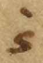

Vat. gr. 754 - Transcription (Ps 1 to Ps 50)
Diplomatic
transcribed by
encoded by
FWF Project 32988
Available under the Creative Commons Attribution 4.0 International (CC BY 4.0)
2023-04-12
The facsimiles of the manuscript are available: Vat. gr. 754
The pinakes identifier of the manuscript is: 67385
The content of the manuscript is:
- f. 3r–36v: Prolegomena in Psalmos
- f. 37r–356v: Catena in Psalmos 1–150
- f. 356v: Ps 151
- f. 357r–395r: Catena in Odas (Odes both from the Old and New Testaments)
- f. 395r–395v: Oratio Manasse, Hymnus matutinus, Trisagius
Form: codex
Material: parchment
Extent: 350 x 255 mm
Layout of the pages:

- 395 ff. (50 quires), 35 lines per page (full page). Within the Psalmcatena 37 lines per page are traced but more than 37 are written. Folios 3r–36v in disorder. 3 folios missing.
Scripts:
- Minuscule letters: prolegomena, commentary fragments, glosses, texts on the last folio.
- Larger minuscule letters: Bible text, ektheseis.
- Capitals (majuscules): psalm inscriptions, hexaplaric variants, a number of glosses, author names and titles of works (if quoted at the beginning of a text).
Evagrius᾿ Scholia are counted with minuscules that begin anew with each Psalm. The 2161 “Athanasian” Scholia are counted with majuscules (from 1 to 100) and organized into 22 hundrets. These counting letters are repeated along the biblical verses.
Hexaplaric variants, glosses and commentary fragments are linked to the biblical verses through linking signs.
Decoration: Decoration or rubrication: absent.
Written in the 10th century.
 LINKING SIGN 1
LINKING SIGN 1
 LINKING SIGN 2
LINKING SIGN 2
LINKING SIGN 3
 LINKING SIGN 4
LINKING SIGN 4
 LINKING SIGN 5
LINKING SIGN 5
 LINKING SIGN 6
LINKING SIGN 6
 LINKING SIGN 7
LINKING SIGN 7
 LINKING SIGN 8
LINKING SIGN 8
 LINKING SIGN 9
LINKING SIGN 9
 LINKING SIGN 10
LINKING SIGN 10
 LINKING SIGN 11
LINKING SIGN 11
 LINKING SIGN 12
LINKING SIGN 12
 LINKING SIGN 13
LINKING SIGN 13
 LINKING SIGN 14
LINKING SIGN 14
 LINKING SIGN 15
LINKING SIGN 15
 LINKING SIGN 16
LINKING SIGN 16
 LINKING SIGN 17
LINKING SIGN 17
 LINKING SIGN 18
LINKING SIGN 18
 LINKING SIGN 19
LINKING SIGN 19
 LINKING SIGN 20
LINKING SIGN 20
 LINKING SIGN 21
LINKING SIGN 21
 LINKING SIGN 22
LINKING SIGN 22
 LINKING SIGN 23
LINKING SIGN 23
 LINKING SIGN 24
LINKING SIGN 24
 LINKING SIGN 25
LINKING SIGN 25
 LINKING SIGN 26
LINKING SIGN 26
 LINKING SIGN 27
LINKING SIGN 27
LINKING SIGN 28
 LINKING SIGN 29
LINKING SIGN 29
LINKING SIGN 30
LINKING SIGN 31
 LINKING SIGN 32
LINKING SIGN 32
 LINKING SIGN 33
LINKING SIGN 33
 LINKING SIGN 34
LINKING SIGN 34
 LINKING SIGN 35
LINKING SIGN 35
 LINKING SIGN 36
LINKING SIGN 36
 LINKING SIGN 37
LINKING SIGN 37
 LINKING SIGN 38
LINKING SIGN 38
LINKING SIGN 39
 LINKING SIGN 40
LINKING SIGN 40
 LINKING SIGN 41
LINKING SIGN 41
 LINKING SIGN 42
LINKING SIGN 42
 LINKING SIGN 43
LINKING SIGN 43
 LINKING SIGN 44
LINKING SIGN 44
LINKING SIGN 45
LINKING SIGN 46
 LINKING SIGN 47
LINKING SIGN 47
 LINKING SIGN 48
LINKING SIGN 48
LINKING SIGN 49
LINKING SIGN 50
 LINKING SIGN 51
LINKING SIGN 51
 LINKING SIGN 52
LINKING SIGN 52
 LINKING SIGN 53
LINKING SIGN 53
 LINKING SIGN 54
LINKING SIGN 54
 LINKING SIGN 55
LINKING SIGN 55
 LINKING SIGN 56
LINKING SIGN 56
 LINKING SIGN 57
LINKING SIGN 57
 LINKING SIGN 58
LINKING SIGN 58
 LINKING SIGN 59
LINKING SIGN 59
 LINKING SIGN 60
LINKING SIGN 60
 LINKING SIGN 61
LINKING SIGN 61
LINKING SIGN 62
 LINKING SIGN 63
LINKING SIGN 63
 LINKING SIGN 64
LINKING SIGN 64
LINKING SIGN 65
LINKING SIGN 66
 LINKING SIGN 67
LINKING SIGN 67
 LINKING SIGN 68
LINKING SIGN 68
LINKING SIGN 69
 LINKING SIGN 70
LINKING SIGN 70
 LINKING SIGN 71
LINKING SIGN 71
 LINKING SIGN 72
LINKING SIGN 72
 LINKING SIGN 73
LINKING SIGN 73
 LINKING SIGN 74
LINKING SIGN 74
 LINKING SIGN 75
LINKING SIGN 75
 LINKING SIGN 76
LINKING SIGN 76
 LINKING SIGN 77
LINKING SIGN 77
Abbreviation for καὶ
[middle column]
(3) [left margin] Α [top of the page] [= Athanasius, exp. in Ps 1,1 - quotation (→ Edition)][top of the page]
(1) [left margin] Ι [top of the page] [= Athanasius, exp. in Ps 2 - quotation (→ Edition)]Commentary fragment: Gregorius Nyssenus - Gregorius Nyss., Ps. inscr. II 11 (121,11–122,15 McDonough) in Ps 7,1
Lemma: Ps 7,1
θωθέντων αὐτῷ χρηστῶν διὰ τῶν λόγων Χουσὶ. τῷ θεῷ τὴν αἰτίαν ἀνατιθεὶς. ταύτην τὴν εὐχαριστίαν πεποίηται• περιττὸν δ᾿ ἂν εἴη· τὰς ἱστορίας δι᾿ ἀκριβείας σοι ἐκτίθεσθαι· πῶς πιστὸς ὢν τῷ Δαυῒδ ἐν τοῖς ὑπασπισταῖς οὗτος ὁ Χουσὶ. ἐν τοῖς φίλοις τοῦ Ἀβεσσαλὼμ καταμίγνυται· καὶ πιθανώτερος γίνεται τῷ τυράννῳ. τῆς τοῦ Ἀχειτόφελ συμβουλῆς· ὅθεν συνέβη τούτου κατὰ τὴν εἰσήγησιν τῆς γνώμης κατακρατήσαντος αὐτοῦ. ὑφ᾿ ἑαυτοῦ καταπνιγεὶς τὸν κατὰ τοῦ Δαυῒδ τῷ Ἀβεσσαλὼμ συμβουλεύσαντα· καὶ μετ᾿ ὀλίγα: Ἡ μὲν τῇ ἱστορίᾳ. ἡ δὲ τῇ ψαλμῳδίᾳ ἐγγέγραπται· ἡμῖν δὲ σκοπός ἐστι τῶν ἐν τάξει τῶν ψαλμῶν εἱρμὸν κατανοῆσαι. δι᾿ οὗ τῷ ἀγαθῷ προσαγόμεθα· οὐκοῦν τὴν ἐνταῦθα γνώμην. τὴν ἀναιρετικὴν τοῦ ἐπιβουλεύοντος ἡμῖν κατανοήσωμεν· τίς οὖν ἐστιν αὕτη; τὸ ἴσον εἰς κακίαν ἡγεῖσθαι· ἄρχειν τε ἀδικίας καὶ ἀμύνεσθαι τὸν ἀπάρξαντα· τιμᾶται γὰρ ἑαυτῷ τῶν ἐσχάτων· καὶ τῆς καθ᾿ ἑαυτοῦ τιμωρίας ὁριστὴς γίνεται. εἰ εὑρεθείη κακοῦ τὸ κακὸν ὥσπερ ἐν συναλλάγματι διαμείψας· καὶ ἀναδοὺς τοῖς προπαρασχομένοις, ὃ ἔλαβεν· καὶ οὕτως μετὰ τοὺς ἀγῶνας τούτους. πάλιν νικητὴς ἀναδείκνυται· διαδέχεται γὰρ ἐπιγραφὴ. τὸ ὑπὲρ τῶν ληνῶν προ
Attribution: Γρη(γορίου) Νύ(σσης)
Commentary fragment: (Evagrius) - Evagrius, schol. nr. α´ in Ps 7,5a (308 Rondeau – Géhin – Cassin)
Lemma: Ps 7,5a
Πρὸς ἀμνησικακίαν ἀναγκαῖον τὸ ῥητόν τοῦτο: –
Attribution: α´
Commentary fragment: (Athanasius) - Athanasius, exp. in Ps 7,4–5 (→ Edition)
Lemma: Ps 7,4a
Τὸ ἀμνησίκακον προβάλλεται· ἐκκαλούμενος δι᾿ αὐτοῦ εἰς ἔλεον τὸν θεόν:
Attribution: ΟΔ
Commentary fragment: (Athanasius) - Athanasius, exp. in Ps 7,2–3 (→ Edition)
Lemma: Ps 7,2a
Ἐπειδὴ ἀνθρώπῳ φησὶ περὶ σωτηρίας οὐ θαρρῶ. εἰ καὶ τοῦ Χουσὶ οἱ λόγοι καλοί: σῶσόν με καὶ ἐκ τῶν παρόντων μὲν ἐχθρῶν. μάλιστα δὲ ἀπὸ τοῦ ἐφεδρεύοντος νοητοῦ λέοντος τῆν ἡμετέραν ψυχῆν: –
Commentary fragment: Basilius - Basilius, hom. in Ps. 7 (PG 29,232 B10–13; 232 D2–233 A2) in Ps 7,2
Lemma: Ps 7,3a (sic)
Τίς οὖν ἡ διαφορὰ τοῦ σώζεσθαι καὶ τοῦ ῥύεσθαι; ὅτι τῆς σωτηρίας μὲν κυρίως. οἱ ἀσθενοῦντες χρῄζουσιν· τοῦ ῥύεσθαι δὲ. οἱ ἐν τῇ αἰχμαλωσίᾳ κατεχόμενοι· εὔχεται οὖν περὶ τῆς ἐνταῦθα ζωῆς καὶ περὶ τῆς μελλούσης· σῶσον γάρ με φησὶν ἐνταῦθα ἀπὸ τῶν διωκόντων· ῥῦσαι δέ με ἐκεῖ. ἐν τῷ καιρῷ τῆς ἐρεύνης:
Attribution: Βασιλ(είου)
Commentary fragment: Theodoretus - Theodoretus, comm. in Ps 7,5–6 (PG 80,908 C2–D5)
Lemma: Ps 7,5a
Τῆς ἀρετῆς πολλὰ μόρια· οὐ γὰρ μόνον σωφροσύνη καὶ φρόνησις. ἀλλὰ καὶ ἀνδρεία καὶ δικαιοσύνη· ἐνταῦθα τοίνυν οὐ τὴν ἄκραν ἑαυτῷ μαρτυρεῖ. ἀλλ᾿ ὅτι τούτοις ἥκιστα τοὺς πολέμους ἠδικηκὼς. τὴν ἄδικον δι᾿ αὐτοὺς ὑπομενεῖ φυγήν· οὐ μόνον γάρ φησιν ἀδικίας οὐκ ἦρξα. ἀλλ᾿ οὐδὲ τοὺς ἠδικηκότας ἠνεσχόμην ἀμύνασθαι πώποτε· πολλάκις γὰρ τὸν Σαοὺλ ὑποχείριον λαβὼν. τῆς ἀδίκου δυσμενείας δίκας οὐκ ἐπραξάμην οὗ δὴ χάριν σε δέσποτα παρακαλῶ. τὰ πάντα σαφῶς ἐπιστάμενον. δικάσαί μοι δικαίως· καὶ εἴ τι τοιοῦτον δέδρακα πώποτε
Attribution: Θεοδ(ωρήτου)
Commentary fragment: Theodoretus - Theodoretus, comm. in Ps 7,5–6 (PG 80,908 C2–D5)
Lemma: Ps 7,5a
τῆς μὲν σῆς κηδεμονίας γυμνῶσαι· τοῦτο γὰρ λέγει ἀποπέσοιμι ἄρα ἀπὸ τῶν ἐχθρῶν μου κενός· ὑποχείριον δὲ τοῖς δυσμενέσιν ἐκδοῦναι ὡς ἂν μὴ μόνον τῆς παρὰ σοῦ με δόξης καὶ βασιλείας γυμνώσαιεν. ἀλλὰ καὶ καταγελάστῳ παραδοῖεν θανάτῳ· τοῦτο γὰρ ἐσήμανεν εἰρηκὼς. τὴν δόξαν μου εἰς χοῦν κατασκηνώσαι: –
Attribution: Θεοδ(ωρήτου)
Commentary fragment: Origenes - Evagrius, schol. nr. γ´ in Ps 7,6c (310 Rondeau – Géhin – Cassin)
Lemma: Ps 7,6b (sic)
Χοϊκὸς ἀντὶ ἐπουρανίου γενοίμην: –
Attribution: γ´ ωριγε(νους)
Hexaplaric variant: Symmachus, Aquila (Ps 7,7b)
Lemma: Ps 7,7c1 (καὶ ἐξεγέρθητι) sic
Ϲ ἐν χόλῳ· A ἐν ἀνυπερθεσίαις:
Commentary fragment: Origenes - Evagrius, schol. nr. δ´ in Ps 7,7b (312 Rondeau – Géhin – Cassin)
Lemma: Ps 7,7b
Ἐὰν ὑψωθῶ πάντας ἑλκύσω πρὸς ἐμαυτὸν φησὶν ὁ σωτήρ:
Attribution: δ´ ωρ(ι)γε(νους)
Commentary fragment: (Athanasius) - Athanasius, exp. in Ps 7,7b (→ Edition)
Lemma: Ps 7,7b
Τουτέστιν ἐν τοῖς κραταιοῖς τῶν ἐχθρῶν μου· πέρατα γὰρ τὰ ἄκρα δηλοῖ: –
Commentary fragment: Eusebius - Origenes, schol. (?) in Ps 7,5b (= PG 27,80 A4–6; PG 12,1180 A10–13)
Lemma: Ps 7,5b
Ὁ μὲν δίκαιος νικήσας. πλήρης ἀπὸ τῶν ἐχθρῶν ἐξέρχεται· ὁ δὲ φαῦλος. ὡς νικηθεὶς. ἀποπίπτει αὐτῶν κενὸς. καὶ οὐδὲν ἔχων πληρώματος: –
Attribution: Εὐσε(βίου)
Commentary fragment: (Athanasius) - Athanasius, exp. in Ps 7,6 (→ Edition)
Lemma: Ps 7,6a
Ὃ λέγει τοιοῦτόν ἐστιν· εἰ καὶ τό καὶ τὸ ἐποίησα. μὴ ἐλευθερωθείην τῆς ἁμαρτίας πρὸ τοῦ θανάτου: –
Attribution: ΟΕ
Commentary fragment: Origenes - Evagrius, schol. nr. β´ in Ps 7,5b (310 Rondeau – Géhin – Cassin)
Lemma: Ps 7,6a (sic)
πάντες ἐλάβομεν. καὶ χάριν ἀντὶ χάριτος: διόπερ καὶ οἱ τοιοῦτοι. κάλαμοι λέγονται τρέφοντες ἐν ἑαυτοῖς τὰ θηρία· ἐπιτίμησον γάρ φησὶ τοῖς θηρίοις τοῦ καλάμου· καὶ ὁ διάβολος φησὶν ὁ ᾿Ἰὼβ. παρὰ παντοδαπὰ δένδρα κοιμᾶται· παρὰ πάπυρον καὶ βούτομον καὶ κάλαμον· αὐτὸς γὰρ βασιλεύς ἐστι πάντων τῶν ἐν τοῖς ὕδασι: –
Attribution: β´ ωριγε(νους)
Commentary fragment: Eusebius - Origenes, schol. (?) in Ps 7,6b–c (PG 12,1180 B10–15; PG 23,124 B12–C2)
Lemma: Ps 7,6b
Ἡ ζωὴ τοῦ ἔτι τὴν εἰκόνα τοῦ χοϊκοῦ φοροῦντος. καταπεπάτηται ὑπὸ τοῦ ἐχθροῦ εἰς γῆν· οὕτως δὲ κἂν δοξάζεσθαί ποτε δοκῇ. κατεσκήνωσεν αὐτοῦ ἡ δόξα εἰς χοῦν· ὡς τῶν τοιούτων διὰ δόξαν· καὶ τὸν παρ᾿ αὐτὸν ἔπαινον. ἢ τὴν παρ᾿ αὐτοῖς ἀποδοχήν: –
Attribution: Εὐσε(βίου)
Commentary fragment: (Athanasius) - Athanasius, exp. in Ps 7,7c1 (→ Edition)
Lemma: Ps 7,7c1
Σαφῶς περὶ τῆς θεοφανείας τοῦ σωτῆρος διὰ τῶν παρόντων εὐαγγελίζεται: –
Attribution: ΟZ
Commentary fragment: Hesychius - Hesychius, comm. magnus (?) in Ps 7,7c (ineditum?)
Lemma: Ps 7,7c
Ἐξεγέρθητι φησὶν ἐλθὲ ἐν προστάγματι τῆς κατὰ σάρκα σου θεοφανείας· καὶ ἀνάστηθι ἐκ θανάτου ἐθελουσίου· καὶ τριημέρου ταφῆς. καὶ συναγωγὴ λαῶν· – οὐ τοῦ ἐμπλήκτου ἔτι ἰσραὴλ. ἀλλὰ τοῦ ἐκ περάτων εἰς πέρατα γῆς ἐθνῶν λαοῦ – κυκλώσει σε: –
Attribution: Ἡσυχ(ίου)
Commentary fragment: (Athanasius) - Athanasius, exp. in Ps 7,7c2 (→ Edition)
Lemma: Ps 7,7c2
Ἄνωθεν γὰρ διὰ τῶν πατριαρχῶν. ταύτην ἡμῖν τὴν σωτηρίαν ὑπέσχετο: –
Attribution: ΟΗ
Commentary fragment: (Athanasius) - Athanasius, exp. in Ps 7,8a (→ Edition)
Lemma: Ps 7,8a
Σαφῶς διὰ τῶν παρόντων. τῆς ἐκκλησίας τὴν εἰς αὐτὸν πίστιν δηλοῖ: –
Attribution: ΟΘ
Commentary fragment: (Athanasius) - Athanasius, exp. in Ps 7,8b–9a (→ Edition)
Lemma: Ps 7,8b-9a
Ταύτης μὲν τῆς συναγωγῆς δηλονότι· τὸ δὲ εἰς ὕψος. ἢ τὸν τίμιον αἰνίττεται σταυρὸν εἰς ὃν ἀνήνεγκεν ἡμῶν τὰς ἁμαρτίας. ἢ τὴν εἰς οὐρανοὺς ἀναφοίτησιν· ἐπορεύθη γὰρ ἐμφανισθῆναι τῷ προσώπῳ τοῦ πατρὸς ὑπὲρ ἡμῶν: –
Attribution: Π
Hexaplaric variant: Symmachus (Ps 7,9c)
Lemma: Ps 7,10a (πονηρία) sic
Ϲ ἁπλότητά μου τὴν ἐπ᾿ ἐμοί: –
Commentary fragment: Origenes - Evagrius, schol. nr. ε´ in Ps 7,10 (312 Rondeau – Géhin – Cassin)
Lemma: Ps 7,10a
Ἐὰν συντελεσθῇ ἡ πονηρία τῶν ἁμαρτωλῶν. ὁ δίκαιος κατευθύνει τὴν ὁδὸν αὐτοῦ μηκέτι πολεμούμενος ὑπ᾿ αὐτῶν:
Attribution: ε´ ωρ(ι)γε(νους)
Hexaplaric variant: Aquila, Symmachus, Quinta, Sexta (Ps 7,10b)
Lemma: Ps 7,9b (κρῖνόν με) sic
A Ϲ Ε´ S´ καὶ κατευθύνει δίκαιος:
Commentary fragment: (Athanasius) - Athanasius, exp. in Ps 7,9b (→ Edition)
Lemma: Ps 7,9b–10b
Ἀξιοῖ πάλιν ἀπὸ τῶν ὄντων ἐχθρῶν σωθῆναι· ἀφ᾿ ὧν ἔπραξαν τὸν ἔλεον ἐκκαλούμενος: –
Attribution: ΠΑ
Commentary fragment: Anonymous - Theodoretus, comm. in Ps 7,9b–c (PG 80,909 C2–15)
Lemma: Ps 7,9b
Οὐ δικαιοσύνην ἑαυτῷ διὰ τούτων τῶν λόγων μεμαρτύρηκεν ὁ θεῖος Δαυΐδ· τἀναντία γὰρ αὐτοῦ βοῶντος ἀκούομεν· ὅτι τὴν ἀνομίαν μου ἐγὼ γινώσκω· καὶ ἡ ἁμαρτία μου ἐνώπιόν μου ἐστι διὰ παντός· καὶ εἶπον ἐξαγορεύσω κατ᾿ ἐμοῦ τὴν ἀνομίαν μου τῷ κυρίῳ· ἀλλὰ δικαιοσύνην. τὴν ἐν τῷ προκειμένῳ πράγματι λέγει· οὔτε γάρ φησιν τὸν Ἀβεσσαλὼμ ἠδίκηκά τι· οὔτε τὸν Ἀχιτώφελ· οὔτε τοὺς μετὰ τούτων κατ᾿ ἐμοῦ στρατεύοντας· κατὰ ταύτην τοίνυν τὴν δικαιοσύνην καὶ τὴν ἀκακίαν. κριθῆναι παρακαλῶ. καὶ μὴ κατὰ τὰς ἤδη παρ᾿ ἐμοῦ γεγενημένας πλημμελείας. αὐ
Commentary fragment: Anonymous - Theodoretus, comm. in Ps 7,9b–c (PG 80,909 C2–15)
Lemma: Ps 7,9b
τὴν καθ᾿ αὑτὴν κριθῆναι τὴν παροῦσαν ὑπόθεσιν ἱκετεύω. καὶ μὴ ἑτέρων νῦν δοῦναι δίκας ἁμαρτημάτων: –
Commentary fragment: Eusebius - Origenes, schol. (?) in Ps 7,10a (PG 12,1181 A4–6)
Lemma: Ps 7,10a
Ὅτε οὐκέτι ἁμαρτάνει τις. συντελεῖται αὐτοῦ ἡ πονηρία. ἠREGἢ ἡ πονηρία τῶν ἁμαρτωλῶν. ὁ διάβολος ἐστιν: –
Attribution: Εὐσε(βίου)
Commentary fragment: Athanasius - Athanasius, exp. in Ps 7,10c–11 (→ Edition)
Lemma: Ps 7,10c
Ἐπειδὴ οἶδας φησὶ τῆς ἡμετέρας καρδίας τὰ κινήματα. τούτου χάριν τὴν βοήθειαν ἐξαιτῶ: –
Attribution: ΠΒ Ἀθανα(σίου)
Commentary fragment: (Athanasius) - Athanasius, exp. in Ps 7,12–14a (→ Edition)
Lemma: Ps 7,12a
Σαφῶς διὰ τῶν τοιούτων παρίστησι τὸ μακρόθυμον τοῦ θεοῦ· ἀναβολὴν μὲν ἔχων τῆς ἡμετέρας κολάσεως. οὐ μὴν παντελῆ συγγνώμην: –
Attribution: ΠΓ
Commentary fragment: Anonymous - Origenes, schol. (?) in Ps 7,13–17 (PG 12,1181 A8–10); cf. PG 23,125 B3–5 - sub auctore Eusebio (pro Origene?) Paris. gr. 166–167 (f. 14v)
Lemma: Ps 7,13a
Μήποτε παρασεσιωπημένως ταῦτα περὶ τοῦ διαβόλου λέγεται· οὗτοι γὰρ πρὸς τούτοις καὶ ὠδίνησαν ἀδικίαν. καὶ τὰ ἑξῆς ὀργὴ τυγχάνων: –
Commentary fragment: Theodoretus - Theodoretus, comm. in Ps 7,10c–11 (PG 80,912 A2–13 sub Ps 7,11)
Lemma: Ps 7,11a (sic)
Νεφροὺς ἐνταῦθα. τοὺς λογισμοὺς ὀνομάζει· ἐπειδὴ γὰρ τὰς ὑπογαστρίους ὀρέξεις οἱ νεφροὶ διεγείρουσιν. ἐντεῦθεν δὲ λοιπὸν κινοῦνται τῆς ἐπιθυμίας οἱ λογισμοί· νεφροὺς τροπικῶς τοὺς λογισμοὺς προσηγόρευσεν· ὁ τοίνυν φησὶ τοὺς κεκρυμμένους τῆς διανοίας τῶν ἀνθρώπων λογισμοὺς ἐπιστά μενος. δικαίαν μοι παρέξει βοήθειαν. ἅτε δὴ τοῦτο ποιεῖν εἰωθώς· τοῖς γὰρ ἀδικουμένοις ἐπαμύνων διατελεῖ· ἐντεῦθεν λοιπὸν δὲ αἰνίττεται τοὺς πονηρίᾳ συζῶντας τὰς δικαίας τιμωρίας ὑποδεικνὺς. καὶ προ[σ]αγορεύει τοῦ Ἀχειτόφελ τὸν ὄλεθρον: –
Attribution: Θεοδ(ωρήτου)
Commentary fragment: (Evagrius) - Evagrius, schol. nr. ζ´ in Ps 7,14a (314 Rondeau – Géhin – Cassin)
Lemma: Ps 7,14a
σκεύη θανάτου εἰσὶν. ἀκάθαρτα λόγια:
Attribution: ζ´
Commentary fragment: (Evagrius) - Evagrius, schol. nr. ζ´ (ἄλλο) in Ps 7,14a (314 Rondeau – Géhin – Cassin)
Lemma: Ps 7,14a
Εἰ σκεύη θανάτου εἰσὶν αἱ τὸν θάνατον ἔχουσαι ψυχαὶ, σκεύη ζωῆς εἰσιν αἱ τὴν ζωὴν ἔχουσαι ψυχαί· οὕτως γὰρ καὶ Παῦλον σκεῦος ἐκλογῆς ὠνόμασεν ὁ κύριος:
Attribution: ἄλλο·
Commentary fragment: (Evagrius) - Evagrius, schol. nr. ς´ in Ps 7,14b (314 Rondeau – Géhin – Cassin)
Lemma: Ps 7,14b
Καιόμενοί εἰσιν, οἱ τὰ πεπυρωμένα βέλη τοῦ διαβόλου δεχόμενοι: –
Attribution: ς´
Commentary fragment: (Evagrius) - Evagrius, schol. nr. θ´ in Ps 7,15 (316 Rondeau – Géhin – Cassin)
Lemma: Ps 7,15b
Διατοῦτο ἔτεκεν ἀνομίαν. ἐπειδὴ συνέλαβεν πόνον καὶ ὠδίνησεν ἀδικίαν· αὕτη γὰρ ἡ ἀκολουθία τῆς φύσεως:
Attribution: θ´
Commentary fragment: Eusebius - Origenes, schol. (?) in Ps 7,14a (PG 12,1181 A11–15)
Lemma: Ps 7,14a
Ὁ πατὴρ τοῦ εἰπόντος ἐγὼ εἰμὶ ἡ ζωὴ. οὐχ ἑτοιμάζει ἐν τόξῳ αὐτοῦ σκεύη θανάτου· τίθησι γοῦν τὸ τόξον αὐτοῦ ἐν τῇ νεφέλῃ. ἵνα μὴ ἐπαγάγῃ ὕδωρ κατακλυσμοῦ ἐπὶ τὴν γῆν· διὸ περὶ τοῦ διαβόλου ταῦτα λέγεσθαι νομιστέον: -
Attribution: Εὐσε(βίου)
Commentary fragment: (Athanasius) - Athanasius, exp. in Ps 7,14b (→ Edition)
Lemma: Ps 7,14b
Βέλη μὲν τὴν τιμωρίαν· καιομένοις δὲ. τοῖς ἀξίοις πυρός: -
Attribution: ΠΔ
Commentary fragment: Theodoretus - Theodoretus, comm. in Ps 7,14b (PG 80,912 C1–5)
Lemma: Ps 7,14b
σονται βέλεσι: –
Attribution: Θεοδ(ωρήτου)
Commentary fragment: (Athanasius) - Athanasius, exp. in Ps 7,15a (→ Edition)
Lemma: Ps 7,15a
Ὁ ἐχθρὸς τῆς ἡμετέρας ζωῆς: –
Attribution: ΠΕ
Commentary fragment: (Athanasius) - Athanasius, exp. in Ps 7,15b (→ Edition)
Lemma: Ps 7,15b
Τουτέστι καὶ βεβούληται καὶ εἰς ἔργον ἐξήγαγε τὰ σκέμματα: –
Attribution: ΠS
Commentary fragment: Eusebius - Origenes, schol. (?) in Ps 7,15b (PG 12,1181 B9–C3)
Lemma: Ps 7,15b
Ὁ μὴ φιλόθεος ἀλλὰ φιλήδονος. ἀνάλογον αἷς δουλεύει ἡδοναῖς συλλαμβάνει πόνον ἕνα συνημμένον· καὶ μὴ ἔχοντα μεταξὺ διάλειμμα· καὶ ὠδίνει ἀδικίαν· καὶ τίκτει ἀνομίαν· ἐκ δὲ τῶν ἐναντίων· ὁ μὴ φιλήδονος ἀλλὰ φιλόθεος. ἀνάλογον οἷς ἀναδέχεται δι᾿ ἀρετὴν πόνοις. συλλαμβάνει εὐπάθειαν τὴν χαρὰν μίαν συνημμένην καὶ μὴ ἔχουσαν μεταξὺ διάλειμμα· καὶ ὠδίνει δικαιοσύνην· καὶ τίκτει εὐνομίαν. καὶ οὕτως τέκνα γίνεται ἤτοι ἀνομίας ἢ εὐνομίας ἕκαστος:
Attribution: Εὐσε(βίου)
Commentary fragment: (Athanasius) - Athanasius, exp. in Ps 7,16–17a (→ Edition)
Lemma: Ps 7,16a
Θάνατον γὰρ κατασκευάσας κατὰ τοῦ σωτῆρος Χριστοῦ. θανάτῳ παραδίδοται: –
Attribution: ΠΖ
Commentary fragment: Eusebius - Origenes, schol. (?) in Ps 7,16 (cf. PG 12,1181 C12–13); ὁ γὰρ – ὤρυξεν non habet PG
Lemma: Ps 7,16a
Μήποτε ὁ λάκκος χωρίον τί κολάσεως ἐστιν· εἰς ὃν προνοίᾳ θεοῦ αὐτὸς ὁ ὀρύξας ἐμπεσεῖται· ὁ γὰρ ὀρύσσων βόθρον. ἐμπεσεῖται εἰς αὐτόν: τὸ αὐτὸ μέντοι. γε καὶ λάκκος ἐστὶν καὶ βόθρος· λάκκος μὲν. τῇ προθέσει τοῦ ὀρύσσοντος καὶ σκάπτοντος· ἀλλ᾿ ἐπεὶ οὐ δύναται ὕδωρ συνέχειν. βόθρος γίνεται εἰς ὃν ἐμπεσεῖται ὁ ἐργασάμενος αὐτόν· καὶ τάχα οὐκ ἂν εἶπεν φρέαρ ὤρυξεν;
Attribution: Εὐσε(βίου)
Commentary fragment: Theodorus - Theodorus, fr. in Ps 7,16 (41 Devreesse)
Lemma: Ps 7,16a
Βαθυτέραν φησὶν εἰργάσατο τὴν ἐπιβουλήν· ἐκ μεταφορᾶς τὸ δολερὸν καὶ βαθὺ τῆς βουλῆς παραστήσας:
Attribution: Θεοδ(ώρου)
Commentary fragment: Anonymous - Origenes (?), fr. in Ps 7,17b (PG 12,1181 C13–D5)
Lemma: Ps 7,17b
Ἰσόπεδός ἐστιν αὐτοῦ ἡ κορυφὴ τῷ λοιπῷ σώματι· οὐδὲν γὰρ αὐτοῦ ἄνω. διὸ καὶ δράκων ποῦ λέγεται· εἰκότως οὖν ἡ ἐπαρθεῖσα καὶ ὑψωθεῖσα κατὰ τῆς γνώσεως τοῦ θεοῦ ἀδικία αὐτοῦ καθαιρουμένη, ἐπὶ τὴν κορυφὴν αὐτοῦ καταβήσεται: –
Commentary fragment: Anonymous - Theodoretus, comm. in Ps 7,18 (PG 80,913 A1–3)
Lemma: Ps 7,18a
Ἐγὼ δὲ τοσαύτης παρὰ τοῦ θεοῦ προνοίας τυχὼν. ὑμνήσω τὸν εὐεργέτην διηνεκῶς, τῆς κρίσεως τὸ δίκαιον διηγούμενος:
Hypothesis: (Athanasius) - Athanasius, exp. in Ps 8,1 (→ Edition)
Lemma: Ps 8,1
Πάλαι μὲν ἐν τῇ νομικῇ λατρείᾳ. ὃν ἦν προλήνιον. τὸ θυσιαστήριον δηλονότι τὸ ἐν τῷ νεῴ· μετὰ δὲ τὴν τῶν ἐθνῶν κλῆσιν. πολλαὶ ληνοί· αὗται δὲ ἂν εἶεν. αἱ ἐκκλησίαι αἱ τοὺς τῶν κατορθούντων ἐν θεοσεβείᾳ δεχόμεναι καρπούς:
Attribution: ΠΗ
Commentary fragment: Origenes - Evagrius, schol. + in Ps 8,1 (318 Rondeau – Géhin – Cassin)
Lemma: Ps 8,1
Ληνοὶ εἰσὶν φύσεις λογικαὶ τοὺς ἐκ τῆς πνευματικῆς ἀμπέλου καρποὺς ὑποδεξάμεναι: –
Attribution: ωρ(ι)γέ(νους)
Commentary fragment: Theodoretus - Theodoretus, comm. in Ps 8,1 (PG 80,913 A6–C12)
Lemma: Ps 8,1
Ἰστέον ὅτι ἐν ἑκάστῳ ψαλμῷ ἐν ᾧ οἱ Ο (ἑβδομήκοντα) τὸ εἰς τέλος τεθείκασιν· ὁ μὲν Ἀκύλας καὶ ὁ Θ (Θεοδοτίων). τῷ νικοποιῷ ἡρμήνευσαν· ὁ δὲ Σύμμαχος ἐπινίκιον· καὶ οὗτος τοιγαροῦν ὁ ψαλμὸς ἐπινίκιος τῷ νικοποιῷ προσφέρεται θεῷ τῷ τὸν ἐχθρὸν καὶ ἐκδικητὴν διάβολον καταλύσαντι καὶ τοὺς ἀνθρώπους εἰς τέλος τῆς ἐκείνου τυραννίδος
Attribution: Θεοδ(ωρήτου)
Commentary fragment: Theodoretus - Theodoretus, comm. in Ps 8,1 (PG 80,913 A6–C12)
Lemma: Ps 8,1
ἐλευθερώσαντι· ληνοὺς δὲ. τὰς ἐκκλησίας προσαγορεύει· ἐπειδὴ καὶ τὸν κύριον ἄμπελον· αὐτὸς γὰρ ἐν τοῖς ἱεροῖ εὐαγγελίοις ἔφη· ἐγὼ εἰμὶ ἡ ἄμπελος ἡ ἀληθινή· ταύτην δὲ τρυγῶντες οἱ πεπιστευκότες. τὸν μυστικὸν κατασκευάζουσιν οἶνον· μεγίστη δὲ καὶ αὕτη τῆς ἰουδαίων ἀπιστίας κατηγορία· πλῆθος γὰρ ληνῶν ἀκούοντες. καὶ σαφῶς εἰδότες ὡς μία τίς ἐδόθη ληνός· – μᾶλλον δὲ οὐδὲ ληνὸς ἀλλὰ προλήνιον· προλήνιον γάρ φησιν ὤρυξα ἐν αὐτῷ καὶ ἔμεινα τοῦ ποιῆσαι σταφυλήν· ἐποίησεν δὲ ἀκάνθας, – νοεῖν οὐκ ἐθέλουσιν ὡς ἐπαύσατο μὲν τὰ παλαιὰ. ἐπεφάνη δὲ τῆς νέας διαθήκης ἡ χάρις· πάντας ἀνθρώπους εἰς σωτηρίαν προκαλουμένη• οὗ δὴ χάριν οὐκέτι κατὰ τὸν παλαιὸν νόμον ἐφ᾿ ἑνὸς θυσιαστηρίου τοὺς τῶν ἀνθρώπων καρποὺς ληνοβατοῦσιν οἱ ἱερεῖς. ἀλλὰ μυρία καὶ ἀριθμὸν νικῶντα κατὰ πᾶσαν γῆν καὶ θάλατταν ἐπάγη θυσιαστήρια· καὶ τοῦτο σαφέστερον ὁ τρίτος καὶ ὀγδοηκοστὸς διδάσκει ψαλμός· καὶ αὐτὸς γὰρ ἐπιγραφὴν ἔχων ληνῶν. πολλῶν θυσιαστηρίων ἐποιήσατο μνήμην· ὡς ἀγαπητὰ γάρ φησι τὰ σκηνώματά σου· καὶ μετ᾿ ὀλίγα· τὰ θυσιαστήριά σου κύριε τῶν δυνάμεων· καὶ Η (ὄγδοος) δὲ ψαλμὸς. ὑπὲρ τῶν ληνῶν ἐπιγεγραμμένος. τῆς οἰκουμένης προθεσπίζει τὴν σωτηρίαν· καὶ τὴν περὶ τοὺς ἀνθρώπους τοῦ θεοῦ κηδεμονίαν διδάσκει· καὶ τοῦ μονογενοῦς προλέγει τὴν ἐνανθρώπησιν: –
Attribution: Θεοδ(ωρήτου)
Commentary fragment: (Athanasius) - Athanasius, exp. in Ps 8,3a (→ Edition)
Lemma: Ps 8,3a
Τῶν κατὰ θεὸν νηπιαζόντων τῇ κακίᾳ· τοῦτο δὲ σαφῶς καὶ ἐν τοῖς εὐαγγελίοις ἀναγέγραπται· εἰρηκὼς ὁ σωτὴρ ὅτε τοὺς παῖδας οἱ φαρισαῖοι ἐπεστόμιζον εὐλογοῦντας αὐτόν: –
Attribution: Ҁ
Commentary fragment: (Athanasius) - Athanasius, exp. in Ps 8,3b (→ Edition)
Lemma: Ps 8,3b
Ἢ τῶν νοητῶν. ἢ τῶν αἰσθητῶν: –
Attribution: ҀA
Commentary fragment: Iohannes Chrysostomus - Ιohannes Chrys., exp. in Ps. 8 (cf. PG 55,109, l. 33–38) in Ps 8,3c; cf. PG 27,81 B2–7
Lemma: Ps 8,3b (sic)
Τὸν λαὸν ἐνταῦθα φησὶ τὸν ἰουδαϊκόν· ἤλαυνον μὲν γὰρ ὡς ἐχθρὸν τὸν Χριστόν• προσεποιοῦντο δὲ τὸν πατέρα ἐκδικοῦντες τοῦτο ποιεῖν· διὰ τοῦτο ἄνω καὶ κάτω ταύτης αὐτοὺς ἀποστερῶν τῆς ἀπολογίας ἔλεγεν· ὁ ἐμὲ μισῶν. καὶ τὸν
Attribution: Ιω(άννης)
Commentary fragment: Iohannes Chrysostomus - Ιohannes Chrys., exp. in Ps. 8 (PG 55,109, l. 33–38 in Ps 8,3c; cf. PG 27,81 B2–7) in Ps 8,3b
Lemma: Ps 8,3b
πατέρα μου μισεῖ: –
Attribution: Ιω(άννης)
Commentary fragment: (Evagrius) - Evagrius, schol. nr. α´ in Ps 8,3 (318 Rondeau – Géhin – Cassin)
Lemma: Ps 8,3c
Κολαστικὸν καὶ τιμωρητικόν: –
Attribution: α´
Commentary fragment: (Evagrius) - Evagrius, schol. nr. α´ (ἄλλο) in Ps 8,3 (318 Rondeau – Géhin – Cassin)
Lemma: Ps 8,3c
Ὡς ἐχθρὸς μὲν ἡμᾶς ὁ Σατανᾶς ἁμαρτάνειν καταναγκάζει· ὡς δὲ ἐκδικητὴς. παραδιδομένους κολάζει· Ὑμέναιον γοῦν καὶ Ἀλέξανδρον αὐτὸς βλασφήμους ἀπεργασάμενος. πάλιν ἐπαίδευσεν διὰ τὰς εἰς θεὸν βλασφημίας: –
Attribution: ἄλλο·
Commentary fragment: (Athanasius) - Athanasius, exp. in Ps 8,3c (→ Edition)
Lemma: Ps 8,3c
Tὸν διάβολον δηλονότι· ἐπειδὴ μετὰ τὸ ἀναγκάσαι πληρῶσαι τὴν ἁμαρτίαν. καὶ τιμωρεῖται τοὺς ἁμαρτάνοντας· τὸ μέγεθος αὐτοῖς τοῦ ἁμαρτήματος. ἐν ὀφθαλμοῖς παριστῶν: –
Attribution: ҀΒ
Commentary fragment: (Athanasius) - Athanasius, exp. in Ps 8,4 (→ Edition)
Lemma: Ps 8,4a
Ἐκεῖνοι μὲν ἀγανακτῶσιν. τῶν νηπίων καταρτιζόντων αἶνον· ἐγὼ δὲ τὸ οὕτω μέγα καὶ περικαλλὲς τοὺς οὐρανοὺς φημὶ μικρόν τι ἔργον τῆς σῆς δημιουργίας θεωρῶ: –
Attribution: ҀΓ
Commentary fragment: Gregorius Nyssenus - Gregorius Nyss., Ps. inscr. II 11 (122,18–19; 122,23–123,13 McDonough) in Ps 8
Lemma: Ps 8,3c
Ὥσπερ τοίνυν κατὰ τὴν πρώτην ἐκ τοῦ Ἀβεσσαλὼμ φυγὴν· νικητὴς γίνεται διὰ τοῦ καταλῦσαι τὸν ἐχθρὸν ἅμα καὶ ἐκδικητήν· ὃς διὰ τοῦτο καὶ ἐχθρὸς καὶ ἐκδικητὴς ὀνομάζεται· ὅτι αὐτὰ τὰ πρὸς ἁμαρτίαν αὐτοῦ δελεάσματα. τιμωρία τοῖς αἰσθομένοις ἡ πικροτάτη ἐστίν· καὶ δι᾿ ὧν ἐφέλκεται πρὸς τὴν τοῦ κακοῦ κοινωνίαν ἐν ἀπάτῃ τὸν ἄνθρωπον· αὐτὸ ἐκεῖνο τὸ χαλεπώτατον τῆς τιμωρίας εἶδος ἐστὶν. οὕτως ἑρμηνεύει τὴν διάνοιαν ταύτην ὁ θεῖος ἀπόστολος εἰπὼν. ὅτι τὴν ἀντιμισθίαν ἣν ἔδει τῆς πλάνης αὐτῶν ἐν ἑαυτοῖς ἀπολαμβάνοντες: τίς γὰρ ἂν γένοιτο πρὸς τιμωρίαν ἄλλη χαλεπωτάτη ἐπίνοια τῆς κατὰ τὴν ἀσχημοσύνην ἀκαθαρσίας ἣν ἐν ἑαυτοῖς κατεργάζονται οἱ τῆς ἀσχημοσύνης ἐργάται; ὁ οὖν καταλύσας ἐν τῷ ἰδίῳ βίῳ τοῦ τοιούτου τὴν δύναμιν· ὃς τιμωρεῖται τὸν ἐν κακίᾳ γενόμενον δι᾿ αὐτοῦ τοῦ μετασχεῖν τῆς κακίας. ὁρᾷ τοὺς οὐρανοὺς καὶ τὴν τῶν οὐρανῶν ὑπερκαθημένην μεγαλοπρέπειαν. καὶ τὸ τῆς φύσεως ἡμῶν ἀξίωμα· τίνων τὲ ἄρχει. καὶ τίνι συντεταγμένη ἐστίν· τῷ γὰρ αὐτῷ καὶ τῶν ἀλόγων ἡγεμονεύει. καὶ τοῖς ἀγγέλοις διὰ συγκρίσεως παρισουμένη. μικρὸν ἐλαττοῦται· λόγος ἐστι τοίνυν δι᾿ οὗ γίνεται καὶ ἡ κατὰ τούτων ἀρχὴ καὶ ἡ πρὸς τοὺς ἀγγέλους οἰκείωσις: –
Attribution: Γρηγ(ορίου) Νυσ(σης)
Commentary fragment: Gregorius Nazianzenus - Gregorius Naz., or. 20,11 (80,10–17 Mossay – Lafontaine) in Ps 8,4a
Lemma: Ps 8,4a
Τίς οὐρανοῦ περιφορά; τίς ἀστέρων κίνησις· ἢ τάξις. ἢ μέτρα. ἢ σύνοδος. ἢ ἀπόστασις. τίνες δὲ ὅροι θαλάσσης; πόθεν δὲ ἀνέμων ῥεύματα· ἢ ὡρῶν περιτροπαί· ἢ ὄμβρων ἐπιχύσεις; εἰ τούτων οὐδὲν κατενόησας ὦ ἄνθρωπε. κατανοήσεις δὲ ἴσως ποτὲ ὅτ᾿ ἂν ἀπολάβῃς τὸ τέλειον· ὄψομαι γὰρ τοὺς οὐρανοὺς ἔργα τῶν δακτύλων σου· ὡς ὑπονοεῖσθαι τὰ νῦν ὁρώμενα μὴ εἶναι τὴν ἀλήθειαν. ἀλλὰ τῆς ἀληθείας ἰνδάλματα: –
Attribution: Γρη(γορίου) τ(οῦ) θεολ(όγου)
Hexaplaric variant: Aquila (Ps 8,6a); Symmachus (Ps 8,6a)
Lemma: Ps 8,6a (βραχύ τι)
A ὀλίγον παρὰ θεόν· / Ϲ βραχύ τι θεοῦ:
Commentary fragment: (Athanasius) - Athanasius, exp. in Ps 8,5–7 (→ Edition)
Lemma: Ps 8,5a
Ταῦτα τοῦ Παύλου σαφῶς ἐπὶ τὸν σωτῆρα ἡμῶν ἐξειληφότος. ἀρκεῖσθαι τῇ ἐκδόσει χρή:
Attribution: ҀΔ
Commentary fragment: (Athanasius) - Athanasius, exp. in Ps 8,8a (→ Edition)
Lemma: Ps 8,8a
τοὺς ἐξ ἰσραὴλ πιστεύσαντας αἰνίττεται: –
Attribution: ҀE
Commentary fragment: Gregorius Nazianzenus - Gregorius Naz., or. 28,5 (108,1–110,10 Gallay – Jourjon) in 1Cor 2,9 et Ps 8,4
Lemma: Ps 8,4a
Tὸ δὲ ἡμέτερον ἐν ἀπορίᾳ· οὐχὶ ἡ εἰρήνη τοῦ θεοῦ μόνη ἡ ὑπερέχουσα πάντα νοῦν καὶ κατάληψιν· οὐδὲ ὅσα τοῖς δικαίοις ἐστὶν ἐν ἐπαγγελίαις ἀποκείμενα· τὰ μήτε ὀφθαλμοῖς ὁρατά· μήτε ὠσὶν ἀκουστά· μήτε διανοίᾳ θεωρητά· κατὰ μικρὸν γοῦν οὐδὲ ἡ τῆς κτίσεως ὡς ἀκριβὴς κατανόησις· καὶ γὰρ καὶ ταύτης πείσθητι τὰς σκιὰς ἔχειν μόνον· ὅταν ἀκούσῃς ὄψομαι τοὺς οὐρανοὺς καὶ τὰ ἑξῆς· καὶ τὸν ἐν αὐτοῖς πάγιον λόγον ὡς οὐχὶ νῦν ὁρῶν· ὀψόμενος δὲ ἔστιν ὅτε: –
Attribution: Γρη(γορίου) τ(οῦ) θεολ(όγου)
Commentary fragment: Gregorius Nyssenus - Gregorius Nyss., or. dom. 5 (70,12–71,8 Callahan) in Ps 8,7b–9a et Ps 146,9a et Ps 103,14b
Lemma: Ps 8,7a
Ἀληθῶς γὰρ ὁβολός εἰσιν εὐτελεῖς τε καὶ εὐαρίθμητοι πρὸς μυριάδας ταλάντων παρατιθέμενοι. τὰ τῶν ἀδελφῶν ἡμῶν εἰς ἡμᾶς ὀφλήματα. συγκρίσει τῶν ἡμετέρων πρὸς τὸν θεὸν ὀφλημάτων· ζημία πάντως ἐστὶν ἢ ὕβρεως ἀφορμὴ. ἡ παρά τινος γεγενημένη οἰκέτου κακία. ἢ καὶ εἰς σωματικὸν θάνατον ἐπιβουλή· εἶτα σὺ πρὸς τὴν ἄμυναν τούτων ἐν φλεγομένῃ καρδίᾳ ἐξερεθίζεις· καὶ πᾶσαν ἐπίνοιαν εἰς τὴν τῶν προλελυπηκότων τιμωρί
Attribution: Γρη(γορίου) Νύ(σσης)
Commentary fragment: Gregorius Nyssenus - Gregorius Nyss., or. dom. 5 (70,12–71,8 Callahan) in Ps 8,7b–9a et Ps 146,9a et Ps 103,14b
Lemma: Ps 8,7a
αν ἐπιζητεῖς· καὶ οὐ λογίζει· εἰ μὲν πρὸς οἰκέτην ὁ θυμὸς φλεγμαίνοι: ὅτι οὐ φύσις ἀλλὰ δυναστεία πρὸς δουλείαν τε καὶ κυριότητα τὸ ἀνθρώπινον ἔσχισε· τῷ γὰρ ἀνθρώπῳ δουλεύειν ὁ τοῦ παντὸς οἰκονόμος. τὴν ἄλογον φύσιν ἐνομοθέτησεν καθώς φησιν ὁ προφήτης ὅτι πάντα ὑπέταξας ὑποκάτω τῶν ποδῶν αὐτοῦ. πρόβατα καὶ βόας ἁπάσας. ἔτι δὲ καὶ τὰ κτήνη τοῦ πεδίου· τὰ πετεινὰ τοῦ οὐρανοῦ καὶ τοὺς ἰχθύας τῆς θαλάσσης• ταῦτα δοῦλα προσαγορεύει. φησάσης ἑτέρωθι τῆς προφητείας. διδόντι τοῖς κτήνεσι τροφὴν αὐτῶν. καὶ χλόην τῇ δουλείᾳ τῶν ἀνθρώπων· τὸν δὲ ἄνθρωπον τῇ αὐτεξουσίῳ χάριτι κατεκόσμησεν. ὥστε τὸ ἴσον ἔχειν σοι τῷ τῆς φύσεως ἀξιώματι· ὁ ὑπεζευγμένος συνηθείᾳ καὶ νόμῳ· οὔτε παρὰ σοῦ γέγονεν· οὔτε ἐν σοὶ. οὔτε τὰς σωματικὰς τε καὶ ψυχικὰς ἐνεργείας. παρὰ σοῦ λαβὼν ἔχει: –
Attribution: Γρη(γορίου) Νύ(σσης)
Hexaplaric variant: Aquila (Ps 9,1)
Lemma: Ps 9,1a
A Τῷ νικοποιῷ νεανιότητος τοῦ υἱοῦ μελώδημα τοῦ Δαυΐδ·
Commentary fragment: (Athanasius) - Athanasius, exp. in Ps 8,8b (→ Edition)
Lemma: Ps 8,8b
Διὰ τούτων τὰ ἔθνη δηλοῖ: –
Attribution: ҀS
Commentary fragment: (Athanasius) - Athanasius, exp. in Ps 8,9 (→ Edition)
Lemma: Ps 8,9a
Τοὺς ἐπῃρμένους κατὰ τὸν βίον· καὶ τὰ ὑψηλὰ φρονοῦντας τοὺς ἀλογωτάτους: –
Attribution: ҀΖ
Commentary fragment: (Athanasius) - Athanasius, exp. in Ps 8,10 (→ Edition)
Lemma: Ps 8,10
Ἀναδιπλασιάζει τὸ θαῦμα ἐκπληττόμενος ὡς ἔφη ἐπὶ τῇ γενομένῃ τῶν ἀνθρώπων θεογνωσίᾳ: –
Attribution: ҀΗ
Hypothesis: (Athanasius) - Athanasius, exp. in Ps 9,1 (→ Edition)
Lemma: Ps 9,1
Διὰ τούτου τοῦ ψαλμοῦ τὰ κρυφίως πεπραγμένα τῷ σωτῆρι δηλοῖ· πολλὰ δὲ ἦν αὐτῷ τὰ κρυφίως πραττόμενα• ἥ τε ἐκ παρθένου διὰ πνεύματος ἁγίου κατὰ σάρκα γέννησις. αἵ τε παράδοξοι καὶ θαυματουργοὶ δυνάμεις· ὅ τε θάνατος αὐτὸς καὶ ἡ εἰς ἅδου κάθοδος καὶ ἡ ἐκ νεκρῶν ἀναβίωσις· ταῦτα γὰρ πάντα
Attribution: ҀΘ
Hypothesis: (Athanasius) - Athanasius, exp. in Ps 9,1
Lemma: Ps 9,1
κρυφίως αὐτῷ πέπρακται· ἀπέκρυψε γὰρ αὐτὰ καὶ τοὺς ἄρχοντας τοῦ κόσμου τούτου· ὑπὲρ δὴ τούτων τῶν κρυφίων ὁ προφήτης ἐκ προσώπου τῆς ἀνθρωπότητος εἰσέρχεται εὐχαριστῶν καὶ λέγων· ἐξομολογήσομαί σοι κύριε: –
Attribution: ҀΘ
Commentary fragment: Gregorius Nyssenus - Gregorius Nyss., Ps. inscr. II 11 (123,13–17 McDonough) in Ps 9,1
Lemma: Ps 9,1
Πάλιν ἕτερος ἐκδέχεται νίκης τρόπος· ὅταν ὑπερβὰς τὰ φαινόμενα τοῖς ἀπορρήτοις ἐμβα τεύσῃς τῷ λόγῳ· – υἱὸς δὲ ὁ λόγος· – καὶ ἱκανὸς ἤδη γένῃ ταῖς προλαβούσαις νίκαις ἐγγυμνασθεὶς. ὑπὲρ τῶν κρυφίων τοῦ υἱοῦ ὡς ψάλλει διὰ τῆς εὐαρμόστου τε καὶ ἐμμελοῦς: –
Attribution: Γρη(γορίου) Ν(ύσσης)
Commentary fragment: Theodoretus - Theodoretus, comm. in Ps 9,1 (PG 80,920 B10–921 A4)
Lemma: Ps 9,1
Ὁ μὲν Ϲ ἐπινίκιον περὶ τοῦ θανάτου τοῦ υἱοῦ· ὁ δὲ Ἀκύλας τῷ νικοποιῷ. νεανιότητος τοῦ υἱοῦ· καὶ ὁ Θ ὑπὲρ ἀκμῆς τοῦ υἱοῦ· συμφώνως τοίνυν ἅπαντες τοῦ υἱοῦ μνημονεύσαντες. διδάσκουσιν ἡμᾶς ὡς προφητείαν. καὶ οὗτος ὁ ψαλμὸς περιέχει. τῆν κατὰ τοῦ θανάτου νίκην τοῦ δεσπότου Χριστοῦ· ἀνδρικῶς γὰρ καὶ νεανικῶς νικήσας τὴν ἁμαρτίαν· καὶ λαβῆς ἀφορμὴν οὐδεμίαν δεδωκὼς τῷ θανάτῳ. κατέλυσεν αὐτοῦ τὸ κράτος· κρύφιον δὲ τοῦτο τὸ μυστήριον οἱ Ο προσηγόρευσαν. ἐπειδὴ καὶ τοὺς ἄλλους ἅπαντας· καὶ μέντοι καὶ αὐτοὺς τοὺς ἀποστόλους πρὸ τοῦ τέλους ἐλάνθανεν· καὶ μάρτυς ὁ εὐαγγελιστής· τοῦ γὰρ κυρίου πολλάκις αὐτοῖς εἰρηκότος· ἰδοὺ ἀναβαίνομεν εἰς ἱεροσόλυμα καὶ ὁ υἱὸς τοῦ ἀνθρώπου παραδοθήσεται εἰς τὸ σταυρω
Attribution: Θεοδ(ωρήτου)
Commentary fragment: Theodoretus - Theodoretus, comm. in Ps 9,1 (PG 80,920 B10–921 A4)
Lemma: Ps 9,1
θῆναι καὶ τὰ ἑξῆς· ἐπάγει καὶ τῇ τρίτῃ ἡμέρᾳ ἐγερθεὶς ἐπήγαγεν ὁ εὐαγγελιστής· καὶ ἦν τοῦτο κεκρυμμένον ἀπὸ τῶν ὀφθαλμῶν αὐτῶν· διὸ καὶ ὁ μακάριος Παῦλος βοᾷ· σοφίαν λαλοῦμεν θεοῦ ἐν μυστηρίῳ τὴν ἀποκεκρυμμένην. ἣν οὐδεὶς τῶν ἀρχόντων τοῦ αἰῶνος τούτου ἔγνωκεν· εἰ γὰρ ἔγνωσαν οὐκ ἂν τὸν κύριον τῆς δόξης ἐσταύρωσαν· καὶ πάλιν· τὸ μυστήριον τὸ ἀποκεκρυμμένον ἀπὸ τῶν αἰώνων καὶ ἀπὸ τῶν γενεῶν· εἰκότως τοίνυν οἱ οἱ Ο τοῦ υἱοῦ τὸν θάνατον ὠνόμασαν κρύφιον: –
Attribution: Θεοδ(ωρήτου)
Commentary fragment: (Athanasius) - Athanasius, exp. in Ps 9,2–4a (→ Edition)
Lemma: Ps 9,4a
Ἐπὶ τίσιν ἡ ἐξομολόγησις δηλοῖ· ἐχθρὸν δὲ αὐτοῦ τὸν θάνατον δηλοῖ φησὶ τὸν καὶ εἰς τὰ ὀ
Attribution: Ρ
Commentary fragment: (Athanasius) - Athanasius, exp. in Ps 9,2–4a
Lemma: Ps 9,4a
πίσω ἀποστρεφόμενον τουτέστιν εἰς τὸ μὴ εἶναι: –
Attribution: Ρ
Commentary fragment: (Athanasius) - Athanasius, exp. in Ps 9,4b (→ Edition)
Lemma: Ps 9,4b
Ἐπειδὰν φησὶν ἀποστραφῇ εἰς τὰ ὀπίσω ὁ θάνατος. τότε δὴ καὶ πᾶσα δύναμις ἀντικειμένη καταργηθήσεται· εἰ γὰρ ἔσχατος ἐχθρὸς καταργεῖται ὁ θάνατος. δηλονότι προαναιρεθεισῶν τῶν ἀντικειμένων δυνάμεων: –
Attribution: Α
Commentary fragment: (Athanasius) - Athanasius, exp. in Ps 9,5a (→ Edition)
Lemma: Ps 9,5a
Τὴν αἰτίαν τῆς εὐχαριστίας δίδωσι: –
Attribution: Β
Commentary fragment: (Athanasius) - Athanasius, exp. in Ps 9,5b (→ Edition)
Lemma: Ps 9,5b
Τὸ ἐκάθισας. τὴν εἰς τὸ κρίνειν ἐπισκοπὴν δηλοῖ τοῦ θεοῦ:
Attribution: Γ
Commentary fragment: (Athanasius) - Athanasius, exp. in Ps 9,6a (→ Edition)
Lemma: Ps 9,6a
Τοὺς νοητοὺς ἐχθροὺς δηλονότι:
Attribution: Δ
Commentary fragment: (Athanasius) - Athanasius, exp. in Ps 9,6b (→ Edition)
Lemma: Ps 9,6b
Τὸν δράκοντα φησίν: –
Attribution: E
Hexaplaric variant: Symmachus, Quinta (?), Sexta, Theodotion (?) (Ps 9,7a); non habet Field
Lemma: linking not completed (i.e. ῥομφαῖαι)
Ϲ ἐρείπια· οἱ λοιποὶ σὺν αὐτοῖς: –
Commentary fragment: (Athanasius) - Athanasius, exp. in Ps 9,10a (→ Edition)
Lemma: Ps 9,10a
Τῷ πτωχῷ τῷ πνεύματι λαῷ φησίν: –
Attribution: Θ
Commentary fragment: (Athanasius) - Athanasius, exp. in Ps 9,10b (→ Edition)
Lemma: Ps 9,10b
Ὡς τὸ ἐν καιρῷ δεκτῷ ἐπήκουσά σου:
Attribution: I
Commentary fragment: (Athanasius) - Athanasius, exp. in Ps 9,7a1 (→ Edition)
Lemma: Ps 9,7a1
Ῥομφαίας τοῦ διαβόλου. τὰς ἀντικειμένας δυνάμεις φησὶ δι᾿ ὧν ἦν ἰσχυρός: –
Attribution: S
Commentary fragment: Eusebius - Origenes, schol. (?) in Ps 9,7a1 (ineditum?)
Lemma: Ps 9,7a1
Ζητῶ εἰ καὶ τῷ ἐχθρῷ λυσιτελεῖ τὸ ἐκλ{ε}ιπεῖν αὐτοῦ πάσας τὰς ῥομφαίας καὶ μηκέτι ἔχειν | ᾧ ἀνελεῖ: –
Attribution: Εὐσε(βίου)
Commentary fragment: (Athanasius) - Athanasius, exp. in Ps 9,7a2 (→ Edition)
Lemma: Ps 9,7a2
Καὶ ποίας ἢ ταύτας περὶ ὧν ἀλλαχοῦ λέγεται· ἔθηκας εἰς χῶμα πόλεις ὀχυρὰς τοῦ πεσεῖν αὐτῶν τὰ θεμέλια; αὗται δέ εἰσιν πάλιν. αἱ ἀντικείμεναι δυνάμεις· αἳ ὥσπερ πόλεις ὀχυραὶ τετειχισμέναι· τοὺς ἁλόντας αὐτῶν τῇ ἀπάτῃ. ἐν αὐταῖς συλλαβοῦσαι εἶχον: –
Attribution: Ζ
Commentary fragment: (Athanasius) - Athanasius, exp. in Ps 9,7b (→ Edition)
Lemma: Ps 9,7b
Ἐξάκουστος γὰρ γέγονεν αὐτῶν ἡ ἀπώλεια: –
Attribution: Η
Commentary fragment: Eusebius - Origenes, schol. (?) in Ps 9,7b (ineditum?)
Lemma: Ps 9,8a (sic)
Αὐτῶν ἤτοι τῶν ῥομφαίων ἢ τῶν ἐθνῶν: –
Attribution: Εὐσε(βίου)
Commentary fragment: Gregorius Nyssenus - Gregorius Nyss., hom. 5 in Eccl. 2,16 (365,13–19 Alexander) in Ps 9,7b
Lemma: Ps 9,8a
Τοῦ μὲν γὰρ σοφοῦ φησὶν ἡ μνήμη. διὰ παντὸς ζῇ καὶ παντὶ τῷ αἰῶνι συμπαρατείνεται· τῷ δὲ ἄφρονι συναπεσβέσθη καὶ τὸ μνημόσυνον· περὶ γὰρ τῶν τοιούτων φησὶ καὶ ὁ προφήτης. ὅτι ἀπώλετο τὸ μνημόσυνον αὐτῶν μετ᾿ ἤχου· τοῦτο γὰρ ἡ τοῦ ἤχου προσθήκη ἐνδείκνυται· οὐκ ἔστιν οὖν φησὶ μνήμη τοῦ σοφοῦ μετὰ τοῦ ἄφρονος εἰς αἰῶνα:
Attribution: Γρη(γορίου) Νυ(σσης)
Commentary fragment: Theodoretus - Theodoretus, comm. in Ps 9,7b–8a (PG 80,925 A6–13)
Lemma: Ps 9,8a
καὶ πολὺν ἐργαζομένων τὸν κτύπον· ὁ δέ γε ἡμέτερος φησὶ θεὸς καὶ δεσπότης. αἰώνιον ἔχει τὸ κράτος. καὶ τὴν βασιλείαν ἀνώλεθρον:
Attribution: Θεοδ(ωρήτου)
Commentary fragment: Eusebius - Origenes, schol. (?) in Ps 9,9b (PG 23,132 C14–D6); cf. PG 17,105 C6–10
Lemma: Ps 9,9b
Οἰκουμένην μὲν. τὴν ἐκκλησίαν· ἥτις οἰκεῖται ὑπὸ πατρὸς καὶ υἱοῦ καὶ ἁγίου πνεύματος· κατὰ τὸ ἐγὼ καὶ ὁ πατὴρ ἐλευσόμεθα πρὸς αὐτὸν καὶ μονὴν παρ᾿ αὐτῷ ποιησόμεθα· λαοὺς δὲ. τοὺς λοιποὺς παρὰ τὴν ἐκκλησίαν· ἢ τοὺς ἐκ περιτομῆς· ὅσοι γὰρ ἐν νόμῳ ἥμαρτον. διὰ νόμου κριθήσονται· τῶν ἀνόμως ἁμαρτανόντων. ἀνόμως ἀπολουμένων: –
Attribution: Εὐσε(βίου)
Commentary fragment: Theodoretus - Theodoretus, comm. in Ps 9,8b–9a (PG 80,925 B1–5)
Lemma: Ps 9,8b
Οὐ γὰρ μόνον κατὰ τὸν παρόντα βίον τὴν οἰκείαν δύναμιν ἔδειξεν. ἀλλὰ κἀν τῷ μέλλοντι φρικῶδες αὐτοῦ δείξει κριτήριον· πᾶσιν ἀνθρώποις δικάζων. καὶ τὰ πρὸς ἀξίαν νέμων ἑκάστῳ: –
Attribution: Θεοδ(ωρήτου)
Commentary fragment: (Evagrius) - Evagrius, schol. nr. δ´ in Ps 9,12a (322 Rondeau – Géhin – Cassin)
Lemma: Ps 9,12a
Ἐκεῖνος ψάλλει. ὁ ἔχων ἐν ἑαυτῷ τὸν Χριστόν: –
Attribution: δ´
Commentary fragment: Hesychius - Hesychius, comm. brevis in Ps 9,13a (12 Jagić)
Lemma: Ps 9,13a
Ἐκδίκησιν γὰρ ποιήσει ὁ θεὸς ἐν τοῖς αἱμάξασι τὰς χεῖρας ἔθνεσιν ἐν ταῖς εἰδωλικαῖς θυσίαις: –
Attribution: Ἡσυχ(ίου)
Commentary fragment: Eusebius - Origenes, schol. (?) in Ps 9,11b (PG 12,1189 A6–8)
Lemma: Ps 9,11b
Οἱ ἐκζητήσαντες τὸν κύριον· οὐκ ἐγκαταλειφθέντες ὑπ᾿ αὐτοῦ ἔγνωσαν τὸ ὄνομα αὐτοῦ: –
Attribution: Εὐσε(βίου)
Commentary fragment: (Athanasius) - Athanasius, exp. in Ps 9,12a (→ Edition)
Lemma: Ps 9,12a
Τῇ ἐπουρανίῳ φησίν:
Attribution: ΙΑ
Commentary fragment: Theodoretus - Theodoretus, comm. in Ps 9,12a (PG 80,925 C13–D2)
Lemma: Ps 9,12a
Κατὰ τὴν πάλαι τῶν ἰουδαίων δόξαν τοῦτο εἴρηκεν ὁ προφήτης· μεμαθήκαμεν δὲ ὅμως ἐκ τῆς ἀποστολικῆς διδασκαλίας. καὶ ἐπουράνιον εἶναι σιών· προσεληλύθατε γάρ φησι σιὼν ὄρει καὶ πόλει θεοῦ ζῶντος. ἱερουσαλὴμ ἐπουρανίῳ·
Attribution: Θεοδ(ωρήτου)
Commentary fragment: (Athanasius) - Athanasius, exp. in Ps 9,12b (→ Edition)
Lemma: Ps 9,12b
Ταῦτα ὡς πρὸς τοὺς ἀποστόλους· καὶ τοὺς τῶν εὐαγγελίων κήρυκας φησίν· τίνα δὲ τὰ ἐπιτηδεύματα. διὰ τῶν ἑξῆς σημαίνει:
Attribution: ΙB
Commentary fragment: Theodoretus - Theodoretus, comm. in Ps 9,12b (PG 80,928 A1–13)
Lemma: Ps 9,12b
οἱ ἐν ἀγνοίᾳ. ἐν γνώσει· ἐν φωτὶ οἱ ἐν σκότει· ἐπ᾿ ἐλπίδι ζωῆς. οἱ νεκροί· οἱ πτωχοὶ. κληρονόμοι τῆς βασιλείας τῶν οὐρανῶν· οἱ ἰουδαῖοι πόρρω. καὶ τὰ ἔθνη πλησίον· οἱ υἱοὶ κύνες. καὶ οἱ κύνες υἱοί· καὶ αἱ μηχαναὶ δὲ τοῦ σωτῆρος θεοπρεπεῖς· ἀθανασία γὰρ διὰ θνητότητος ἐδωρήθη· καὶ διὰ θανάτου ζωή· δι᾿ ἀτιμίας τιμή· εὐλογία. διὰ κατάρας· διὰ σταυροῦ σωτηρία· ταῦτα γὰρ τὰ ἐπιτηδεύματα: –
Attribution: Θεοδ(ωρήτου)
Commentary fragment: (Athanasius) - Athanasius, exp. in Ps 9,14a (→ Edition)
Lemma: Ps 9,14a
Αὕτη ἡ εὐχὴ τῶν πενήτων: –
Attribution: ΙE
Commentary fragment: (Athanasius) - Athanasius, exp. in Ps 9,13a (→ Edition)
Lemma: Ps 9,13a
Τὰ αἵματα φησὶ τὰ ὑπὲρ αὐτοῦ χεόμενα ἐκζητήσει ἐπὶ τῷ ἐκδικίας ἀξιῶσαι: –
Attribution: ΙΓ
Commentary fragment: (Athanasius) - Athanasius, exp. in Ps 9,13b (→ Edition)
Lemma: Ps 9,13b
Πένητας πάλιν. τοὺς
Attribution: ΙΔ
Commentary fragment: (Athanasius) - Athanasius, exp. in Ps 9,13b
Lemma: Ps 9,13b
δι᾿ αὐτὸν πτωχεύοντας φησὶν οἳ καὶ διὰ παντὸς τὰς πρὸς αὐτὸν ἱκεσίας ἐποιοῦντο· ἐκδίκησιν τῶν κατ᾿ αὐτῶν γινομένων ἀδικιῶν παρὰ τῶν δαιμόνων αἰτοῦντες: –
Attribution: ΙΔ
Commentary fragment: Theodoretus - Theodoretus, comm. in Ps 9,13 (PG 80,928 A15–Β9)
Lemma: Ps 9,13b
Ὁ πάντα φησὶν ἐφορῶν ἀκριβῶς ἐκζητῶν τὰ γινόμενα. εἶδεν τὰς τολμωμένας ὑπὸ τοῦ διαβόλου δι᾿ ἀπάτης τῶν ἀνθρώπων σφαγὰς. καὶ εἰς ἐπικουρίαν τῶν ἀδικουμένων ἐλήλυθεν· τοῦτο γὰρ σημαίνει τὸ οὐκ ἐπελάθετο τῆς κραυγῆς τῶν πενήτων: κραυγὴν γὰρ ἐνταῦθα· οὐ προσευχὴν λέγει καὶ δέησιν. ἀλλὰ τὴν δι᾿ ἁμαρτίας ἐπελθοῦσαν ταλαιπωρίαν· δι᾿ ἣν καὶ θάνατοι ἄωροι. καὶ θρῆνοι καὶ συμφοραί: –
Attribution: Θεοδ(ωρήτου)
Commentary fragment: (Athanasius) - Athanasius, exp. in Ps 9,14b–15 (→ Edition)
Lemma: Ps 9,14b
Διὰ τοῦτο φησὶν ἐγείρεις ἐκ τῆς ταπεινώσεως. ἵνα ἐν τῇ ἐπουρανίῳ. συγχορεύσωμεν σιών: –
Attribution: ΙS
Commentary fragment: Anonymous - Theodoretus, comm. in Ps 9,14b–15a (PG 80,928 C3–6 sub Ps 9,15)
Lemma: Ps 9,14b
Τοῦτο φησὶν ἐπὶ τὸ τέλος τῶν ἀγαθῶν ἡ τῆς φθορᾶς ἀπαλλαγὴ. καὶ τοῦ θανάτου κατάλυσις· ἧς ἀπολαύσαντες ἀεὶ. τῆς σῆς εὐεργεσίας ὑμνήσωμεν: –
Commentary fragment: Anonymous - Origenes, schol. (?) in Ps 9,14b–15b (PG 12,1189 C3–8); sub auctore Eusebio (pro Origene?) Paris. Coislin 10 (f. 4v) et Paris. gr. 166–167 (f. 19r)
Lemma: Ps 9,14b
Πύλαι θανάτου. αἱ πρὸς θάνατον ἁμαρτίαι· ἀφ᾿ ὧν ὑψοῦται ὁ μηδὲ λογισάμενος αὐτὰς ἁμαρτεῖν· ὃς καὶ μόνος δύναται ἐξαγγεῖλαι πάσας τὰς αἰνέσεις τοῦ κυρίου ἐν ταῖς πύλαις τῆς θυγατρὸς σιὼν. ταῖς ἀρεταῖς: –
Commentary fragment: (Evagrius) - Evagrius, schol. nr. ς´ in Ps 9,17a (324 Rondeau – Géhin – Cassin)
Lemma: Ps 9,17a
Ἔστιν ὅτε καὶ ἐκ τῶν κριμάτων ποδηγούμενος ὁ ἄνθρωπος. ἐπιγινώσκει τὸν κύριον: –
Attribution: ς´
Commentary fragment: (Evagrius) - Evagrius, schol. nr. ζ´ in Ps 9,18a (324 Rondeau – Géhin – Cassin)
Lemma: Ps 9,18a
Ὥσπερ ὁ παράδεισος τῶν δικαίων ἐστὶ παιδευτήριον. οὕτως ὁ ἅδης τῶν ἁμαρτωλῶν. ἐστι κολαστήριον: –
Attribution: ζ´
Commentary fragment: (Evagrius) - Evagrius, schol. nr. η´ in Ps 9,18b (326 Rondeau – Géhin – Cassin)
Lemma: Ps 9,18b
Εἰ ἐπελάθετο τὰ ἔθνη τοῦ θεοῦ. ἤδη ποτὲ τὰ ἔθνη τὸν κύριον· ἡ γὰρ λήθη δευτέρα γνώσεως. οὐκοῦν ἐντεῦθεν σαφὲς καὶ τὸ ἐγὼ ἐφύτευσα ἄμπελον καρποφόρον πᾶσαν ἀληθινήν· πῶς ἐστράφη εἰς πικρίαν ἡ ἄμπελος ἡ ἀλλοτρία: –
Attribution: η´
Commentary fragment: (Athanasius) - Athanasius, exp. in Ps 9,16 (ineditum) (→ Edition)
Lemma: Ps 9,16a
Ταῦτα φησὶ πεπόνθασιν. ἃ τοῖς ἁγίοις ἐξήρτυσαν: –
Attribution: ΙΖ
Commentary fragment: Anonymous - Origenes, schol. (?) in Ps 9,16a (cf. PG 12,1189 C12–13); sub auctore Eusebio (pro Origene?) Paris. Coislin 10 (f. 4v)
Lemma: Ps 9,16a
Ὡς ἐν πηλῷ τῷ σώματι ἐνεπάγησαν τὰ ἔθνη. δι᾿ ἣν ἐποιήσαν διαφθοράν: –
Commentary fragment: Anonymous - fons ignotus in Ps 9,15c (ineditum?); cf. Theodoretus, comm. in Ps 9,15c–b (PG 80,928 C10–12)
Lemma: Ps 9,15c
Ἐν ταύταις τοίνυν ταῖς ἐλπίσιν τῆς ἀναστάσεως ἀγαλλόμεθα καὶ χορεύομεν: –
Commentary fragment: Eusebius - Origenes, schol. (?) in Ps 9,16b (cf. PG 12,1189 C14)
Lemma: Ps 9,16b
Ὁ νοητὸς ποῦς:
Attribution: Εὐσε(βίου)
Commentary fragment: (Athanasius) - Athanasius, exp. in Ps 9,17 (→ Edition)
Lemma: Ps 9,17a
Κρίμα γὰρ ἀληθῶς δίκαιον. τὸ τοὺς κατασκευάσαντας ἀνθρώπῳ θάνατον. ἐν αὐτῷ περιληφθῆναι: –
Attribution: ΙΗ
Commentary fragment: Eusebius - Origenes, schol. (?) in Ps 9,17a (= PG 27,88 A1–3; cf. PG 12,1189 C14–D2)
Lemma: Ps 9,17a
Τάχα ἐπεὶ καὶ οἷς τὸ κρίμα γίνεται. γνώσονται τὸν κρίνοντα ἐν καιρῷ κρίσεως: –
Attribution:
Commentary fragment: Gregorius Nyssenus - Gregorius Nyss., Ps. inscr. II 10 (114,4–15; 114,18–115,1 McDonough) in Ps 9,17c
Lemma: Ps 9,17c
Ἕνα δὲ μόνον τρόπον διαψάλματος ἐν πάσῃ τῇ βίβλῳ τῶν ψαλμῶν. κατὰ τὸν ἔνατον ψαλμὸν παρετηρήσαμεν· οὐ γὰρ ἁπλῶς διάψαλμα φησὶν. ἀλλ᾿ ὠδὴ διαψάλματος· τάχα μὲν οὖν ἀνέστραπται κατά τι σφάλμα
Attribution: Γρηγορίου Νυσσης
Commentary fragment: Gregorius Nyssenus - Gregorius Nyss., Ps. inscr. II 10 (114,4–15; 114,18–115,1 McDonough) in Ps 9,17c
Lemma: Ps 9,17c
γραφικὸν ὁ λόγος· ὥστε λέγεσθαι μᾶλλον ὠδῆς διάψαλμα· καὶ οὐκ ὠδὴν διαψάλματος· πλὴν. ἐπειδὴ προσήκει πρὸ ὀφθαλμῶν ἔχειν τὸ ἐν τῇ ἀποκαλύψει τοῦ Ἰωάννου κείμενον κρῖμα· κατὰ τῶν μεταποιούντων τὰ θεῖα ἐκ προσθήκης ἢ ὑφαιρέσεως. φυλάσσοντες τὴν παραδοθεῖσαν ἐν τῷ μέρει τούτῳ τῆς γραφῆς ἀκολουθίαν. ἀναζητῆσαι πειρασόμεθα τὴν αἰτίαν τοῦ τῆς ὠδῆς· καὶ Ἀλλ᾿ οὐχ ὥσπερ ἐπὶ τῶν λοιπῶν καὶ ἐνταῦθα ἐγένετο· ἐν μὲν γὰρ τοῖς ἄλλοις. οὐ κατὰ ταὐτὸν ἐνηργεῖτο. ἥ τε κατήχησις ἡ κατὰ τὸ ἀπόρρητον τῇ ψυχῇ παρὰ τοῦ πνεύματος ἐγγινο
Attribution: Γρηγορίου Νυσσης
Commentary fragment: Gregorius Nyssenus - Gregorius Nyss., Ps. inscr. II 10 (114,4–15; 114,18–115,1 McDonough) in Ps 9,17c
Lemma: Ps 9,17c
μένη. ἥ τε τῆς ἐντεθείσης αὐτῷ γνώσεως ἐξαγόρευσις. ἀλλὰ τῆς καρδίας ἔνδοθεν διδασκομένης. ὁ λόγος ἡσύχαζεν· ἐνταῦθα δὲ ὁμοῦ τὰ δύο καὶ κατὰ ταὐτὸν ἐνεργεῖται· καὶ παραγίνεται αὐτῷ μεταξὺ προφητεύοντι. ἡ τῶν ὑψηλοτέρων νοημάτων διδασκαλία παρὰ τοῦ πνεύματος. καὶ τὸ συνεχὲς τῆς μελωδίας οὐ διακόπτεται· ἀλλ᾿ ἐμφυὲν τῷ ὀργάνῳ τοῦ προφήτου τὸ πνεῦμα τὸ ἅγιον. αὐτὸ κατὰ τὴν ἰδίαν γνώμην κινεῖ τὰ φωνητικὰ αἰσθητήρια· ὡς μήτε τὴν ὠδὴν καταλιπεῖν. μήτε ἐμποδισθῆναι τὴν διδασκαλίαν τῷ φθόγγῳ: –
Attribution: Γρηγορίου Νυσσης
Commentary fragment: Anonymous - Origenes, fr. in Ps 9,18a (cf. PG 12,1189 D6–1192 A3 et Analecta Sacra II 463,8–11) = schol. (?); sub auctore Eusebio (pro Origene?) Paris. Coislin 10 (f. 5v)
Lemma: Ps 9,18a
Ἵνα μὴ ἴδωσι τὴν Ἰησοῦ ψυχὴν καταβαίνουσαν καὶ ἀναβαίνουσαν. ἔνδον ἀπεστραμμένοι· οἱ γὰρ προσδοκήσαντες αὐτὸν, ὡσπερεὶ ἔξω ἔβλεπον· πρῶτον μὲν. οἱ ἐν ἡμῖν ἁμαρτωλοὶ. εἶτα τὰ ἔθνη: –
Hexaplaric variant: Theodotion (Ps 9,21a)
Lemma: Ps 9,21a (κατάστησον)
Θ κατάστησον κύριε φόβον αὐτοῖς·
Commentary fragment: (Athanasius) - Athanasius, exp. in Ps 9,20a (→ Edition)
Lemma: Ps 9,20a
Ἐπιλάμψειν τοῖς ἐπὶ τῆς γῆς εὔχεται τὸν μονογενῆ· ὅπως ὁ ὑψηλόφρων ἐκεῖνος διάβολος. ὃν καὶ ἄνθρωπον ἐπὶ τοῦ παρόντος καλεῖ. ἐπὶ πλέον μὴ ἐπαίρῃ τὴν ὀφρύν: –
Attribution: ΙΘ
Commentary fragment: Anonymous - Origenes, schol. (?) in Ps 9,20a (cf. PG 12,1192 A12–15); sub auctore Eusebio (pro Origene?) Paris. Coislin 10 (f. 5v)
Lemma: Ps 9,20a
Πῶς οὖν λέγεται κύριος κραταίωμά μου; ἐρεῖς δὲ ὅτι θεὸς ἤδη ἐστὶν κραταιούμενος ὁ ἅγιος· τῶν ἀνθρωπίνων αὐτοῦ λογισμῶν καὶ κινημάτων καθαιρεθέντων: –
Commentary fragment: (Evagrius) - Evagrius, schol. nr. θ´ in Ps 9,19b (326 Rondeau – Géhin – Cassin)
Lemma: Ps 9,19b
Ὥσπερ τὸ πνεῦμα σβέννει. οὕτω καὶ ἡ ὑπομονὴ ἀπόλλυται· ὁ γὰρ κύριος τὸ πνεῦμα ἐστίν· καὶ τὸ σὺ εἶ ἡ ὑπομονή μου κύριε. οὕτω καὶ ἐν γαλάταις μορφοῦται Χριστὸς ἄμορφος ὤν· ἔν τισι δὲ λέγεται καὶ κοιμᾶσθαι· ἐξεγέρθητι γάρ φησιν ἵνα τι ὑπνοῖς κύριε: –
Attribution: θ´
Commentary fragment: (Athanasius) - Origenes, schol. (?) in Ps 9,20b (ineditum?)
Lemma: Ps 9,20b
Ὧν ἐγένετο κύριος καταφυγή: –
Attribution: Κ
Commentary fragment: Eusebius - Athanasius, exp. in Ps 9,20b (→ Edition)
Lemma: linking absent
Τὴν ἐπὶ σωτηρίᾳ γενησομένην τῶν ἐθνῶν κρίσιν γενέσθαι εὔχεται:
Attribution: Εὐσε(βίου)
Commentary fragment: (Athanasius) - Athanasius, exp. in Ps 9,21a (→ Edition)
Lemma: Ps 9,21a
Καὶ τίς ὁ νομοθέτης. ἢ ὁ τὸν τῆς καινῆς διαθήκης νόμον ἡμῖν εἰσηγησάμενος τὸ εὐαγγέλιον;
Attribution: ΚA
Commentary fragment: (Athanasius) - Athanasius, exp. in Ps 9,21b (→ Edition)
Lemma: Ps 9,21b
Τῇ ὑπερβολῇ τῆς τῶν δαιμόνων ἀπάτης. εἰς κτηνῶν ἦσαν μεταχθέντες τρόπον· ὡς λέγεσθαι περὶ αὐτῶν· παρεσυνεβλήθη τοῖς κτήνεσι τοῖς ἀνοήτοις καὶ ὡμοιώθη αὐτοῖς: –
Attribution: KB
Commentary fragment: (Athanasius) - Athanasius, exp. in Ps 9,22a (→ Edition)
Lemma: Ps 9,22a
Ἐπιταχυνθῆναι τὴν μικρὸν ὕστερον γενησομένην τῶν ἐθνῶν κλῆσιν εὔχεται· τοῦτο δὲ αὐτῷ πεποίηκεν ἡ τοῦ διαβόλου ὑπεροψία: –
Attribution: ΚΓ
Commentary fragment: (Athanasius) - Athanasius, exp. in Ps 9,23a (→ Edition)
Lemma: Ps 9,23a
Ἡ ὑπεροψία φησὶ τοῦ πονηροῦ. πύρωσις τῷ πτωχῷ σου γίνεται λαῷ: –
Attribution: ΚΔ
Commentary fragment: Anonymous - Gregorius Naz., or. 22,7 (234,14–236,2 Mossay – Lafontaine) in Ps 9,22a
Lemma: Ps 9,22b (sic)
Ἵνα τί κύριε ἀφέστηκας μακρόθεν; καὶ πῶς ἀποστρέφῃ εἰς τέλος; καὶ πότε ἐπισκοπὴν ἡμῶν ποιήσεις. καὶ ποῦ προβήσεται ταῦτα καὶ στήσεται; δέδοικα μὴ καπνὸς ᾖ τοῦ προσδοκωμένου πυρὸς τὰ παρόντα· μὴ τούτοις ὁ ἀντίχριστος ἐπιστῇ. καὶ καιρὸν λάβῃ τῆς ἑαυτοῦ δυναστείας. τὰ ἡμέτερα πταίσματά τε καὶ ἀρρωστήματα· οὐ γὰρ ὑγιαίνουσι προσβάλλει τυχὸν. οὐδὲ τῇ ἀγάπῃ πεπυκνωμένοις. ἀλλὰ δεῖ μερισθῆναι τὴν βασιλείαν ἐφ᾿ ἑαυτήν· εἶτα πέρας θεῖναι· καὶ δεθῆναι τὸν ἰσχυρὸν ἐν ἡμῖν λογισμόν· εἶτα τὰ σκεύη διαρπαγῆναι· καὶ ταῦτα παθεῖν ἡμᾶς. ἃ νῦν ὁρῶμεν τὸν ἐχθρὸν παρὰ Χριστοῦ πάσχοντα: –
Hexaplaric variant: Aquila (Ps 9,24b–25a)
Lemma: Ps 9,24b-25a (ἀδικῶν)
A καὶ πλεονέκτης εὐλογήσας διέσυρεν κύριον:
Commentary fragment: (Athanasius) - Athanasius, exp. in Ps 9,23b (→ Edition)
Lemma: Ps 9,23b
Ἀντὶ τοῦ συλληφθήσονται· σὺ γὰρ εἶ φησὶν ὁ δρασσόμενος τοὺς σοφοὺς ἐν τῇ πανουργίᾳ αὐτῶν: –
Attribution: ΚΕ
Commentary fragment: (Athanasius) - Athanasius, exp. in Ps 9,24 (→ Edition)
Lemma: Ps 9,24a
Τοσαύτη σου φησὶ γέγονεν ἡ ἀνεξικακία. ὡς καὶ διὰ τὸ ἀτιμωρήτους μένειν τοὺς ἀσεβεῖς. λοιπὸν καὶ παρά τισι τῶν ἀνοητοτέρων. ἀποδεκτὸν αὐτῶν εἶναι τὸν βίον: –
Attribution: ΚS
Commentary fragment: (Athanasius) - Athanasius, exp. in Ps 9,25a (→ Edition)
Lemma: Ps 9,25a
Παρώξυνε μὲν χλευάζων τοὺς περὶ τῆς προνοίας καὶ τῆς κρίσεως αὐτοῦ λόγους· πολλοὶ μὲν ἀκούοντες τοιοῦτό τι γελῶσιν εὐθέως· τοῦτο δὲ συνάπτεται. καὶ τὸ κατὰ τὸ πλῆθος τῆς ὀργῆς αὐτοῦ· ἵνα ᾖ τὸ ὅλον οὕτω· παρώξυνε τὸν κύριον φησὶν ὁ ἁμαρτωλὸς πλῆθος ὀργῆς ἑαυτῷ θησαυρίζων· τὸ γὰρ αὐτοῦ ἐπὶ τοῦ παροξύνοντος ἀποληπτέον· εἶτα τὸ ἐπιφερόμενον τούτῳ
Attribution: ΚZ
Commentary fragment: (Athanasius) - Athanasius, exp. in Ps 9,25a
Lemma: Ps 9,25a
τὸ οὐκ ἐκζητήσει. καθ᾿ ὑποστιγμὴν ἀναγνωστέον· ἵνα ᾖ τὸ νοούμενον οὕτω· ἄρ᾿ οὖν ὁ μὲν παροξύνει τὸν θεὸν· καίτοι πλῆθος ἑαυτῷ ἐκκαίων ὀργῆς. ὁ δὲ οὐκ ἐκζητήσει;
Attribution: ΚZ
Commentary fragment: (Athanasius) - Athanasius, exp. in Ps 9,25b (→ Edition)
Lemma: Ps 9,25b
Καθ᾿ ὑποστιγμὴν ἡ ἀνάγνωσις· ἵνα ᾖ οὐκ ἐκζητήσει φησὶν ὁ θεὸς καὶ ἀποδώσει αὐτῷ κατὰ τὴν ὀργὴν ἣν ἑαυτῷ ἐθησαύρισεν ἐν ἡμέρᾳ ὀργῆς;
Attribution: ΚΗ
Commentary fragment: (Athanasius) - Athanasius, exp. in Ps 9,26a (→ Edition)
Lemma: Ps 9,26a
Ἀρχὴ πάσης πονηρᾶς πράξεως. τὸ μὴ λογίζεσθαι κριτὴν τὸν θεόν: –
Attribution: ΚΘ
Commentary fragment: (Athanasius) - Athanasius, exp. in Ps 9,26b (→ Edition)
Lemma: Ps 9,26b
Ὁ γὰρ μὴ ἐπιστάμενος ὅτι ἔστι θεὸς. οὐδὲ ὅτι κριτής ἐστιν οἶδεν: –
Attribution: Λ
Commentary fragment: (Evagrius) - Evagrius, schol. nr. ιβ´ (explanatio secunda) in Ps 9,26c (330 Rondeau – Géhin – Cassin)
Lemma: Ps 9,26c
Ἢ τάχα τὸ βούλημα αὐτοῦ τίθησιν ἡ θεία γραφὴ. ὅπερ ἐπὶ πέρας ἀγαγεῖν τῶν οὐκ ἐνδεχομένων ἐστίν· εἴ γε διελογίσαντο βουλὰς ἃς οὐ μὴ δύνονται στῆσαι· καὶ γὰρ ἐν τῷ ἰὼβ ψευδόμενος ὁ διάβολος φησίν· περιελθὼν τὴν γῆν καὶ ἐμπεριπατήσας τὴν ὑπ᾿ οὐρανὸν πάρειμι· μηδὲν πείσας τὸν ἰὼβ. ἄτοπον πεπραχέναι: –
Attribution: ιβ´
Commentary fragment: (Evagrius) - Evagrius, schol. nr. ια´ in Ps 9,26a (328 Rondeau – Géhin – Cassin)
Lemma: Ps 9,26a
Ὁ μὲν δίκαιος εὐλογεῖ τὸν κύριον. ἐν παντὶ καιρῷ· ὁ δὲ ἁμαρτωλὸς βεβηλοῖ τὰς ὁδοὺς αὐτοῦ ἐν παντὶ καιρῷ:
Attribution: ια´
Glosse: Anonymous - fons ignotus in Ps 9,26a; cf. Suda s.v. Βέβηλος τόπος (Β nr. 218 Adler) et alibi
Lemma: Ps 9,26a (βεβηλοῦνται)
μ〈ι〉αίνονται·
Glosse: Anonymous - fons ignotus in Ps 9,26b; cf. Field II (100, s.v Ἄλλος) et PG 55 (136,26)
Lemma: Ps 9,26b (ἀνταναιρεῖται)
ἀντὶ τοῦ ἦρται ἡ κρίσις:
Commentary fragment: Theodoretus - Theodoretus, comm. in Ps 9,26c (PG 80,932 D5–7 sub Ps 10,5)
Lemma: Ps 9,26c
Ἀλλ᾿ ὅμως καὶ τοιαῦτα δρῶν κατευοδοῦται εἶτα τοῦ τύφου τὴν ὑπερβολὴν ζωγραφεῖ: –
Attribution: Θεοδ(ωρήτου)
Commentary fragment: (Athanasius) - Athanasius, exp. in Ps 9,26c (→ Edition)
Lemma: Ps 9,26c
Ὅμοιον τὸ τὴν οἰκουμένην ὅλην καταλήψομαι τῇ χειρί μου ὡς νοσσιάν:
Attribution: ΛΑ
Commentary fragment: (Evagrius) - Evagrius, schol. nr. ιβ´ (explanatio prima) in Ps 9,26c (328–330 Rondeau – Géhin – Cassin)
Lemma: Ps 9,26c
Οὐ πάντων τῶν ἐχθρῶν αὐτοῦ κατακυριεύει ὁ σατανᾶς· πάντες δὲ οἱ δίκαιοι ἐχθροὶ αὐτοῦ εἰσὶ. πάντων ἄρα τῶν δικαίων κατακυριεύει ὁ σατανᾶς· οὐκ ἐν παντὶ δηλονότι κατακυριεύει πράγματι. ἀλλ᾿ ἔν τινι· μόνος γὰρ ὁ Χριστὸς ἁμαρ
Attribution: ιβ´
Commentary fragment: (Evagrius) - Evagrius, schol. nr. ιβ´ (explanatio prima) in Ps 9,26c (328–330 Rondeau – Géhin – Cassin)
Lemma: Ps 9,26c
τίαν οὐκ ἐποίησεν· καὶ οὐχ εὑρέθη δόλος ἐν τῷ στόματι αὐτοῦ: –
Attribution: ιβ´
Commentary fragment: Anonymous - Evagrius, schol. nr. ιβ´ (ἄλλο 1 = explanatio tertia) in Ps 9,26c (330–332 Rondeau – Géhin – Cassin) = PG 27,89 A12–B9
Lemma: Ps 9,26c
Τῶν πειρασμῶν οἱ μὲν προσάγονται τῇ ψυχῇ. οἱ δὲ τῷ σώματι. οἱ δὲ τοῖς πέριξ τοῦ σώματος· καὶ οἱ μὲν τῇ ψυχῇ προσαγόμενοι. λογισμοὶ ἀκάθαρτοι λέγονται. ἁμαρτίας γεννῶντες. καὶ δόγματα ψευδῆ· οἱ δὲ τῷ σώματι προσφερόμενοι. πληγῶν καὶ στρεβλώσεων καὶ διω
Attribution: ἄλλο: –
Commentary fragment: Anonymous - Evagrius, schol. nr. ιβ´ (ἄλλο 1 = explanatio tertia) in Ps 9,26c (330–332 Rondeau – Géhin – Cassin) = PG 27,89 A12–B9
Lemma: Ps 9,26c
γμῶν καὶ φυλακῶν καὶ θανάτων αἴτιοι γίνονται• οἱ δὲ τῶν πέριξ τοῦ σώματος πειρασμοὶ. περιέχουσι ζημίας χρημάτων καὶ κτημάτων. καὶ ἀποβολὰς τέκνων. καὶ γυναικῶν ἀφαιρέσεις• δῆλον οὖν ἐστιν ἐκ τούτων. ὅτι πάντως διά τινος τῶν κατειλεγμένων πειρασμῶν. ἐκυρίευσε παντὸς δικαίου ὁ σατανᾶς: –
Attribution: ἄλλο: –
Commentary fragment: Anonymous - Evagrius, schol. nr. ιβ´ (ἄλλο 2 = explanatio quarta) in Ps 9,26c (332 Rondeau – Géhin – Cassin)
Lemma: Ps 9,26c
Εἰ οἱ προκόπτοντες κατὰ μείωσιν τῆς κακίας προκόπτουσι. δίκαιοι δὲ λέγονται καὶ οἱ τελείαν ἕξιν τῆς δικαιοσύνης κτησάμενοι· καὶ οἱ ἀνεμποδίστως προκόπτοντες· δίκαιος γάρ φησιν ἑαυτοῦ κατήγορος ἐν πρωτολογίᾳ· καὶ εἰ δίκαιος. πῶς κατήγορος; εἰ δὲ κατήγορος. πάντως οὐ τέλειος δίκαιος· καὶ γνώριζε δικαίῳ. καὶ προσθήσει τοῦ δέχεσθαι· καλῶς οὖν λέγεται ὁ διάβολος. πάντων τῶν ἐχθρῶν αὐτοῦ κατακυριεύειν· οὐ τῶν τελείων δηλονότι ἐχθρῶν. ἀλλὰ τῶν σπευδόντων ἐπὶ τὴν τελειότητα· εἰ γὰρ μὴ ἦν μῖσος πρὸς τὸν σατανᾶν ἀτελὲς καὶ τέλειο. οὐκ ἂν ἔλεγεν ὁ Δαυῒδ τέλειον μῖσος ἐμίσουν αὐτοὺς εἰς ἐχθροὺς ἐγένοντό μοι: –
Attribution: ἄλλο: –
Commentary fragment: Anonymous - Athanasius, exp. (?) in Ps 9,27 (= PG 27,89 A1–3); cf. Symmachus (Ps 9,27) (→ Edition)
Lemma: Ps 9,27a (σαλευθῶ)
Ἀντὶ τοῦ οὐ μὴ σφάλω οὐ μὴ περιτραπήσομαι εἰς γενεὰν. οὐ γὰρ ἔσομαι ἐν κακώσει: –
Commentary fragment: Theodoretus - Theodoretus, comm. in Ps 9,27 (PG 80,933 A2–7 sub Ps 10,6)
Lemma: Ps 9,27a
Σαφέστερον τοῦτο ὁ Σύμμαχος ἡρμήνευσεν· oὐ περιτραπήσομαι εἰς γενεὰν καὶ γενεάν· οὔτε ἔσομαι ἐν κακώσει· καὶ ταύτῃ κέχρηται τῇ θρασύτητι· καὶ ἡγεῖται μὲν μηδὲν δεινὸν ὑποστήσεσθαι πάντα μετιὼν τῆς κακίας τὰ εἴδη: –
Attribution: Θεοδ(ωρήτου)
Commentary fragment: Anonymous - Origenes, schol. (?) in Ps 9,28a (PG 23,136 C3–5); cf. PG 12,1193 C5–8 - sub auctore Eusebio (pro Origene?) Paris. Coislin 10 (f. 6v) et Paris. gr. 166–167 (f. 21v)
Lemma: Ps 9,28a
Τῶν ἑτεροδόξων, τὸ στόμα[.] ἀρᾶς γέμει κακολογούντων τὸν δημιουργὸν. καὶ τῶν λοιδόρων. [...]πικρίας δὲ τῶν θυμικῶν· δόλου τῶν δολίων: –
Commentary fragment: Anonymous - Hesychius, comm. brevis in Ps 9,28a (14 Jagić)
Lemma: Ps 9,28a
Περὶ τοῦ διαβόλου λέγει ὁ προφήτης· ἐπειδὴ διὰ παντὸς ὁ λάρυγξ αὐτοῦ πεπλήρωται ἀρᾶς καὶ δόλου· δι᾿ οὗ πικραίνει τοὺς συντιθεμένους αὐτῷ: –
Commentary fragment: Theodoretus - Theodoretus, comm. in Ps 9,28 (PG 80,933 A10–11 sub Ps 10,7)
Lemma: Ps 9,28a
Δόλους γὰρ ῥάπτει καὶ τυρεύει κακὰ· καὶ βίον ἔχει τὰς κατὰ τῶν πενήτων ἐπιβουλάς: –
Attribution: Θεοδ(ωρήτου)
Commentary fragment: (Athanasius) - Athanasius, exp. in Ps 9,28 et in Ps 9,29 (→ Edition)
Lemma: Ps 9,29a
Παράμονον ἕξειν φησὶ τὴν εὐημερίαν λελόγισται· διὸ καὶ πικρίας καὶ δόλου τὸ στόμα πεπλήρωται· καὶ μὴν καὶ ἐνεδρεύει πτωχοὺς. πρὸς τὸ ἀποκτεῖναι διὰ τῶν ἰδίων παγίδων: τὸ δὲ μετὰ πλουσίων· τι ἂν ἕτερον νοηθῇ, ἢ τῶν πλουτούντων ἐν κακοῖς; οὗτοι γὰρ τῷ διαβόλῳ κατὰ τῶν πτωχῶν τῷ πνεύματι συμπράττουσιν: –
Attribution: ΛΒ
Commentary fragment: Theodoretus - Theodoretus, comm. in Ps 9,29a–b (PG 80,933 A15–B2 sub Ps 10,8)
Lemma: Ps 9,29a
Καὶ ἐν συλλόγοις δὲ καὶ ἐν συνεδρίοις καθήμενος ἐνέδρας τινὰς καὶ μηχανὰς. τοῖς ἀναιτίοις κατασκευάζει: –
Attribution: Θεοδ(ωρήτου)
Commentary fragment: (Evagrius) - Evagrius, schol. nr. ιγ´ in Ps 9,29a (334 Rondeau – Géhin – Cassin)
Lemma: Ps 9,29a
Ἐν μὲν τοῖς ἔχουσι πλοῦτον κακίας καὶ ἀγνωσίας. ὁ διάβολος ἐγκαθέζεται· ἐν δὲ τοῖς κεκτημένοις τὴν ἀρετὴν καὶ τὴν γνῶσιν. αἱ ἅγιαι δυνάμεις ἐναναπαύ ονται· ὧν σύμβολά ἐστι τὰ πετεινὰ τοῦ οὐρανοῦ τὰ κατασκηνοῦντα ἐν τοῖς κλάδοις τοῦ νάπυος· ὅπερ σημαίνει τὴν ὑπάρχουσαν ἐν ἡμῖν κατὰ δύναμιν βασιλείαν τῶν οὐρανῶν: –
Attribution: ιγ´
Commentary fragment: (Evagrius) - Evagrius, schol. nr. ιδ´ in Ps 9,30 (336 Rondeau – Géhin – Cassin)
Lemma: Ps 9,30c
Χρηστέον τούτῳ τῷ ῥητῷ πρὸς τοὺς πλουσίους
Attribution: ιδ´
Commentary fragment: Anonymous - Evagrius, schol. nr. ιδ´ (ἄλλο) in Ps 9,30 (336 Rondeau – Géhin – Cassin)
Lemma: Ps 9,30c
Ἕλκει μὲν διὰ τοῦ λογισμοῦ. ἁρπάζει δὲ διὰ τῆς κατ᾿ ἐνέργειαν ἁμαρτίας:
Attribution: ἄλλο·
Commentary fragment: Anonymous - Theodoretus, comm. in Ps 9,29c–31a (PG 80,933 B13–C2 sub Ps 10,9–10)
Lemma: Ps 9,30a
Καθάπερ ὁ λέων τῆδε κἀκεῖσε μεταφέρει τὸ ὄμμα θήραν ἐπιζητῶν. οὕτως οὗτος νύκτωρ καὶ μεθ᾿ ἡμέραν ἁρπαγῆς καὶ πλεονεξίας ἐπινοεῖ μηχανὰς. ἀλλ᾿ ὅμως κύψει καὶ πεσεῖται: –
Commentary fragment: (Athanasius) - Athanasius, exp. in Ps 9,31b (→ Edition)
Lemma: Ps 9,31b
Ὅταν εἴπῃ φησὶ νενίκηκα. τότε πεσὼν αἰσχύνεται: –
Attribution: ΛΓ
Commentary fragment: (Athanasius) - Athanasius, exp. in Ps 9,32a (→ Edition)
Lemma: Ps 9,32a
Τοῦτο αἴτιον καὶ τοῦ ἐπαρθῆναι. καὶ τοῦ πεσεῖν αὐτόν: –
Attribution: ΛΔ
Commentary fragment: Theodoretus - Theodoretus, comm. in Ps 9,32 (PG 80,933 D6–936 A2 sub Ps 10,11)
Lemma: Ps 9,32a
δι᾿ αὐτῶν γνώσεται τῶν πραγμάτων. ὡς ἐφορᾷ τὰ ἀνθρώπινα τῶν ὅλων ὁ πρύτανις· ἐκ τῶν δυσσεβῶν τούτων ῥημάτων λίαν ἀνιαθεὶς ὁ προφήτης. πάλιν εἰς εὐχὴν τὸν λόγον μεταβάλλει: –
Attribution: Θεοδ(ωρήτου)
Commentary fragment: (Athanasius) - Athanasius, exp. in Ps 9,32b–33a (→ Edition)
Lemma: Ps 9,33a
Εὔχεται τὴν ἀνοχὴν τοῦ θεοῦ καὶ τὴν χρηστότητα κινηθῆναι: –
Attribution: ΛΕ
Commentary fragment: (Athanasius) - Athanasius, exp. in Ps 9,33b–34 (→ Edition)
Lemma: Ps 9,33b
Μὴ ὑψουμένης γὰρ ἐπὶ τιμωρίᾳ τῶν δυσσεβῶν τῆς χειρὸς τοῦ θεοῦ. προπετέστεροι γίνονται: –
Attribution: ΛS
Commentary fragment: Theodoretus - Theodoretus, comm. in Ps 9,33 (PG 80,936 A5–10 sub Ps 10,12)
Lemma: Ps 9,33a
Ἐπειδὴ οἱ δυσσεβείᾳ καὶ παρανομίᾳ συζῶντες. δι᾿ ὧν πράττουσιν λέγουσιν ὡς ἐπιλέλησται ὁ θεὸς. δίδαξον αὐτοὺς διὰ τῆς πείρας ὡς οὐκ ἐπιλέλησαι. οὐδὲ ἀποστρέφεις τὸ πρόσωπόν σου· ἀλλὰ τῶν ἀδικουμένων κηδεμονίαν ποιῇ· καὶ σφοδρότερον ἀχθεσθεὶς. ταῖς ἐκείνων βλασφημίαις ἐπήγαγεν: –
Attribution: Θεοδ(ωρήτου)
Commentary fragment: Anonymous - Origenes (?), fr. in Ps 9,34b = Analecta sacra II 464,3–4
Lemma: Ps 9,34b
Ἀλλὰ κἂν μυριάκις ἐκεῖνος ταῦτα λογίσηται. σὺ βλέπεις· οὕτω γὰρ νοητέον: –
Hexaplaric variant: Aquila (Ps 9,35a)
Lemma: Ps 9,35a (βλέπεις)
A ἴδες ὅτι σὺ πόνον καὶ παροργισμὸν ἐπιβλέπεις:
Commentary fragment: (Athanasius) - Athanasius, exp. in Ps 9,35a (→ Edition)
Lemma: Ps 9,35a
Σὺ φησὶν ὦ κύριε πάντα γινώσκεις. καὶ οὐδέν σε τῶν πραττομένων λανθάνει· οὐδὲ τῶν ἐν διανοίᾳ καὶ λογισμοῖς ἀνιόντων· ἀλλὰ καὶ τοὺς πόνους τῶν ἀνων· καὶ τοὺς θυμοὺς καὶ τοὺς παροργισμοὺς οἶδας ἀκριβῶς. ἐπειδὴ πάντων τοὺς λογισμοὺς κατανοεῖς. καὶ σὺ εἶ ὁ ἐτάζων καρδίας καὶ νεφρούς· καὶ ταῦτα πάντα ἐφορῶν μακροθυμεῖς. εἰδὼς ὅτι ὑπὸ τὰς σὰς χεῖρας οἱ πάντες τυγχάνουσι· καὶ οὐκ ἔστιν ποῦ οὐδενὶ ἐκτὸς διαδρᾶναι: –
Attribution: ΛΖ
Commentary fragment: Hadrianus - Hadrianus Mon., fr. 2 in Ps 9,35a (291–292 Martens)
Lemma: Ps 9,35a
σεις τὸ πρόσωπον αὐτῶν· ἔδει μὲν γὰρ ἀντὶ μὲν τοῦ σοῦ. κεῖσθαι τὸ αὐτῶν· ἀντὶ δὲ τοῦ αὐτῶν. κεῖσθαι τὸ σοῦ· ἵνα ᾖ ἐν τοῖς περιλοίποις αὐτῶν, ἑτοιμάσεις τὸ πρόσωπόν σου· τοῦτο δὲ ἀπὸ τῆς ἐμμέτρου συνθέσεως πεπονθέναι δοκεῖ, καθῶς καὶ παρὰ τοῖς ἕξω ποιηταῖς. συνεχέστερόν ἐστιν τὰ τοιαῦτα εὑρεῖν. καὶ μάλιστα ἐν τοῖς λυρικοῖς:
Attribution: Ἀδριανοῦ·
Commentary fragment: (Evagrius) - Evagrius, schol. nr. ις´ in Ps 9,35a (336 Rondeau – Géhin – Cassin)
Lemma: Ps 9,35a
Πόνους καὶ θυμοὺς ὁ σατανᾶς ἐργαζόμενος. παραδίδωσι τὰς ψυχὰς. εἰς κόλασιν τῷ κριτῇ: –
Attribution: ις´
Commentary fragment: (Athanasius) - Athanasius, exp. in Ps 9,35b (→ Edition)
Lemma: Ps 9,35b
Τουτέστιν τὴν παρὰ σοῦ περιμένειν βοήθειαν: –
Attribution: ΛΗ
Commentary fragment: (Evagrius) - Evagrius, schol. nr. ιζ´ in Ps 9,35d (338 Rondeau – Géhin – Cassin)
Lemma: Ps 9,35d
Ὀρφανός ἐστιν. ὁ ἀποβαλὼν τὸν πονηρὸν πατέρα· ὑμεῖς γὰρ φησὶν ὁ σωτὴρ ἐκ τοῦ πατρὸς ὑμῶν τοῦ διαβόλου ἐστέ: –
Attribution: ιζ´
Commentary fragment: (Athanasius) - Athanasius, exp. in Ps 9,36a (→ Edition)
Lemma: Ps 9,36a
Ἀντὶ τοῦ τὴν δυναστείαν:
Attribution: ΛΘ
Commentary fragment: (Evagrius) - Evagrius, schol. nr. ιη´ in Ps 9,36a (338 Rondeau – Géhin – Cassin)
Lemma: Ps 9,36a
Εἰ ἡ συντριβὴ τοῦ βραχίονος ἀφανίζει τὰς ἁμαρτίας· τὸ δὲ ἀπαλλαγῆναι τῶν ἁμαρτιῶν εὐεργεσία ἐστιν. τὸ συντριβῆναι τινὸς τὸν βραχίονα. εὐεργεσία ἐστίν· οὕτω γὰρ ἐγὼ πείθομαι κολάζειν θεόν· βραχίονα δὲ εἶπεν. τὴν πονηρὰ κατεργασαμένην ψυχήν: –
Attribution: ιη´
Commentary fragment: Gregorius Nazianzenus - Gregorius Naz., or. 14,27–28 (PG 35,893 C12–896 A10)
Lemma: Ps 9,35c
Μὴ παρίδῃς. μὴ παραδράμῃς τὸν ἀδελφὸν. μὴ ἀποστραφῇς ὡς ἄγος ὡς μίασμα. ὡς ἄλλό τι τῶν φευκτῶν καὶ ἀπειρημένων· σόν ἐστι μέλος. καὶ εἰ τῇ συμφορᾷ κάμπτεται· σοὶ ἐγκαταλέλειπται ὁ πτωχὸς ὡς θεῷ· καὶ εἰ λίαν παρατρέχεις μεγαλοψύχως. τάχα γάρ σε τούτοις δυσωπήσω τοῖς ῥημασιν· σοὶ πρόσκειται φιλανθρωπίας ὑπόθεσις· καὶ εἰ ἀλλοτριοῖ σε τὸ εὐπαθεῖν ὁ ἀλλότριος. πᾶς ὁ πλέων. ἐγγύς ἐστι τοῦ ναυαγίου· καὶ τόσῳ μᾶλλον. ὅσῳπερ ἂν τολμηρότερον πλέῃ· καὶ πᾶς ὁ σῶμα περικείμενος. ἐγγύς ἐστι τῶν τοῦ σώματος κακῶν· καὶ τοσούτῳ μᾶλλον. σῳπερ ἂν ὀρθῶς βαδίζῃ. καὶ μὴ βλέπῃ τοὺς πρὸ αὐτοῦ κειμένους: –
Attribution: Γρη(γορίου) τ(οῦ) θεολ(όγου)
Commentary fragment: (Evagrius) - Evagrius, schol. nr. ιθ´ in Ps 9,36a (340 Rondeau – Géhin – Cassin)
Lemma: Ps 9,36b (sic)
Ἁμαρτωλός ἐστιν. ὁ ἐξ ἡδυπαθείας καὶ ἀκολασίας ἁμαρτάνων· πονηρὸς δὲ ὁ ἑκουσίως κακοποιητικός:
Attribution: ιθ´
Hexaplaric variant: Theodotion (Ps 9,36b)
Lemma: Ps 9,36b (linking not completed)
Θ ἐκζητηθησέτω ἡ ἀσέβεια αὐτοῦ. ἵνα μὴ εὑρεθῇ: –
Commentary fragment: (Athanasius) - Athanasius, exp. in Ps 9,36b (→ Edition)
Lemma: Ps 9,36b
Δι᾿ αὐτὴν μὲν τὴν ἁμαρτίαν. τὸ δὲ ὅλον οὕτως· ἐὰν φησὶν ἐκζητήσει τὴν ἁμαρτίαν τοῦ πονηροῦ. οὐ μὴ εὑρεθῇ· τουτέστιν ἀπολεῖται ὁ πονηρὸς δι᾿ αὐτήν: –
Attribution: Μ
Commentary fragment: Eusebius - Origenes, schol. (?) in Ps 9,36b (PG 12,1196 B4–8)
Lemma: Ps 9,36b
Ἤτοι ζητουμένης τῆς ἁμαρτίας τοῦ ἁμαρτωλοῦ καὶ πονηροῦ. αὐτὸς οὐχ εὑρεθήσεται· ὅλος γενόμενος ἁμαρτία καὶ πονηρία. ἢ ἔσται ὅτε ζητηθήσεται αὐτοῦ ἡ ἁμαρτία καὶ οὐχ εὑρεθήσεται. τò κεκαθάρθαι αὐτόν: –
Attribution: Εὐσε(βίου)
Commentary fragment: Theodoretus - Theodoretus, comm. in Ps 9,36b (PG 80,936 C7–11 sub Ps 10,15)
Lemma: Ps 9,36b
Δι᾿ αὐτῆς)· καὶ τοῦτο δὲ σαφέστερον ὁ Σύμμαχος εἴρηκεν· ἐκζητηθήσεται ἡ ἀσέβεια αὐτοῦ. ἵνα μὴ εὑρεθῇ αὐτός· ἐκείνης γὰρ ζητουμένης καὶ δεικνυμένης. οὗτος ἀπόλλυται: –
Attribution: Θεοδ(ωρήτου)
Commentary fragment: (Athanasius) - Athanasius, exp. in Ps 9,37a (→ Edition)
Lemma: Ps 9,37a
Ἐν τῷ μέλλοντι καὶ νέῳ αἰῶνι: –
Attribution: ΜΑ
Commentary fragment: (Evagrius) - Evagrius, schol. nr. κ´ in Ps 9,37a (340 Rondeau – Géhin – Cassin)
Lemma: Ps 9,37a
Δεῖ γὰρ τὸν κύριον βασιλεύειν διὰ τῶν αἰώνων. ἄχρις οὗ θῇ πάντας τοὺς ἐχθροὺς ὑπὸ τοὺς πόδας αὐτοῦ· ἡ γὰρ βασιλεία αὐτοῦ ἐστὶν ἡ θεωρία πάντων τῶν γεγονότων καὶ γενησομένων αἰώνων· δι᾿ ἧς θεωρίας. καὶ οἱ ἐχθροὶ φίλοι γίνονται:
Attribution: κ´
Commentary fragment: (Athanasius) - Athanasius, exp. in Ps 9,37b (→ Edition)
Lemma: Ps 9,37b
Ἐν γὰρ τῇ βασιλείᾳ αὐτοῦ. βληθήσονται εἰς τὸ πῦρ τὸ αἰώνιον: –
Attribution: ΜΒ
Commentary fragment: (Athanasius) - Athanasius, exp. in Ps 9,38a (→ Edition)
Lemma: Ps 9,38a
Αὕτη γὰρ ἦν αὐτῶν ἡ ἐπιθυμία· καὶ οὗτος ὁ πόθος, τὸ τῶν μελλόντων ἀξιωθῆναι ἀγαθῶν: –
Attribution: ΜΓ
Commentary fragment: (Athanasius) - Athanasius, exp. in Ps 9,38b (→ Edition)
Lemma: Ps 9,38b
Εἰς τοῦτο γὰρ ἑτοιμαζόμενοι. πάντα ὑπομένειν τὴν καρδίαν εὐτρεπίζονται⁘
Attribution: ΜΔ
Commentary fragment: (Athanasius) - Athanasius, exp. in Ps 9,39 (→ Edition)
Lemma: Ps 9,39a
Ὅταν φησὶν τὴν ἐκδίκησιν τῶν πτωχῶν ποιήσῃ. τότε οὐκ ἔτι προσθήσει τοῦ μεγαλαυχεῖν ἄνθρωπος: –
Attribution: ΜΕ
Commentary fragment: Gregorius Nyssenus - Gregorius Nyss., Ps. inscr. II 11 (123,20–124,7 McDonough) in Ps 9,39 et in Ps 10,1
Lemma: Ps 9,39b
Ἵνα γὰρ μὴ προσθῇ ἔτι τοῦ μεγαλαυχεῖν ἄνθρωπος ἐπὶ τῆς γῆς. τότε διὰ τῆς ἀκολούθου σοι προσγινομένης νίκης τελεώτερον τὴν εἰς τὸν θεὸν πεποίθησιν ἔχων. λέγεις· ἐπὶ τῷ κυρίῳ πέποιθα· ἐν τῇ ἐφεξῆς νίκῃ πάλιν τῆς ὀγδόης μεμνήσῃ· ἐν ᾗ ἐξολοθρεύεται μὲν. ἡ μεγαλορήμων γλῶσσα. καὶ τὰ δόλια χείλη· καὶ ἡ κατὰ τοῦ θεοῦ μανία· φυλαχθήσονται δὲ ἀπὸ τῆς γενεᾶς ταύτης καὶ εἰς τὸν αἰῶνα, οἱ μὴ ἐν κύκλῳ τῆς ἀσεβείας συμπεριπατοῦντες. ἀλλὰ τῆς εὐθείας ἐχόμενοι· ἣν ἐνεκαίνισεν ἡμῖν ὁδὸν πρόσφατον καὶ ζῶσαν· καὶ τί χρὴ τὰ καθ᾿ ἕκαστον διεξιέναι; ἱκανῶς σοι τῆς ἐφόδου ταύτης τὴν ἐπὶ τὰ κρείττω πρόοδον· διὰ τῆς τῶν ψαλμῶν τάξεώς τε καὶ ἐπιγραφῆς· προδεικνυούσης. οὐ μικρῶς ἡμῖν πρὸς τὴν τοιαύτην συμβαλλομένης: –
Attribution: Γρηγο(ρίου) Νύσσ(ης)
Glosse: Anonymous - fons ignotus in Ps 10,1c (= PG 27,93 A4–5); cf. Photius, lex. s.v. μεταναστεύου (M nr. 324 Theodoridis) et alibi
Lemma: Ps 10,1c (μεταναστεύου)
μετοίκει· μετέρχου φεῦγε:
Hexaplaric variant: Aquila, Symmachus (Ps 10,2b)
Lemma: Ps 10,2b (ἡτοίμασαν)
A Ϲ ἥδρασαν βέλος αὐτῶν ἐπὶ τὴν νευράν:
Hexaplaric variant: Sexta (Ps 10,2c)
Lemma: Ps 10,2c (κατατοξεῦσαι)
ἡ S´ εἰς τὸ ἐπιδείξαι τὸ σκότος εἰς φῶς:
Hexaplaric variant: Aquila (Ps 10,3a)
Lemma: Ps 10,3a (κατηρτίσω)
A ὅτι οἱ θεμέλιοι καθαιρεθήσονται·
Hexaplaric variant: 〈Theodotion〉 = LXX (Ps 10,3b); non habet Field
Lemma: Ps 10,3b (δίκαιος)
ὁμοίως τοῖς Ο´·
Commentary fragment: (Athanasius) - Athanasius, exp. in Ps 10,1a (→ Edition)
Lemma: Ps 10,1a
Καὶ τοῦτον μετὰ τὸ περιγενέσθαι τῶν ἐχθρῶν ᾄδει τὸν ψαλμόν· ἔστι δὲ φρονήματος ἁγιοπρεποῦς παραστατικός: –
Attribution: ΜS
Hypothesis: (Athanasius) - Theodoretus, comm. in Ps 10,1a (PG 80,937 C1–8)
Lemma: Ps 10,1a
Τοῦτον τὸν ψαλμὸν ὑπὸ τοῦ Σαοὺλ διωκόμενος ὁ θειότατος Δαβῒδ εἴρηκεν πρὸς τοὺς παραινοῦντας αὐτῷ· φυγῇ τὴν σωτηρίαν πορίσασθαι· ἁρμόττει δὲ παντὶ ἀδικουμένῳ· καὶ τὴν εἰς θεὸν ἐλπίδα κεκτημένῳ· εἰς τὸ τέλος δὲ ἐπιγέγραπται. ἅτε δὴ Βτῆς δικαίας τοῦ θεοῦ κρίσεως Απρόρρησιν περιέχων. καὶ τῆς ἐπενεχθησομένης τοῖς παρανόμοις κολάσεως: –
Attribution: Θεοδ(ωρήτου)
Commentary fragment: (Athanasius) - Athanasius, exp. in Ps 10,1b–c (→ Edition)
Lemma: Ps 10,1b
Πῶς μοι ἐρεῖτε φησὶ φεύγειν ἐπὶ τὰ ὄρη. δίκην στρουθίου καίτοι πεποιθότι ἐπὶ τῷ θεῷ;
Attribution: ΜZ
Commentary fragment: (Athanasius) - Athanasius, exp. in Ps 10,2a–b (→ Edition)
Lemma: Ps 10,2a
Τούτοις τοῖς λόγοις εἰς φυγὴν ἠρέθιζον φάσκοντες· εἰ μὴ φύ
Attribution: ΜH·
Commentary fragment: (Athanasius) - Athanasius, exp. in Ps 10,2a–b
Lemma: Ps 10,2a
γοι. κατατοξεύειν αὐτὸν τοὺς ἁμαρτωλούς: –
Attribution: ΜH·
Commentary fragment: (Evagrius) - Evagrius, schol. nr. α´ in Ps 10,2a (342 Rondeau – Géhin – Cassin)
Lemma: Ps 10,2a
Τόξον ἐστὶν ἀκάθαρτος νοῦς: –
Attribution: α´
Commentary fragment: (Athanasius) - Athanasius, exp. in Ps 10,2c (→ Edition)
Lemma: Ps 10,2c
Ἀντὶ τοῦ λεληθότως. τοιαῦτα γὰρ τῶν νοητῶν ἐχθρῶν τὰ τοξεύματα: –
Attribution: ΜΘ
Commentary fragment: (Evagrius) - Evagrius, schol. nr. β´ in Ps 10,2b (344 Rondeau – Géhin – Cassin)
Lemma: Ps 10,2b
Βέλος ἐστὶ λογισμὸς ἐμπαθής· φαρέτρα δὲ. ἕξις χειρίστη λογισμῶν ἀκαθάρτων πεπληρωμένη: –
Attribution: β´
Glosse: Anonymous - fons ignotus in Ps 10,2b; cf. Photius, lex. s.v. φαρέτρα (Φ nr. 59 Theodoridis) et alibi
Lemma: Ps 10,2b (φαρέτραν)
εἰς βελοθήκην: –
Glosse: Anonymous - fons ignotus in Ps 10,2c; cf. e.g. Diodorus, comm. in Ps 10,2b–c (64,25 Olivier)
Lemma: Ps 10,2c (σκοτομήνῃ)
ἀσέληνος νύξ·
Commentary fragment: Anonymous - fons ignotus in Ps 10,4c (cf. PG 69, 793 B9–10) = PG 27,93 B14
Lemma: Ps 10,4c (τὸν πένητα)
Τὸ ἀλάθητον τοῦ θεοῦ σημαίνει: –
Commentary fragment: (Athanasius) - Athanasius, exp. in Ps 10,3a (→ Edition)
Lemma: Ps 10,3a
Κατήγαγον τὸν ἄνθρωπον φησὶν εἰς φθορὰν. καίτοι ἐπ᾿ ἀφθαρσίᾳ κατηρτισμένον: –
Attribution: Ν
Commentary fragment: (Athanasius) - Athanasius, exp. in Ps 10,3b–4b (→ Edition)
Lemma: Ps 10,3b
Εἰ καὶ οἱ ἐχθροί φησι τὰ τοιάδε ἔδρασαν. ἀλλ᾿ ὁ κύριος ὁ ναὸν ἔχων τὸν οὐρανὸν· ἐξέτασιν τῶν δικαίων καὶ τῶν ἀσεβῶν ποιούμενος· τοῖς μὲν ἀπονέμει τὰ ἀγαθὰ. τοὺς
Attribution: ΝA
Commentary fragment: (Athanasius) - Athanasius, exp. in Ps 10,3b
Lemma: Ps 10,3b–4
δὲ ταῖς αἰωνίαις. παραπέμπει κολάσεσιν: –
Attribution: ΝA
Commentary fragment: (Evagrius) - Evagrius, schol. nr. γ´ in Ps 10,2c (344 Rondeau – Géhin – Cassin)
Lemma: Ps 10,2c
Σκοτόμηνά ἐστι, ἄγνοια ψυχῆς: –
Attribution: γ´
Commentary fragment: (Athanasius) - Athanasius, exp. in Ps 10,4c (→ Edition)
Lemma: Ps 10,4c
Ὀφθαλμοὺς. τὴν εὐεργετικὴν ἐπισκοπὴν δηλοῖ: –
Attribution: ΝB
Commentary fragment: (Evagrius) - Evagrius, schol. nr. δ´ in Ps 10,4c (344 Rondeau – Géhin – Cassin)
Lemma: Ps 10,4c
Εἰ οἱ ὀφθαλμοὶ κυρίου εἰς τὸν πένητα ἀποβλέπουσιν. γενόμεθα πένητες. ἵνα οἱ ὀφθαλμοὶ κυρίου εἰς ἡμᾶς ἐπιβλέπουσιν· εἰ δὲ οἱ πλούσιοι οὐκ εἰσὶ πένητες. οἱ ὀφθαλμοὶ κυρίου εἰς τοὺς πλουσίους οὐκ ἀποβλέπουσιν:
Attribution: δ´
Commentary fragment: Anonymous - Anastasius Sin., hexaem. II 4,3 (56,176–58,186 Kuehn – Baggarly)
Lemma: Ps 10,4a
Σὺ δὲ ὅτ᾿ ἄν ἀκούσῃς ἐν οὐρανοῖς εἶναι καὶ κατοικεῖν τὸν θεὸν ἐκ τῆς ἱερᾶς γραφῆς. ἢ ἐνδότερον εἶναι τοῦ καταπετάσματος. μὴ περιορισμούς τινας καὶ τοπικὰς οἰκήσεις καὶ μεταβάσεις καὶ ἀναβάσεις καὶ ἐξελεύσεις νοήσεις· πτωχοπρεπεῖ γὰρ οὔσῃ τῇ ἡμετέρᾳ φύσει· καθὰ χωρεῖ ἀκοῦσαι. διαλέγεται αὐτῇ τὸ πνεῦμα τὸ ἅγιον· καὶ μάρτυς τοῦ λόγου. ἡ μωσαϊκὴ
Commentary fragment: Anonymous - Anastasius Sin., hexaem. II 4,3 (56,176–58,186 Kuehn – Baggarly)
Lemma: Ps 10,4a
συγγραφή· παχέα τινα καὶ ἀνάξια θεοῦ τοῦ ἀπεριγράπτου περιέχουσα ῥήματα· ἅτινα. οὐ Μωσῆς ἐξέθετο οἴκοθεν, ἀλλ᾿ ὁ θεὸς δι᾿ ἁγίων αὐτοῦ ἐν ὄρει τῷ σιναίῳ ταῦτα ἐπὶ τῆς σκηνῆς ὑηγόρευσεν· ὅθεν ὡς ἀγγέλου ταῦτα λαλήσαντος. οὐδὲ τέθεικεν ὅλως τὸ ὄνομα ἐν τῇ ἀπογραφῇ αὐτῆς ὁ Μωϋσῆς. καθὼς οἱ λοιποὶ προφῆται βίβλοις τῶν οἰκείων προφητειῶν: –
Commentary fragment: (Athanasius) - Athanasius, exp. in Ps 10,4d (→ Edition)
Lemma: Ps 10,4d
Βλέφαρα δὲ. τὴν κριτικὴν αὐτοῦ πρόνοιαν· καὶ τῶν πραγμάτων ἐξεταστικήν:
Attribution: ΝΓ
Commentary fragment: Theodoretus - Theodoretus, comm. in Ps 10,5b (PG 80,940 C11–13 sub Ps 10,5–6)
Lemma: Ps 10,5b
φητικὸς διέξεισι λόγος: –
Attribution: Θεοδ(ωρήτου)
Commentary fragment: (Evagrius) - Evagrius, schol. nr. ε´ in Ps 10,5b (346 Rondeau – Géhin – Cassin)
Lemma: Ps 10,5b
Εἰ ὁ ἀγαπῶν τὴν ἀδικίαν μισεῖ τὴν ἑαυτοῦ ψυχὴν. μισῶν δηλονότι τὴν ἀδικίαν. ἀγαπᾷ τὴν ἑαυτοῦ ψυχήν:
Attribution: ε´
Commentary fragment: Theodoretus - Theodoretus, comm. in Ps 10,7 (PG 80,941 A12–15 sub Ps 10,8)
Lemma: Ps 10,7a
Ταῦτα φησὶν ἐπιφέρει τοῖς κακίᾳ συζῶσιν τῶν ὅλων ὁ κύριος· ἐπεὶ δικαιοσύνης ὑπάρχει πηγή· καὶ οἷον τινι πηδαλίῳ τῇ εὐθύτητι χρώμενος. ἰθύνει τὰ σύμπαντα: –
Attribution: Θεοδ(ωρήτου)
Commentary fragment: (Evagrius) - Evagrius, schol. nr. ζ´ in Ps 10,7a (346 Rondeau – Géhin – Cassin)
Lemma: Ps 10,7b (sic)
Δικαιοσύνης νῦν λέγει τοὺς δικαίους ἀπὸ τῆς ἕξεως αὐτοὺς ὀνομάζων· τοιοῦτόν ἐστιν καὶ τὸ ἡ ἀγάπη οὐ περπερεύεται· ἀντὶ τοῦ ὁ ἔχων τὴν ἀγάπην:
Attribution: ζ´
Commentary fragment: Theodoretus - Theodoretus, comm. in Ps 10,6a–b1 (PG 80,940 D2–941 A1 sub Ps 10,7)
Lemma: Ps 10,6b
Ἀπὸ τῶν ἤδη περὶ τὰ σόδομα γινομένων σχηματίζει τὰς τιμωρίας. καὶ γὰρ εἰς ἐκείνας τὰς πόλεις ἔβρεξε κύριος παρὰ κυρίου πῦρ καὶ θεῖον ἐκ τοῦ οὐρανοῦ· ταῦτα τοίνυν κἂν ἠπείλησεν. οὐχ ὡς ταῦτα πάντως ἐξἐτάζων. ἀλλὰ διὰ τούτων τὰς παντοδαπὰς κολάσεις παραδηλῶν: –
Attribution: Θεοδ(ωρήτου)
Hypothesis: (Athanasius) - Athanasius, exp. in Ps 11,1 (→ Edition)
Lemma: Ps 11,1
Εἴρηται περὶ τῆς ὀγδόης ἐν τῶ ς´ ψαλμῶ· εὔχεται δὲ ῥυσθῆναι τῆς γενεᾶς τῆς πονηρᾶς· αὕτη δὲ ἂν εἴη γενεὰ ἡ ἐπιτοῦ σωτῆρος ἡμῶν Χριστοῦ· περὶ ἧς αὐτὸς ἔλεγεν· ἄνδρες νινευΐται ἀναστήσονται καὶ κατακρινοῦσι τὴν γενεὰν ταύτην: – [cf. Mt 12,41]
Attribution: NΔ΄
Commentary fragment: (Athanasius) - Athanasius, exp. in Ps 11,3a (→ Edition)
Lemma: Ps 11,3a
τὰς κατὰ τοῦ σωτῆρος συνάγων ἐπιβουλάς: –
Attribution: ΝΕ΄
Commentary fragment: (Athanasius) - Athanasius, exp. in Ps 11,3b (→ Edition)
Lemma: Ps 11,3b
Ὅτι διδάσκαλον αὐτὸν ἀποκαλοῦντες καὶ ἀγαθὸν. ἕτερα ἐβουλεύοντο περι αὐτοῦ: –
Attribution: ΝϚ′
Commentary fragment: (Athanasius) - Athanasius, exp. in Ps 11,4–5a (→ Edition)
Lemma: Ps 11,4
Πῶς γὰρ οὐ μεγαλορήμων ἡ γλῶσσα ἐκείνη· ἡ τολμήσασα τῶ σωτῆρι λέγειν ἐν ποία ἐξουσία ταῦτα ποιεῖς· καὶ τίς σοι ἔδωκεν τὴν ἐξουσίαν ταύτην: – [Mc 11,28]
Attribution: ΝΖ′
Hexaplaric variant: Aquila (Ps 11,6a–b)
Lemma: Ps 11,6a–b (ἕνεκεν [ἀπὸ LXX Rahlfs])
Α ἀπὸ προνομῆς πενήτων ἀπὸ οἱμωγῆς πτωχῶν·
Hexaplaric variant: Symmachus (Ps 11,6a–b)
Lemma: linking not repeated
Ϲ διακακοπάθιαν πτωχῶν· διαοἱμωγὴν πενήτων:
Hexaplaric variant: Aquila (Ps 11,7c)
Lemma: linking not completed (Ps 11,7c - κεκαθαρισμένον)
Α διυλισμένον·
Commentary fragment: (Athanasius) - Athanasius, exp. in Ps 11,5b (→ Edition)
Lemma: Ps 11,5b
Ὡς τοῦτο διακονουμένων τὸ ἐξουσίαν ἔχειν πᾶν ὅ τι ἂν βούλοιντο εἰπεῖν κατὰ τοῦ σωτῆρος: –
Attribution: ΝΗ′
Commentary fragment: (Athanasius) - Athanasius, exp. in Ps 11,5c (→ Edition)
Lemma: Ps 11,5c
ὅμοιον τῶ τοῦτον δὲ οὐκοίδαμεν πόθεν ἐστίν: – [Ioh 9,29]
Attribution: ΝΘ′
Commentary fragment: (Athanasius) - Athanasius, exp. in Ps 11,6a–c (→ Edition)
Lemma: Ps 11,6a–b
Πτωχοὺς μὲν καὶ πένητας τοὺς κατὰ πνεῦμα λέγει· ὧν καὶ τοῦ στεναγμοῦ ἀκούσας ἀναστήσομαι φη(σίν):
Attribution: Ξ′
Commentary fragment: (Athanasius) - Athanasius, exp. in Ps 11,6d (→ Edition)
Lemma: Ps 11,6d
Τοῦτέστι φανερὸν πᾶσι καταστήσω τὸ σωτήριον. ὃ καὶ ἐξάκουστον παρασκευάσω γενέσθαι· ἐκηρύχθη γὰρ εἰς πᾶσαν τὴν γῆν: –
Attribution: ΞΑ′
Commentary fragment: (Athanasius) - Athanasius, exp. in Ps 11,7 (→ Edition)
Lemma: Ps 11,7a–b
Ἀληθεῖς φη(σὶν) οἱ λόγοι οἱ περὶ τοῦ σωτηρίου ἐπηγγελμένοι· ὥσπερ καὶ τὸ ἀργύριον τὸ πολλάκις χωνευθὲν καθαρόν:
Attribution: ΞΒ′
Commentary fragment: Anonymous - varia lectio (Ps 11,6d)
Lemma: Ps 11,6d (ἐν σωτηρίῳ)
ἄλλως ἐν σωτηρία σου:
Glosse: Anonymous - fons ignotus in Ps 11,7a; cf. Hesychius, lex. s.v. ἁγνή (A nr. 645 Latte)
Lemma: Ps 11,7a (ἁγνά)
ἀμίαντα καθαρά·
Commentary fragment: (Evagrius) - Evagrius, schol. nr. γ´ in Ps 11,9a (350 Rondeau – Géhin – Cassin)
Lemma: Ps 11,9a
Attribution: γ´
Commentary fragment: (Athanasius) - Athanasius, exp. in Ps 11,8–9a (→ Edition)
Lemma: Ps 11,8a
Διὰ τοῦτο φησὶν φυλάξεις ἡμᾶς καὶ διατηρήσεις ἡμᾶς. ἐπειδὴ κυκλοῦντες κυκλοῦσιν ἡμᾶς οἱ ἀσεβεῖς· καὶ ἐπιβουλεύοντες τῆ ἡμῶν σωτηρία· οὗτοι δὲ ἂν εἶεν. αἱ ἀντικείμεναι δυνάμεις:
Attribution: ΞΓ′
Commentary fragment: (Athanasius) - Athanasius, exp. in Ps 11,9b (→ Edition)
Lemma: linking not completed
Ὕψος μὲν. τὴν δύναμιν λέγει· πολυωρίαν δὲ. τὴν πολυχρονιότητα· ἵνα ἦ τὸ λεγόμενον τοιοῦτο· διὰ τῆς σῆς ἰσχύος πολυχρονιότητα καὶ αἰώνιον ζωὴν ἡμῖν δέδωκας· μετὰ γὰρ τὴν σωτήριον ἀνάστασιν. εἰς ἀπεράντους αἰῶνας. τὰ τῆς ζωῆς ἡμῖν ἐκτείνεται:
Attribution: ΞΔ′
Commentary fragment: (Evagrius) - Evagrius, schol. nr. δ´ in Ps 11,9b (350 Rondeau – Géhin – Cassin)
Lemma: linking not completed
Attribution: δ´
Glosse: Anonymous - fons ignotus in Ps 11,9b; cf. Suda s.v. Ἐπολυώρησας (E nr. 2801 Adler)
Lemma: linking not completed
ηὔξησας περιέσσευσας· ἐφρόντισας·
Commentary fragment: (Evagrius) - Evagrius, schol. nr. α´ in Ps 12,2b (350 Rondeau – Géhin – Cassin)
Lemma: Ps 12,2b
Attribution: α´
Hexaplaric variant: Aquila, Theodotion (Ps 12,3b)
Lemma: linking not repeated
Α Θ ὁμοίως τοῖς Ο′
In the margin next to this hexaplaric variant the scribe wrote the number β´. This pertains to the scholion of Evagrius that follows. Having realised the mistake, the scribe has atetitised it by means of two dots and repeated it next to the scholion.
Commentary fragment: (Evagrius) - Evagrius, schol. nr. β´ in Ps 12,4b (352 Rondeau – Géhin – Cassin)
Lemma: Ps 12,4b
Attribution: β´
Commentary fragment: (Athanasius) - Athanasius, exp. in Ps 12,4b (→ Edition)
Lemma: Ps 12,4b
Tοὺς τῆς διανοίας δηλονότι: –
Attribution: ΞΘ΄
Hypothesis: (Athanasius) - Athanasius, exp. in Ps 12,1 (→ Edition)
Lemma: Ps 12,1
Τοῦτον ἄδει τὸν ψαλμὸν ἐν μετανοία τοῦ ἁμαρτήματος γεγονώς· ἅμα δὲ καὶ τὸ σωτήριον ἡμῖν εὐαγγελιζόμενος· διοὗ ἐλάβομεν ὑπογραμμὸν πῶς δεῖ ἡμᾶς ἐν ἁμαρτία γεγενημένους προσϊεναι θεῶ:
Attribution: ΞΕ΄
Commentary fragment: (Athanasius) - Athanasius, exp. in Ps 12,2a (→ Edition)
Lemma: Ps 12,2a
Ὡς μακρᾶς οὔσης τῆς γινομένης αὐτῶ διατὴν ἁμαρτίαν ἐν τῆ μετανοια πρὸς θεὸν προσόδου: –
Attribution: ΞϚ΄
Commentary fragment: (Athanasius) - Athanasius, exp. in Ps 12,2b–3b (→ Edition)
Lemma: Ps 12,2b
Αἰνίωμαι γάρ φησι βουλευόμενος κατὰ ψυχὴν. μήπως ἄρα ἐν τῆ ἁμαρτία ἀποθανοῦμαι· καὶ τοῦτό ἐστιν ὃ μάλιστα ὀδύνας μου τῆ ψυχῆ παρασκευάζει: –
Attribution: ΞΖ
Commentary fragment: (Athanasius) - Athanasius, exp. in Ps 12,3c (→ Edition)
Lemma: Ps 12,3c
Εἰ γὰρ θεοσεβούντων ταπεινοῦται. δῆλονὅτι ἁμαρτανόντων ὑψοῦται: –
Attribution: ΞΗ΄
Commentary fragment: Anonymous - Hesychius, comm. magnus in Ps 12,3c (PG 93,1184 C8–11); sub auctore Hesychio Paris. gr. 139 (f. 34v)
Lemma: Ps 12,3c
Ὕψος τοῦ σατανᾶ. ἡ τῶν ἀνθρώπων ταπείνωσις· καθάπερ γὰρ ὁ θεὸς ἐν τῆ σωτηρία ὑψοῦσθαι τῆ ἡμετέρα. οὕτως ὁ διάβολος ἐν τῆ ἀπολεία ἐπαίρεσθαι λέγεται: –
Commentary fragment: Theodoretus - Theodoretus, comm. in Ps 12,5 (PG 80,945 C14–D2)
Lemma: Ps 12,5b
Attribution: Θεοδ(ωρήτου)
Theodoret's explanation at the end is abbreviated and adapted. This intervention could be an initiative of the scribe, in order not to commence a new line. In Cod. Paris. gr. Coislin 10 (f. 10r) the text does not deviate from the Schulze's edition.
Commentary fragment: (Evagrius) - Evagrius, schol. nr. γ´ in Ps 12,5b (352 Rondeau – Géhin – Cassin)
Lemma: Ps 12,5b
Attribution: γ´
Commentary fragment: (Athanasius) - Athanasius, exp. in Ps 12,6a–b (→ Edition)
Lemma: Ps 12,6a
Θαρρῶ φη(σὶν) ἁμαρτίας ἄφεσιν δέξασθαι. τῶ ἐλέει προσανέχων τῶ σῶ· διὸ καὶ τὸ σωτήριον δέδωκας πᾶσιν ἀνθρώποις· ὅπερ σωτήριον ἀγαλλιᾶσθαι παρασκευάσει μου τὴν καρδίαν. τὴν πάλαι ὁδυνομένην διὰ τὴν ἁμαρτίαν: –
Attribution: Ο΄
Commentary fragment: Theodoretus - Theodoretus, comm. in Ps 12,6a (PG 80,945 D3–948 A1)
Lemma: Ps 12,6a
Attribution: Θεοδ(ωρήτου)
The scribe skipped the first part of the first sentence of Theodoret's explanation (Και ἐντεύθεν – τὴν ἁμαρτίαν), starting to write its conclusion. He then athetised the conclusion by means of lines and wrote the whole sentence in the margin.
Hexaplaric variant: schol. in Hexapla (Ps 12,6d); edd. Field (II 105) et Devreesse 1970 (11)
Lemma: Ps 12,6d
Τὸ καὶ ψαλῶ τὸ ὀνόματι κυρίου τοῦ ὑψίστου. οὐκέκειτο παρουδενὶ ἐν τῶ τετρασελίδω· ούτε ἐν τῶ Εὐσεβίου τοῦ Παμίλου, οὔτε ἐν τῶ ἑβραϊκῶ: –
Hypothesis: (Athanasius) - Athanasius, exp. in Ps 13,1a (→ Edition)
Lemma: Ps 13,1b1 (sic)
Διαρρίδην ἐν τῶ παρόντι ψαλμῶ. σαφηνίζει τῶν ἀνθρώπων τὴν εἰς τὸ παντελὲς τῶν ἐπιτηδευμάτων ἀσέβειαν καὶ παρανομίαν. ἵνα τὸ ἀναγκαῖον τῆς ἐπιφανείας ἀνακηρύξει Χριστοῦ: –
Attribution: ΟΑ΄
Commentary fragment: (Athanasius) - Athanasius, exp. in Ps 13,1b–2 (→ Edition)
Lemma: Ps 13,1b2
Ἐπειδὴ μὴ λογισάμενοι φη(σὶν) εἶναι θεὸν ἐφορῶντα τὰ ἀνθρώπινα καὶ κρίνοντα κρίσει δικαια. πᾶσαν ἀθεμιτουργίαν εἰργασαντο· τούτου δὴ χάριν. ὁ κύριος ἐκ τοῦ οὐρανοῦ διέκυψεν· τοῦτο γὰρ σαφῶς τὴν εις ἀνθρώπους τοῦ κυρίου παροδον κατασημαίνει: –
Attribution: ΟΒ΄
(57v–58r)
Commentary fragment: (Athanasius) - Athanasius, exp. in Ps 13,3a–b (→ Edition)
Lemma: Ps 13,3a
Ἐλθὼν φη(σὶν) ὁ κύριος οὐδένα εὗρεν χρηστότητος ἐργάτην. ἀλλα γὰρ ὑπεύθυνον πάση πράξει ἄτοπον: –
Attribution: ΟΓ΄
Commentary fragment: (Evagrius) - Evagrius, schol. nr. α´ in Ps 13,1c (354 Rondeau – Géhin – Cassin)
Lemma: Ps 13,1c
Attribution: α´
Hexaplaric variant: Ps 13,3c–j
Lemma:
※ τάφος ἀνεωγμένος ὁ λάρυξ αὐτῶν: | ※ ταῖς γλώσσαις αὐτῶν ἐδολιοῦσαν· | ※ ἰὸς ἀσπίδων ὑπὸ τα χείλη αὐτῶν: | ※ ὧν τὸ στόμα ἀρᾶς καὶ πικρίας γέμει: | ※ ὀξεῖς οἱ πόδες αὐτῶν ἐκχέαι αἷμα: – | ※ σύντριμμα καὶ ταλαιπωρίαν ἐν ταῖς ὁδοῖς αὐτῶν: | ※ καὶ ὁδὸν εἰρήνης οὐκέγνωσαν: | ※ οὐκέστι φόβος θεοῦ ἀπέναντι τῶν ὀφθαλμῶν αὐτῶν
Hexaplaric variant: schol. in Hexapla (Ps 13,3c–j); ed Field (II 105, n. 7)
Lemma: Ps 13,3c–j
οὐδαμοῦ κείνται τῶν ψαλμῶν· πόθεν δὲ ὁ ἀπόστολος εἴληφεν αὐτοὺς ζητητέον: –
The lines Ps 13,3c–j have not been written within the Psalm column, but as spurious separately in the right-hand column. There, each of these lines is preceded by an asterisk. In the right margin, a scholion from the Hexapla notes that these lines are not found in any of the Psalms. For this reason, says the scholion, research is needed to determine where the Apostle Paul got them from.
Commentary fragment: (Evagrius) - Evagrius, schol. nr. β´ in Ps 13,3i (356 Rondeau – Géhin – Cassin)
Lemma: Ps 13,3i
Attribution: β´
Commentary fragment: (Evagrius) - Evagrius, schol. nr. γ´ in Ps 13,3j (356 Rondeau – Géhin – Cassin)
Lemma: linking not completed
Attribution: γ´
Commentary fragment: (Athanasius) - Athanasius, exp. in Ps 13,4a (→ Edition)
Lemma: Ps 13,4a
Καθυποστιγμὴν ἀναγνωστέον. καὶ ἔξωθεν τὸν κύριον προσληπτέον· ἵνα ἦ τοῦτο τὸ σημαινόμενον· εἰ καὶ πάντες ἐξέκλιναν· καὶ τὸ ἐποίησαν. οὐ μέλλουσι γινώσκειν τὸν κύριον: –
Attribution: ΟΔ΄
Commentary fragment: (Athanasius) - Athanasius, exp. in Ps 13,4b (→ Edition)
Lemma: Ps 13,4b
Κατήσθιον γὰρ τὸν λαὸν αὐτοῦ ἀναπείθοντες προσκυνειν τῆ κτίσει παρατὸν κτίσαντα· καὶ οὗτοι φη(σὶν) ἑτέροις κακῶν εἰσηγηταὶ γινόμενοι. τὸν κύριον οὐκεπεκαλέσονται· οὕτω γὰρ ἀναγνωστέον μέλλοντα ἀντι παρεληλυθότος: –
Attribution: ΟΕ΄
Commentary fragment: (Athanasius) - Athanasius, exp. in Ps 13,5b (→ Edition)
Lemma: Ps 13,5b
Τῶν δικαιουμένων διὰ τῆς ἐπιφανείας αὐτοῦ: –
Attribution: ΟΖ΄
Commentary fragment: (Athanasius) - Athanasius, exp. in Ps 13,5a; cf. Cyrillus (?), fr. in Ps 13,5a (PG 69, 804 B7–10) (→ Edition)
Lemma: Ps 13,5a
Ὁ Μωσέως νόμος φη(σὶν). κόλασιν ἐποίει· ὁ δε τοῦ Χριστοῦ φόβος. ἀγνός (ἐστιν)〈·〉 ὡς υἱοὺς γὰρ φοβεῖσθαι πατέρα παρασκευάζον· κατὰ τὸν καιρὸν τοίνυν ἐκεῖνον φη(σὶ) καθὃν δηλονὅτι ἡ ἐπιφάνεια. φόβον φοβηθήσονται ὧ οὐκέστι φόβος· οὐχ᾽ ὁ ἐκ νομικῆς ἀπειλῆς δηλονὅτι, ἀλλ᾿ ἡ πρέπουσα μᾶλλον ἐλευθέροις εὐλάβεια: –
Attribution: ΟϚ΄
Commentary fragment: (Athanasius) - Athanasius, exp. in Ps 13,6 (→ Edition)
Lemma: Ps 13,6
Ταῦτα ὡς πρὸς τοὺς ἀπομείναντας τῆ ἀπιστεία. καὶ δὶώξαντας (sic!) τοὺς πιστεύσαντας εἰς Χριστόν: –
Attribution: ΟΗ΄
Commentary fragment: (Evagrius) - Evagrius, schol. n. ς´ in Ps 13,7a (358 Rondeau – Géhin – Cassin)
Lemma: Ps 13,7a
Attribution: ς´
Hypothesis: (Athanasius) - Athanasius, exp. in Ps 14,1a (→ Edition)
Lemma: Ps 14,1a
Τοῦτον ἄδει τὸν ψαλμὸν διδάσκων τί ἄνθρωπον παρασκευάσει. τῆς μακαρίας ἐκείνης τυχεῖν λήξεως· διὃ καὶ ἀρχόμενος φη(σίν)· κύριε τίς παροικήσει ἐν τῶ σκηνώματί σου: –
Attribution: ΟΘ΄ (IΘ΄ apud lineam Psalmi)
Commentary fragment: (Evagrius) - Evagrius, schol. nr. α´ in Ps 14,1c (360 Rondeau – Géhin – Cassin)
Lemma: Ps 14,1c
Attribution: α´
Commentary fragment: (Evagrius) - Evagrius, schol. nr. β´ in Ps 14,2a (360 Rondeau – Géhin – Cassin)
Lemma: Ps 14,2a
Attribution: β´
Commentary fragment: (Athanasius) - Athanasius, exp. in Ps 14,1b (→ Edition)
Lemma: Ps 14,1b
Τίς φη(σιν) ἄξιος ἔσται ἐν ἐκείναις ταῖς οὐρανίοις γενέσθαι σκηναῖς: –
Attribution: Π΄
Commentary fragment: Anonymous - Theodoretus, comm. in Ps 14,1b–c (PG 80,953 D4–956 A5)
Lemma: Ps 14,1c
Commentary fragment: (Athanasius) - Athanasius, exp. in Ps 14,1c (→ Edition)
Lemma: Ps 14,1c
Ἐπειδὰν γάρ τις ἀξιωθῆ τῆς μακαρίας ἐκείνης σκηνῆς. εἰς ἀπεράντους αἰῶνας ἕξει τὴν μακαριότητα: –
Attribution: ΠΑ΄
Commentary fragment: Theodoretus - Theodoretus, comm. in Ps 14,2a (PG 80,956 A7–11)
Lemma: Ps 14,2a
Attribution: Θεοδ(ωρήτου)
Commentary fragment: (Athanasius) - Athanasius, exp. in Ps 14,2–5 (→ Edition)
Lemma: Ps 14,2a
Διδάσκει διν τευξόμεθα τοῦ μακαρίου ἐκείνου πέρατος· καὶ πρῶτον μὲν. εἰ τὴν ἄμωμον ὁδεύσωμεν ὁδὸν εί τις (ἐστὶν) ὁ Χριστός· ἔπειτα ἐργασώμεθα δικαιοσύνην· τρίτον. εἰ ἀληθείας οἶκον τὴν καρδίαν. ποιήσωμεν. τέταρτον. εἰ δλίαν γλῶσσαν μὴ κτησώμεθα·
Attribution: ΠΒ΄
Commentary fragment: (Athanasius) - Athanasius, exp. in Ps 14,2–5
Lemma: Ps 14,2a
πέμπτον. τὸ μὴ κακὸν τῶ πλησίον ἐργάζεσθαι· ἕκτον. τὸ μὴ ὀνειδίσαι τὸν πλησίον ὑπερηφανευόμενον· ἕβδομον. μὴ πρόσωπα θαυμάζειν. ἀλλὰ κὰν πλούσιος ἦ πονηρὸς. ἐξουθενεῖν· κὰν πένης ἀγαθὸς. δοξάζειν· ὄγδοον. τὸ μὴ παραβαίνειν ὅρκου πίστιν· ἕνατον. τὸ μὴ ἐκτοκίζειν· δέκατον ὃ καὶ τέλος ἐστὶν παντὸς ἀγαθοῦ. ἀδωροδόκητον εἶναι· τούτων ἐκμαθὼν τὴν κατόρθωσιν. ἀσάλευτον ἕξει. τῶν ἀγαθῶν τὴν δόσιν: –
Attribution: ΠΒ΄
Commentary fragment: (Evagrius) - Evagrius, schol. nr. γ´ in Ps 14,3c (362 Rondeau – Géhin – Cassin)
Lemma: Ps 14,3c
Attribution: γ´
Hexaplaric variant: Symmachus (Ps 14,4c)
Lemma: Ps 14,4c (ὀμνύων)
Ϲ ὁμώσας ἑταῖρος εἶναι καὶ μὴ ἀλλαγείς: –
Hexaplaric variant: Aquila, Theodotion (Ps 14,4c); in τῷ πλησίον (Ps 14,4c) Field
Lemma: Ps 14,4c (ἀθετῶν)
Α Θ τοῦ κακῶσαι·
Glosse: Anonymous - fons ignotus in Ps 14,5b; cf. Hesychius, lex. s.v. ἀθῷος (A nr. 1648 Latte) et alibi
Lemma: Ps 14,5b (ἐπ᾽ ἀθῴοις)
ἐπαναιτίοις·
Commentary fragment: Anonymous - Theodoretus, comm. in Ps 14,4c–5b (PG 80,956 C7–11)
Lemma: Ps 14,4c
Hypothesis: (Athanasius) - Athanasius, exp. in Ps 15,1a (→ Edition)
Lemma: Ps 15,1a
Ἡ ἐν χερσὶν προφητεία περιἔχει καὶ τὴν τῶν ἐθνῶν κλῆσιν· καὶ τὰ ἐπιταῖς ἀπειθείαις τοῦ ισραὴλ ἐγκλήματα· καὶ μὴν καὶ αὐτὸ τῆς ἀναστάσεως τοῦ πάντων ἡμῶν σωτῆρος Χριστοῦ τὸ μυστήριον· ὅθεν οἶμαι καὶ στηλογραφίαν ὠνόμασεν τὴν ὠδήν· ἀναθέντος αὐτὴν τοῦ προφήτου Δαυῒδ· ὥσπερ ἐν στήλη τοῖς μετ᾿ αὐτόν· ἄδονται δὲ οἱ ἐν αυτῆ λόγοι. ὡς ἐκ προσώπου Χριστοῦ· οὕτω γὰρ ἡμᾶς ὁ Πέτρος ἐδίδαξε φρονεῖν: – [cf. Act 2,25–28]
Attribution: ΠΓ΄
Hexaplaric variant: Symmachus (Ps 15,2b)
Lemma: linking not repeated
Ϲ ἀγαθόν μοι οὐκέστιν ἄνευ σου: –
Hexaplaric variant: Aquila (Ps 15,3b)
Lemma: Ps 15,3b (ἐθαυμάστωσεν)
A καὶ ὑπερμεγεθεσί μου πᾶν θέλημα ἐν αὐτοῖς·
Hexaplaric variant: Symmachus (Ps 15,3b)
Lemma: linking not repeated
Ϲ καὶ εἰς τοὺς μεγάλους πᾶν τὸ θέλημά μου ἐν αὐτοῖς:
Hexaplaric variant: Aquila (Ps 15,4a)
Lemma: Ps 15,4a (ἐπληθύνθησαν)
πληθυνθήσονται διαπονήματα αὐτῶν:
Hexaplaric variant: Symmachus (Ps 15,4a–b)
Lemma: linking not repeated
Ϲ πολλαὶ αἱ κακοπαθείαι αὐτῶν ἀκολουθοῦσαι ταχέως·
Commentary fragment: (Athanasius) - Athanasius, exp. in Ps 15,1b; cf. Cyrillus (?), fr. in Ps 15,1b (PG 69, 805 D6–8) (→ Edition)
Lemma: Ps 15,1b
Το κοινὸν ὥσπερ πρόσωπον ἀναλαβὼν ὁ σωτὴρ. τοὺς πρὸς τὸν θεὸν καὶ πατέρα ποιεῖται λόγους: –
Attribution: ΠΔ΄
Commentary fragment: (Athanasius) - Athanasius, exp. in Ps 15,2a (→ Edition)
Lemma: Ps 15,2a
Πάλιν καὶ τοῦτο πρέπον τῆ τοῦ ... ούλου μορφῆ δηλο δὲ ἅμα καὶ τὴν ἐν πίστει ιὁμολογίας δικαίωσιν:
Attribution: ΠΕ΄
Commentary fragment: (Athanasius) - Athanasius, exp. in Ps 15,2b (→ Edition)
Lemma: Ps 15,2b
Ἀγαθὰ φη(σὶν) ἐν τούτοις τὰς κατανόμον προσφερομένας θυσίας. τὸ γὰρ τῆς πίστεως ῥῆμα ἐκείνας ἀναιρεῖ: –
Attribution: ΠϚ΄
Commentary fragment: (Athanasius) - Athanasius, exp. in Ps 15,3 (→ Edition)
Lemma: Ps 15,3a
Ἁγίους εἶναι φη(σὶ) το.ὺς ἡγιασμένους ἐν πνεύματι· Χριστοῦ δὲ γῆν τὴν ἐκκλησίαν· τὸ δὲ ἐθαυμάστωσεν. ἀντιτοῦ ἐδίδαξεν· τὸ δὲ αὐτοῦ, τοῦ πατρός· ἵνα ἦ τὸ ὅλον οὕτως· τοῖς ἡγιασμένοις ἐν πίστει. γνωστὸν ἐποίησε τὸ θέλημα τοῦ πατρός· διὃ καὶ καλεῖται μεγάλης βουλῆς ἄγγελος: –
Attribution: ΠΖ΄
Commentary fragment: (Athanasius) - Athanasius, exp. in Ps 15,4a (→ Edition)
Lemma: Ps 15,4a
Ὅτε εἰδωλολάτρουν: –
Attribution: ΠΗ΄ (Η ex Θ corr. Vat. gr. 754)
Commentary fragment: (Athanasius) - Athanasius, exp. in Ps 15,4b (→ Edition)
Lemma: Ps 15,4b
Δηλονὅτι εἰς τοὺς [lege τὸ] ὑπακοῦσαι τῶ κήρύγματι (sic!):
Attribution: ΠΘ΄
Commentary fragment: (Athanasius) - Athanasius, exp. in Ps 15,4c (→ Edition)
Lemma: Ps 15,4c
Συνάγων φη(σὶ) συναγωγὰς ἐκ τῶν ἐθνῶν. οὐ δι᾿ αἱμάτων αὐτὰς συνάξω· οὐδε παρασκευάσω διὰ τῆς νομικῆς μοι προσέρχεσθαι λατρείας. δι᾿ αἰνέσεως δὲ μᾶλλον καὶ τῆς ἀναιμάκτου θυσίας: –
Attribution: Ϙ΄
Commentary fragment: (Athanasius) - Athanasius, exp. in Ps 15,4d (→ Edition)
Lemma: Ps 15,4d
Οὐκ ἔτι κληθήσονται φη(σὶν) εἰδωλολάτραι καὶ ἄθεοι. ἀλλὰ κλητοὶ καὶ ἐκλεκτοί: –
Attribution: ϘΑ΄
Commentary fragment: Anonymous - Athanasius, exp. (?) in Ps 15,4d = PG 27,101 D6–10; cf. Eusebius, fr. 6 in Ps 15,4c–d (Villani) et Analecta sacra II (469,23–28) - sub auctore Athanasio Paris. Coislin 12 (f.56v-bis), Bodl. Auct. D. 4. 1 (f. 54v); sine auctore Paris. gr. 166 (f. 31r), Oxon. S. Trin. 78 (f. 25v), Vat. gr. 1422 (f. 45r) (→ Edition)
Lemma: Ps 15,4d
Πάλαι μὲν φη(σὶν) ἐπαξίας τῶν πράξεων ἐπείγοντο προσηγορίας· εἰδωλολάτραι πολύθεοι ὠνομαζόμενοι· νῦν δὲ οὐκέτι μνησθήσομαι τῶν ὀνομάτων ἐκείνων· εὐσεβεῖς αὐτοὺς καὶ ἁγίους. κλητοὺς τε καὶ ἐκλεκτοὺς ὠνομάζων: –
Commentary fragment: (Athanasius) - Athanasius, exp. in Ps 15,5 (→ Edition)
Lemma: Ps 15,5a
Ὡσε σαφέστερον ἔλεγεν. ὁ πατήρ μου εἰς κλῆρόν μοι καὶ μερίδα τὰ ἔθνη δεδώρηται· ὧ καὶ γέγονα ὑπήκοος μέχρι θανάτου· τὸ γὰρ ποτήριον. τὸν θάνατον σημαίνει· κατὰ τὸ εἰρημένον. πάτερ εἰ δυντὸν. παρελθέτω ἀπεμοῦ τὸ ποτήριον τοῦτο: – [Mt 26,39]
Attribution: ϘΒ΄
(59v–60r)
Commentary fragment: Theodoretus - Athanasius, exp. (?) in Ps 15,7b = PG 27,104 D2–4; sub auctore Athanasio Paris. Coislin 12 (f. 57r) et sine auctore Paris. Coislin 10 (f. 13r), Paris. gr. 166 (f. 32r) (→ Edition)
Lemma: Ps 15,7b
Ἔθος τῆ θεοπνεύστω γραφῆ νεφροὺς ὀνομάζειν. τοὺς κεκρυμμένους καὶ ἐν βάθει λογισμούς· νύκτα δὲ τὸ ἀφανές·
Attribution: Θεοδ(ωρήτου)
Commentary fragment: (Athanasius) - Athanasius, exp. in Ps 15,6 (→ Edition)
Lemma: Ps 15,6a
Τοὺς δεσμοὺς τῆς ἀγάπης φη(σὶν) οὓς, ἔσχε πρὸς τὴν ἐκκλησίαν. ἥτις καὶ κρατίστη ἐστιν· τοῦτέστιν ἀρέσκουσα αὐτῶ: –
Attribution: ϘΓ΄
Commentary fragment: (Evagrius) - Evagrius, schol. nr. γ´ in Ps 15,6a (366 Rondeau – Géhin – Cassin)
Lemma: Ps 15,6a
Attribution: γ´
Commentary fragment: (Athanasius) - Athanasius, exp. in Ps 15,7a (→ Edition)
Lemma: Ps 15,7a
Τούτων ἡ ἑρμηνεία κεῖται ἐν ταῖς πράξεσι τῶν ἀποστόλων σαφῶς: [cf. Act 2,25–31]
Attribution: ϘΔ΄
Commentary fragment: (Athanasius) - Athanasius, exp. in Ps 15,8 (→ Edition)
Lemma: Ps 15,8a
καθὸ μὲν νοεῖται θεὸς. αὐτός ἐστιν ὁ τὰ πάντα στηρίζων καὶ ἀνέχων· καθὃ δὲ γέγονεν ἄνθρωπος. πρέπει ἂν αὐτῶ καὶ τὸ ἐκ δεξιῶν ἐσχηκέναι τὸν κύριον. ἵνα μὴ σαλευθῆ· συμπλάττεται γὰρ πανταχοῦ τοῖς τῆς ἀνθρωπότητος μέτροις. καὶ τὸ τῆ κενώσει πρέπων οὐκ αἰσχύνεται διὰ τὴν οἰκονομίαν· α γοῦν ὡς γέγονεν ἡμῶν ἡ φύσις εὐδόκιμος ἐν Χριστῶ· καὶ προσηνέχθημεν εἰς πρόσωπον τοῦ πατρὸς οἱ ἐκβεβλημένοι. διὰ τὴν ἐν Ἀδὰμ παράβασιν· καὶ ἐσχήκαμεν αὐτὸν ἐπαμύνοντα καὶ στηρίζοντα: –
Attribution: ϘΕ΄
Commentary fragment: Anonymous - Origenes, schol. (?) in Ps 15,8 (PG 23,160 B6–9); sub auctore Eusebio (pro Origene?) Paris. Coislin 10 (f. 13v–14r) et Paris. gr. 166 (f. 32r)
Lemma: Ps 15,8a
Commentary fragment: (Athanasius) - Athanasius, exp. in Ps 15,9a–b (→ Edition)
Lemma: Ps 15,9a
Ἀγαθὸς ὑπάρχων καταφύσιν ὁ θεὸς. εὐφροσύνην πεποίηται τῶν ἀπολωλότων τὴν σωτηρίαν· καὶ ὅτι γέγονεν εὐμενὴς τοῖς ἐπιγῆς ὁ πατὴρ· καὶ οἷά τις βακτηρία τοὺς ἀσθενοῦντας ἀνέχουσα: –
Attribution: ϘϚ΄
Commentary fragment: (Evagrius) - Evagrius, schol. nr. ε´ in Ps 15,9b (368 Rondeau – Géhin – Cassin)
Lemma: Ps 15,9c (sic)
Attribution: ε´
Commentary fragment: (Evagrius) - Evagrius, schol. nr. ς´ in Ps 15,9c (368 Rondeau – Géhin – Cassin)
Lemma: Ps 15,10a (sic)
Attribution: ς´
Commentary fragment: (Athanasius) - Athanasius, exp. in Ps 15,9c–10 (→ Edition)
Lemma: Ps 15,9c
Μέχρι τοῦ ἰδεῖν διαφθοράν· καὶ ποία τίς ἦν ἡ ἐλπὶς τῆς σαρκὸς αὐτοῦ· ἠ ὅτι ἀναλήψεται τὴν ἀποτεθεῖσαν ψυχήν: –
Attribution: ϘΖ΄
Commentary fragment: (Athanasius) - Athanasius, exp. in Ps 15,11a (→ Edition)
Lemma: Ps 15,11a
Αὐτὸς ὢν ζωὴ καὶ ζωοποιὸς. ἐζωοποιῆσθαι λέγεται παρὰ τοῦ πατρὸς. διὰ τὴν οἰκονομ[ί]αν[:]
Attribution: ϘΗ΄
Commentary fragment: (Athanasius) - Athanasius, exp. in Ps 15,11b (→ Edition)
Lemma: Ps 15,11b
Ὁ τῆς ἀνθρωπότητος ἔχων πρόσωπον ὡς καθημᾶς γεγονὼς. τοὺς ἡμῖν μᾶλλον κα[ὶ] οὐχ᾿ ἑαυτῶ πρέποντας. καθὃ νοεῖται θεὸς. ἀναπέμπει λόγους: –
Attribution: ϘΘ΄
Commentary fragment: (Athanasius) - Athanasius, exp. in Ps 15,11c (→ Edition)
Lemma: Ps 15,11c
Τοῦτο σημαίνει ὅτι ἐν τέρψεσι καὶ εὐφροσύναις ἔσονται μακραῖς καὶ διηνεκέσιν οἱ ἅγιοι· μετὰ τὸ ἀναβιῶναι κατατὸν τῆς ἀναστάσεως καιρόν· ταύτην δὲ τὴν τέρψιν καὶ τὴν εὐφροσύνην ἥτις ἐστιν ἡ ἀφθαρσία λήψεσθαι λέγουσι παρα Χριστοῦ. ὃς καὶ ἔστι δεξιὰ τοῦ πατρός· καὶ ὡς ἀληθὴς ὁ λόγος. δῆλον ἐκ τοῦ φήσαντος λογίου· ς μετασχηματήσει τὸ σχῆμα τῆς ταπεινώσεως ἡμῶν· σύμμορφον τῶ σώματι τῆς δόξης αὐτοῦ: [Phil 3,21]
Attribution: Ρ΄
Hypothesis: (Athanasius) - Athanasius, exp. in Ps 16,1a (→ Edition)
Lemma: Ps 16,1a
Ἄδεται ὁ ψαλμὸς. ἐκ προσώπου τοῦ κατὰ θεὸν τελείου: –
Attribution: Α΄
Hypothesis: Theodoretus - Theodoretus, comm. in Ps 16,1a (PG 80,965 A6–8)
Lemma: Ps 16,1b
Attribution: Θεοδ(ωρήτου)
Hypothesis: (Athanasius) - Athanasius, exp. in Ps 16,1b–c (→ Edition)
Lemma: Ps 16,1b–c
Πολλῆς πεποιθήσεως ὁ λόγος μεστός: –
Attribution: B΄
Commentary fragment: Adrianus - Hadrianus Mon., fr. 3 in Ps 16,1 var. (292 Martens; ex Vat. gr. 754, Coislin 10 etc.)
Lemma: Ps 16,1b–c
Attribution: Ἀδριανοῦ
Commentary fragment: (Athanasius) - Athanasius, exp. in Ps 16,1d = Eusebius, fr. 1 in Ps 16,1 (→ Edition)
Lemma: Ps 16,1d
Προσευχῆς γὰρ οὐ διαχειλέων δολίων προσφερομένης. δια δὲ γλώττης κεκεκαθαρμένης. καὶ τὰ θεία λόγια μελετᾶν εἰθισμένης ἐνωτίζεται ὁ θεός: –
Attribution: Γ΄
Hexaplaric variant: Symmachus (Ps 16,2a)
Lemma: Ps 16,2a (ἐκ προσώπου)
Ϲ ἀπoτοῦ προσώπου σου κρίσις μου ἐξελεύσεται:
Hexaplaric variant: Aquila, Symmachus, Theodotion (Ps 16,2b)
Lemma: Ps 16,2b (οἱ ὀφθαλμοί μου)
Α Ϲ Θ ὁμοίως οἱ Γ´
Commentary fragment: (Evagrius) - Evagrius, schol. nr. α´ in Ps 16,2a (370 Rondeau – Géhin – Cassin); ἐκ τοῦ υἰοῦ – ἐξέρχεται add., ut vid., C1 (in marg.)
Lemma: Ps 16,2a
Attribution: α´
Commentary fragment: (Athanasius) - Athanasius, exp. in Ps 16,2a (→ Edition)
Lemma: Ps 16,2a
Σαφῶς εὔχεται τὸν μονογενῆ κριτὴν ἑαυτῶ καταστῆναι: –
Attribution: Δ΄
Commentary fragment: (Athanasius) - Athanasius, exp. in Ps 16,2b (→ Edition)
Lemma: Ps 16,2b
Τὸ δίκαιον κρῖμα ἐξαιτεῖ τοῦ υἱοῦ. ὃ ἔκρινεν ἡμῖν: –
Attribution: Ε΄
Commentary fragment: Gregorius Nyssenus - Gregorius Nyss. hom. 15 in Cant. (449,3–6; 449,16–450,3 Langerbeck) in Cant 6,5a–b et Ps 16,2b
Lemma: Ps 16,2b
Attribution: Γρη(γορί)ου Nύ(σης)
This fragment consists of two pieces, with a source cut in the middle. Before the second piece, the catenist wrote the following: κ(αὶ) μετολ(ίγα).
Commentary fragment: (Evagrius) - Evagrius, schol. nr. β´ in Ps 16,3a (372 Rondeau – Géhin – Cassin)
Lemma: Ps 16,3a
Attribution: β´
Commentary fragment: (Athanasius) - Athanasius, exp. in Ps 16,3b (→ Edition)
Lemma: Ps 16,3b
Ἀδικίαν εἴωθεν ἡ θεῖα γραφὴ καλεῖν. τὴν κατὰ τοῦ θεοῦ βλασφημίαν· ἀδικίαν γάρ φη(σιν) εἰς τὸ ὕψος ἐλάλησαν: – [Ps 72,8b]
Attribution: Ϛ΄
Commentary fragment: Eusebius - Origenes, schol. (?) in Ps 16,3 (PG 69, 816 A12–B4); cf. etiam PG 12,1217 B6–10
Lemma: Ps 16,3b
Attribution: Εὐσε(βίου)
Commentary fragment: (Athanasius) - Athanasius, exp. in Ps 16,4a (→ Edition)
Lemma: Ps 16,4a
Διδάσκει ὡς καὶ τοῦτο παρεφυλάττετο πρὸς τὸ μηδὲν θνητὸν μηδε ἀνθρώπινον φθέγγεσθαι:
Attribution: Ζ΄
Commentary fragment: (Athanasius) - Athanasius, exp. in Ps 16,4b (→ Edition)
Lemma: Ps 16,4b
Διὰ τὰ σὰ προστάγματα φη(σὶ). τὴν στενὴν καὶ τεθλιμμένην εἰσήλασα πύλην: –
Attribution: Η΄
Commentary fragment: (Athanasius) - Athanasius, exp. in Ps 16,5 (→ Edition)
Lemma: Ps 16,5a
Διδάσκει ὁ λόγος μὴ πεποιθέναι ἐφ᾿ ἑαυτοῖς. ἐπι δὲ τῶ θεῶ ἐπιστηρίζεσθαι: –
Attribution: Θ΄
Commentary fragment: Anonymous - fons ignotus in Ps 16,6b = PG 27,108 B1–2 (ex Paris. gr. 166)
Lemma: Ps 16,6b
Ὅλως ὁ θεὸς οὔς ἐστιν ὡς τὰ πάντα ἀκούων: –
Hexaplaric variant: Aquila, Symmachus (Ps 16,8a)
Lemma: Ps 16,8a (κόρην [κόραν LXX Rahlfs])
ὁμοίως τοῖς Ο´· | A Ϲ κόρην·
Hexaplaric variant:
Lemma: linking not completed (Ps 16,10a - στέαρ)
Ϲ τῶ στέατι αἰτῶν απεφράγησαν: –
Commentary fragment: (Evagrius) - Evagrius, schol. nr. δ´ in Ps 16,10a (374 Rondeau – Géhin – Cassin)
Lemma: Ps 16,10a
Attribution: δ´
Commentary fragment: (Athanasius) - Athanasius, exp. in Ps 16,10a (→ Edition)
Lemma: Ps 16,10a
Τὴν σφοδροτάτην εὐημερίαν τῶν ἐχθρῶν σημαίνει:
Attribution: ΙΓ΄
Commentary fragment: Theodoretus - Theodoretus, comm. in Ps 16,6a (PG 80,968 A14–B1)
Lemma: Ps 16,6a
Attribution: Θεοδ(ωρήτου)
Commentary fragment: Theodoretus - Theodoretus, comm. in Ps 16,6b–7b (PG 80,968 B4–8)
Lemma: linking not completed (Ps 16,6b)
Attribution: Θεοδ(ωρήτου)
Commentary fragment: (Athanasius) - Athanasius, exp. in Ps 16,6a (→ Edition)
Lemma: Ps 16,6a
Ἀντιτοῦ εἰσακούσει: –
Attribution: Ι΄
Commentary fragment: (Athanasius) - Athanasius, exp. in Ps 16,7c–8a (→ Edition)
Lemma: Ps 16,7c
Ἀβλαβῆ τὸν τῆς διανοίας ὀφθαλμὸν εὔχεται τηριθῆναι. ἐκ τῆς κακίας τῶν ἀντικειμένων δυνάμεων:
Attribution: ΙΑ΄
Commentary fragment: (Athanasius) - Athanasius, exp. in Ps 16,8b (→ Edition)
Lemma: Ps 16,8b
Οὔπω φησὶν ἐπίμονος ἔσται ἡ βλάβη τῆ τηρήσει τῶν ὀφθαλμῶν. εἰ . ὑπὸ τὴν σὴν γενόμεθα σκέπην: –
Attribution: ΙΒ΄
Commentary fragment: Theodoretus - Theodoretus, comm. in Ps 16,7c–8a (PG 80,968 B10–C9)
Lemma: Ps 16,7c
Attribution: Θεοδ(ωρήτου)
Commentary fragment: (Athanasius) - Athanasius, exp. in Ps 16,11a (→ Edition)
Lemma: Ps 16,11a
Ἀντιτοῦ κεκρικότες ἐκβαλεῖν: –
Attribution: IΔ΄
(61v–62r)
Commentary fragment: (Athanasius) - Evagrius, schol. nr. ε´ in Ps 16,11a (374 Rondeau – Géhin – Cassin)
Lemma: Ps 16,11a
Τοῦτον κυκλοῦσιν οἱ δαίμονες. ὃν ἐκβάλλουσι τῆς αρετῆς· διὃ καλῶς λεγεται· τὸ {τὸ} ἐαν πνεῦμα τοῦ ἐξουσιάζοντος ἀναβῆ ἐπισὲ. τόπον σου μὴ ἀφῆς· καὶ τῶ [lege τὸ] μη δότε τόπον τῶ πονηρῶ· ὡσεὶ έλεγεν· ἐὰν πνεῦμα πορνείας ἀναβῆ ἐπισ. σωφροσυνην σου μὴ ἀφῆς· καὶ πνεῦμα μίσους || ἐὰν ἀναβῆ ἐπισὲ. ἀγάπην σου μὴ ἀφῆς· πλὴν προσεκτέον πρότερον ὁ ἀποπασῶν τῶν ἀρετῶν ἐκπεσῶν κυκλοῦται. ἠ ἀπὸ πολλῶν ἠ ἀπομιᾶς· καὶ ἐαν μὲν ἀντακολουθοῦσιν ἀλλήλαις αἱ κακία ὥσπερ καὶ αἱ ἀρεταὶ. ὁ ἀπομιᾶς ἐκπεσῶν ἀρετῆς κυκλοῦται· ἐὰν δὲ μὴ ἀντακολουθοῦσιν ἀλλήλαις αἱ κακίαι· οὐχ ὁ ἀπομιᾶς ἐκβληθεὶς ἀρετῆς κυκλοῦται. ἀλλ᾿ ὁ ἀποπασῶν· ἠ τάχα ἧς τινός τις ἀρετῆς ἐκπίπτει ὑποτῆς ἀντικειμένης ταύτη κακίας κυκλοῦται: -
Attribution: {Ι}Ε΄
Hexaplaric variant: Aquila (Ps 16,13a)
Lemma: linking not completed (Ps 16,13a - πρόφθασον)
A πρόφθασον τὸ πρόσωπον αὐτοῦ κάμψον αὐτόν:
Hexaplaric variant: Symmachus (Ps 16,13a)
Lemma: linking not completed (Ps 16,13a - πρόφθασον)
Ϲ πρόφθασον τὸ πρόσωπον αὐτοῦ καὶ ὄκλασον αὐτόν:
Hexaplaric variant: Theodotion (Ps 16,13a)
Lemma: linking not completed (Ps 16,13a - πρόφθασον)
Θ ὁμοίως τοῖς Ο´:
Commentary fragment: (Evagrius) - Evagrius, schol. nr. ς´ in Ps 16,12a (376 Rondeau – Géhin – Cassin)
Lemma: Ps 16,12a
Attribution: ς´
Unlike the number next to the Psalm text, the number next to the Scholion is written as if it were a number belonging to the Expositiones series: the stigma (Ϛ´) appears to be capitalised and the line above it does not have the hook typical of the Evagrian series.
Commentary fragment: (Athanasius) - Athanasius, exp. in Ps 16,14d–e (→ Edition)
Lemma: Ps 16,14d–e
Πάσης φη(σὶ) παρανομίας ἐπλήσθησαν. καὶ εἰς παῖδας δὲ ταύτην παρέπεμψαν:
Attribution: ΙΘ΄
Commentary fragment: (Athanasius) - Athanasius, exp. in Ps 16,11b (→ Edition)
Lemma: Ps 16,11b
Εἷς σκοπός φησι γέγονεν αὐτοῖς οἱονεὶ κατενέγκαι εἰς γῆν. καὶ τὰ σαρκὸς ποιῆσαι φρονεῖν: –
Attribution: ΙΕ΄
Commentary fragment: (Athanasius) - Athanasius, exp. in Ps 16,13c (→ Edition)
Lemma: Ps 16,13c
ἑκάστη τῶν δικίων ψυχὴ καὶ μάλιστα τῶν ἑλκόντων τοὺς ἁμαρτωλοὺς ἐξασεβείας εἰς θεοσέβειαν. οἱονεὶ πῶς ῥομφαία (ἐστὶν) ἠκονημένη κατὰ τῶν πνευμάτων τῆς πονηρίας· ταύτην οὖν τὴν ῥομφαίαν ὦ δέσποτα φη(σὶν) ἣν αὐτὸς κατὰ τῶν ἐχθρῶν τῶν σῶν. ἠκόνησας. ῥῦσαι ἀπὸ τῶν ἐχθρῶν· τίνες δἂν εἶεν οἱ τῆς χειρὸς τοῦ θεοῦ ἐχθροὶ. ἠ οἱ ἀνθιστάμενοι τῆ εἰς τὸν μονογενῆ αὐτοῦ πίστει· ὅς ἐστι χεὶρ αὐτοῦ:
Attribution: ΙϚ΄
Commentary fragment: (Athanasius) - Athanasius, exp. in Ps 16,14a–b (→ Edition)
Lemma: Ps 16,14a–b
............. Χωρισθῆναι τοὺς ἀσεβεῖς τῶν ὀλίγων εὔχεται καὶ οἱονεὶ πῶς διαμερισθῆναι· τίνες δὲ οἱ ὀλίγοι. ἠ περὶ ὧν λέλεκται· πολλοὶ μὲν κλητοὶ. ὀλίγοι δὲ κλεκτοί: – [Mt 22,14]
Attribution: ΙΖ΄
Commentary fragment: (Athanasius) - Athanasius, exp. in Ps 16,14c (→ Edition)
Lemma: Ps 16,14c
Πάντων φη(σὶ) τῶν τιμίων ἀπήλαυσαν· διὃ καὶ ἀπελάκτισαν οὕτως. ὡς καὶ παρανομεῖν: –
Attribution: ΙΗ΄
(62r–v)
Commentary fragment: Eusebius - Origenes, schol. (?) in Ps 16,14d–e (PG 12,1224 B1–5); τὸ ἐχορτάσθησαν – εἰσιν ἰσραήλ non habet PG
Lemma: linking not completed
Τῶν ἰδίων γεννημάτων ἐκορέσθησαν· ὧν λείμματα τοῖς ἐν αὐτοῖς νηπίοις καταλελοίπασιν· τοῦτο δὲ ἐν ἀραῖς λευϊτικοῦ εἴρηται· καὶ φαγεσθε τὰς σάρκας τῶν υἱῶν ὑμῶν. τὸ ἐχορτά||σθησαν υἱῶν· [Lev 26,29] ἐπεὶ μὴ πρόσκειται τὸ ϊδίων ἢ σῶν· ἠ τοῦ ισραὴλ δύναται ἀναφέρεσθαι ἐπὶ τὸν ισραήλ· ἵνα ἦ. ἐχορτάσθησαν υἱῶν σου οἵτινες εἰσὶν ισραήλ: –
Attribution: Εὐσε(βίου)
Hexaplaric variant: Aquila, Symmachus, Theodotion (Ps Ps 16,14e); aliter Field
Lemma: Ps 16,14e (κατάλοιπα)
A Ϲ Θ τὰ κατάλοιπα τοῖς νηπίοις:
Hexaplaric variant: Aquila (Ps 16,15a)
Lemma: Ps 16,15a (ὀφθῆναι)
A ἐν τῶ ἐξυπνισθῆναι ὁμοίώσεώς (sic!) σου:
Hexaplaric variant: Theodotion (Ps 16,15a)
Lemma: linking not repeated
Θ ἐν τῶ ὀφθῆναι τὴν δεξίαν σου·
Hexaplaric variant: Symmachus (Ps 16,15a)
Lemma: linking not repeated
ἐξυπνισθεῖς τῆς ὁμοιώσεώς σου: –
Commentary fragment: (Evagrius) - Evagrius, schol. nr. α´ in Ps 17,2b (380 Rondeau – Géhin – Cassin)
Lemma: Ps 17,2b
Attribution: α´
Commentary fragment: Theodoretus - Theodoretus, comm. in Ps 16,15 (PG 80,972 B7–10)
Lemma: Ps 16,15a
Attribution: Θεοδ(ωρήτου)
Commentary fragment: (Evagrius) - Evagrius, schol. nr. θ´ in Ps 16,14d–e (380 Rondeau – Géhin – Cassin)
Lemma: Ps 16,14e (ut vid.)
Attribution: θ´
Hypothesis: (Athanasius) - Athanasius, exp. in Ps 17,1–2a (→ Edition)
Lemma: Ps 17,1–2a
Περιέχει ὁ ψαλμὸς ἐπανάστασιν ἐχθρῶν. καὶ ἐπίκλησιν εἰς συμμαχίαν θεοῦ· καὶ κάθοδον τοῦ μονογενοῦς καὶ ἀνάληψιν· καὶ τὰ μετὰ τὴν ἀνάληψιν κατὰ τῶν δαιμόνων πραχθέντα καὶ τοῦ ισραὴλ ἐκβολήν· καὶ τῶν ἐθνῶν κλῆσιν· τὸ δὲ ἐκ χειρὸς τῶν ἐχθρῶν αὐτοῦ καὶ ἐκ χειρὸς Σαοὺλ. ἀναφέροιτο ἂν εἰς τοὺς νοητοὺς ἐχθροὺς. καὶ τὸν τού [* ῦ ύ]των ἄρχοντα:
Attribution: K´
Commentary fragment: (Athanasius) - Athanasius, exp. in Ps 17,2b–4 (→ Edition)
Lemma: Ps 17,2b
Τῶν εὐεργεσιῶν αἰσθόμενος τοῦ θεοῦ· ὅπέρ ἐστι μέγιστον δῶρον. ἀνατίθησιν αὐτῶ τὴν ἀγάπην φημί· ἣν καὶ πρώτην ὁ σωτὴρ ἐν ἐντολαῖς ἔταξεν: – [cf. Mt 22,37–40parr]
Attribution: KA´
Commentary fragment: (Evagrius) - Evagrius, schol. nr. β´ in Ps 17,5a (380 Rondeau – Géhin – Cassin)
Lemma: Ps 17,5a
Attribution: β´
Commentary fragment: (Athanasius) - Athanasius, exp. in Ps 17,5–7b (→ Edition)
Lemma: Ps 17,5a
Οὐδενὸς ἐνταῦθα πολέμου θνητοῦ μέμνηται. ἀλλὰ δυνάμεων ἀφανῶν ἔνδον τὴν ψυχὴν αὐτοῦ κυκλουσῶν: –
Attribution: ΚΒ´
Commentary fragment: (Evagrius) - Evagrius, schol. nr. γ´ in Ps 17,5b–6 (382 Rondeau – Géhin – Cassin)
Lemma: Ps 17,5b
Attribution: γ´
Commentary fragment: (Athanasius) - Athanasius, exp. in Ps 17,7c (→ Edition)
Lemma: Ps 17,7c
Ναὸν ἅγιον. τὸν οὐρανὸν φησ(ίν): –
Attribution: ΚΓ´
Commentary fragment: (Athanasius) - Athanasius, exp. in Ps 17,8a (→ Edition)
Lemma: Ps 17,8a
Τὰ πραχθέντα τότε ἐπὶ τῆ καθόδω τοῦ κυρίου εἰσηγεῖται· πάντες γὰρ οἱ τὴν γῆν οἰκοῦντες ἐκινήθησαν· πᾶσά τε χῶρα ἐπληροῦτο τῆς περὶ αὐτοῦ φήμης: –
Attribution: ΚΔ´
Hexaplaric variant: Theodotion (Ps 17,10a); non habet Field
Lemma: Ps 17,10a (οὐρανοὺς [οὐρανὸν LXX Rahlfs)
Θ ὁμοίως τοῖς Ο´ (= οὐρανὸν):
Commentary fragment: (Evagrius) - Evagrius, schol. nr. ε´ in Ps 17,9b (384 Rondeau – Géhin – Cassin)
Lemma: linking not completed
Attribution: ε´
Commentary fragment: (Athanasius) - Athanasius, exp. in Ps 17,10b (→ Edition)
Lemma: Ps 17,10b
Τὸ κρύφιον τῆς ἐν τῆ οἰκονομία πορείας δηλοῖ: –
Attribution: Λ´
Commentary fragment: (Athanasius) - Athanasius, exp. in Ps 17,11 (→ Edition)
Lemma: Ps 17,11a
Τὴν ἀνάληψιν αὐτοῦ διὰ τούτων δηλοῖ· χερουβὶμ δὲ καὶ πτέρυγας ἀνέμων. τὴν νεφέλην φη(σὶν) ἥτις ὑπέλαβεν αὐτὸν ἀπὸ τῶν ὀφθαλμῶν αὐτῶν: – [Act 1,9]
Attribution: ΛA´
Commentary fragment: (Athanasius) - Athanasius, exp. in Ps 17,8b (→ Edition)
Lemma: Ps 17,8b
Καὶ τὰ θεμέλια τῶν ὀρέων ἐταράχθησαν Ὄρη δυνάμεις πονηραὶ. αἱ ἐπαιρόμεναι κατὰ τῆς δόξης τοῦ θεοῦ· θεμέλια δὲ αὐτῶν. τοὺς ἐν βάθη διαλογισμοὺς φησίν:
Attribution: KE´
Commentary fragment: (Athanasius) - Athanasius, exp. in Ps 17,8c (→ Edition)
Lemma: Ps 17,8c
Διὅτι ἐν τῶ μακρῶ αἰῶνι τοὺς ἐπιτῆς γῆς ἠπάτησαν· διὰ τῆς πολυθέου δεισιδαιμονίας:
Attribution: ΚϚ´
Commentary fragment: (Athanasius) - Athanasius, exp. in Ps 17,9a (→ Edition)
Lemma: Ps 17,9a
Ὀργισθεὶς φη(σὶ) κατέσβεσεν αὐτῶν τὸ πῦρ. διοῦ πάλαι τοὺς ἀνθρώπους κατέφλεγον· καὶ τούτου σύμβολον. τὸν καπνὸν τίθησιν: –
Attribution: KZ´
Commentary fragment: (Athanasius) - Athanasius, exp. in Ps 17,9b = Eusebius, fr. 4 in Ps 17,8–11 (Villani) (→ Edition)
Lemma: Ps 17,9b
Ταῦτα γὰρ ὁ τοῦ θεοῦ υἱὸς ἐνείργει [lege ἐνήργει] ἀφώνως κατὰ τῶν ἀντικειμένων δυνάμεων. τὸ πῦρ αὐτῶν σβεννὺς ἑτέρω πυρὶ κρείττονι καὶ δυνατωτέρω: –
Attribution: ΚΗ´
Commentary fragment: Isidorus - Isidorus Pel., ep. 2 (PG 78,181 A3–8) in Ps 17,9c
Lemma: Ps 17,9c
Attribution: Ισηδ(ώρου)
Commentary fragment: (Athanasius) - Athanasius, exp. in Ps 17,10a (→ Edition)
Lemma: Ps 17,10a
Λευκότατα προφητεύει τὴν κατάβασιν τοῦ κυρίου· εἴη δὲ ἂν σημαντικὸν τοῦ ἑταπείνωσεν ἑαυτὸν μέχρι θανάτου: – [cf. Phil 2,8]
Attribution: KΘ´
Commentary fragment: (Evagrius) - Evagrius, schol. nr. ς´ in Ps 17,11a (384 Rondeau – Géhin – Cassin)
Lemma: Ps 17,11a
Attribution: ς´
Commentary fragment: (Athanasius) - Athanasius, exp. in Ps 17,12a (→ Edition)
Lemma: Ps 17,12a
Τὴν ἀφανῆ καὶ λανθάνουσαν τοῦ σωτῆρος σὺν ἀνθρώποις διατριβήν: –
Attribution: ΛΒ΄
(63v–64r)
Commentary fragment: Cyrillus - Cyrillus, fr. in Ps 17,12c (PG 69, 824 B3–4); ὡς – θεοῦ non habet PG sed habet Idem, glaph. Ex. (PG 69, 505 B4–7)
Lemma: Ps 17,12c
Κεκρυμμένον γὰρ οὕτως ἐστιν τὸ Χριστοῦ μυστήριον. ὡς δεῖσθαι δεῖ μόνης μυσταγωγίας τῆς ἄνωθεν. καὶ ἀποκαλύψεως τῆς παρὰ θεοῦ: –
Attribution: Κυριλ(λου)
Hexaplaric variant: Aquila, Symmachus, Theodotion (Ps 16,13b)
Lemma: linking not completed (Ps 16,13b)
A Ϲ Θ χάλαζα·
Commentary fragment: (Athanasius) - Athanasius, exp. in Ps 17,12b (→ Edition)
Lemma: Ps 17,12b
Σκηνὴν αὐτοῦ τὴν ἁγίαν ἐκκλησίαν σημαίνει τὴν κύκλω τῆς οἰκουμένης: –
Attribution: ΛΓ´
Commentary fragment: (Athanasius) - Athanasius, exp. in Ps 17,12c (→ Edition)
Lemma: Ps 17,12c
Διὰ τὸ ἀμαυρῶς τοὺς περὶ αὐτοῦ λόγους ἐν τοῖς προφήταις κεῖσθαι οἵτινες καὶ νεφέλαι προσηγορεύθησαν: –
Attribution: ΛΔ´
Commentary fragment: (Athanasius) - Athanasius, exp. in Ps 17,13a (→ Edition)
Lemma: Ps 17,13a
Τὸ φῶς φη(σὶ) τῆς ἐπιφανείας αὐτοῦ. φανερᾶς τὰς προφητείας ἐποίησεν: –
Attribution: ΛΕ´
Commentary fragment: (Athanasius) - Athanasius, exp. in Ps 17,13b–15 (→ Edition)
Lemma: Ps 17,13b
Διὰ τούτων σημαίνει. τὰ μετὰ τὴν ἀνάληψιν αὐτοῦ συμβεβηκότα τοῖς ἐχθροῖς τοῖς νοητοῖς φημί· ὥσπερ δὲ τὸν ἰσραὴλ ἐξαιγυπτίων ἐλευθερῶν. χάλαζαν καὶ πῦρ ἔβρεξεν. οὕτω καὶ πάντα τὰ ἔθνη τῆς τῶν δαιμόνων δουλείας ἐλευθερῶν. χάλαζαν ἔβρεξε καὶ ἄνθρακας πυρός· ταῦτα δὲ εἶεν ἂν. τιμωρητικαὶ δυνάμεις. διὧν τοὺς νοητοὺς αἰγυπτίους καθεῖλεν: –
Attribution: ΛϚ´
Commentary fragment: (Athanasius) - Athanasius, exp. in Ps 17,16a–b (→ Edition)
Lemma: Ps 17,16a
Μετὰ τὴν καθαίρεσιν τῶν ἐχθρῶν. ὤφθησαν αἱ πηγαὶ τῶν ὑδάτων· δηλαδὴ ὁ σωτήριος τοῦ εὐαγγελίου λόγος· ὅστις καὶ θεμέλιος τῆς οἰκουμένης γέγονεν· ἐπ᾿ αὐτὸν γὰρ ἐπὠκοδομήθημεν: –
Attribution: ΛZ´
Commentary fragment: (Athanasius) - Athanasius, exp. in Ps 17,16c–d et in Ps 17,16a–b (→ Edition)
Lemma: Ps 17,16d (sic)
Προσὑπακουστέον τὸ ἀνηρέθησαν οἱ προλεχθέντες ἐχθροί· / πηγὰς δὲ νοήσεις. τοὺς ἁγίους προφήτας· ἅτε δὴ τὸν σωτήριον ἀναβλύζοντας λόγον· οὕτω γὰρ γέγραπται περὶ αὐτῶν〈·〉 καὶ ἀντλήσατε ὕδωρ μετευφροσύνης ἐκ πηγῶν τοῦ σωτηρίου· [Is 12,3] θεμέλια δὲ τῆς οἰκουμένης. τὴν Μωσέως τοῦ πανσόφου γραφήν· κρηπίδα γαρ πίστεως καὶ θεογνωσίας ἐν αὐτῆ καὶ πρώτη τεθειμένην εὑρήσωμεν τὸ Χριστοῦ μυστήριον ἐν τύποις ὠδίνουσαν ἅμα τοῖς προφήταις· ὤφθησαν τόνυν [lege τοίνυν] ἀντιτοῦ ἐφανερώθησαν· ἤγουν πηγὰς νοήσεις καὶ θεμέλια τῆς ὑποὐρανὸν. τοὺς ἁγίους ἀποστόλους· ἀναπηγάζουσι γὰρ καὶ αὐτοὶ τὸν σωτήριον λόγον· καὶ κρηπῖδα ἣν τῆ ὑπ᾿ οὐρανὸν κατέβάλοντο (sic!) πίστην· πηγὰς δε ὑδάτων καὶ θεμέλια τῆς οἰκουμένης νοήσεις πάλιν. τὸ σωτήριον βάπτισμα: –
Attribution: ΛH´
Commentary fragment: (Athanasius) - Athanasius, exp. in Ps 17,17b (→ Edition)
Lemma: Ps 17,17b
Ὕδατα τοὺς πειρασμους φη(σιν)〈: –〉
Attribution: ΛΘ΄
Commentary fragment: (Athanasius) - Athanasius, exp. in Ps 17,18–20 (→ Edition)
Lemma: Ps 17,18a
Ῥύσεταί με ἐξεχθρῶν μου εἰς τὰ πεπραγμένα αὐτῶ ἐπιτῆ ἁμαρτία. καὶ τῆ μετανοία μετέβη· ὃ δὲ λέγει· τοιοῦτόν ἐστιν· ἤδη μὲν τῆς ἐξομολογήσεώς μου ἐπακούσας ὁ κύριος. γέγονέν μου ἀντιστήριγμα· μέλλοντός μου περιτρέπεσθαι καὶ μέγα πτῶμα ὑπομένην· εἰ μετὰ τὴν ἁμαρτίαν εἰς παντελῆ ἐξέπιπτον ἀποστασίαν· πλὴν ἀλλὰ καὶ παντελῶς ῥύσεται διδοὺς ἄφεσιν τῆς ἁμαρτίας κατὰ τὸν προφητευόμενον καιρὸν τῆς αὐτοῦ παρουσίας· καὶ τοῦτο ποιήσει εὐεργετῶν με ὁ κύριος. ὅτι ἠθέλησέν με· εἰ μὴ γὰρ ἠθέλησέν με. οὐκ ἂν τὸν προφήτην αὐτοῦ. πρός με ἀπέστειλεν: –
Attribution: Μ´
Commentary fragment: Theodoretus - Theodoretus, comm. in Ps 17,20b (PG 80,980 B8–11)
Lemma: Ps 17,20b
Attribution: Θεοδ(ωρήτου)
Commentary fragment: (Athanasius) - Athanasius, exp. in Ps 17,21–25 (→ Edition)
Lemma: Ps 17,21a
Πέπεισμαι φη(σὶν) ὅτι κατὰ τὸν καιρὸν τῆς δικαιοκρισίας αὐτοῦ. οὐ μνημονεύσας μου τῆς ἁμαρτίας. κατὰ τὴν δικαιοσύνην μου ἀνταποδώσει μοι· τὰς γὰρ ἄλλας μου πράξεις τὰς ἐν δικαιοσύνη· ὥσπερ ζυγῶ ἀντιπαραβαλὼ [* ῶ ὼ]ν καὶ αντιστήσας. τῶ ἁμαρτήματί. μου καταπολὺ πλεοναζούσας εὑρήσει τοῦ γενομένου μοι ἁμαρτήματος διδάσκει δὲ ὁ λόγος τὸ δύνασθαι τὸν κατά τινα ἀσθένειαν ὠλισθηκότα. ἀναλαμβάνειν ἑαυτῶν [lege ἑαυτὸν] διὰ δευτέρων κατορθωμάτων: –
Attribution: ΜA´
Commentary fragment: (Evagrius) - Evagrius, schol. nr. ιγ´ in Ps 17,24a (392 Rondeau – Géhin – Cassin)
Lemma: Ps 17,24a
Attribution: ιγ´
Commentary fragment: (Athanasius) - Athanasius, exp. in Ps 17,26–27 (→ Edition)
Lemma: linking not completed
Εἰκότως κατηξίωσάς με τῆς σῆς εὐεργεσίας φη(σὶν). ἐπειδήπερ δίκαιος ὢν οἶδας μετὰ ὁσίου ὁσιοῦσθαι· εἰ γὰρ ἤμην ἐναπομείνας τῆ αμαρτία καὶ παντελῆ διαστροφὴν ὑπομείνας. οἶδα ὅτι καὶ σὺ αὐτὸς ὁ μέγας κριτὴς τῆ ἐμῆ ἁμαρτια κατάλληλον ἐπήγαγες τὸ σαυτοῦ κρῖμα· ἐπειδὴ δὲ ἐφύλαξα τὰς ὁδούς σου. τούτου χάριν σὺ ὁ μετὰ ὁσίου ὁσιούμενος καὶ μετὰ ἀθώου ἀθωούμενος. οὐ κατὰ τὴν ἐν καιρῶ τινὶ γεγενημένην μοι διαστροφὴν ἡρμόσω. κατα δὲ τὴν μεταταῦτα ζωὴν καὶ τὸν ἐν δικαιοσύνη μου βίον. τὴν ἀμοιβήν μοι παρέξεις ἐν τῶ σῶ δικαστηρίω:
Attribution: MB´
Commentary fragment: Hesychius - Hesychius, comm. brevis in Ps 17,26a et in Ps 17,26b et in Ps Ps 17,27a et in Ps 17,27b (27 Jagić)
Lemma: Ps 17,26a
Attribution: Ἡσυχ(ίου)
The four explanations of Hesychius form a single block with no separating marks (: –). However, each explanation is linked to the corresponding line with its own sign.
Commentary fragment: (Athanasius) - Athanasius, exp. in Ps 17,28a (→ Edition)
Lemma: Ps 17,28a
Ἐπιτὸν χορὸν ἀναπέμπει τῶν ἀποστόλων:
Attribution: MΓ´
Commentary fragment: (Athanasius) - Athanasius, exp. in Ps 17,28b (→ Edition)
Lemma: Ps 17,28b
Τοῦτο εἰς τοὺς φαρισαίους καὶ γραμματεῖς τείνει: –
Attribution: ΜΔ´
Commentary fragment: (Athanasius) - Athanasius, exp. in Ps 17,29a (→ Edition)
Lemma: Ps 17,29a
Τὸν νοῦν φη(σιν)〈: –〉
Attribution: ME´
Commentary fragment: (Athanasius) - Athanasius, exp. in Ps 17,29b (→ Edition)
Lemma: Ps 17,29b
Τὴν ἄγνοιαν φη(σὶ) τὴν ἐν ἐμοὶ διασκεδάσεις:
Attribution: MϚ´
Commentary fragment: (Athanasius) - Athanasius, exp. in Ps 17,30 (→ Edition)
Lemma: Ps 17,30
Ὅτι περιέλαβόν με οἱ ἐχθροί μου εἰς τὸ ἀποκλεῖσαι:
Attribution: MZ´
Hexaplaric variant: Symmachus (Ps 17,31b)
Lemma: linking absent
ρήσις τοῦ κυρίου δόκιμος:
Above Ps 17,31a is a sign to which no fragment corresponds. Perhaps it was affixed in order to be connected with this hexaplaric variant. This link would have been erroneous.
Hexaplaric variant: Aquila (?), Theodotion (?), Quinta (?) (Ps 17,31b) = οἱ Γ´
Lemma: Ps 17,31b (λόγια)
ὁμοιως οἱ Γ´
Hexaplaric variant: Aquila (Ps 17,34b)
Lemma: Ps 17,34b (τὰ ὑψηλὰ)
Α καὶ ἐπιτὰ ὑψώματά μου στήσεις με:
The linking sign placed next to this hexaplaric variant is slightly different from the one placed next to the previous variant (Ps 17,31b). However, in the Psalm column, the respective signs are identical.
Hexaplaric variant: Aquila, Symmachus, Theodotion (non habet Field), Quinta (Ps 17,36a)
Lemma: Ps 17,36a (ὑπερασπισμὸν)
ὁμοίως τοῖς Ο´
Hexaplaric variant: Sexta (Ps 17,36a)
Lemma: linking not repeated
ἡ S´ ὑπερασπιστηρα τὸν σωτῆρα σου: –
Commentary fragment: (Athanasius) - Athanasius, exp. in Ps 17,33a (→ Edition)
Lemma: Ps 17,33a (ut vid.)
Ὅμοιον τῶ εἰρημένω ἕως ἐνδύσησθε ἐξ ὕψους δύναμιν: – [Lc 24,49]
Attribution: ΜΘ΄
Commentary fragment: Theodoretus - Theodoretus, comm. in Ps 17,33 (PG 80,984 A13–15)
Lemma: linking absent
Attribution: Θεοδ(ωρήτου)
Commentary fragment: (Athanasius) - Athanasius, exp. in Ps 17,33b (→ Edition)
Lemma: Ps 17,33b
Τοῦτέστιν διὰ τῶν εὐαγγελικῶν θεσπισμάτων. ἄμωμόν με παρεσκεύασε τρέχειν ὁδόν: –
Attribution: N´
Commentary fragment: (Athanasius) - Athanasius, exp. in Ps 17,31a–b (→ Edition)
Lemma: Ps 17,31a
Ταῦτα φη(σὶ) τὴν ἀγνωμοσύνην τῶν ϊουδαίων καταμεμφόμενος· ἐπειδὴ ἐπελάμβανον τοῦ σωτῆρος ὡς παρατὸν θεῖον πράττοντος νόμον· καὶ μὴν καὶ τῶν λόγων αὐτοῦ ὡς καὶ αὐτῶν ὄντων βλασφήμων: – [cf. Mc 2,7]
Attribution: ΜΗ´
Commentary fragment: Theodoretus - Theodoretus, comm. in Ps 17,31a (PG 80,981 D1–3)
Lemma: Ps 17,31a
Attribution: Θεοδ(ωρήτου)
Commentary fragment: Theodoretus - Theodoretus, comm. in Ps 17,31b (PG 80,981 D3–984 A3)
Lemma: Ps 17,31b
Attribution: Θεοδ(ωρήτου): –
Commentary fragment: Theodoretus - Theodoretus, comm. in Ps 17,34 (PG 80,984 B2–5)
Lemma: Ps 17,34a (erroneous linking sign)
Attribution: Θεοδ(ωρήτου)
This fragment is linked to the Psalm with the same sign with which is connected the fragment of Theodoret that follows further down in this same right-hand column (comm. in Ps 17,35a). It is interesting to note that this sign recalls one of the abbreviations used for the name of Origen (ωρ). The sign that should have been used for the fragment quoted here is found next to the line of the Psalm.
Commentary fragment: (Athanasius) - Athanasius, exp. in Ps 17,34b (→ Edition)
Lemma: Ps 17,34b
Τουτέστι τὰ ἄνω φρονεῖν: -
Attribution: NA´
Commentary fragment: (Athanasius) - Athanasius, exp. in Ps 17,35b (→ Edition)
Lemma: Ps 17,35b
Τὰς δυνάμεις τῆς ψυχῆς ἀνδρικὰς δίκην τόξου χαλκοῦ κατεσκεύασεν: –
Attribution: NB´
Commentary fragment: (Athanasius) - Athanasius, exp. in Ps 17,36a (→ Edition)
Lemma: linking not completed
Ὑπερήσπισάς μου φη(σὶ) διὰ τοῦ σωτηρίου σου· τοῦτο δέ ἐστιν ἡ τῆς οἰκονομίας ἐπιδημία: –
Attribution: ΝΓ´
Commentary fragment: (Athanasius) - Athanasius, exp. in Ps 17,36b (→ Edition)
Lemma: Ps 17,36b
Δεξιᾶ τοῦ πατρὸς. ὁ υἱός:
Attribution: ΝΔ´
Commentary fragment: (Athanasius) - Athanasius, exp. in Ps 17,36c–d (→ Edition)
Lemma: Ps 17,36c
Ἡ εὐαγγελικὴ δηλονότι:
Attribution: NE´
Commentary fragment: (Evagrius) - Evagrius, schol. nr. ιζ´ in Ps 17,34 (398,1–3 Rondeau – Géhin – Cassin)
Lemma: Ps 17,34a
Attribution: ιζ´
Commentary fragment: (Evagrius) - Evagrius, schol. nr. ιη´ in Ps 17,35b (398 Rondeau – Géhin – Cassin)
Lemma: linking not completed
Attribution: ιη´
Commentary fragment: Anonymous - Evagrius, schol. nr. 〈κ´〉 (?) in Ps 17,36c–d (400 Rondeau – Géhin – Cassin); ed. Montfaucon sub auctore Athanasio (PG 27,120 B4–5; ex Paris. gr. 166–167)
Lemma: Ps 17,36d
This fragment is separated from the next by the colon sign with line (: –). However, they appear to be a continuation of each other.
Commentary fragment: (Evagrius) - Evagrius, schol. nr. κα´ in Ps 17,38a (402 Rondeau – Géhin – Cassin)
Lemma: Ps 17,38a
Attribution: κα´
Commentary fragment: (Evagrius) - Evagrius, schol. nr. κβ´ in Ps 17,39a (402 Rondeau – Géhin – Cassin)
Lemma: Ps 17,39a
Attribution: κα´
Hexaplaric variant: Theodotion (Ps 17,40b); non habet Field
Lemma: Ps 17,40b (συνεπόδισας πάντας)
Θ ὁμοίως τοῖς Ο´:
Commentary fragment: (Evagrius) - Evagrius, schol. nr. ιθ´ in Ps 17,37a (400 Rondeau – Géhin – Cassin)
Lemma: Ps 17,36b (sic)
Attribution: ιθ´
Commentary fragment: Theodoretus - Theodoretus, comm. in Ps 17,37 (PG 80,984 C5–9)
Lemma: Ps 17,37a
Attribution: Θεοδ(ωρήτου)
Commentary fragment: (Athanasius) - Athanasius, exp. in Ps 17,37a (→ Edition)
Lemma: Ps 17,37a
Ἔστησαν γὰρ ἐπιπέτραν τοὺς πόδας ἡμῶν: –
Attribution: NϚ´
Commentary fragment: (Athanasius) - Athanasius, exp. in Ps 17,37b (→ Edition)
Lemma: Ps 17,37b
Περιελὼν γὰρ τὰ σκάνδαλα καὶ τὰς παγίδας ἃς κατεσκεύαζον οἱ ἐχθροὶ. τὴν πορείαν ἡμῶν κατήρτισεν:
Attribution: NZ´
Commentary fragment: (Athanasius) - Athanasius, exp. in Ps 17,38–39 (→ Edition)
Lemma: Ps 17,38a
Ὡς κατεσκευασμένος διατῆς θείας χάριτος εἰς δρόμον. διατῆς νίκης θαρρεῖ: –
Attribution: NH´
Commentary fragment: Theodoretus - Theodoretus, comm. in Ps 17,38–39 (PG 80,985 A4–9)
Lemma: Ps 17,38a
Attribution: Θεοδ(ωρήτου)
Commentary fragment: (Athanasius) - Athanasius, exp. in Ps 17,40–41 (→ Edition)
Lemma: Ps 17,40a
Πάλιν τὸ πᾶν τῆς νίκης τῶ δεδω [* ο ω]κότι τὴν ἰσχὺν ἀνατίθησιν:
Attribution: NΘ´
Commentary fragment: (Athanasius) - Athanasius, exp. in Ps 17,42 (→ Edition)
Lemma: Ps 17,42a
Ταῦτα περὶ τῶν αἰσθητῶν εχ〈θ〉ρῶν φη(σιν) ὡς ἐκ προσώπου τοῦ κυρίου:
Attribution: Ξ´
Hexaplaric variant: Theodotion (Ps 17,44a?)
Lemma: Ps 17,44a (ut vid.) (ῥῦσαί με [ῥύσῃ με LXX Rahlfs])
Θ ὁμοίως τοῖς Ο´
The linking sign next to this exaplaric variant is different from the one next to the line of Ps 17,44a.
Hexaplaric variant: Aquila (?), Symmachus (?), Theodotion (?) (Ps 17,44b?) = οἱ Γ´
Lemma: linking not completed
ὁμοίως οἱ Γ´
Commentary fragment: (Athanasius) - Athanasius, exp. in Ps 17,48a (→ Edition)
Lemma: Ps 17,48a
ἐκ τοῦ απίστου λαοῦ:
Attribution: ΞΔ´
Commentary fragment: (Athanasius) - Athanasius, exp. in Ps 17,48b (→ Edition)
Lemma: Ps 17,48b
τὰ ἔθνη δηλονὅτι:
Attribution: ΞΕ´
Commentary fragment: Anonymous - Athanasius, exp. in Ps 17,49c (→ Edition)
Lemma: linking not completed
τοῦ Ϊουδα λέγει: –
Commentary fragment: (Athanasius) - Athanasius, exp. in Ps 17,49a–b (→ Edition)
Lemma: Ps 17,49a
τῶν ἀρχόντων τοῦ ἐξ ἰσραὴλ φη(σὶ) λαοῦ:
Attribution: ΞϚ´
Commentary fragment: (Evagrius) - Evagrius, schol. nr. κδ´ in Ps 17,46 (402 Rondeau – Géhin – Cassin) (→ Edition)
Lemma: Ps 17,46a
ἕως πότε ὑμεῖς χωλανεῖτε ἐπαμφοτεραις ταῖς ϊγνύαις ὑμῶν· τρίβοι δὲ ἀνθρώπων. πράξις καὶ θεωρία: –
Attribution: {ΞΖ΄} κδ´
Commentary fragment: Theodoretus - Theodoretus, comm. in Ps 17,43 (PG 80,985 C4–5)
Lemma: Ps 17,43a
Attribution: Θεοδ(ωρήτου)
Commentary fragment: (Athanasius) - Athanasius, exp. in Ps 17,44–46 (→ Edition)
Lemma: Ps 17,44a
Ἔτι τοῦ κυρίου τὸ πρόσωπον· ἀποστρεφόμενον μὲν δι᾿ απείθειαν τὸν ϊουδαίων λαόν. αἰτοῦντος δὲ ἔθνη εἰς κληρονομίαν αὐτοῦ:
Attribution: ΞA´
Commentary fragment: Cyrillus - Cyrillus (?), fr. in Ps 17,44c–45a (PG 69, 825 C4–6; ex Vat. gr. 754); paulum latius quam Idem, fr. 22 in Ps 17,44c–45a (66,3–4 Toniolo) = Athanasius, exp. (?) in Ps 17,44c–45a
Lemma: Ps 17,44c
Οὐκ αγνοίας ἐστὶ σημαντικὸν – ταῦτα γὰρ οἶδεν ὡς θεὸς· – ἀλλ᾿ ὅτι οἱ κατὰ καιροὺς τὴν οἰκειότητα τὴν εἰς ἐμὲ μη λαχόντες:
Attribution: Κυριλ(λου)
Commentary fragment: Cyrillus - Cyrillus (?), fr. in Ps 17,45b (PG 69, 828 A10–11; ex Vat. gr. 754, Ottob. gr. 398) = Athanasius, exp. (?) in Ps 17,45b (→ Edition)
Lemma: Ps 17,45b
Ὁ κληθεὶς υἱὸς πρωτότοκος ἰσραὴλ. ἀλλότριος ἐκλήθη διὰ τὴν ἀπιστίαν υἱός: –
Attribution: τ(οῦ) αὐτ(οῦ)
Commentary fragment: Cyrillus - Cyrillus (?), fr. in Ps 17,46a (non habet PG 69) = PG 27,121 B13–14 (ex Paris. gr. 139) = Athanasius, exp. (?) in Ps 17,46a (→ Edition)
Lemma: Ps 17,46
Π[ᾶν] δὲ τὸ παλαιούμενον ἐγγὺς ἀφανισμοῦ: – [Heb 8,13]
Attribution: τ(οῦ) αυτ(οῦ):
Commentary fragment: (Athanasius) - Athanasius, exp. in Ps 17,47a (→ Edition)
Lemma: Ps 17,47a
Εὐκαίρως τὸ ζῆ κύριος ἀναπεφώνηκεν· ἐπειδὴ ἐμνημόνευσε τῆς ἀντιλογίας τοῦ λαοῦ ἐνῆ ἐβόων λέγοντες· ἆρε ἆρε σταύρωσον: – [Ioh 19,15]
Attribution: ΞΒ´
Commentary fragment: (Athanasius) - Athanasius, exp. in Ps 17,47b (→ Edition)
Lemma: Ps 17,47b
Ὅμοιον τὸ ὁ θεὸς αὐτὸ ὑπερὕψωσε καὶ ἐχαρίσατο αὐτῶ ὄνομα τὸ ὑπερπᾶν ὄνομα: – [Phil 2,9]
Attribution: ΞΓ´
(67r–v)
Commentary fragment: (Athanasius) - Athanasius, exp. in Ps 17,50–51a et in Ps 51b–c (→ Edition)
Lemma: Ps 17,50a
Ἐπειδὴ τὰ καινὰ εἰργάσω ἐγὼ φη(σὶν) αὐτὸς κύριε ὁ προφήτης ἐπειδὰν σὺ σὺ αὐτὸς ὁ κύριος τὰ ἔθνη καλέσης, δι᾿ αὐτῶν σοι ἐξομολογήσομαι· ἀδόντων αὐτῶν. οὓς πεποίηκα ὕμνους· οὐ μόνον δὲ τοῦτο, ἀλλὰ καὶ μεγαλυνῶ φη(σὶ) τὰς σωτηρίας || τοῦ βασιλέως· αὐτοῦ μὲν τοῦ ἐξεθνῶν λαοῦ· ἵνα ἦ αὐτοῦ τοῦ βασιλέως αὐτῶν τῶν ἐθνῶν. ἣν ἐποίησε σωτηρίαν ἐν μέσω τῆς γῆς μεγαλυνῶ· / τουτέστι τοῖς πᾶσι διαβοήσω λαμπρῶς· ἐπειδὴ καὶ ταύτην εἰργάσατο φη(σὶ). ποιῶν ἔλεον ἐπιτὸν χρισθέντα αὐτοῦ λαόν· εἰς βασίλειον γὰρ ἱεράτευμα ἐχρίσθημεν· ποιῶν δὲ τῶ λαῶ τὸ ἔλεος· καὶ ἐμοὶ τῶ Δαυῒδ παρασκευάσεις γενέσθαι αὐτῶ καὶ τῶ σπέρματί μου· σπέρμα γὰρ τοῦ Δαυῒδ. καὶ ὁ ἐξεθνῶν λαός· ἅτε δὴ γεγονὼς τέκνα τοῦ ἐκ σπέρματος κατασάρκα γεννηθέντος Δαυΐδ: –
Attribution: ΞΗ´
Commentary fragment: (Evagrius) - Evagrius, schol. nr. κε´ in Ps 17,49a (404 Rondeau – Géhin – Cassin)
Lemma: Ps 17,49a
Attribution: κε´
Hypothesis: (Athanasius) - Athanasius, exp. in Ps 18,1 (→ Edition)
Lemma: Ps 18,1
Εἰσαγωγικὴν διδασκαλίαν περιέχει ὁ παρὼν ψαλμὸς. ἐκ προσώπου τῶν ἀποστόλων πρὸς τὰ ἔθνη· διὃ καὶ οὐρανὸν καὶ ἥλιον καὶ τὰ ἕτερα στοιχεῖα οὓς καὶ μεγάλους νό [* ο ό]μίζον [* ει ον] θεοὺς. ταῦτα ἀνυμνεῖν τὸν ποιητὴν αὐτῶν λέγει [* ουσι ει]: –
Attribution: ΞΘ΄
Commentary fragment: (Athanasius) - Athanasius, exp. in Ps 18,2 (→ Edition)
Lemma: Ps 18,2a
ὅμοιον τῶ εἰρημένω τὰ γὰρ ἀόρατα αὐτοῦ ἀποκτίσεως κόσμου τοῖς ποιήμασι νοούμενα καθορᾶται· ή τε ἀΐδιος αὐτοῦ δύναμις καὶ θεότης: – [Rom 1,20]
Attribution: O´
(67v–68r)
Hexaplaric variant: Aquila (Ps 18,4)
Lemma: Ps 18,4 (λαλιαὶ)
A οὐκέστι λόγος καὶ οὐκέστι ῥῆμα οὗ μὴ ἀκουσθῆ φωνῆ αὐτοῦ:
Commentary fragment: (Athanasius) - Athanasius, exp. in Ps 18,3 (→ Edition)
Lemma: Ps 18,3a
Ἡμέρα φη(σὶ) καὶ νὺξ εὐτάκτως καὶ εὐαρμόστως ἀντιπαραχωροῦσαι τοὺς δρόμους ἀλλήλαις. διαυτῶν τῶν πραγμάτων τὸν δημιουργὸν ἑαυτῶν ἀνακηρύττουσιν: –
Attribution: ΟΑ΄
Commentary fragment: (Athanasius) - Athanasius, exp. in Ps 18,4–5b (→ Edition)
Lemma: Ps 18,4
Καθυποστιγμὴν ἡ ἀνάγνωσις· ἀντιπίπτον δὲ ὑποτέμνεται· τὸ δὲ ἀντιπίπτον ἐστὶν. καὶ μὴν οὐ φθέγγονται· διὃ λέγει· ἆρα οὐκεισὶ τινὰ πράγματα. ἃ καὶ μὴ ἀφιέντα φωνὴν τὸν τεχνίτην ἀνακηρύττουσιν. ναὶ μήν· καὶ γὰρ ἐκ τῆς καλῶς ἠρμοσμένης νηὸς. ἡ τέχνη τοῦ ναυπηγοῦ φαίνεται· καὶ ἐπιτῶν ἄλλων δὲ ὡς αὕτως· οὐκοῦν καὶ τὰ ποιήματα τὰ προεἰρημένα οὕτω κηρύττει· ἀπομεγέθους καὶ καλλονῆς καὶ εὐαρμοστίας. τὸν δημιουργὸν ὡς εἰς πᾶσαν αὐτῶν τὴν οἰκουμένην διαδραμεῖν τὸ κήρυγμα: –
Attribution: OB´
Commentary fragment: (Athanasius) - Athanasius, exp. in Ps 18,5c–6; ποῦ – τὸν οἶκον add. corr (in marg.)
Lemma: Ps 18,5c
Τῶ ἡλίω φη(σὶν) ἔθετο σκήνωμα ἤτοι οἶκον. καὶ παστὸν ὠνόμασεν· ὥσπερ δὲ ἡμέρα καὶ νὺξ τῆ εὐτάκτω συμφωνία κηρύττουσι τὸν δημιουργὸν. οὕτω καὶ ὁ ἥλιος τῶ τὸν δρόμον μετά τινος εὐαρμοστίας ποιεῖσθαι. δηλοῖ τοῦ προστάττοντος τὴν δύναμιν: –
Attribution: ΟΓ΄
(68r–v)
Hexaplaric variant: Aquila, Symmachus, Theodotion (= οἱ Γ´), Septuaginta (Ps 18,8a); non habet Field
Lemma: Ps 18,8a (νόμος)
οἱ Γ´ οἱ Ο´· τοῦ κυρίου:
Commentary fragment: (Evagrius) - Evagrius, schol. nr. γ´ in Ps 18,7c (408 Rondeau – Géhin – Cassin)
Lemma: Ps 18,7c
Attribution: γ´
Commentary fragment: (Evagrius) - Evagrius, schol. nr. δ´ in Ps 18,8a (410 Rondeau – Géhin – Cassin)
Lemma: Ps 18,8a
Attribution: δ´
Commentary fragment: (Evagrius) - Evagrius, schol. nr. ε´ in Ps 18,10a (410 Rondeau – Géhin – Cassin)
Lemma: Ps 18,10a
Attribution: ε´
Commentary fragment: (Athanasius) - Athanasius, exp. in Ps 18,8a (→ Edition)
Lemma: Ps 18,8a
Ὁ εὐαγγελικὸς δηλονότι· ὡς ἤδη δὲ ἀπὸ τῶν προεἰρημένων στοιχείων παιδαγωγηθέντες οἱ ἐξεθνῶν. ἕνα εἶναι τὸν δημιουργὸν διδάσκονται λοιπὸν καὶ τὸν εὐαγγελικὸν νόμον· ὃς καὶ ἐπέστρεψε τῶν ἐθνῶν ἁπάντων τὰς ψυχὰς εἰς ἀλήθειαν: –
Attribution: ΟΔ΄
Glosse: Anonymous - fons ignotus in Ps 18,8a; cf. Hesychius, lex. s.v. ἄμωμος (Α nr. 4179 Latte)
Lemma: Ps 18,8a (ἄμωμος)
ἄμεμπτος καθαρός: –
Glosse: Anonymous - fons ignotus in Ps 18,9b; ed. Montfaucon sub auctore Athanasio (PG 27,125 A10)
Lemma: Ps 18,9b (τηλαυγής)
πόρρωθεν τὴν αὐγὴν ἀπὸπέμπουσα:
Commentary fragment: (Athanasius) - Athanasius, exp. in Ps 18,8b
Lemma: Ps 18,8b
Ἧ ἐμαρτύρησε περὶ αυτοῦ ὁ μονογενὴς. τὸ ἐγὼ φῶς εἰς τὸν κόσμον ἐλήλυθα· [Ioh 12,46] καὶ ἐγὼ ἐκ τοῦ πατρὸς ἐξῆλθον καὶ ἥκω. [cf. Ioh 8,42; 16,28] καὶ ἐγὼ εἰμὶ ἡ ζωή: – [cf. Ioh 14,6]
Attribution: OΕ´
Commentary fragment: (Athanasius) - Athanasius, exp. in Ps 18,9a
Lemma: Ps 18,9a
Ἀντιτοῦ ἡ δικαίωσις ἡ γενομένη ἐν τῆ ἡμετέρα κρίσει· κρίνας γὰρ ἡμῶν τὴν κρίσην. ἐξέβαλε τὸν ἄρχοντα τοῦ αἰῶνος. διδοὺς ἡμῖν εὐφροσύνην ἐν καρδία: -
Attribution: ΟϚ΄
Commentary fragment: (Athanasius) - Athanasius, exp. in Ps 18,9b
Lemma: Ps 18,9b
Τοὺς τῆς διανοίας φη(σίν):
Attribution: OZ´
Commentary fragment: Theodoretus - Theodoretus, comm. in Ps 18,12a (PG 80,977 A14)
Lemma: linking not completed
Attribution: Θεοδ(ωρήτου)
The Psalm line explained by this fragment can be found on the following page.
Commentary fragment: Eusebius - Origenes, schol. (?) in Ps 18,12a (cf. PG 12,1245 A11–14 et Analecta sacra II 474,41–475,4)
Lemma: Ps 18,12a
Attribution: Ευσ(εβίου)
Commentary fragment: (Athanasius) - Athanasius, exp. in Ps 18,13–15
Lemma: Ps 18,13b
Ὁ μυσταγωγηθεὶς τῶ νόμω λαὸς τῶ εὐαγγελικῶ· καὶ τὰ κρίματα τὰ ἀληθινὰ φυλάττειν εἰπὼν. εὐχὴν ἀναπέμπει καὶ τῶν καταδιάνοιαν λογισμῶν καθαρὸς ὀφθῆναι· ὡς αὕτως καὶ τῶν ἐκτὸς ῥυσθῆναι δαιμόνων: –
Attribution: Π΄
Hypothesis: (Athanasius) - Athanasius, exp. in Ps 19,1 (→ Edition)
Lemma: Ps 19,1
Λέγεται μὲν ὁ ψαλμὸς ὡς ἐκ προσώπου τῶν περὶ τὸν Δαυῒδ ἑταίρων· αὐτῶ τῶ Δαυῒδ ἐπευχομένων ποιοῦντι θυσίαν· ἀναφέρεται δὲ καὶ εἰς πρόσωπον τῶν ἀποστόλων. ὡς ἐν ἡμέρα τοῦ σταυροῦ λεγομένων:
Attribution: ΠΑ΄
On this page, the left column (or inner column) has not been used for explanations and hexaplaric variants. Instead, this space is occupied by the Psalm text. The only hexaplaric variant on f. 70r is found in the right column.
Hexaplaric variant: Aquila, Symmachus, Theodotion (Ps 19,2a); non habet Field
Lemma: Ps 19,2a (Ἐπακούσαι)
A Ϲ Θ ὁμοίως τοῖς Ο´
Commentary fragment: Eusebius - Origenes, schol. (?) in Ps 19,4a (Analecta sacra II 475,25–26)
Lemma: Ps 19,4a (mismatching linking signs)
Attribution: Ευσε(βίου)
Glosse: Anonymous - fons ignotus in Ps 19,2b (ὑπερασπίσαι)
Lemma: linking not completed
προσταθείη σοι· σκεπάσαι σε· φυλάξαι σε·
Glosse: Anonymous - fons ignotus in Ps 19,4b (PG 12,1248 A4–5)
Lemma: Ps 19,4b (ὁλοκαύτωμά σου)
ὁλόκληρον καθαγιαζόμενον πυρί:
The linking sign is located above the reference word, and not before the line of the Psalm. The signs before the lines are those that usually refer to the commentators' explanations. Those above the words refer to hexaplaric variants and glosses.
Glosse: Anonymous - fons ignotus in Ps 19,4b (πιανάτω)
Lemma: linking not completed
φαιδρυνάτω στεασάτω·
Commentary fragment: (Athanasius) - Athanasius, exp. in Ps 19,6a–b (→ Edition)
Lemma: Ps 19,6a
Τὸ σωτήριον φη(σὶν) ὃ δέδωκας τῶ ἀνθρωπίνω γένει. διὰ τῆς σῆς ἀναστάσεως πᾶσιν φανερὸν κατέστησα:
Attribution: ΠΒ΄
Commentary fragment: (Evagrius) - Evagrius, schol. nr. α´ in Ps 19,4 (412 Rondeau – Géhin – Cassin)
Lemma: Ps 19,4b
Attribution: α´
Commentary fragment: (Evagrius) - Evagrius, schol. nr. β´ in Ps 19,6a (412 Rondeau – Géhin – Cassin)
Lemma: linking not completed
Attribution: β´
Commentary fragment: (Evagrius) - Evagrius, schol. nr. γ´ in Ps 19,6c (414 Rondeau – Géhin – Cassin)
Lemma: Ps 19,6c
Attribution: γ´
Commentary fragment: (Athanasius) - Athanasius, exp. in Ps 19,6c (→ Edition)
Lemma: Ps 19,6c
Τίνα ἦν τὰ αἰτήματα. ἠ τὸ πάτερ ἅγιε. τήρησον αὐτοὺς [Ioh 17,11] ἐκ τοῦ κόσμου· [Ioh 17,15 passim] δῆλον δὲ ὅτι τοὺιστεύσαντας εἰς αὐτόν: –
Attribution: ΠΓ΄
Commentary fragment: (Athanasius) - Athanasius, exp. in Ps 19,7a–b (→ Edition)
Lemma: Ps 19,7a
Ὡς ἤδη φωταγωγηθεὶς διὰ τοῦ πνεύματος. τὰ περὶ τῆς ἀναστάσεως:
Attribution: ΠΔ΄
Commentary fragment: (Evagrius) - Evagrius, schol. nr. δ´ in Ps 19,8 (414 Rondeau – Géhin – Cassin)
Lemma: Ps 19,8a
Attribution: δ´
Commentary fragment: Hesychius - Hesychius, comm. brevis in Ps 19,10a (33 Jagić)
Lemma: Ps 19,10a
Attribution: Ἡσυχ(ίου)
Commentary fragment: (Athanasius) - Athanasius, exp. in Ps 19,7c (→ Edition)
Lemma: Ps 19,7c
Ἔσωσεν ἡμᾶς φη(σὶ) δυνάμεις μεγάλας ἐργασάμενος· τὰς πράξεις γὰρ ἐνταῦθα σημαινει διὰ τῆς δεξιᾶς:
Attribution: ΠΕ΄
Commentary fragment: Theodoretus - Theodoretus, comm. in Ps 19,7c (PG 80,1001 C2–5); cf. app. ad loc. (→ Edition)
Lemma: Ps 19,7c
Attribution: Θεοδ(ωρήτου)
Commentary fragment: (Athanasius) - Athanasius, exp. in Ps 19,8–10 (→ Edition)
Lemma: Ps 19,8a
Ὥσπερ τῶν αἰγυπτίων σώζων τοὺς ἐξ ἰσραὴλ· ἅρματα Φαραὼ καὶ τὴν δύναμν αὐτοῦ ἔρρηψεν εἰς θάλασσαν. οὕτω καὶ πάντων ἀνθρώπων σώζων τὸ γένος. τῶν νοητῶν αἰγυπτίων συνέτριψε τὰ ἅρματα: –
Attribution: ΟϚ΄ [lege ΠϚ΄]
Hypothesis: (Athanasius) - Athanasius, exp. in Ps 20,1 (→ Edition)
Lemma: Ps 20,1
Καὶ τοῦτον τὸν ψαλμὸν οἱ προδηλωθέντες ἑτέροι τοῦ βασιλέως ἀναπέμπουσιν. ὡς ἤδη αὐτοῦ εὐφραινομένου διατὸ ἐκ τοῦ σπέρματος αὐτοῦ γεγενημένον τῶ κόσμω σωτήριον. τοῦτο γὰρ ἣν ὃ ἐπεθύμει κατὰ ψυχὴν. καὶ ἐδέετο λαβεῖν· ὅπερ καὶ δοθὲν γέγονεν αὐτω οἷά τις στέφανος ἐκ λίθου τιμίου τὴν κεφαλὴν δοξάζων· δοξάζεται γὰρ ἐν πᾶσι τοῖς ἔθνεσιν ὁ Δαυῒδ μετὰ του κυρίου αὐτοῦ καὶ υἱοῦ τὸὸ [* οῦ ὸ] κατασάρκα· οὐ μόνον δὲ στέφανος αὐτῶ γέγονε τὸ σωτήριον. ἀλλὰ καὶ ζωὴ· καὶ μακρο_ημέρευσις καὶ δόξα καὶ μεγαλο_πρέπεια· καὶ εὐφροσύνη καὶ χαρά· καὶ ἐλπὶς καὶ ἔλεον οὐ σαλευόμενον:
Attribution: ΠΖ΄
(70v–71r)
Commentary fragment: Hesychius - Hesychius, comm. brevis in Ps 20,2a (34 Jagić) - Asterius, fr. 23 in Ps 20,2–5 (270,1–3; ex Barocci 235, f. 197r–198r)
Lemma:
Attribution: Ἡσυχ(ίου)
The combination of fragments from two different authors is a very rare phenomenon in Vat. gr. 754 (and Paris. Coislin 10; f. 28r). It seems significant that this happens at a page change.
Commentary fragment: (Evagrius) - Evagrius, schol. nr. α´ in Ps 20,4b (414 Rondeau – Géhin – Cassin)
Lemma: Ps 20,4b
Attribution: α´
Hexaplaric variant: Sexta (Ps 20,5b)
Lemma: Ps 20,5b (εἰς αἰῶνα αἰῶνος; mismatching linking signs)
ἡ S´ ὁμοίως τοῖς Ο´
Commentary fragment: Theodoretus - Theodoretus, comm. in Ps 20,2–3 (PG 80,1004 B1–5)
Lemma: linking not completed
Attribution: Θεοδ(ωρήτου)
Commentary fragment: Theodoretus - Theodoretus, comm. in Ps 20,5 (PG 80,1004 B12–C1)
Lemma: Ps 20,5a
Attribution: Θεοδ(ωρήτου)
Hexaplaric variant: Aquila (Ps 20,12b); sub auctore Symmacho Field
Lemma: Ps 20,12b (διελογίσαντο)
A ἐλογίσαντο ἐννοίας ἀδυνάτους·
Commentary fragment: Hesychius - Hesychius, comm. magnus (?) in Ps 20,7b; ed. Montfaucon sub auctore Athanasio (PG 27,129 Α4–7; ex Paris. gr. 166–167)
Lemma: Ps 20,7b
Πρόσωπον τοῦ πατρὸς ὁ υἱός· ὁ ἑωρακὼς γάρ φη(σιν) ἐμὲ. ἑώρακε τὸν πατέρα· [Ioh 14,9] μετατούτου εὐφραίνεσθαι κατ᾿ οὐρανὸν ὡς νυμφαγωγοὶ μετὰ νυμφίον μέλλομεν: –
Attribution: Ἡσυχ(ίου)
Commentary fragment: (Athanasius) - Athanasius, exp. in Ps 20,9 (→ Edition)
Lemma: Ps 20,9a
Ὡς πρὸς αὐτὸν τὸν κύριον ὁ λόγος. διὰ τὰ γεγονότα καταυτοῦ παρατοῦ ϊουδαίων λαοῦ: -
Attribution: ΠΗ΄
Commentary fragment: (Evagrius) - Evagrius, schol. nr. β´ in Ps 20,9 (416 Rondeau – Géhin – Cassin)
Lemma: Ps 20,9a
Attribution: β´
Commentary fragment: (Evagrius) - Evagrius, schol. nr. γ´ in Ps 20,10c (416 Rondeau – Géhin – Cassin)
Lemma: linking not completetd
Attribution: γ´
Commentary fragment: (Evagrius) - Evagrius, schol. nr. δ´ in Ps 20,11 (418 Rondeau – Géhin – Cassin)
Lemma: Ps 20,11b
Attribution: δ´
Commentary fragment: (Evagrius) - Evagrius, schol. nr. ε´ in Ps 20,12a (418 Rondeau – Géhin – Cassin)
Lemma: Ps 20,12a
Attribution: ε´
Commentary fragment: (Athanasius) - Athanasius, exp. in Ps 20,10a (→ Edition)
Lemma: Ps 20,10a
Ἀντιτοῦ πυρὸς ἀποδείξεις μετόχους· τοῦτο γὰρ ἑαυτοῖς ἐθησαύρισαν ἐν τῆ δευτέρα σου ἐπιφανεία. ὅταν καὶ ἀποδίδως ἑκάστω κατὰ τὰ ἔργα αὐτοῦ: – [cf. Mt 16,27parr]
Attribution: ΠΘ΄
Commentary fragment: (Athanasius) - Athanasius, exp. in Ps 20,10b–c (→ Edition)
Lemma: Ps 20,10b
Ὀργὴν φησὶ τὴν τιμωρίαν τὴν γενησομένην αὐτοῖς διὰ τὴν εἰς αὐτὸν ὕβριν:
Attribution: Ϙ΄
Commentary fragment: (Athanasius) - Athanasius, exp. in Ps 20,11–12 (→ Edition)
Lemma: Ps 20,11a
Τοὺς λόγους τοὺς πονηροὺς καὶ τὰ ἐνθυμήματα· ταῦτα δὲ ἦν αἱ ἐπιβουλαὶ αἱ παρ᾿ αὐτῶν. αἳ καὶ ἀνήρηνται διατῆς ἀναστάσεως: –
Attribution: ϘΑ΄
Hexaplaric variant: Aquila (Ps 20,13b)
Lemma: Ps 20,13b (περιλοίποις)
ἐν τοῖς καλοῖς σου ἑδράσεις ἐπιπρόσωπον αὐτῶν·
Commentary fragment: (Athanasius) - Athanasius, exp. in Ps 20,13a (→ Edition)
Lemma: Ps 20,13a
Tοῦτέστιν ὀπίσω καὶ παρακολούθημα τῶν ἐθνῶν: –
Attribution: ϘΒ΄
Commentary fragment: (Athanasius) - Athanasius, exp. in Ps 20,13b (→ Edition)
Lemma: Ps 20,13b
Καταλέλοιπας φησὶν αὐτοὺς ἐπιστροφῆς καιρόν· αὕτη δέ ἐστιν. ἡ μετὰ τὸ πλήρωμα τῶν ἐθνῶν κλῆσις αὐτῶν: –
Attribution: ϘΓ΄
Commentary fragment: Eusebius - Origenes, schol. (?) in Ps 20,10–13 (PG 12,1252 C5–D3)
Lemma: Ps 20,13b
Attribution: Εὐσ(ε)βί(ου)
Commentary fragment: Adrianus - Hadrianus Mon., fr. 68 in Ps 20,13b (226 Martens)
Lemma: Ps 20,13b
Ἐνίοτε δὲ καὶ διαμακροτέρου τὴν ἀντιστροφὴν ποιεῖται ὡς τὸ ἐν τοῖς περιλοίποις σου ἑτοιμάσεις τὸ πρόσωπον αὐτῶν· ἔδει γὰρ ἀντι μὲν τοῦ σοῦ κεῖσθαι τὸ αὐτῶν· ἀντι δὲ τοῦ αὐτῶν. κεῖσθαι τὸ σοῦ· ἵνα ἦ ἐν τοῖς περιλοίποις αὐτῶν ἑτοιμάσεις τὸ πρόσωπόν σου· τοῦτο δὲ ἀπὸ τῆς ἐμμέτρου συνθέσεως πεπονθέναι δοκεῖ· καθὼς καὶ παρὰ τοῖς ἔξω ποιηταῖς συνεχέστερόν ἐστι τὰ τοιαῦτα εὑρεῖν. καὶ μάλιστα ἐν τοῖς λυρικοῖς: –
Attribution: Ἀδριανου
Commentary fragment: (Athanasius) - Athanasius, exp. in Ps 20,14a (→ Edition)
Lemma: Ps 20,14a
Ὅμοιον τὸ ἐλθέτω ἡ βασιλεία σου. [Mt 6,10par] τὴν δευτέραν δὲ σαφῶς παρουσίαν. εὔχεται διὰ τούτου γενέσθαι: –
Attribution: ϘΔ΄
Commentary fragment: (Athanasius) - Athanasius, exp. in Ps 20,14b (→ Edition)
Lemma: Ps 20,14b
Τότε γὰρ πᾶσα δικαίων ψυχὴ ἐν ταῖς ἄνω γενομένη μοναῖς. τὰς πνευματικὰς ἀναπέμπει λατρείας: –
Attribution: ϘΕ΄
Hypothesis: (Athanasius) - Athanasius, exp. in Ps 21,1 (→ Edition)
Lemma: Ps 21,1
Ἄδεται ὁ προκείμενος ψαλμὸς. ὑπερτῆς ἀντιλήψεως τῆς ἑωθινῆς. τοῦτέστιν ὅτι νυκτὸς καὶ ἀχλῦος διαβολικῆς ἠλευθέρωσεν ἡμᾶς ἐπιλάμψας ὁ μονογενὴς τοῦ θεοῦ λόγος. [cf. Ioh 1,14] ἀνατολὴ ἐξύψους κατὰ τὸ γεγραμμένον· [Lc 1,78] ἠ καὶ ἀντίληψιν ἑωθινὴν. τὸν τῆς ἀναστάσεως τοῦ σωτῆρος ὁνομάζει καιρόν· ἐγήγερται γὰρ ὄρθρου βαθέος ὁδοποιήσας τῆ ἀνθρώπου φύσει τὴν εἰς ἀφθαρσίαν ὁδόν· ἄδει δὲ τὸν ψαλμὸν ὁ Χριστὸς ἐκ προσώπου τῆς ἀνθρωπότητος· σαφῶς δὲ καὶ τὰ συμβαίνοντα αὐτῶ παρὰ τῶν ἰουδαίων ἐν τῶ καιρῶ τοῦ σταυροῦ ἐξηγεῖται ἡμῖν: –
Attribution: ϘϚ´
(72r–v)
Hexaplaric variant: Aquila (Ps 21,2b); sub auctore Symmacho Field
Lemma: Ps 21,2b (μακρὰν)
A ἀφεστήκασι τῆς σωτηρίας μου:
Hexaplaric variant: Symmachus (Ps 21,2b); sub auctore Symmacho Field
Lemma: linking not completed
Ϲ τῶν ὀδυρμῶν μου:
Hexaplaric variant: Theodotion (Ps 21,3b?); non habet Field
Lemma: linking to Ps 21,3a not repeated
Θ σιωπήν·
Hexaplaric variant: Symmachus (Ps 21,3b)
Lemma: linking to Ps 21,3a not repeated
Ϲ και νυκτὸς οὐκέστιν·
Commentary fragment: (Athanasius) - Athanasius, exp. in Ps 21,2a (→ Edition)
Lemma: Ps 21,2a
Αἰτεῖ τὴν ἐποπτίαν τὴν παρατοῦ πατρὸς. τὰ ἡμῶν εἰς ἑαυτὸν μετατιθεὶς ἵνα παύση τὴν ἁρ[.]άαὶ[.] ἐφημᾶς μετάγει τὸ πρόσωπον τοῦ πατρός· ἡμεῖς γὰρ ἐσμὲν οἱ γεγονότες ἐν ἀποστροφῆ καὶ ἐν καταλήψει διὰ τὴν ἐν Ἁδὰμ παράβασιν:
Attribution: ϘΖ´
Commentary fragment: Gregorius Nazianzenus - Gregorius Naz., or. 30,5 (234,20–236,32 Gallay – Jourjon) in 1Cor 15,28 et Ps 21,2a
Lemma: Ps 21,2a
Attribution: Γρη(γορίου) τ(οῦ) Θεολο(γου)
Commentary fragment: (Athanasius) - Athanasius, exp. in Ps 21,2b (→ Edition)
Lemma: Ps 21,2b
Σκόπει μοι πάλιν τὸ τῆς ἀνθρωπότητος πρόσωπον. ἐν Χριστῶ παρακαλοῦν ἀπαλλάττεσθαι τῶν παραπτωμάτων· καὶ τῶν ἐπαυτοῖς λόγων· δῆλον δὲ ὅτι τῆς ἑκάστω πρεπούσης δικαιοσύνης: –
Attribution: ϘH´
Commentary fragment: (Athanasius) - Athanasius, exp. in Ps 21,3–4 (→ Edition)
Lemma: Ps 21,3a
Καθυποστιγμὴν ἀναγνωστέον· σημαίνει δὲ ἡμῖν ὅτι οὐκανώνητος τῆς ροσευχῆς ὁ καρπός· φησὶ γὰρ οὐκ εἰς ἄνοιαν ἐμοί· τοῦτέστιν οἶδα σαφῶς. ὡς κεκράξομαι μὲν ἐγὼ, εἰσακούση δὲ αὐτὸς. ὅτι γὲ καὶ κατοικῶν ἐν ἁγίοις τοῖς εἰς σὲ τὸν νοῦν ἔχουσιν, ἔπαινος καὶ δόξα αὐτῶν γίνη: –
Attribution: ϘΘ΄
Commentary fragment: (Athanasius) - Athanasius, exp. in Ps 21,5a (→ Edition)
Lemma: Ps 21,5a
Πατέρας ἑαυτοῦ διὰ τὸ κατασάρκα. τοὺς πατριάρχας καὶ τοὺς προφήτας φη(σίν):
Attribution: Ρ΄
Commentary fragment: (Athanasius) - Athanasius, exp. in Ps 21,7a (→ Edition)
Lemma: Ps 21,7a
Ταπεινόφρονας εἶναι διδάσκει. καὶ μάλιστα προσιόντας θεῶ: –
Attribution: A´
Commentary fragment: Maximus Confessor - Maximus Conf., qu. dub. 157 (109,4–110,13 Declerck; CCSG 10)
Lemma: Ps 21,7a
Attribution: Μάξιμ(ος)
The attribution with the linking sign is at the top of the page. The text of the fragment to which these indications refer is placed first at the bottom of the page.
Commentary fragment: Theodoretus - Theodoretus, comm. in Ps 21,7 (PG 80,1013 A2–8)
Lemma: linking sign absent
Attribution: Θεοδ(ωρήτου)
Commentary fragment: (Athanasius) - Athanasius, exp. in Ps 21,7b–9 (→ Edition)
Lemma: Ps 21,7b
Ταῦτα σαφῶς ὁ εὐαγγελιστὴς πεπράχθαι εἰς αὐτὸν κατὰ τὸν καιρὸν τοῦ σταυροῦ φη(σι) καθὃν ἐπέσειον αὐτῶ οἱ παραπορευόμενοι τὰς κεφαλὰς. καὶ ἐβλασφήμουν εἰς αὐτὸν λέγοντες. εἰ υἱὸς εἶ τοῦ θεοῦ σῶσον εαυτόν: – [cf. Mt 27,40]
Attribution: Β΄
Commentary fragment: (Evagrius) - Evagrius, schol. nr. γ´ in Ps 21,7a (420 Rondeau – Géhin – Cassin)
Lemma: Ps 21,7b
Attribution: γ´
Commentary fragment: (Evagrius) - Evagrius, schol. nr. δ´ in Ps 21,10a (420 Rondeau – Géhin – Cassin)
Lemma: Ps 21,10a
Attribution: δ´
Commentary fragment: Theodoretus - Theodoretus, comm. in Ps 21,8–9 (PG 80,1013 A9–B3)
Lemma: Ps 21,8b
Attribution: Θεοδ(ωρήτου)
Commentary fragment: (Athanasius) - Athanasius, exp. in Ps 21,10–11 (→ Edition)
Lemma: Ps 21,10a
Τοῦτο φη(σὶν) ἐπειδὴ κατευδοκίαν τοῦ πατρὸς ἐνηνθρώπησεν〈·〉 ὅτε γὰρ φη(σὶν) ῆλθε τὸ πληρωμα τοῦ χρόνου ἐξαπέστειλεν ὁ θεὸς τὸν υἱὸν αὐτοῦ γεννώμενον ἐκ γυναικός· [Gal 4,4] ἐπιγράφεται γὰρ καὶ ἐλπίδα τὸν ἑαυτοῦ πατέρα. καὶ τοῦτο λεγων ὡς ἄνθρωπος
Attribution: Γ΄
Commentary fragment: (Athanasius) - Athanasius, exp. in Ps 21,12 (→ Edition)
Lemma: Ps 21,12a
Εὔχεται πάλιν ὡς ἐκ προσώπου τῆς ἀνθρπότητος:
Attribution: Δ΄
Commentary fragment: Theodoretus - Theodoretus, comm. in Ps 21,12 (PG 80,1013 C6–8)
Lemma: Ps 21,12a
Attribution: Θεοδ(ωρήτου) add. corr (in marg.)
Commentary fragment: (Athanasius) - Athanasius, exp. in Ps 21,13 (→ Edition)
Lemma: Ps 21,13–14
Τῶν ἰουδαίων τοὺς ἄρχοντας φη(σίν):
Attribution: E΄
Hexaplaric variant: Aquila (Ps 21,13b); cf. Field II (118, n. 22)
Lemma: Ps 21,13b (πίονες)
A λιπαροὶ πλούσιοι·
Hexaplaric variant: Theodotion (Ps 21,15b) = LXX (Ps 21,15b)
Lemma: Ps 21,15a–b (διεσκορπίσθη)
Θ· ὁμοίως τοῖς Ο´·
Commentary fragment: Theodoretus - Theodoretus, comm. in Ps 21,13–14 (PG 80,1013 C11–1016 B1)
Lemma: Ps 21,13a
Attribution: Θεοδ(ωρήτου)
This fragment occupies not only the top of the page, but also the left column and the bottom of the page. It forms a framework around the Psalm column and the fragments below it.
Commentary fragment: (Evagrius) - Evagrius, schol. nr. ς´ in Ps 21,15b (424 Rondeau – Géhin – Cassin)
Lemma: Ps 21,15a–b
Attribution: ς´
Commentary fragment: (Athanasius) - Athanasius, exp. in Ps 21,15a–b (→ Edition)
Lemma: Ps 21,15a–b
Ὀστᾶ αὐτοῦ φη(σὶ) τοὺς ἁγίους μυσταγωγούς· εἰ γὰρ σῶμα αὐτοῦ ἡ ἐκκλησία. εἰκότως καὶ οἱ συνέχοντες αὐτὴν. νοηθεῖεν ἂν ὀστᾶ· ἠκούσαμεν δὲ τοῦ εὐαγγελιστοῦ ὡς συλληφθέντος αὐτοῦ παρὰ τῆς σπείρας τῶν στρατιωτῶν. διεσκορπίσθησαν οἱ μαθηταί: – [cf. Ioh 18,12]
Attribution: Ϛ´
Commentary fragment: (Athanasius) - Athanasius, exp. in Ps 21,15c (→ Edition)
Lemma: Ps 21,15c
Ἴδιον λύπης τὸ εἰρημένον· γέγραπται γάρ· ἤρξατο λυπῆ [* εῖ ῆ]σθαι καὶ ἀδημονεῖν· [cf. Mc 14,33] ἐλυπεῖτο δὲ ὑπέρ τε τοῦ ϊουδαίων ἔθνους καὶ τοῦ προδότου ὅτι δὴ ἀπολεία παρελαμβάνοντο διατὴν εἰς αὐτὸν ἀσέβειαν:
Attribution: Z´
Commentary fragment: (Athanasius) - Athanasius, exp. in Ps 21,16b (→ Edition)
Lemma: Ps 21,16a–b
Σημαίνει διατουτων τὴν ἐπιτῶ τιμίω σταυρῶ συμβᾶσαν αὐτῶ δίψαν· ὅτε καὶ αἰτήσαντι πιεῖν. ὄξος προσήνεγκαν αὐτῶ μετὰ χολῆς: – [cf. Ioh 19,28–29]
Attribution: H´
Commentary fragment: (Athanasius) - Athanasius, exp. in Ps 21,16c (→ Edition)
Lemma: Ps 21,16c
Χάριτι γὰρ θεοῦ ὑπερπαντὸς ἐγεύσατο θανάτου: – [cf. Heb 2,9]
Attribution: Θ΄
Commentary fragment: (Athanasius) - Athanasius, exp. in Ps 21,17a (→ Edition)
Lemma: linking not completed
Πάλιν τοὺς ἄρχοντας σημαίνει:
Attribution: Ι΄
Commentary fragment: (Athanasius) - Athanasius, exp. in Ps 21,17c (→ Edition)
Lemma: Ps 21,17c
Διὰ τοὺς ἐν τῶ σταυρῶ ἤλους φη(σίν):
Attribution: ΙΑ΄
Commentary fragment: Anonymous - Athanasius, exp. (?) in Ps 21,17b (ineditum?) (→ Edition)
Lemma: Ps 21,17b (πονηρευομένων)
τοὺς ϊουδαίους λέγει:
Commentary fragment: Theodoretus - Theodoretus, comm. in Ps 21,17c–18a (PG 80,1017 A13–B8); cf. app. ad locum
Lemma: Ps 21,17c
Attribution: Θεοδ(ωρήτου)
Commentary fragment: (Athanasius) - Athanasius, exp. in Ps 21,18a (→ Edition)
Lemma: Ps 21,18a
Ψηλαφῶντες κατατο εἰκὸς. ἅπαν αὐτοῦ τὸ σῶμα καὶ ἀναμετροῦντες ἕκαστον τῶν ὀστέων· ἵνα ἤδοιεν οὗ. τοὺς ἥλους πῆξαι χρή: –
Attribution: IB´
Commentary fragment: (Athanasius) - Athanasius, exp. in Ps 21,18b (→ Edition)
Lemma: Ps 21,18b
Ἀντιτοῦ ἐπεγέλασαν· ταῦτα δὲ φη(σὶ) διὰ τὴν κοκκίνην χλαμύδα· καὶ τὸν ἐξακανθῶν στέφανον καὶ τὸν ἀντισκήπτρου κάλαμον: – [cf. Mt 27,28–29]
Attribution: ΙΓ΄
Commentary fragment: (Athanasius) - Athanasius, exp. in Ps 21,19 (→ Edition)
Lemma: Ps 21,19a
Σαφῶς ταῦτα ἐν τοῖς εὐαγγελίοις ἀνεγράφει: – [cf. Mt 27,35 et Ioh 19,23–24]
Attribution: ΙΔ΄
Hexaplaric variant: schol. in Hexapla (?) (Ps 21,22b); non habet Field
Lemma: Ps 21,22b (μονοκερώτων)
εἶδος θηρίου:
Hexaplaric variant: Theodotion (21,22b); non habet Field sed ed. Dorival (II 248)
Lemma: linking to Ps 21,22b not repeated
Θ ὁμοίως τοῖς Ο´·
Commentary fragment: (Athanasius) - Athanasius, exp. in Ps 21,23b–24a et in Ps 21,24b (→ Edition)
Lemma: Ps 21,23b
Πάλιν ὡς ἄνθρωπος. ἠ ὅτι διατῆς ἐκκλησίας / ἅπαν τὸ σπέρμα ἰσραὴλ τοὺς ἀποστόλους σημαίνει:
Attribution: B´ IH´
The letter B´ probably refers to the second column of Origen's Hexapla (see the indent above the letter). It is, however, devoid of the quotation.
Commentary fragment: (Athanasius) - Athanasius, exp. in Ps 21,23a (→ Edition)
Lemma: Ps 21,23a
Ἐδίδαξε γὰρ ἡμᾶς τὸν φύσει καὶ ἀληθῶς θεὸν καὶ ὁμοούσιον αὐτοῦ πατέρα:
Attribution: Α IZ´
The letter A refers to Aquila (Ps 21,23a?). It is, however, devoid of the quotation.
Commentary fragment: (Athanasius) - Athanasius, exp. in Ps 21,20 (→ Edition)
Lemma: Ps 21,20
Μεθίστησι τοὺς λόγους εἰς προσευχὴν. ὑποτύπωσις ἡμῶν γενόμενος· ὡς δεῖ ἐν τοῖς πειρασμοῖς ἐπικαλεῖσθαι θεὸν. καὶ μὴ καταπίπτειν εἰς ἀκηδίαν: –
Attribution: IE´
Commentary fragment: (Athanasius) - Athanasius, exp. in Ps 21,21–22 (→ Edition)
Lemma: Ps 21,21a
Τὴν κακίαν τῶν ἰουδαίων καὶ τὴν ἄνοιαν διὰ τούτων σημαίνει· διὰ ῥομφαίας καὶ χειρὸς κυνὸς καὶ λέοντος καὶ κεράτων μονοκερώτων: –
Attribution: IϚ´
Commentary fragment: (Athanasius) - Athanasius, exp. in Ps 21,24c–25b (→ Edition)
Lemma: Ps 21,25a
Ἃ κατόρθωσεν ἡμῖν διἑαυτοῦ ὁ μονογενὴς, ἐκδιδάσκει σαφω:
Attribution: ΙΘ΄
Hexaplaric variant: Aquila (Ps 21,22b); non habet Field
Lemma: Ps 21,22b (μονοκερώτων)
A καὶ ἀποκεράτων ῥημίμ:
Hexaplaric variant: Symmachus (Ps 21,22b) = LXX (Ps 21,22b); non habet Field
Lemma: linking to Ps 21,22b not repeated
Ϲ· μονοκερώτων· ὁμοίως: –
Commentary fragment: Theodoretus - Theodoretus, comm. in Ps 21,23 (PG 80,1020 A7–14; B2–6)
Lemma: Ps 21,23a
Attribution: Θεοδ(ωρήτου)
Due to the repetition of the word πρωτότοκος in the source text, in both Vat. gr. 754 and Coislin 10 at least two lines have been omitted by mistake. This omission must go back to a common ancestor.
Commentary fragment: (Evagrius) - Evagrius, schol. nr. ια´ in Ps 21,26a (428 Rondeau – Géhin – Cassin)
Lemma: Ps 21,26a
Attribution: ια´
Commentary fragment: (Evagrius) - Evagrius, schol. nr. ιβ´ in Ps 21,27a (428 Rondeau – Géhin – Cassin)
Lemma: Ps 21,27a
Attribution: ιβ´
Commentary fragment: (Athanasius) - Athanasius, exp. in Ps 21,26a (→ Edition)
Lemma: Ps 21,26a
Ἔπαινον τὴν δοξολογίαν φη(σίν)· ἔστι δὲ ταύτην παρὰ τοῦ πατρὸς αὐτῶ γενομένην ἱδεῖν· ὅτε ἦλθεν φωνὴ ἄνωθεν λέγουσα· καὶ ἐδόξασα καὶ πάλιν δοξάσω: – [Ioh 12,28]
Attribution: K´
Commentary fragment: (Athanasius) - Athanasius, exp. in Ps 21,26b (→ Edition)
Lemma: Ps 21,26b
Εὐχὴ μὲν ἡ ἐπαγγελία παρατῆ θεία ὀνομάζεται γραφῆ· οὐκοῦν ἡ τῆς ὑπακοῆς ἐκπλήρωσις ἡ γενομένη παρὰ τοῦ υἱοῦ τῶ πατρὶ· – καὶ τοῦτο μέχρι θανάτου σαρκὸς. – ὡσαὕτως ἂν νοηθεί· ἀποδοθείσης τῆς εὐχῆς παραυτοῦ τῶ πατρί: –
Attribution: KA´
Commentary fragment: (Athanasius) - Athanasius, exp. in Ps 21,27–28a (→ Edition)
Lemma: Ps 21,27a
Προαγόρευσις τῆς τῶν ἐθνῶν κλήσεως. διατούτων σημαίνεται: –
Attribution: KB´
Hexaplaric variant: Aquila, Symmachus (Ps 21,28b)
Lemma: Ps 21,28b (αἱ πατριαὶ)
A Ϲ αἱ συγγένειαι·
Hexaplaric variant: Theodotion (Ps 21,30b); sub auctore Aquila Field (II 120, n. 49)
Lemma: Ps 21,30b (προπεσοῦνται)
Θ κάμψουσιν·
Hexaplaric variant: Theodotion (Ps 21,30b); sub auctore Aquila Field (II 120, n. 49)
Lemma: linking not completed
Θ χοῦν·
Hexaplaric variant: Theodotion (Ps 21,31a); cf. Field (II 120, n. 51)
Lemma: linking not completed
Θ καὶ τὸ σπέρμα μου
Commentary fragment: Theodoretus - Theodoretus, comm. in Ps 21,27c (PG 80,1021 C4–6)
Lemma: Ps 21,27c
Attribution: Θεοδ(ωρήτου)
Commentary fragment: Theodoretus - Theodoretus, comm. in Ps 21,28a (PG 80,1021 C11–14)
Lemma: Ps 21,28a
Attribution: Θεοδ(ωρήτου)
Commentary fragment: (Athanasius) - Athanasius, exp. in Ps 21,28b–29 (→ Edition)
Lemma: Ps 21,28b
Βασιλεῦσαι λέγεται τῶν επιγῆς καίτοι βασιλεὺς πάντων ὢν καθὸ θεὸς. διατὸ ἐπιστρέψαι αὐτοὺς ἐκ τῆς τῶν δαιμόνων πλάνης εἰς τὴν εἰς αὐτὸν πίστιν: –
Attribution: KΓ΄
Commentary fragment: Theodoretus - Theodoretus, comm. in Ps 21,28b (PG 80,1021 D1–3)
Lemma: Ps 21,28b
Attribution: Θεοδ(ωρήτου)
Commentary fragment: Theodoretus - Theodoretus, comm. in Ps 21,29 (PG 80,1024 A2–8)
Lemma: Ps 21,29
Attribution: Θεοδ(ωρήτου)
Commentary fragment: (Evagrius) - Evagrius, schol. nr. ιε´ in Ps 21,30a–b (432 Rondeau – Géhin – Cassin)
Lemma: Ps 21,30b
Attribution: ιε´
Commentary fragment: (Evagrius) - Evagrius, schol. nr. ις´ in Ps 21,30c (432 Rondeau – Géhin – Cassin)
Lemma: Ps 21,30c–31a
Attribution: ις´
Commentary fragment: (Athanasius) - Athanasius, exp. in Ps 21,30a (→ Edition)
Lemma: Ps 21,30a
Τὴν πνευματικὴν δηλονότι γραφήν· πίονας δὲ αὐτοὺς καλεῖ. διὰ τὸ εὐτραφὲς τῶν θείων λογίων:
Attribution: ΚΔ΄
Commentary fragment: (Athanasius) - Athanasius, exp. in Ps 21,30b (→ Edition)
Lemma: Ps 21,30b
Τοῦτο φη(σὶ) διὰ τὸ κλίνειν αὐτῶ γόνυ τοὺς πιστεύοντας· οὗτοι δὲ οἱ πιστεύσαντες πᾶλαι ἦσαν. οἱ καταβάντες εἰς τὴν γῆν· τοῦτέστιν οἱ πεσόντες εἰς ὄλεθρον καὶ φθορὰν, διὰ τὸ μὴ εἰδέναι αὐτοὺς τὸν κύριον: –
Attribution: K
Commentary fragment: (Athanasius) - Athanasius, exp. in Ps 21,30c–31a (→ Edition)
Lemma: Ps 21,30c–31a
Ἁγία γὰρ καὶ ἄμωμος. ἡ Χριστοῦ γέγονεν ζωὴ. ἣν πεποίηται μετὰ σαρκὸς ἐπιτῆς γῆς· μόνος γὰρ αὐτὸς οὐκ ἐποίησν ἁμαρτίαν. καίτοι καθημᾶς γεγονὼς καὶ σάρκα λαβὼν τὴν φιλαμαρτήμονα· σπέρμα δὲ θεοῦ νοηθείαν [lege νοηθεῖεν] ἂν. οἱ διαυτοῦ κεκλημένοι διὰ πίστεως: –
Attribution: ΚϚ΄
Commentary fragment: (Athanasius) - Athanasius, exp. in Ps 21,31b–32a (→ Edition)
Lemma: Ps 21,31b
Πάλιν τὰ ἔθνη σημαινει:
Attribution: ιζ´ (pro KZ´)
Next to this Expositio is the number ιζ´ instead of the number KZ´. The number ιζ´ should have been placed next to the scholion of Evagrius, which remained uncounted. Next to Ps 21,31b are both the number KZ´ and the number ιζ´.
Hexaplaric variant: Symmachus (Ps 21,31b)
Lemma: Ps 21,31b (ἀναγγελήσεται)
Ϲ ἀναγραφήσεται ἐν βιβλίω
Hexaplaric variant: Αquila, Theodotion (Ps 21,32b)
Lemma: Ps 21,32b (τεχθησομένῳ)
Α Θ ὅτι ἐποίησεν·
Hexaplaric variant: Aquila, Symmachus (Ps 22,2a); cf. Field II (120, n. 2)
Lemma: Ps 22,2a (χλόης)
A Ϲ ἐν ὡραιότητι πόας κατεσκήνωσέν με
Commentary fragment: (Athanasius) - Athanasius, exp. in Ps 22,2a (→ Edition)
Lemma: Ps 21,2b (ἐπὶ ὕδατος)
Το τοῦ βαπτίσματος την νοητὴν πόαν φη(σίν)〈: –〉
Attribution: Λ΄
This Expositio is linked by both a counting letter and a sign.
Commentary fragment: (Athanasius) - Athanasius, exp. in Ps 22,3a (→ Edition)
Lemma: Ps 22,3a
Ἐκ θανάτου εἰς ζωήν: –
Attribution: ΛΒ΄
Commentary fragment: (Evagrius) - Evagrius, schol. nr. ιζ´ in Ps 21,31b (434 Rondeau – Géhin – Cassin)
Lemma: Ps 21,31b
Attribution: ιζ´
Hypothesis: (Athanasius) - Athanasius, exp. in Ps 22,1a (→ Edition)
Lemma: Ps 22,1a
Ἄδεται ὁ προκείμενος ψαλμὸς. ἐκ προσώπου τῶν ἐθνῶν ἀγαλλομένων ἐπιτὸ ποιμᾶναι αὐτοὺς τὸν κύριον· καὶ μὴν καὶ τὴν μυστικὴν ἐξηγοῦνται εὐωδίαν. ἣν παρέθηκεν αὐτὸς ὁ ποιμαίνων αὐτούς·
Attribution: KH´
Commentary fragment: (Athanasius) - Athanasius, exp. in Ps 22,1b (→ Edition)
Lemma: Ps 22,1b
Μέγα ἐπιτῶ κυρίω φρονοῦσιν. οἱ παραυτοῦ ποιμαινόμενοι: –
Attribution: ΚΘ΄
Commentary fragment: (Athanasius) - Athanasius, exp. in Ps 22,2b (→ Edition)
Lemma: Ps 22,2b
Ὕδωρ ἀναπαύσεως νοηθείη ἂν. τὸ τοῦ ἁγίου βαπτίσματος. ἅτε δὴ τὸ φορτίον ἐξαλείφων τῶν ἁμαρτημάτων: –
Attribution: ΛΑ΄
Commentary fragment: (Evagrius) - Evagrius, schol. nr. β´ in Ps 22,3b (434 Rondeau – Géhin – Cassin)
Lemma: Ps 22,3c–4a (sic)
Attribution: β´
Commentary fragment: (Athanasius) - Athanasius, exp. in Ps 22,3b (→ Edition)
Lemma: Ps 22,3b
Τὰ εὐαγγελικὰ (sic!) φησιν δόγματα:
Attribution: ΛΓ΄
Hexaplaric variant: Symmachus (Ps 22,5c)
Lemma: linking to Ps 22,5c not repeated
Ϲ ποτήριον μεθύσκον πλὴν ἀγαθόν·
Hexaplaric variant: Quinta (Ps 22,5c)
Lemma: linking to Ps 22,5c not repeated
ἡ E´ καὶ ποτήριόν μου μεθύσκον πλὴν ἀγαθόν:
Hexaplaric variant: Sexta (Ps 22,5c)
Lemma: linking to Ps 22,5c not repeated
τὸ ποτηριόν μου μεθύσκον ὡς κράτιστον:
Commentary fragment: (Athanasius) - Athanasius, exp. in Ps 22,5a (→ Edition)
Lemma: Ps 22,5a
Tὴν μυστικὴν λέγει: –
Attribution: ΛΕ΄
Commentary fragment: (Athanasius) - Athanasius, exp. in Ps 22,5b (→ Edition)
Lemma: Ps 22,5b
Καὶ τοῦτο τὸ χρίσμα μυστικόν·
Attribution: ΛϚ΄
Commentary fragment: (Athanasius) - Athanasius, exp. in Ps 22,5c (→ Edition)
Lemma: Ps 22,5c
Πάλιν την μυστικὴν εὐφροσύνην: –
Attribution: ΛΖ΄
Commentary fragment: Gregorius Nyssenus - Gregorius Nyss., hom. 12 in Cant. 5,5–7 (365,16–366,6; 362,6–14 Langerbeck) in Cant 5,7b et in Ps 22,4c–6
Lemma: Ps 22,4c
Attribution: Γρη(γορίου) Νύ(σης)
The second passage from Gregory is introduced by καὶ προτούτων. In fact, in the context of the homily, this passage precedes the first. An omission in the second passage is integrated into the outer margin by means of an obelos periestigmenos. This is probably the hand of a corrector (C1).
Commentary fragment: (Athanasius) - Athanasius, exp. in Ps 22,4c (→ Edition)
Lemma: Ps 22,4c
Ὡς πρὸς τὸν πατέρα ὁ λόγος· αὐτὸν δὲ τὸν Χριστὸν φη(σὶ) κατὰ τὸ ῥάβδον δυνάμεως ἐξαποστελεῖ σοι κύριος ἐκ σιὼν· [Ps 109,2a] καὶ ῥάβδος εὐκλεής (sic!) καὶ ῥάβδος μεγαλειότητος: [cf. Ier 31,17]
Attribution: ΛΔ΄
Commentary fragment: Anonymous - Athanasius, exp. (?) in Ps 22,4c; ed. Montfaucon sub auctore Athanasio (PG 27,140 C11–12; ex Paris. gr. 166–167) (→ Edition)
Lemma: Ps 22,4c
Ῥάβδος ἡ παιδευτικὴ δύναμις· βακτηρια δὲ, ἡ διὰ τῆς παρακλησεως αντίληψις:
Commentary fragment: Anonymous - Isidorus Pel., ep. 301 (PG 78,357 B4–8) in Ps 22,4c
Lemma: Ps 22,4c
Commentary fragment: (Evagrius) - Evagrius, schol. nr. γ´ in Ps 22,4c (436 Rondeau – Géhin – Cassin)
Lemma: Ps 22,4c
Attribution: γ´
(76v–77r)
Commentary fragment: (Athanasius) - Athanasius, exp. in Ps 22,6 (→ Edition)
Lemma: Ps 22,6a
Οἱ γὰρ τῶν προλεχθέντων ἁπάντων μεταλαβόντες. ἔσονται διαπαντὸς ἐν τῶ || ἐλέει τοῦ θεοῦ· καὶ μὴν καὶ κατασκηνώσουσιν ἐν τῶ οἴκω αὐτοῦ: –
Attribution: ΛΗ΄
Hexaplaric variant: Theodotion (Ps 22,6b); cf. Field II (121, n. 15)
Lemma: linking absent
Θ τῶ κυρίω·
Hexaplaric variant: Aquila, Symmachus (Ps 22,6b); cf. Field (II 121, n. 15)
Lemma: linking absent
Θ τοῦ κυρίου
Hypothesis: (Athanasius) - Athanasius, exp. in Ps 23,1a (→ Edition)
Lemma: Ps 23,1a
Τὴν ἀνάληψιν τοῦ κυρίου ὁ παρὼν ἡμῖν κηρύττει ψαλμός· καὶ τῶν ἐθνῶν διδασκαλίαν. πῶς ἂν καὶ αὐτοὶ ἄξιοι γένωνται τῶν ἐποὐρανίων σκηνῶν: –
Attribution: ΛΘ΄
Commentary fragment: (Athanasius) - Athanasius, exp. in Ps 23,1b–c (→ Edition)
Lemma: Ps 23,1b
Τὴν βασιλείαν ἣν ἐβασίλευσε τῶν ἐθνῶν ἐπιδημήσας ὁ μονογενὴς τοῦ θεοῦ λόγος. διὰ τῶν παρόντων κηρύττει: –
Attribution: M´
Commentary fragment: Gregorius Nyssenus - Gregorius Nyss., virg. 4,3 (310,22–312,41 Aubineau; SC 119) in Ps 23,1b et in Ps 46,8a et in Eccl 1,4b
Lemma: linking not completed
Attribution: Γρη(γορίου) Νυ(σης)
Commentary fragment: (Athanasius) - Athanasius, exp. in Ps 23,2b (→ Edition)
Lemma: Ps 23,2a (sic)
Ἀντιτοῦ διεκόσμησ [* ε σ]εν: –
Attribution: MA´
Commentary fragment: (Athanasius) - Athanasius, exp. in Ps 23,2a (→ Edition)
Lemma: Ps 23,2b (sic)
Ἵνα μή τις τῶν ἐχθρῶν δόξη εἶναι μὲν τὴν γῆν τοῦ σατανᾶ. νυνὶ δὲ αὐτῆς βασιλεῦσαι τὸν Χριστὸν. τούτου χάριν τὸν Χριστὸν αὐτῆς ποιητὴν ἀποδείκνυσιν· ἅμα δὲ καὶ τὴν δύναμιν αὐτοῦ δηλοῖ· ὥστε τοσοῦτον μέγεθος τῆς γῆς ἐπι ὑδάτων στηριχθῆναι: –
Attribution: MB´
Commentary fragment: (Athanasius) - Athanasius, exp. in Ps 23,3 (→ Edition)
Lemma: Ps 23,3a
Μετὰ τὸ ἐκθέσθαι τὴν πίστιν. καὶ ἔργων διδασκαλίαν εἰσηγεῖται· ἵνα δι᾿ αμφοτέρων. τῆς ὄντως κληρονομίας ἐπιτύχωμεν οἱ ἀκούοντες: –
Attribution: ΜΓ΄
Commentary fragment: (Athanasius) - Athanasius, exp. in Ps 23,4a (→ Edition)
Lemma: Ps 23,4a
Eἴρηται περὶ τούτων. ἐν τῶ IΔ΄ ψαλμω: –
Attribution: MΔ΄
(77r–v)
Hexaplaric variant: Aquila, Symmachus, Septuaginta, Quinta, Sexta (Ps 23,6b)
Lemma: Ps 23,6b (πρόσωπον)
A Ϲ Ο´ E´ S´· πρόσωπόν σου Ϊακώβ:
Hexaplaric variant: Aquila (Ps 23,7a–b)
Lemma: Ps 23,7a (ἄρατε)
ἄρατε πύλας κεφαλὰς ὑμῶν· καὶ ἐπάρθητε ἀνοίγματα αἰώνια:
Commentary fragment: (Athanasius) - Athanasius, exp. in Ps 23,4b (→ Edition)
Lemma: Ps 23,4b
Ματαίωσιν τὴν ὑψηλοφροσύνην φησίν:
Attribution: ΜΕ΄
Commentary fragment: (Athanasius) - Athanasius, exp. in Ps 23,6 (→ Edition)
Lemma: Ps 23,6a
Ἡ τὰ προειρημένα φυλάξασα: –
Attribution: ΜϚ΄
Commentary fragment: (Athanasius) - Athanasius, exp. in Ps 23,7 (→ Edition)
Lemma: Ps 23,7a
Οἱ διακονοῦντες τῶ σωτῆρι ἐπιτῆς γῆς ἄγγελοι· ἀναλαμβανομένου αὐτοῦ ταῖς οὐρανίαις δυνάμεσι δηλοῦσι ἀνοίγειν τὰς πύλας: –
Attribution: MZ´
Glosse: Anonymous - fons ignotus in Ps 23,8b; cf. Suda, lex. s.v. Κραταιός (K nr. 2333 Adler)
Lemma: linking not completed
ϊσχυρός: –
Commentary fragment: Anonymous - Evagrius, schol. nr. ε´ in Ps 23,8b (442 Rondeau – Géhin – Cassin)
Lemma: linking not completed
Attribution: ε´
Commentary fragment: (Athanasius) - Athanasius, exp. in Ps 23,8a (→ Edition)
Lemma: Ps 23,8a
Ἐρωτῶσιν αἱ ἄνω δυνάμεις τὸ παράδοξον τῆς οἰκονομίας καταπληττόμεναι.
Attribution: MH´
Commentary fragment: (Athanasius) - Athanasius, exp. in Ps 23,8b–c (→ Edition)
Lemma: Ps 23,8b
Μυσταγωγοῦσι τοὺς άνω. οἱ συναὐτῶ ανελθόντες ἄγγελοι τὸ μυστήριον· ὅτι καταπατησας τοὺς ἐχθροὺς τοὺς νοητοὺς δὲ δηλονότι. αὐτός (ἐστιν) ὁ τῶν ὅλων κύριος:
Attribution: ΜΘ΄ ΜΘ΄
Hypothesis: (Athanasius) - Athanasius, exp. in Ps 24,1a (→ Edition)
Lemma: Ps 24,1a
Ἐν τῶ προκειμένω ψαλμῶ. τὸ ἑκάστου τῶν κεκλημένων εἰσφέρεται πρόσωπον. ήγουν ἁπάντων τῶν συνηλεγμένων εἰς πνευματικὴν ἀπευθύνεσθαι ζωήν: –
Attribution: N´
(78r–v)
Commentary fragment: (Athanasius) - Athanasius, exp. in Ps 24,1b–2a (→ Edition)
Lemma: Ps 24,1b1
Ὡς ἀποστραφέντες ἤδη τὴν εἰδωλολατρείαν φη(σίν):
Attribution: NA´
Commentary fragment: Theodoretus - Theodoretus, comm. in Ps 24,1b–2 (PG 80,1036 C6–10)
Lemma: Ps 24,1b1
Attribution: Θεοδ(ωρήτου)
Commentary fragment: (Athanasius) - Athanasius, exp. in Ps 24,2b (→ Edition)
Lemma: Ps 24,2b
Οἱ νοητοὶ δηλονὅτι:
Attribution: NB´
Commentary fragment: (Athanasius) - Athanasius, exp. in Ps 24,3a (→ Edition)
Lemma: Ps 24,3a
Ἀπὸ τῶν ἤδη πεποιθότων ἐπὶ θεῶ καὶ γενομένων λαμπρῶν· διὰ τὸ τὴν πεποίθησιν ἔχειν τῆς εὐχῆς ἐπιτεύξασθαι ἰσχυρίζονται: –
Attribution: ΝΓ΄
Commentary fragment: (Athanasius) - Athanasius, exp. in Ps 24,3b (→ Edition)
Lemma: Ps 24,3b
Ταῦτα περὶ τῶν ἔτι κατεχομένων ἐν εἰδωλολατρεία φη(σίν):
Attribution: ΝΔ΄
Commentary fragment: (Evagrius) - Evagrius, schol. nr. α´ in Ps 24,1b–3a (442 Rondeau – Géhin – Cassin)
Lemma: Ps 24,1b1
Attribution: α´
Commentary fragment: (Athanasius) - Athanasius, exp. in Ps 24,4 (→ Edition)
Lemma: Ps 24,4a
Τὰ εὐαγγελικὰ δόγματα:
Attribution: ΝΕ΄
Commentary fragment: Anonymous - Athanasius, exp. (?) in Ps 24,5b; ed. Montfaucon sub auctore Athanasio (PG 27,144 C4–10; ex Paris. gr. 166–167) (→ Edition)
Lemma: Ps 24,5b
Τοῦ προφήτου μηδέπω ἐγνωκότος τὰς ὁδοὺς κυρίου· μὴ δε διδαχθέντος τὰς τρίβους αὐτοῦ· καὶ ὡς μηδέπω οδηγηθέντος ἐπιτὴν ἀλήθειαν τοῦ θεοῦ· μὴ δὲ διδαχθέντος τὰ περὶ θεοῦ ὡς σωτῆρος οὕτως εὐχομένου. τίς οὐκευλαβηθήσεται. τὸ οὐαὶ οἱ σοφοὶ ἐν ἑαυτοῖς. καὶ ἐνώπιον ἑαυτῶν ἐπιστήμονες: – [Is 5,21]
Attribution: σχολ(ιον)
Commentary fragment: Theodoretus - Theodoretus, comm. in Ps 24,4–5 (PG 80,1037 Α8–17 sub Ps 24,5)
Lemma: Ps 24,4a
Attribution: Θεοδ(ωρήτου)
Commentary fragment: (Evagrius) - Evagrius, schol. nr. β´ in Ps 24,3b (442 Rondeau – Géhin – Cassin)
Lemma: Ps 24,3b
Attribution: β´
Commentary fragment: Anonymous - Athanasius, exp. (?) in Ps 24,5a; ed. Montfaucon sub auctore Athanasio (PG 27,144 C2–3; ex Paris. gr. 166–167) (→ Edition)
Lemma: Ps 24,5a
Ὡς μηδέπω φθάσας ἐπὶ τὴν ἀλήθειαν: –
Hexaplaric variant: Symmachus (Ps 24,8b)
Lemma: linking not completed
Ϲ ὑποδείξει [* η ει] ἁμαρτάνουσιν ὁδόν:
Commentary fragment: (Athanasius) - Athanasius, exp. in Ps 24,7a (→ Edition)
Lemma: Ps 24,7a
Νεότητα τὴν ἀφροσύνην φη(σίν)· ἀφροσύνη δὲ σαφὴς. ὁ τῆς εἰδωλολατρείας αὐτῶν καιρός: –
Attribution: NϚ´
Commentary fragment: Anonymous - Diodorus, comm. in Ps 24,7a–b (145,68–72 Olivier); cf. Theodoretus (?), comm. in Ps 24,6–7b (PG 80,1037 Α30–C4)
Lemma: linking absent
Attribution: σχολ(ιον)
Commentary fragment: (Evagrius) - Evagrius, schol. nr. δ´ in Ps 24,5a–b (444 Rondeau – Géhin – Cassin)
Lemma: linking not completed
Attribution: δ´
The lemma referred to in this Scholion is on the previous page. This must have led the scribe to forget to repeat the letter δ´ before the biblical text.
Commentary fragment: Theodoretus - Theodoretus, comm. in Ps 24,8a (PG 80,1037 C8–D2)
Lemma: Ps 24,8a
Attribution: Θεοδ(ωρήτου)
The scribe omitted a few words at the end of this text because of homoteleutos. It is probably the hand of the corrector who, using an obelos, added the omitted part in the outer margin.
Hexaplaric variant: Symmachus (Ps 24,12b)
Lemma: Ps 24,12b (νομοθετήσει)
Ϲ· ὧ ὑποδείξει ὁδὸν ἣν ἐπιλέγεται:
Hexaplaric variant: Aquila (Ps 24,12b)
Lemma: linking not repeated
Α φωτίσει αὐτὸν ἐν ὁδῶ ἧ ἐκλέξεται:
Hexaplaric variant: Aquila (Ps 24,14a)
Lemma: linking not completed
A ἀπόρρητον κύριος τοῖς φοβουμένοις αὐτόν: –
Commentary fragment: Theodoretus - Theodoretus, comm. in Ps 24,11 (PG 80,1040 B9–14)
Lemma: Ps 24,11a (mismatching linking signs)
Attribution: Θεοδ(ωρήτου)
Commentary fragment: (Athanasius) - Athanasius, exp. in Ps 24,13b (→ Edition)
Lemma: Ps 24,13b
Αἱ πράξεις φη(σὶν) αἱ γενόμεναι πρόξεναι αὐτῶ. τοῦ κληρονομῆσαι τὴν νοητὴν γῆν. γενήσονται γῆ σπερμάτων ἀγαθῶν ἀνδρῶν. τοὺς κατὰ θεὸν διαυτῶν γεννωμένους φη(σίν): –
Attribution: NZ´
(79v–80r)
Hexaplaric variant: Aquila (Ps 24,14b)
Lemma: Ps 24,14b (διαθήκη)
A καὶ τὴν συνθήκην αὐτοῦ γνωρίσει αὐτοῖς·
Hexaplaric variant: Aquila, Theodotion (Ps 24,16b)
Lemma: Ps 24,16b (εἰμὶ ἐγώ)
ἐγὼ λέγουσιν ἀντιτοῦ εἰμί: –
Hexaplaric variant: Symmachus (Ps 24,16b) = LXX
Lemma: linking to Ps 24,16b not repeated
Ϲ ὁμοίως τοῖς Ο´·
Hexaplaric variant: Aquila, Quinta (Ps 24,17a) = LXX
Lemma: Ps 24,17a (ἐπληθύνθησαν [ἐπλατύνθησαν LXX Rahlfs])
A ἡ E´ ὁμοίως τοῖς Ο´·
Commentary fragment: (Athanasius) - Athanasius, exp. in Ps 24,14b (→ Edition)
Lemma: Ps 24,14b
Ἡ εὐαγγελική· τί δὲ δηλώσει. ἠ τῆς σωτηρίας τὰς ὁδούς: –
Attribution: NH´
Commentary fragment: Anonymous - Diodorus, comm. in Ps 24,14b (147 Olivier); ed. Montfaucon sub auctore Athanasio (PG 27,145 B3–7; ex Paris. gr. 166–167)
Lemma: Ps 24,14b
πᾶσα φη(σίν) ἡ νομοθεσία τοῦ θεοῦ πρὸς τοῦτο βλέπει. πρὸς το ἐν ἀπολαύσει τοὺς ἀγαθοὺς ποιεῖν ὧν προείλαντο· τοῦτο γαρ λέγει δηλῶσαι αὐτοῖς· ἀντιτοῦ ἐν ἀπολαύσει αὐτοὺς καταστῆσαι ὧν προείλαντο: –
Attribution: σχολ(ιον)
Commentary fragment: Hesychius - Hesychius, comm. brevis in Ps 24,16 (43 Jagić)
Lemma: Ps 24,16b
Attribution: Ἡσυχ(ίου)
Commentary fragment: (Evagrius) - Evagrius, schol. nr. ζ´ in Ps 24,15a (448 Rondeau – Géhin – Cassin)
Lemma: Ps 24,15a
Attribution: ζ´
Commentary fragment: Anonymous - Origenes, schol. (?) in Ps 24,16b (ineditum?); sub auctore Eusebio (pro Origene?) Paris. Coislin 10
Lemma: Ps 24,16b
Εἰ τὸ ἐπιμένειν τῆ σαρκὶ. ἀναγκαῖον ὑπὸ Παύλου λέγεται· μήποτε καὶ νῦν ἀνάγκ. ἡ ἐν σώματι διατριβή ἐστιν: –
Commentary fragment: (Evagrius) - Evagrius, schol. nr. η´ in Ps 24,16 (448 Rondeau – Géhin – Cassin)
Lemma: Ps 24,16b
Attribution: η´
Commentary fragment: (Evagrius) - Evagrius, schol. nr. θ´ in Ps 24,18 (450 Rondeau – Géhin – Cassin)
Lemma: Ps 24,18a
Attribution: θ´
Commentary fragment: Theodoretus - Theodoretus, comm. in Ps 24,17–18 (PG 80,1044 A2–6)
Lemma: Ps 24,17a
Attribution: Θεοδ(ωρήτου)
Commentary fragment: (Athanasius) - Athanasius, exp. in Ps 24,18 (→ Edition)
Lemma: Ps 24,18a
Δεῖ γὰρ μὴ ὑπτίους εἶναι καὶ ἀναπεπτωκότας θαρροῦντας τῶ ἐλέει τοῦ θεοῦ· ἀλλὰ γὰρ καὶ ἡμᾶς εἰσφέρειν τὸν διὰ τῶν ἔργων πόνον: –
Attribution: ΝΘ΄
Commentary fragment: (Athanasius) - Athanasius, exp. in Ps 24,19–20 (→ Edition)
Lemma: Ps 24,19a
Καὶ ἀπὸ τῆς ἀδικίας τῶν ἐχθρῶν. εἰς ἔλεον ἐκκαλεῖ τὸν θεόν: –
Attribution: Ξ΄
Commentary fragment: (Evagrius) - Evagrius, schol. nr. ι´ in Ps 24,19b (450 Rondeau – Géhin – Cassin)
Lemma: Ps 24,19b
Attribution: ι´
Commentary fragment: (Athanasius) - Athanasius, exp. in Ps 25,1a (→ Edition)
Lemma: Ps 25,1a
Τῶν πεπιστευκότων εἰς Χριστὸν εἰσφέρεται τὸ πρόσωπον· ἀρνουμένων καὶ διϊσχυριζομένων ἐπιτῆ ἀποστάσει τῆς κοινωνίας τῶν ἰουδαίων. τῶν συνεληλυθότων 'κατὰ τοῦ κυρίου καὶ κατὰ τοῦ Χριστοῦ αὐτοῦ' : – [Ps 2,2c]
Attribution: ΞΑ΄
Commentary fragment: (Athanasius) - Athanasius, exp. in Ps 25,1b (→ Edition)
Lemma: Ps 25,1b
Ἀκακίαν καλεῖ. τὸ μὴ μετασχεῖν τῆς φαυλότητος καὶ τῆς ἀπονοίας τῶν ἰουδαίων:
Attribution: ΞΒ΄
Commentary fragment: (Athanasius) - Athanasius, exp. in Ps 25,1c = Cyrillus, fr. in Ps 25,1c (PG 69, 852 C3–4) (→ Edition)
Lemma: Ps 25,1c
Βεβαίαν ἔξω τὴν ἔτασιν. εἰς σὲ τὰς ἐλπίδας ἀπογραψάμενος: –
Attribution: ΞΓ΄
Commentary fragment: Eusebius - Origenes, schol. (?) in Ps 25,1b
Lemma: Ps 25,1b
Ὁ θαρρῶν ἐρεῖ κρῖνόν με ὡς ἀπολυθησόμενος: –
Attribution: Ευσ(εβίου)
Hexaplaric variant: schol. in Hexapla; Septuaginta (Ps 25,1b) = Aquila, Symmachus, Theodotion
Lemma: Ps 25,1b
Εὐσ(εβίου) | Ἐν τῶ ἐξαπλῶ παρὰ τοῖς Ο´ καὶ τοῖ λοιποῖς πᾶσιν ἑρμηνευταῖς. κρῖνό με κεῖται: –
It is unusual in this manuscript for a scholion on the Hexapla to be attributed to an author, in this case Eusebius. Considering that in Paris. Coislin 10 the same scholion is anonymous, one is led to suspect an erroneous repetition of the attribution made to the previous fragment.
Commentary fragment: Anonymous - Diodorus Tars., comm. in Ps 25,1b (149,7–14 Olivier)
Lemma: Ps 25,1b
Because of a homooteleuton, the scribe omitted the central part of this fragment. The missing part has been replaced in the lower margin, perhaps by a second hand (C1). As is customary in this manuscript, the sign linking the fragment to the part to be inserted is an obelos periestigmenos. Interestingly, in the Psalm column (Ps 25,1b) Κρῖνόν με has been corrected to Κρῖνόν μοι on the basis of the exegesis of Diodorus.
Commentary fragment: Eusebius - Origenes, schol. (?) in Ps 25,1c ≅ Cyrillus (?), fr. in Ps 25,1c (PG 69, 852 C4–6)
Lemma: Ps 25,1c
Ὁ μὲν ἐφεαυτῶ ἠ ἄλλω τινὶ ἔχων τὰς ἐλπίδας. ἀσθενῆσαι ἄν· ὁ δὲ ἐπιτῶ κυρίω οὐδἂν σαλευθείη: –
Attribution: Εὐσ(εβίου)
Commentary fragment: (Athanasius) - Athanasius, exp. in Ps 25,2–3 (→ Edition)
Lemma: Ps 25,2a
Εἰ ἐτάσης τῆς ψυχῆς μου φη(σὶ) τὰ άθη ἐπιτῶ σῶ μόνω εὑρήσεις ἐλέει πάντα μου τῆς διανοίας τὸν πόνον ἐπανέχοντα· τοῦτο δὲ ποιῶν. εὐάρεστος ἔσομαι παρὰ σοὶ. τὴν σὴν ἀγαπήσας ἀλήθειαν: –
Attribution: ΞΔ΄
(80v–81r)
Commentary fragment: Anonymous - Origenes, schol. (?) in Ps 25,2a (ineditum?); sub auctore Eusebio (pro Origene?) Paris. Coislin 10
Lemma: Ps 25,2a
Προκαλεῖται διατούτων. τὸν πρὸς τὸν ἀνταγωνιστὴν ἀγῶνα. θαρρῶν ἐπὶ τῶ || κυρίω· ὅτι οὐ νικηθήσεται οὐδ᾿ εἰς τὸν πειρασμὸν εἰσελεύσεται. δόκιμος γὰρ ἦν: –
Commentary fragment: Anonymous - Origenes, schol. (?) in Ps 25,2b (ineditum?); sub auctore Eusebio (pro Origene?) Paris. Coislin 10; sub auctore Origene Mosq. Sinod. gr. 194 (f. 46v)
Lemma: Ps 25,2b
Ἑτέρα ἡ ἀπὸ τοῦ κυρίου πύρωσις ἣν νῦν ὁ προφήτης εὔχεται τῆς ἀπὸ τῶν πεπυρωμένων τοῦ πονηροῦ βελῶν· ἡ μὲν γὰρ ἀναλίσκει τὰ χείρονα καὶ καθαίρει νεφροὺ [* ῦ ὺ]ς καὶ καρδίας. ἡ δὲ ἀνάπτει τὰ πάθη: διὃ τὸ μὲν .ἐπιτῆς βάτου πῦρ οὐ κατέκαιεν· [cf. Ex 3,2] τὸ δὲ ἐν τοῖς κριταῖς. ἐκ τῆς ῥάμνου λέγεται κατακαίειν πάντα τὰ ξύλα· [cf. Iud 9,15] καὶ Ναδὰβ δὲ καὶ Ἀβιοὺδ διὰ τὸ ἀλλότριον πῦρ ἐκολάσθησαν. [cf. Lev 10,2; Num 3,4 et 26,61] καὶ ἡγιθησαν τῶ ἀπὸ κυρίου πυρὶ λέγοντος τοῦτέστιν τὸ ἐν τοῖς ἐγγίζουσίν μοι ἁγιασθήσομαι: [Lev 10,3] ἀνάλογοι [* ν ι] δὲ ταῖς πυρώσεσιν μή ποτέ εἰσι καὶ πειρασμοὶ· ὁ μὲν ἀπὸ θεοῦ καθὸν ἐπείραζεν ὁ θεὸς τὸν Ἀβραάμ· [cf. Gen 22,1–18] ὁ δὲ ἀπὸ διαβόλου. ὡς πρὸς τὸν σωτῆρα ἐν τῶ εὐαγγελίω: – [cf. Mt 4,1–11parr]
Commentary fragment: (Athanasius) - Athanasius, exp. in Ps 25,4 (→ Edition)
Lemma: Ps 25,4a
Σαφῶς ἐπιτοῦ εἰδότος τὰς καρδίας ἐτάζειν. τὸ τῶν παρανομωτάτων ἀρχόντων τοῦ ϊουδαίων ἔθνους ἀρνεῖται συνέδριον: –
Attribution: ΞΕ΄
Commentary fragment: (Evagrius) - Evagrius, schol. nr. ε´ in Ps 25,8a (456 Rondeau – Géhin – Cassin)
Lemma: Ps 25,8a
Attribution: ε´
Commentary fragment: (Athanasius) - Athanasius, exp. in Ps 25,5–6a (→ Edition)
Lemma: Ps 25,6a
Καθαρὸς ἔσομαι φη(σὶ) τῶν μιαιφόνων αὐτῶν πράξεων.
Attribution: ΞϚ΄
Commentary fragment: Eusebius - Origenes, schol. (?) in Ps 25,6a (ineditum?)
Lemma: linking not completed (Ps 25,6a)
Ὁ πράξεσιν ἀγαθαῖς ἀπονιψάμενος τὰ προημαρτημένα. ἐνίψατο τὰς χεῖρας ἐν ἀθώοις· καὶ τάχα τοῦτ᾿ ἐνισσόμενοι. ἐνίπτοντο τὰς χεῖρας οἱ εὐχόμενοι. ἵν᾿ ὁσίας ἐπάραι χεῖρας δυνηθῶσιν καὶ κυκλώσουσι τὸ τοῦ θεοῦ θυσιαστήριον. ἀκουσόμενοι θεολογίας: –
Attribution: Εὐσ(εβίου)
Commentary fragment: (Athanasius) - Athanasius, exp. in Ps 25,6b (→ Edition)
Lemma: Ps 25,6b
Σαφῶς ἐν τούτω τὴν λογικὴν ἀνακηρύττει λατρείαν:
Attribution: ΞΖ΄
Commentary fragment: (Evagrius) - Evagrius, schol. nr. η´ in Ps 25,10b (458 Rondeau – Géhin – Cassin)
Lemma: Ps 25,10b
Attribution: η´
Commentary fragment: (Athanasius) - Athanasius, exp. in Ps 25,8 (→ Edition)
Lemma: Ps 25,8a
Εὐπρέπεια τοῦ οἴκου. οἱ διαπρέποντες ἐν τῆ ἐκκλησία διὰ θεοσεβείας: –
Attribution: ΞΗ΄
Commentary fragment: Eusebius - Origenes, schol. (?) in Ps 25,8a (ineditum?)
Lemma: Ps 25,8a
Ὁ ταῦτα γνησίως λέγων. οὐκ ἀγαπᾶ τὸν κόσμον οὐδὲ τὰ ἐν τῶ κόσμω· [cf. 1Ioh 2,15] οὐδὲ γὰρ σκοπῶν τὰ βλεπόμενα καὶ πρόσκαιρα ταῦτα ἂν εἶπεν: – [cf. 2Cor 4,18]
Attribution: Εὐσ(εβίου)
Commentary fragment: Theodoretus - Theodoretus, comm. in Ps 25,8–10 (PG 80,1048 A13–B2 B5–B9)
Lemma: Ps 25,8a
Attribution: Θεοδ(ωρήτου)
Commentary fragment: (Athanasius) - Athanasius, exp. in Ps 25,9 (→ Edition)
Lemma: Ps 25,9a
Ἔξω τῆς κολάσεως γενέσθαι εὔχεται τῆς ἀποκειμένης τοῖς ἰουδαίοις: –
Attribution: ΞΘ΄
Commentary fragment: (Evagrius) - Evagrius, schol. nr. ζ´ in Ps 25,9a (458 Rondeau – Géhin – Cassin)
Lemma: Ps 25,9a
Attribution: ζ´
Commentary fragment: (Athanasius) - Athanasius, exp. in Ps 25,10 (→ Edition)
Lemma: Ps 25,10b
Ἠ ὡς καὶ αὐτῶν δώροις παρακρινόντων τὸ δίκαιον. ἠ διὰ τὸ δώροις τὸν προδότην ἐξωνήσασθαι: –
Attribution: O´
Commentary fragment: Theodoretus - Theodoretus, comm. in Ps 25,11–12a (PG 80,1048 B12–C2)
Lemma: Ps 25,11a
Attribution: Θεοδ(ωρήτου)
Hypothesis: (Athanasius) - Athanasius, exp. in Ps 26,1a (→ Edition)
Lemma: Ps 26,1a
ἀφῶν ἤδη ἐδέξατο παρα θεοῦ γινομένην. καὶ αἴτησιν δευτέρων ἀγαθῶν τὸ μετεξομολογήσεως: τὸ δὲ πρὸ τοῦ χρισθῆναι. ἐκεῖνο σημαίνει. ὅτι τῶ πνεύματι τῶ θείω προἑωρακὼς ὡς χρισθήσεται μὲν εἰς βασιλέα. περιπέσοι μέντοι πειρασμοῖς: ἀνδρείαν περιζωσάμενος τὴν ὀσφὺν. εὖ μᾶλα περὶ τοὺς κινδύνους ἀντισοῦσθαι διαβεβαιοῦται:
Attribution: ΟΑ΄
Hypothesis: Theodoretus - Theodoretus, comm. in Ps 26,1a (PG 80,1048 C14 – 1049 C7)
Lemma: Ps 26,1a
Attribution: Θεοδ(ωρήτου)
Commentary fragment: (Athanasius) - Athanasius, exp. in Ps 26,1b (→ Edition)
Lemma: Ps 26,1b
Κατευμεγεθεῖ τῶν ἀντικειμένων δυνάμεων τῶ φωτὶ τοῦ κυρίου θαρρήσας:
Attribution: ΟΒ΄
Commentary fragment: (Athanasius) - Athanasius, exp. in Ps 26,2a (→ Edition)
Lemma: Ps 26,2a
Προσῆλθον φη(σὶ) διαφθεῖραι θέλοντες· πεπόνθασι δὲ ἃ δράσειν ἤλπισαν: –
Attribution: ΟΓ΄
Commentary fragment: Theodorus - Theodorus, fr. in Ps 26,2a (129–130 Devreesse)
Lemma: Ps 26,2a
Attribution: Θεοδ(ώρου) Ἀντιοχ(είας)
Commentary fragment: (Evagrius) - Evagrius, schol. nr. α´ in Ps 26,2a (458 – 460 Rondeau – Géhin – Cassin)
Lemma: Ps 26,2a
Attribution: α´
Commentary fragment: Theodorus - Theodorus, fr. in Ps 26,2b (130 Devreesse)
Lemma: Ps 26,2b1
Attribution: Θεοδ(ώρου) Ἀντιοχ(είας)
Commentary fragment: Anonymous - fons ignotus in Ps 26,4a (ineditum?)
Lemma: Ps 26,4a
τοῦτέστιν μίαν χάριν ἡτησάμην παρὰ κυρίου· ποία δέ ἐστιν, εὐθέως ἐπάγει· τοῦ κατοικειν με:
Commentary fragment: (Athanasius) - Athanasius, exp. in Ps 26,4b (→ Edition)
Lemma: Ps 26,4b
Καὶ ἁγιοπρεποῦς ἡ αἴτησις γέγονεν. καὶ θεῶ δοῦναι ἀξία: –
Attribution: ΟΔ΄
Commentary fragment: Anonymous - Apollinaris, fr. 8A in Ps 26,4 (5 Mühlenberg)
Lemma: Ps 26,4
No specific linking to the psalm text.
Commentary fragment: Didymus - Didymus (?), fr. in Ps 26,4c–d (ineditum?); non habet Mühlenberg - fons ignotus in Ps 24,4c–d ineditum
Lemma: Ps 26,4c (τερπνότητα)
τούτεστιν εἰσέναι καὶ ὁρὰν αὐτὸν ἀεί: –
Attribution: Διδ(ύμου)
Commentary fragment: (Athanasius) - Athanasius, exp. in Ps 26,5a (→ Edition)
Lemma: Ps 26,5a
Ἐνταῦθα φη(σὶν) εὔχομαι διαπαντὸς οἰκεῖν. ἐν ῆ καὶ τῆς σωτηρίας ἔτυχον: –
Attribution: ΟΕ΄
Commentary fragment: Theodorus - Theodorus, fr. in Ps 26,5a (130 Devreesse)
Lemma: Ps 26,5a
Attribution: Θεοδ(ώρου) Ἀντιοχ(είας)
Commentary fragment: Theodor(et?)us - fons ignotus; Theodorus Mopsuestenus (?) (ineditum?)
Lemma: Ps 26,6a
κεφαλήν μου λέγει. ἀντι τοῦ τὴν ἀρχήν μου καὶ τὴν βασιλείαν. ὑψηλωτέραν τῆς ἐκεινῶν ἀπέδειξας:
Attribution: Θεοδ(ωρ[ήτ?]ου)
Commentary fragment: (Athanasius) - Athanasius, exp. in Ps 26,5b (→ Edition)
Lemma: Ps 26,5b
Σαφῶς ὁ Παῦλος τὴν πέτραν εἶναι τὸν Χριστὸν διϊσχυρίζεται: –
Attribution: ΟϚ΄
Commentary fragment: Anonymous - Theodorus, fr. in Ps 26,5b (130 Devreesse)
Lemma: Ps 26,5b
Σκηνὴν καλεῖ τοῦ θεοῦ τὴν βοήθειαν: καὶ εἰπὼν ὅτι ὡς ἐν σκηνή με κρύψας ἐφύλαξας: ἐπήγαγε τὸ: ἐν ἀποκρύφω τῆς σκηνῆς αὐτοῦ· τὸ ἀσφαλέστατον τῆς βοηθείας [* βουλῆς mr βοηθείας] τοῦ θεοῦ σημάναι βουλόμενος: –
Commentary fragment: (Evagrius) - Evagrius, schol. nr. δ´ in Ps 26,5b (462 Rondeau – Géhin – Cassin)
Lemma: Ps 26,5b
Attribution: δ´
Linking sign both times erased. σκηνὴν ... ὁ κύριος cf. [= Origenes, fr. in Ps 26,5 (PG 12, 1280 D12 – 1281 A3) - quotation-abbreviated]
Hexaplaric variant: Symmachus (Ps 26,8a)
Lemma: Ps 26,8a1 (εἶπεν). No linking sign at the column.
Ϲ προσλαλεῖ
Commentary fragment: Theodor(et?)us - fons ignotus; Theodorus Mopsuestenus (?) (ineditum?)
Lemma: Ps 26,6b (θυσίαν αἰνέσεως καἰ ἀλαλαγμοῦ)
θυσίαν αἰνέσεως καἰ ἀλαλαγμοῦ ἐστιν ἡ μυστικὴ θυσία:
Attribution: Θεοδ(ω[ρή?]του)
Commentary fragment: (Athanasius) - Athanasius, exp. in Ps 26,6c (→ Edition)
Lemma: Ps 26,6c
Σαφῶς τὴν τοῦ ἅγιος ἅγιος ἅγιος. ἀνακηρύτγει λατρείαν: –
Attribution: ΟΖ΄
Commentary fragment: Anonymous - fons ignotus in Ps 26,6c (ineditum?)
Lemma: Ps 26,6c
ὑπισχνεῖται γὰρ αἴνεσιν καὶ τὸν ὕμνον προσοίσει. ἐνήλλακται γὰρ ὁ χρόνος: –
Attribution just by a linking sign. The phrase ἐνήλλακται (γὰρ) ὁ χρόνος occurs several times in Diodorus [= Diodorus, comm. in Ps] but cf. also Theodorus Mopsuestenus [= Theodorus, fr. in Ps, e.g. in Ps 26,6a–8a (131 Devreesse)]
Commentary fragment: (Evagrius) - Evagrius, schol. nr. ε´ in Ps 26,6b (464 Rondeau – Géhin – Cassin)
Lemma: Ps 26,6b
Attribution: ε´
Commentary fragment: Theodor(et?)us - fons ignotus; Theodorus Mopsuestenus (?) (ineditum?); ἀντι – ἑξῆς ed. Montfaucon sub auctore Athanasio (PG 27, 149 A13–15)
Lemma: Ps 26,7a
ἀντι τοῦ εὐχαριστῶ δέ σοι ὑπερ τῶν παρελθόντων· δεηθήσομαι οὖν καὶ ὑπερ τῶν ἑξῆς· τὸ δὲ ἄσω καὶ ψαλω τῶ κυρίω. ἐπισυνῆπται τοῖς προκειμένοις: –
Attribution: Θεοδ(ωρ[ήτ?]ου)
Commentary fragment: Anonymous - fons ignotus in Ps 26,7b (ineditum?)
Lemma: Ps 26,7b
πρῶτον ἐλέησόν με. καὶ μετὰ τοῦτο εἰσάκουσόν μου· οὐ χρεωστεῖ γὰρ ὁ θεὸς εἰσακοῦσαι ἡμῶν· ἐπεὶ μη δὲ παρανομοῦντες ἀκούομεν· ὥστε δια τοῦτο ἐλέησόν με ὁ προφήτης λέγει. ἵνα κινηθεῖς ὁ θεὸς εἰς συμπάθειαν. ἀκοῦσαι καταδέξηται. σοὶ εἶπεν ἡ καρδία μου οὐ τὰ χείλη μου: –
οὐ χρεωστεῖ – άκούομεν cf. Euthymius, comm. in Ps, PG 128 324,23–25
Commentary fragment: Theodor(et?)us - fons ignotus; Theodorus Mopsuestenus (?) (ineditum?)
Lemma: Ps 26,8a2
ἐξεζήτησέν σε. ἀντι τοῦ ἐκζητήσω. τὸν χρόνον ἐναλλάξας· τὸ αὐτὸ δὲ λέγοι· ὅτι περι σὲ ἐσχον καὶ ἔξω· τὸ δὲ πρόσωπόν μου. ἀντι τοῦ ἐγὼ· ἀπὸ τοῦ μερικοῦ τὸ ὅλον καλῶν· οὐχ απλῶς δὲ τὸ πρόσωπόν μου εἰπεν. ἀλλ' ἐπειδὴ εἰώθαμεν μάλιστα ὅταν τινὰ ζητῶμεν μετὰ σπουδῆς. τί δε κακεῖ σε περιάγειν τὸν πρόσωπον περιβλεπόμενοι: –
Attribution: Θεοδ(ώρ[ετ?]ου)
Several phrases are similar to those of other fragments of Theodorus Mopsuestenus.
Commentary fragment: (Evagrius) - Evagrius, schol. nr. ς´ in Ps 26,8b (464 Rondeau – Géhin – Cassin)
Lemma: Ps 26,8b
Attribution: ς΄
Commentary fragment: Anonymous - Theodoretus, comm. in Ps 26,9 (PG 80,1053 B5–7)
Lemma: Ps 26,9a
ἀντὶ τοῦ μὴ ἀπώση με ποιθοῦντα μηδὲ τοῦ ποθουμένου στερήσης:
Commentary fragment: Anonymous - Theodoretus, comm. in Ps 26,9 (PG 80,1053 B10–12)
Lemma: Ps 26,9b
ἐκ μεταφοράς τῶν ὀργιζομένων καὶ τοὺς προσιόντας ἀποστρεφομένων καὶ εἰς ἑτέραν ὁδὸν ἐκκλινειν πειρωμέμων: –
No linking sign at the text.
Commentary fragment: Anonymous - Hesychius, comm. brevis in Ps 26,9c (47,9–12 Jagić)
Lemma: Ps 26,9c
Commentary fragment: Anonymous - fons ignotus in Ps 26,9c (ineditum?)
Lemma: Ps 26,9c
τοῦτέστιν. μὴ ἐκδιώξης ὡς ἐπαχθῆ καὶ περιτγόν· λήρους τε ματαίους ἐν προσευχῆ φθεγγόμενον· τοὺς γὰρ κόρακας ὡς ὀχληροὺς. ἀπελαύνειν εἰώθαμεν: –
Attribution: τοῦ αὐτοῦ
i.e. Hesychius, comm. magnus? [= Hesychius, comm. magnus ineditus?]
Commentary fragment: Theodor(et?)us - fons ignotus; Theodorus Mopsuestenus (?) (ineditum?)
Lemma: Ps 26,10a
διαβάλλει ἐνταῦθα τοὺς γονεῖς ὡς ἀσεβεῖς· τὸ οὖν ἐγκατέλιπον. ἀντι τοῦ οὐκ επαίδευσαν τὴν εὐσέβειαν· ἀλλ' ἅπαξ εἰς τὴν ἀσέβειαν ἐκτραπέντες. ἔιασαν πλανᾶσθαί με: : –
Attribution: Θεοδ(ωρ[ήτ?]ου)
Commentary fragment: (Evagrius) - Evagrius, schol. nr. ζ´ in Ps 26,9–10 (466 Rondeau – Géhin – Cassin)
Lemma: Ps 26,10a
Attribution: ζ΄
Commentary fragment: Theodorus - Theodorus, fr. in Ps 26,10b (131 Devreesse)
Lemma: Ps 26,10b
Attribution: Θεοδ(ώρου) Ἀντιοχ(είας)
Commentary fragment: Theodoretus - Theodoretus, comm. in Ps 26,11a (PG 80,1053 C10–13)
Lemma: Ps 26,11a
Attribution: Θεοδ(ώρετου)
Commentary fragment: (Athanasius) - Athanasius, exp. in Ps 26,11a (→ Edition)
Lemma: Ps 26,11a
Τὸν εὐαγγελικὸν νόμον εὔχεται γυμνωθῆναι αὐτῶ. αὐτὸς γὰρ καὶ ἡ εὐθεία ὁδός:
Attribution: ΟΗ΄
Commentary fragment: Anonymous - Theodorus, fr. in Ps 26,12a (131 Devreesse)
Lemma: Ps 26,12a
Attribution: τοῦ αὐτοῦ
Commentary fragment: (Evagrius) - Evagrius, schol. nr. η´ in Ps 26,12a (sic) (466 Rondeau – Géhin – Cassin)
Lemma: Ps 26,12b
Attribution: η΄
Commentary fragment: Theodor(et?)us - fons ignotus; Theodorus Mopsuestenus (?) (ineditum?)
Lemma: Ps 26,12b
ὁ δὲ Α(κύλας) ἀνέστησάν μοι μάρτυρες ψεύδους καὶ ἐξεφάνη ἡ ἀδικία: οὐκ εξῆλθον γάρ φη(σιν) εἰς ἔργον τὰ παρεκείνων λεγόμενα· ἀδικίαν καλῶν. τὰ ἀδίκως παρ' ἐκεινων λεγόμενα· ἀντι τοῦ μηδένα ἕτερον ἀπατῆσαι ἀλλ' αὐτὴν ἑαυτῆ ἐψεῦσθαι· ἀντι τοῦ || μόνην ἑαυτὴν ἠπατηκέναι. ὡς καὶ σύνηθες ἡμῖν λέγειν· ἐπὶ τῶν μηδένα ἀπατᾶν δυναμένων· ὅτι ἑαυτὸν ἠπάτησεν. καὶ ἑαυτὸν ἐψεύσατο· καὶ ἑαυτὸν ἔβλαψεν οὐκ ἐμέ: –
Attribution: Θεοδ(ωρ[ήτ?]ου)
ὁ δὲ – ἀδικία cf. [= Theodoretus, comm. in Ps 26,12b–c (PG 80,1056 A6–8)] and [= Theodorus, fr. in Ps 26,12c (sic) (131 Devreesse)]; ἑαυτὸν ἔβλαψεν οὐκ ἐμέ = [= Theodoretus, comm. in Ps 26,12b–c (PG 80,1056 B1)]
Commentary fragment: Gregorius Nyssenus - Gregorius Nyss., beat. II (92,9–19 Callahan)
Lemma: Ps 26,13a
Attribution: Γρη(γορίου) Νυ(σης)
Commentary fragment: (Athanasius) - Athanasius, exp. in Ps 26,12c (→ Edition)
Lemma: Ps 26,12c
Τουτέστιν ἠσθένησεν ἡ καθημῶν ἀδικία:
Attribution: ΟΘ΄
Commentary fragment: (Athanasius) - Athanasius, exp. in Ps 26,13a (→ Edition)
Lemma: Ps 26,13a
Τὴν ἄνω Ἱερουσαλήμ φησίν:
Attribution: Π΄
Commentary fragment: (Athanasius) - Athanasius, exp. in Ps 26,14a (→ Edition)
Lemma: Ps 26,14a
Ἀντιφθέγγεται τὸ πνεῦμα τῶ εἰρηκότι πιστεύω τοῦ ἱδεῖν τὰ ἀγαθὰ κυρίου· παρακελευόμενον δι᾿ ὑπομονῆς. τὸν προκείμενον ἐξαννύειν ἀγῶνα: –
Attribution: ΠΑ΄
Commentary fragment: Hesychius - fons ignotus in Ps 26,14c (ineditum?)
Lemma: Ps 26,14c
διπλασιάζει τὴν ὑπομονὴν. ἵνα κἂν ἅπαξ αὐτῆς ἐκστῶμεν ραθυμήσαντες. ἀναλάβομεν τὸ δεύτερον νίψαντες· οὐδὲν γὰρ ἡμῶν ὑπομένει τὸν χειμῶνα τοῦ νῦν βίου. κινδύνου χωρίς: –
Attribution: Ἡσυχ(ιου)
Hesychius, comm. magnus? [= Hesychius, comm. magnus ineditus?]
Hypothesis: (Athanasius) - Athanasius, exp. in Ps 27,1a = Theodoretus, comm. in Ps 27,1 (PG 80,1056 C5–10) cf. Cyrillus, fr. in Ps 27,1 (PG 69, 853 C7–10) (→ Edition)
Lemma: Ps 27,1a
Ἄδει τὸν παρόντα ψαλμὸν· ἐκ προσώπου τῶν πιστευσάντων εἰς Χριστὸν· διὰ δεήσεως εἰς ἐπικουρίαν καλῶν τὸν θεόν· ἅμα δὲ καὶ τῆς Ἰουδαίων ἀπονοίας κατάρρησιν ἔχει καὶ εὐχὴν τοῦ χωρισθῆναι· τῆς χείρονος ἐκείνων μερίδος:
Attribution: ΠΒ΄
Ἄδει ... κατάρρησιν is (almost) identical with [= Cyrillus, fr. in Ps 27,1 (PG 69, 853 C7–10)].
Commentary fragment: Eusebius - fons ignotus in Ps 27,1b (ineditum?)
Lemma: Ps 27,1b
πρὸς σὲ οὐ πρὸς ἕτερόν φη(σιν) ἀλλὰ πρὸς σὲ πάλιν τὸν ἤδη βεβοηθηκότα· ἐπειδὴ καὶ νεοστὶ τῆς βοηθείας ἣν τετυχηκὼς τῆς παρὰ τοῦ θεοῦ. ἐν τῆ τῶν Ἀσσυρίων ἐφόδω· εἴρηται τοίνυν οὗτος. ὡς ἐκ προσώπου του Ἑζεκίου:
Attribution: Εύσ(έβιου)
Commentary fragment: (Evagrius) - Evagrius, schol. nr. α´ in Ps 27,1c–e (468 Rondeau – Géhin – Cassin)
Lemma: Ps 27,1d
Attribution: α´
Commentary fragment: (Athanasius) - Athanasius, exp. in Ps 27,1e (→ Edition)
Lemma: Ps 27,1e
Ἔθος τῆ θεία γραφὴ. λάκκον ὀνομάζειν τὸν ἅδην: –
Attribution: ΠΓ΄
Commentary fragment: (Evagrius) - Evagrius, schol. nr. β´ in Ps 27,2b (470 Rondeau – Géhin – Cassin)
Lemma: Ps 27,2b
Attribution: β´
Commentary fragment: (Athanasius) - Athanasius, exp. in Ps 27,3a (→ Edition)
Lemma: Ps 27,3a
Ἁμαρτωλοὺς. τὸ Ἰουδαίων ἔθνος φη(σὶ) κατὰ τὸ εἰρημένον αὐτοῖς παρατοῦ Ἰησοῦ· ἐὰν μὴ πιστεύσητε ὅτι ἐγὼ εἰμὶ. ἐν ταῖς ἁμαρτίαις ὑμῶν ἀποθανεῖσθαι· αὐτοὶ δὲ καὶ ἐργαζόμενοι τὴν ἀνομίαν ὅτι τὸν ἀθῶον καὶ δίκαιον ἀπέκτειναν ὃν οὐκ ἀποκτείνειν νόμος ἐκέλευεν:
Attribution: ΠΔ΄
Commentary fragment: Theodoretus - Theodoretus, comm. in Ps 27,3 (PG 80,1057 B14–C5)
Lemma: Ps 27,3a
Attribution: Θεοδ(ωρήτου)
Commentary fragment: (Athanasius) - Athanasius, exp. in Ps 27,3a (→ Edition)
Lemma: Ps 27,3c
Τοῦτο φη(σιν) ὅτι διδάσκαλον καὶ ἀγαθὸν ἀποκαλοῦντες τὸν σωτῆρα. κακὰ διελογίζοντο καταυτοῦ: –
Attribution: ΠΕ΄
Commentary fragment: (Theodoretus) - Theodoretus, comm. in Ps 27,4 (PG 80,1057 C10–D5)
Lemma: Ps 27,4c
Commentary fragment: Anonymous - fons ignotus in Ps 27,4b (ineditum?)
Lemma: Ps 27,4b
Ἐπαρᾶται λοιπὸν τοῖς ἐχροῖς· εἰ δε καὶ ὡς ἐκ προσώπου φη(σιν) τοῦ Ἑζεκίου· οὐδὲν τοῦτο πρὸς τὸν Ἑζεκίαν· μάλιστα μὲν οὖν ἐξῆν ἐν νόμω. τοὺς ἀδικοῦντας ἐπαρᾶσθαι· ὅπου γε καὶ ἀμύνασθαι αὐτοὺς τοῖς ΐσοις εξῆν· εἰ δε καὶ ἐκεῖνος τοῦτο ποιεῖν ὑπερ ἐτίθετο. ἀλλ' οὖν γε ὁ προφήτης ἀναλαβὼν τὸ ἐκείνου πρόσωπον ἅπαντα φθέγγεται τὰ ἀπὸ τῶν συμβαινόντων. ἀρμότγειν ἐκείνω δυνάμενα:
Hexaplaric variant: Aquila (Ps 27,7c)
Lemma: Ps 27,7c (καὶ ἀνέθαλεν ἡ σάρξ μου)
A καὶ ἠγαυριάσατο ἡ καρδία μου·
Hexaplaric variant: Symmachus (Ps 27,7c)
Lemma: Ps 27,7c (καὶ ἀνέθαλεν ἡ σάρξ μου)
Ϲ καὶ ϊλαρύνθη ἡ καρδία μου:
Commentary fragment: (Athanasius) - Athanasius, exp. in Ps 27,5a (→ Edition)
Lemma: Ps 27,5a
Ἀντι τοῦ οὐκ ηθέλησαν φη(σὶ). τὴν οἰκείαν παραδέξασθαι σωτηρίαν: –
Attribution: ΠϚ´
Commentary fragment: (Evagrius) - Evagrius, schol. nr. γ´ in Ps 27,5a–b (470 Rondeau – Géhin – Cassin)
Lemma: Ps 27,5a
Attribution: γ´
No linking sign at the lemma.
Commentary fragment: (Evagrius) - Evagrius, schol. nr. δ´ in Ps 27,5c (470–472 Rondeau – Géhin – Cassin)
Lemma: Ps 27,5c
Attribution: δ´
Commentary fragment: Theodoretus - Theodoretus, comm. in Ps 27,5 (PG 80,1060 A5–13)
Lemma: Ps 27,5c
Attribution: Θεοδ(ωρήτου)
Commentary fragment: (Athanasius) - Athanasius, exp. in Ps 27,7d (→ Edition)
Lemma: Ps 27,7d
Ἀντὶ τοῦ ἑκουσίως· τοῦτο δὲ πρὸς ἀντιδιαστολὴν τῆς νομικῆς λατρείας. ὅτι φόβω τῶν κολάσεων ἐκείνη ἐπετελεῖτο: –
Attribution: ΠΗ´
Commentary fragment: (Athanasius) - Athanasius, exp. in Ps 27,8b (→ Edition)
Lemma: Ps 27,8b
Χριστὸν ἐνταῦθα τὸν χρισθέντα λαὸν εἰς βασίλειον ἱεράτευμα φη(σιν)· αὐτὸς οὖν φη(σὶν) ὁ κύριος ὑπερασπίζει εἰς τὸ σῶσαι τὸν χρισθέντα δι αυτοῦ καὶ εἰς αὐτὸν λαόν: –
Attribution: ΠΘ´
Glosse: Anonymous - fons ignotus in Ps 27,8b
Lemma: Ps 27,8b
ὑπερασπιστὴς. ἀντι τοῦ βοηθός· παρα τὸ ἀσπίς· ὃ σημαίνει τὸ σκουτάριον: –
No linking sign at the lemma.
Commentary fragment: (Evagrius) - Evagrius, schol. nr. ς´ in Ps 27,9a (472 Rondeau – Géhin – Cassin) = Origenes, fr. in Ps 27,9 (PG 12,1289 Α14–15)
Lemma: Ps 27,9a
Attribution: ς´
Commentary fragment: (Athanasius) - Athanasius, exp. in Ps 27,9b (→ Edition)
Lemma: Ps 27,9b
Αὐτὸς γὰρ ἡμᾶς ποιμανεῖ πέμψας ἡμῖν ἀνθ ἑαυτοῦ καὶ ὡς ἑαυτὸν τὸν παράκλητον· καὶ μὴν καὶ ἐπαίρει· τοῦτέστιν ὑψηλοὺς ἀποφαίνει. εἰς τοὺς μέλλοντας καὶ ἀτελευτήτους αἰῶνας: –
Attribution: Ϙ´
Commentary fragment: Theodoretus - Theodoretus, comm. in Ps 27,9 (PG 80,1060 C8–D2)
Lemma: Ps 27,9a
Attribution: Θεοδ(ωρήτου)
Commentary fragment: (Athanasius) - Athanasius, exp. in Ps 27,7b (→ Edition)
Lemma: Ps 27,7b
Σαφῶς τὴν ἀνάστασιν ἐν τούτοις κηρύτγει: –
Attribution: ΠΖ´
Hypothesis: (Athanasius) - Athanasius, exp. in Ps 28,1a (→ Edition)
Lemma: Ps 28,1a
Ὁ παρὼν ἄδεται ψαλμὸς, ἐκβαλλομένων μὲν τῶν ἐξ Ἰσραὴλ. ἀντεισαγομένων δὲ τῶν ἐθνῶν· τοῦτο δὲ δηλοῖ καὶ ἡ ἐπιγραφὴ λέγουσα ἐξοδίου σκηνῆς. σαφῶς τὴν ἔξοδον ἡμῖν αὐτῶν κατασημαίνουσα:
Attribution: ϘΑ´
Hypothesis: Theodoretus - Theodoretus, comm. in Ps 28,1 (PG 80,1061 A2–1064 B5)
Lemma: Ps 28,1a
Attribution: Θεοδ(ωρήτου)
Hypothesis together with the commentary of the complete verse 28,1.
Commentary fragment: (Athanasius) - Athanasius, exp. in Ps 28,1b (→ Edition)
Lemma: Ps 28,1b
Υἱοὺς θεοῦ τοὺς ἁγίους ἀποστόλους καλεῖ· ἐδίδαξε γὰρ αὐτοὺς λέγειν πάτερ ἡμῶν ὁ ἐν τοῖς οὐρανοῖς [cf. Mt 6:9b par.]: –
Attribution: ϘΒ´
Υἱοὺς ... καλεῖ cf. Theodoretus [= Theodoretus, comm. in Ps 28,1 (PG 80,1064 B1–2)].
Commentary fragment: (Evagrius) - Evagrius, schol. nr. α´ in Ps 28,1b (474 Rondeau – Géhin – Cassin)
Lemma: Ps 28,1b
Attribution: α´
Commentary fragment: (Athanasius) - Athanasius, exp. in Ps 28,1c (→ Edition)
Lemma: Ps 28,1c
Υἱοὺς κριῶν τοὺς κληθέντας δι᾿ αὐτῶν ἐκ τοῦ Ἰουδαίων ἔθνους εἰς τὴν πίστιν τὴν ἐν κυρίω σημαίνει: –
Attribution: ϘΓ´
Commentary fragment: (Athanasius) - Athanasius, exp. in Ps 28,1d (→ Edition)
Lemma: Ps 28,1d
Δόξαν μὲν φέρει τίς τῶ κυρίω. ἀγαθο ἐργῶν κατὰ τὸ εἰρημένον ὅπως ἴδωσι τὰ καλὰ ἔργα ὑμῶν· καὶ δοξάσωσι τὸν πατέρα ὑμῶν [Mt 5:16b]· τιμὴν δὲ πάλιν. ἀγαθὰς ἐπιτηδεύων πράξεις. κατὰ τὸ εἰρημένον· τίμα τὸν κύριον ἀπὸ σῶν δικαίων πόνων [Prov. 3:9]: –
Attribution: ϘΔ´
Commentary fragment: (Evagrius) - Evagrius, schol. nr. β´ in Ps 28,1d (474 Rondeau – Géhin – Cassin)
Lemma: Ps 28,1d
Attribution: β´
Commentary fragment: Eusebius - Origenes, fr. in Ps 28,1d (PG 12,1289 C8–15
Lemma: Ps 28,1d (ἐνέγκατε τῷ κυρίῳ)
Attribution: Εὐσ(εβίου)
Commentary fragment: (Athanasius) - Athanasius, exp. in Ps 28,2b (→ Edition)
Lemma: Ps 28,2b
Σαφῶς διὰ τούτων ἡμῖν παρακελεύεται. ὡς ἔξω τῆς ἐκκλησίας οὐ δεῖ προσκυνεῖν· τοῦτο δὲ φη(σι). διὰ τὰς τῶν ἑτεροδόξων συναγωγάς: –
Attribution: ϘΕ´
Commentary fragment: Anonymous - fons ignotus in Ps 28,2b (ineditum?)
Lemma: Ps 28,2b
αὐλὴ ἁγία κυρίου ἡ ἐκκλεσία· εἰ μὴ ἄρα οἶκος μὲν αὕτη. οἱ δὲ ἐπικαλουμενοι αὐλή: –
αὐλὴ ... ἐκκλεσία cf. [= Hesychius, comm. brevis in Ps 133,1d (271,6 Jagić) / Hesychius, comm. brevis in Ps 134,2a (271,3–4 Jagić)]and cf. [= Hesychius, comm. brevis in Ps 28,2b (49,7–10 Jagić)], and cf. [= Origenes, fr. in Ps 28,1c (PG 12,1289 D1–2]
Commentary fragment: Adrianus - Hadrianus Mon., fr. 73.13 in Ps 28,3 (254,1–3 Martens)
Lemma: Ps 28,4a
Attribution: Ἀδριανου
Commentary fragment: Eusebius - fons ignotus in Ps 28,4a
Lemma: Ps 28,4a
ὅπου ἀσθένεια ψυχῆς. μὴ ζήτει φωνὴν κυρίου: –
Attribution: Ευσεβιου
Commentary fragment: Hesychius - fons ignotus in Ps 28,4a (ineditum?)
Lemma: Ps 28,4a
ὡς βροντὴ μεῖζον πάσης φωνῆς, οὕτως ἡ θεοῦ φωνὴ, πάντος λόγου: –
Attribution: Ἡσ(υ)χ(ιου)
Hesychius, comm. magnus? [= Hesychius, comm. magnus ineditus?], cf. [= Hesychius, comm. brevis in Ps 28,8a (50,5–7 Jagić)].
Commentary fragment: (Athanasius) - Athanasius, exp. in Ps 28,3a (→ Edition)
Lemma: Ps 28,3a
Τὴν γενομένην φησὶν ἐν τῶ ᾿Ιορδάνη παρὰ τοῦ θεοῦ καὶ πατρὸς· καὶ λέγουσαν οὗτός ἐστιν ὁ υἱός μου ἣν καὶ βροντὴν παρεικάζει [Mt 3:17]: –
Attribution: ϘϚ´
Commentary fragment: Eusebius (?) - Evagrius/fons ignotus in Ps 28,3a (ineditum?)
Lemma: Ps 28,3a
φωνῆ μὲν κυρίου ἁπλῶς ἐπὶ ὑδατῶν· αὐτὸς δὲ ὁ κύριος ἐπι ὑδατῶν πολλῶν· πλεῖον γὰρ φωνῆ κυρίου. ὅπου πλείονα ὕδατα:
Attribution: Ευσεβιου
Commentary fragment: (Athanasius) - Athanasius, exp. in Ps 28,3c (→ Edition)
Lemma: Ps 28,3b
Ὕδατα φη(σι) διὰ τούτων. τῶν σωζομένων τὰ πλήθη: –
Attribution: ϘΖ´
Commentary fragment: (Anastasius) - Anastasius, hexaem. 3 (68,134–137 Kuehn – Baggarly)
Lemma: Ps 28,3c
Attribution: Αντιοχ(ειας)
Commentary fragment: (Evagrius) - Evagrius, schol. nr. γ´ in Ps 28,3a (474 Rondeau – Géhin – Cassin)
Lemma: Ps 28,3a
Attribution: γ´
Commentary fragment: (Athanasius) - Athanasius, exp. in Ps 28,5a (→ Edition)
Lemma: Ps 28,5a
Κέδρους ἐν τούτοις. τὰς ἀντικειμένας δυνάμεις φη(σίν): –
Attribution: ϘΗ´
Commentary fragment: Anonymous - fons ignotus in Ps 28,5a (ineditum?)
Lemma: Ps 28,5a
δυνάμεις νῦν ἀντικειμένας ἐν ὑψώμασιν ἐπαιρομένας κατὰ τῆς γνώσεως τοῦ θεοῦ. κέδρους λέγει συντριβομένας καὶ καθαιρομένας ὑπο φωνῆς κυρίου: –
Hexaplaric variant: Symmachus (Ps 28,6a)
Lemma: Ps 28,6a (καὶ λεπτυνεῖ)
Ϲ καὶ ὀρχεῖθαι ἐποίησεν (Field: ποιήσει) αὐτάς: –
Hexaplaric variant: Quinta (Ps 28,6a)
Lemma: Ps 28,6a (καὶ λεπτυνεῖ)
ἡ E´ καὶ σκριτωποιήσει αὐτάς ὡσεὶ μόσχον·
Commentary fragment: (Athanasius) - Athanasius, exp. in Ps 28,5b (→ Edition)
Lemma: Ps 28,5b
Κέδρους Λιβάνου. τοὺς ὑψηλοὺς τοῦ Ἰουδαίων λαοῦ φη(σιν) διὰ τὸ ὠνομᾶσθαι πολλάκις ἐν τῆ θεία γραφὴ Λίβανον τὴν Ἱερουσαλήμ: –
Attribution: ϘΘ´
ὠνομᾶσθαι ... Ἱερουσαλήμ cf. [= Eusebius, fr. 4 in Ps 28,5 (ed. Villani)] and cf. [= Theodoretus, comm. in Ps 28,5 (PG 80,1065 D1–2)].
Commentary fragment: Eusebius - fons ignotus in Ps 28,5b (ineditum?)
Lemma: Ps 28,5b
μήποτε παρὰ τὰς συντριβομένας ὑπὸ φωνῆς κυρίου κέδρους. ἕτεραι κατεξοχὴν εἰσὶν ὑπαυτοῦ τοῦ κυρίου συντριβομέναι καὶ λεπτυνόμεναι κέδροι τοῦ Λιβάνου ὧν λεπτυνομένων ὡς ὁ Λίβανος μόσχος φανεροῦται ὡς υἱός μονοκερώτων ἠγαπημένος: –
Attribution: Εὐσεβιου
Commentary fragment: Gregorius Nyssenus - Gregorius Nyss., hom. in Cant. 3,9 (209,3–20 Langerbeck)
Lemma: Ps 28,6a
Attribution: Γρη(γορίου) Νυ(σης)
Commentary fragment: (Athanasius) - Athanasius, exp. in Ps 28,6a (→ Edition)
Lemma: Ps 28,6a
Ὁ μόσχος τὸ θυσιαστήριον δηλοῖ: –
Attribution: Ρ´
Commentary fragment: (Evagrius) - Evagrius, schol. nr. δ´ in Ps 28,5b–6a (476 Rondeau – Géhin – Cassin)
Lemma: Ps 28,6a
Attribution: δ´
Commentary fragment: (Evagrius) - Evagrius, schol. nr. ε´ in Ps 28,7a (476 Rondeau – Géhin – Cassin)
Lemma: Ps 28,7a
Attribution: ε´
Commentary fragment: (Evagrius) - Evagrius, schol. nr. ς´ in Ps 28,8a (478 Rondeau – Géhin – Cassin)
Lemma: Ps 28,8a
Attribution: ς´
Without linking sign at the verse.
Commentary fragment: (Athanasius) - Athanasius, exp. in Ps 28,6b (→ Edition)
Lemma: Ps 28,6b
Ὁ ἠγαπημένος φη(σὶ) τῶν ἀποστόλων χορὸς. υἱὸς γέγονε μονοκερώτων· μονοκέρωτοι δὲ. οἱ ἅγιοι προφῆται καὶ πατριάρχαι· ὧν υἱοὶ οἱ ἀπόστολοι διὰ τὸ ἐπιμόνω θεῶ τὸ κέρας ἔχειν: –
Attribution: Α´
Commentary fragment: (Athanasius) - Athanasius, exp. in Ps 28,7a (→ Edition)
Lemma: Ps 28,7a
Αὐτὴν τὴν ἐπαγγελίαν σημαίνει. ἣν τοὺς ἁγίους ἐπηγγείλατο λέγων· καὶ ἐὰν ἐν μέσω πυρὸς διέλθης. πῦρ οὐ κατακαύσει σε [Is 43:2b]: –
Attribution: Β´
Commentary fragment: (Athanasius) - Athanasius, exp. in Ps 28,8a (→ Edition)
Lemma: Ps 28,8a
Τὸ συσσείσει ἐνταῦθα εἴρηται ἐπι τοῦ ἐξακούστου· ὡς τὸ εἰσελθόντος αὐτοῦ ἐσείσθη πᾶσα ἡ πόλις [Mt 21:10]; ἔρημον δὲ. τὴν ἐξεθνῶν ἐκκλησίαν λέγει. τὴν πάλαι ἔρημον οὖσαν τῆς τοῦ θεοῦ γνώσεως: –
Attribution: Γ´
Without linking sign at the verse.
Hexaplaric variant: Symmachus (Ps 28,9a)
Lemma: Ps 28,9a (καταρτιζομένη ἐλάφους)
Ϲ πληθύνοντος παιδία:
Hexaplaric variant: Quinta (Ps 28,9a)
Lemma: Ps 28,9a (καταρτιζομένη ἐλάφους)
ἡ E´ μαιουμένου ἐλάφους·
Commentary fragment: (Athanasius) - Athanasius, exp. in Ps 28,8b (→ Edition)
Lemma: Ps 28,8b
Κάδης. ἁγία ἑρμηνεύεται· ἁγία δὲ ἡ Χριστοῦ ἐκκλησία νοεῖται: –
Attribution: Δ´
Commentary fragment: Eusebius - fons ignotus in Ps 28,8b (ineditum?)
Lemma: Ps 28,8b
αὕτη ἐστὶν περι ἧς εἴρηται· πολλὰ τὰ τέκνα τῆς ἐρήμου μᾶλλον. ἢ τῆς ἐχούσης τὸν ἄνδρα [Is 54:1b]· συσσειομένη ὑπο φωνῆς κυρίου· αὐτὸς δὲ ὁ κύριος κατεξοχὴν συσσείει τὴν ἔρημον κάδης: –
Attribution: Εὐσ(εβιου)
Commentary fragment: (Athanasius) - Athanasius, exp. in Ps 28,9a (→ Edition)
Lemma: Ps 28,9a
Ἔλαφοι μὲν οἱ ἅγιοι· καταρτιζόμενοι δὲ ἀντὶ τοῦ εὐτρεπίζοντος· αὐτὸς γὰρ τοὺς ἁγίους ἀποστόλους εὐτρεπίσας καὶ καταρτίσας ἐξέπεμψεν· κατὰ τὸ πορευθέντες μαθητεύσατε πάντα τὰ ἔθνη [Mt 28:19a]:
Attribution: Ε´
Commentary fragment: (Evagrius) - Evagrius, schol. nr. ζ´ in Ps 28,9a–b (478 Rondeau – Géhin – Cassin)
Lemma: Ps 28,9a
Attribution: ζ´
Commentary fragment: Adrianus - Hadrianus Mon., fr. 73.13 in Ps 28,10 (254,5–8 Martens)
Lemma: Ps 28,9a
Attribution: Ἀδριανου
Without linking sign.
Commentary fragment: (Athanasius) - Athanasius, exp. in Ps 28,9b (→ Edition)
Lemma: Ps 28,9b
Δρυμοὺς τὴν ἐκκλησίαν ἀποκαλεῖ. διὰ τὸ πάλαι ξύλων ἀκάρπων εἶναι μητέρα:
Attribution: Ϛ´
Commentary fragment: (Athanasius) - Athanasius, exp. in Ps 28,10a (→ Edition)
Lemma: Ps 28,9c–10a
Κατακλυσμὸν τὸ πλῆθος τῶν πιστευόντων λέγει· κατὰ τὸ εἰρημένον ὅτι ἡ σύμπασα ἐνεπλήσθη τοῦ γνῶναι τὸν κύριον. ὡς ὕδωρ πολὺ κατακαλύψαι θαλάσσας [Is 11:9b]: –
Attribution: Ζ´
Commentary fragment: Anastasius - Anastasius, hexaem. 3 (68,137–139 Kuehn – Baggarly)
Lemma: Ps 28,9c–10a
Attribution: [Ἀναστασίου ?] Αντιοχ(ειας)
Without linking sign at the text.
Commentary fragment: (Athanasius) - Athanasius, exp. in Ps 28,10b (→ Edition)
Lemma: Ps 28,10b
ὅμοιον τὸ ὅτι αὐτῶ κάμψει πᾶν γόνυ [cf. Rom 14:11a]: –
Attribution: Η´
Commentary fragment: (Athanasius) - Athanasius, exp. in Ps 28,11a (→ Edition)
Lemma: Ps 28,11a
ὅμοιον τὸ πάντα ἰσχύω ἐν τῶ ἐνδυναμοῦντί με [Phil 4:13]: –
Attribution: Θ´
Commentary fragment: (Athanasius) - Athanasius, exp. in Ps 28,11b (→ Edition)
Lemma: Ps 28,11b
ὅμοιον τὸ εἰρήνην τὴν ἐμὴν δίδωμι ὑμῖν· εἰρήνην τὴν ἐμὴν ἀφίημι ὑμῖν [cf. John 14:27a]: –
Attribution: Ι´
Hypothesis: (Athanasius) - Athanasius, exp. in Ps 29,1a (→ Edition)
Lemma: Ps 29,1a
Τοῦτον ἄδει τὸν ψαλμὸν. μετὰ τὸ ῥυσθῆναι τῆς ἁμαρτίας· ὥσπερ ἀνακαινισθείσης αὐτοῦ τῆς ψυχῆς διὰ τῆς μετανοίας· ἣ καὶ οἶκος ἦν πάλαι τοῦ ἁγίου πνεύματος· ψάλλει δὲ καὶ ὑπὲρ τῆς ἀφέσεως εὐχαριστίας ἀνατιθεὶς· καὶ περὶ τῶν μελλόντων ἀσφαλῆ μένειν ἑαυτὸν εὐχόμενος· καὶ τοῖς ἄλλοις παρέχων διδασκαλίαν· εἴπου γε ἄρα τί τοιοῦτο συμβεῖ, εὐχὰς ἐπὶ τὸν θεὸν ἀνατίνει:
Attribution: ΙΑ´
Hypothesis: Eusebius - fons ignotus in Ps 29,1a (ineditum?)
Lemma: Ps 29,1a
ἐγκαινισμὸς οἴκου ἐστὶν. ἤτοι τῆς ἐκκλησίας· ἢ ὅτε τοῦ ἔξω ἀνθρώπου ἡμῶν φθειρομένου. ὁ ἔσω ἀνακαινοῦται:
Attribution: Εὐσ(εβίου)
Hypothesis: Gregorius Nazianzenus - Gregorius Naz., or. 44 (PG 36, 613 A2–B4)
Lemma: Ps 29,1a
Attribution: Γρη(γορίου) τοῦ θεολ(όηου)
Hypothesis: Gregorius Nyssenus - Gregorius Nyss., Ps. inscr. II 6 (87,23–88,15 McDonough) in Ps 29,1
Lemma: Ps 29,1a
Attribution: Γρη(γοριου) Νυ(σης)
Hexaplaric variant: Symmachus (Ps 29,4b?)
Lemma: (Ps 29,4b [ἔσωσάς με]?; no linking sign at the bibletext)
Ϲ ἀνεζώωσάς με·
Hexaplaric variant: Theodotion (Ps 29,4b?)
Lemma: (Ps 29,4b [ἔσωσάς με]?; no linking sign at the bibletext)
Θ ὁμοίως τοῖς Ο´
Hexaplaric variant: Quinta (Ps 29,6a)
Lemma: Ps 29,6a (ὀργῆ)
ἡ E ὅτι συντελεία ἐν τῶ θυμῶ αὐτοῦ·
Linking sign at the column missing.
Commentary fragment: Theodoretus - Theodoretus, comm. in Ps 29,5 (PG 80,1072 C14 – 1073 A10)
Lemma: Ps 29,5a
Attribution: Θεοδ(ωρήτου)
Commentary fragment: (Evagrius) - Evagrius, schol. nr. β´ in Ps 29,2 (480 Rondeau – Géhin – Cassin)
Lemma: Ps 29,2a
Attribution: β´
Commentary fragment: (Evagrius) - Evagrius, schol. nr. γ´ in Ps 29,5 (480 Rondeau – Géhin – Cassin)
Lemma: Ps 29,5b
Attribution: γ´
Commentary fragment: (Evagrius) - Evagrius, schol. nr. δ´ in Ps 29,6a–b (482 Rondeau – Géhin – Cassin)
Lemma: Ps 29,6b
Attribution: δ´
Commentary fragment: (Athanasius) - Athanasius, exp. in Ps 29,4b (→ Edition)
Lemma: Ps 29,4b
Λάκκον τὸν ἅδην φη(σίν)
Attribution: ΙΒ´
Commentary fragment: (Athanasius) - Athanasius, exp. in Ps 29,5b (→ Edition)
Lemma: Ps 29,5b
Προσήκει φη(σὶν) ἐπιτείνειν τοὺς ὕμνους· μεμνημένους τῆς τοῦ θεοῦ φιλανθρωπίας: –
Attribution: ΙΓ´
The exposition is provided twice identical with the same linking number, the first time at the left margin, the second time below the bibletext.
Commentary fragment: Theodorus Mopsuestenus - Theodorus, fr. in Ps 29,9 (136,1–5 Devreesse)
Lemma: Ps 29,9a–b
Attribution: Θεοδ(ωρου) Ἀντιοχ(ειας)
Devreesse attributed the fragment erroneous to verse 3 although the linking by the linking sign is clear.
Commentary fragment: (Athanasius) - Athanasius, exp. in Ps 29,6a–b (→ Edition)
Lemma: Ps 29,6a–b
Οὐκ αὐτοῦ τοῦτο βουλομένου ποιεῖν. ἀλλ᾿ ἑκάστου διὰ τῆς ἁμαρτίας. ἑαυτῶ ταύτην ἐπεισάγοντος· τὸ γὰρ αὐτοῦ θέλημα. ζωή ἐστιν: –
Attribution: ΙΔ´
Commentary fragment: (Athanasius) - Athanasius, exp. in Ps 29,6c–d (→ Edition)
Lemma: Ps 29,6c–d
Τὸ εὐκατόρθωτον τῆς μετανοίας διατούτων σημαίνεται· οὐδὲν γὰρ τοσοῦτο πλῆθος ἁμαρτιῶν. ὃ μὴ ταχέως ἡ μετάνοια εἰς ἀγαλλίασιν ἐκφέρει: –
Attribution: ΙΕ´
Commentary fragment: (Athanasius) - Athanasius, exp. in Ps 29,7a–b (→ Edition)
Lemma: Ps 29,7a–b
Τὸ αἴτιον λέγει τῆς πτώσεως· ἐπειδὴ μέγα φη(σὶν) ἐν τῆ εὐημερία πεφρόνηκα. τούτου χάριν τετάραγμαι· γέγονεν δέ μοι τοῦτο οὐ σοῦ με προσωθήσαντος. ἀλλ᾿ ἀποστρέψαντος μόνον τὸ πρόσωπον· ἐπειδὴ τοίνυν ἄνευ τῆς ἰσχύος σου οὐδὲ στῆναι δυνάμεθα. τὸ σὸν πάλιν ἐπιτελὼν θέλημα. τὸ κάλλος μου τῆς ψυχῆς, διαλάμπειν παρασκεύασον: –
Attribution: IϚ´
Commentary fragment: (Evagrius) - Evagrius, schol. nr. ς´ in Ps 29,8a (482 Rondeau – Géhin – Cassin)
Lemma: Ps 29,8a
Attribution: ς´
Commentary fragment: (Evagrius) - Evagrius, schol. nr. ζ´ in Ps 29,8b (484 Rondeau – Géhin – Cassin)
Lemma: Ps 29,8b
Attribution: ζ´
Commentary fragment: (Theodoretus) - Theodoretus, comm. in Ps 29,7 (PG 80,1073 B10–15)
Lemma: Ps 29,7b
Attribution:
Commentary fragment: (Athanasius) - Athanasius, exp. in Ps 29,10a–b (→ Edition)
Lemma: Ps 29,10a–b
Δέομαι φη(σὶν) ἀναχθῆναι ἐκ τοῦ λάκκου. ἐπειδὴ οὐκ εξομολογεῖται σοι χοῦς· ἐν δὲ τῶ καταβῆναί με εἰς διαφθορὰν. οὔτε μία τίς ὠφέλεια. οὔτε ἐμοὶ οὔτε ἑτέροις· ἐγώ τε γὰρ ἀπεστερούμην τῆς παρα σοῦ ζωῆς· ἄλλοι τε οὐδαμῶς ἐτύγχανον τῆς παρεμοῦ σωτηρίας· ἐν δὲ τῶ εἰσακοῦσαι τῆς φωνῆς μου· καὶ μεταβαλεῖν τὸν κοπετὸν εἰς χαρὰν· καὶ περιζῶσαί με εὐφροσύνην. οὐχ' ἡ τυχοῦσά μοι γενήσεται ὠφέλεια· ἀπολαβὼν γὰρ τὴν προτέραν ἐμαυτοῦ δόξαν. διὰ ταύτης σοι ψαλῶ· οὐ μετά τινος φαύλης συνειδήσεως· τοῦτο γὰρ δηλοῖ τὸ οὐ μὴ κατανυγῶ: –
Attribution: IΖ´
Commentary fragment: Basilius - Basilius, hom. in Ps. 29,10 (PG 29,320 B11–C7)
Lemma: Ps 29,10a–b
Attribution: τοῦ ἁγιου Βα(σιλειου)
Marginal note: [Sign for a reference the previous or following page] Ζ(η)τ(έον) ὄπι(σ)θ(εν) ἕτερον. Supposedly it refers to the following fragment of Basil on the bottom of the same page, see below.
Commentary fragment: (Evagrius) - Evagrius, schol. nr. η´ in Ps 29,10c (484 Rondeau – Géhin – Cassin)
Lemma: Ps 29,10c–d
Attribution: η´
Commentary fragment: (Evagrius) - Evagrius, schol. nr. θ´ in Ps 29,12a (486 Rondeau – Géhin – Cassin)
Lemma: Ps 29,12a
Attribution: θ´
Commentary fragment: (Evagrius) - Evagrius, schol. nr. (ια´) in Ps 29,13a (486 Rondeau – Géhin – Cassin)
Lemma: Ps 29,12b
Attribution: ι´
Commentary fragment: Basilius - Basilius, hom. in Ps. 29,10 (PG 29,320 C13–D5)
Lemma: Ps 29,10b
Attribution: τοῦ ἁγιου Βασιλ(ειου)
Commentary fragment: Basilius - Basilius, hom. in Ps. 29,11 (PG 29,321 Α1–5)
Lemma: Ps 29,11a
Attribution: τοῦ αυτοῦ
Commentary fragment: Basilius - Basilius, hom. in Ps. 29,12 (PG 29,321 Α12–Β1)
Lemma: Ps 29,12a
Attribution: τοῦ αυτοῦ
Commentary fragment: Theodorus Mopsuestenus - fons ignotus in Ps 29,12b (ineditum?)
Lemma: Ps 29,12b
Σάκκον εἶπεν. τὸ πένθος· ἐπειδὴ ἔθος τοῖς ἐν πένθει. σάκκω κεχρῆσθαι: –
Attribution: Θεοδ(ωρου) Ἀντιοχ(ειας)
Montfaucon, following P1, provides this and the following fragment of Evagrius as one (Ps.-)Athanasian exp. in Ps 29,12b.
Hypothesis: (Athanasius) - Athanasius, exp. in Ps 30,1a (→ Edition)
Lemma: Ps 30,1a
ᾌδει τὸν προκείμενον ψαλμὸν ὡς ἔτι ἐν τῆ μετανοία τῆ διὰ τὴν ἁμαρτίαν ὢν καὶ ἀξιῶν αὐτῆς ἐλευθερωθῆναι· οὐ μὴν ἀλλὰ καὶ ὡς ἤδη εἰσηκουσμένος. εὐχαριστίαν ἀναφέρει· καὶ μὴν καὶ τὰ συμβάντα αὐτῶ ἐν τῶ τῆς μετανοίας καιρῶ διηγεῖται· τὸ δὲ ἐκστάσεως οὐδὲν ἕτερον. ἢ αὐτὴν τὴν ἁμαρτίαν ἡμῖν κατασημαίνει· δι᾿ ἣν ὥσπερ ἀγαθῶν φρενῶν ἐξίστατο ἡ ψυχή ὡς καὶ μὴ ἐλπίζειν ἔτι τὴν ἀνάληψιν· φάσκειν τε σαφῶς. ἐγὼ δὲ εἶπα ἐν τῆ ἐκστάσει μου ἀπέριμμαι ἀπὸ προσώπου τῶν ὀφθαλμῶν σου: –
Attribution: IH´
Hypothesis: Gregorius Nyssenus - Gregorius Nyss., Ps. inscr. II 6 (88,16–20 McDonough) in Ps 30,1
Lemma: Ps 30,1a
Attribution: Γρη(γοριου) Νυ(σης)
Hypothesis: Theodoretus - Theodoretus, comm. in Ps 30,1 (PG 80,1077 Α6–15)
Lemma: Ps 30,1a
Attribution: Θεοδω(ρήτου) ὑποθ(εσις)
Hypothesis: Theodorus Mopsuestenus (?) - fons ignotus; Theodorus Mopsuestenus (?) (ineditum?)
Lemma: Ps 30,1a
ἐνταῦθα περι τοῦ λαοῦ τοῦ ἐν Βαβυλῶνι ποιεῖται τὴν προφητείαν· ὡς ἀξιοῦντος μὲν ἐπανελθεῖν. διηγουμένου δὲ καὶ τῶν συμφορῶν τὸ πλῆθος. ἐν αἷς αὐτοὺς ἐξετασθῆναι συνέβη· προφητεύει δὲ. καὶ τοῦ θεοῦ τὴν καταλλαγὴν· καὶ τὴν ἐκεῖθεν ἐπάνοδον: –
Attribution: Θεοδ(ωρου?)
περι τοῦ λαοῦ τοῦ ἐν Βαβυλῶνι et ποιεῖται ... τὴν προφητείαν cf. [= Theodorus, fr. in Ps 34,1 (169,22; 169,14–15; 170,12–14 Devreesse)]
Commentary fragment: (Evagrius) - Evagrius, schol. nr. α´ in Ps 30,2b (488 Rondeau – Géhin – Cassin)
Lemma: Ps 30,2b
Attribution: α´
Commentary fragment: (Evagrius) - Evagrius, schol. nr. β´ in Ps 30,3d (488 Rondeau – Géhin – Cassin)
Lemma: Ps 30,3d
Attribution: β´
Commentary fragment: Anonymous - Didymus, fr. 268 in Ps 30,2–3b (264,15–17 Mühlenberg)
Lemma: Ps 30,2a
Commentary fragment: Cyrillus - Cyrillus, fr. in Ps 30,2b (PG 69, 857 C15–D5)
Lemma: Ps 30,2b
Attribution: Κυρίλλου
Commentary fragment: (Evagrius) - Evagrius, schol. nr. δ´ in Ps 30,6a (490 Rondeau – Géhin – Cassin)
Lemma: Ps 30,6a
Attribution: δ´
Commentary fragment: Theodoretus - Theodoretus, comm. in Ps 30,4 (PG 80,1077 C12–15)
Lemma: Ps 30,4b (διαθρέψεις με)
Attribution: Θεοδω(ρήτου)
Commentary fragment: (Athanasius) - Athanasius, exp. in Ps 30,5a (→ Edition)
Lemma: Ps 30,5a
Ἐφαιδρεύσαντες γὰρ αὐτοῦ τὴν ψυχὴν συνελάβοντο αὐτήν: –
Attribution: IΘ´
Commentary fragment: (Theodoretus) - Theodoretus, comm. in Ps 30,5 (PG 80,1080 A6–8)
Lemma: Ps 30,5a
Attribution:
Commentary fragment: Theodorus Mopsuestenus - Theodorus, fr. in Ps 30,5 (137,12–16 Devreesse)
Lemma: Ps 30,5a (ἐκ παγίδος)
Attribution: Θεοδω(ρου) Ἀντιοχ(ειας)
Commentary fragment: Anonymous - Theodoretus, comm. in Ps 30,5 (PG 80,1080 A12–13)
Lemma: Ps 30,6a (εἰς χεῖρά σου)
Commentary fragment: Didymus - Didymus, fr. 270 in Ps 30,6 (265,17 – 266,2 Mühlenberg)
Lemma: Ps 30,6a (τὀ πνεῦμά μου)
Attribution: Διδύ(μου)
Commentary fragment: (Athanasius) - Athanasius, exp. in Ps 30,6b (→ Edition)
Lemma: Ps 30,6b
Ὡς ἠδη εἰσακουσθῆς. τὰ τοιαῦτα φησίν: –
Attribution: Κ´
Commentary fragment: Theodorus Mopsuestenus - Theodorus, fr. in Ps 30,6 (138,8–13 Devreesse)
Lemma: Ps 30,6b (ἐλυτρώσω με)
Attribution: Θεοδ(ωρου) Ἀντιοχ(ειας)
Commentary fragment: (Athanasius) - Athanasius, exp. in Ps 30,7a (→ Edition)
Lemma: Ps 30, 7a
Ματαιότητας φη(σι) τοῦ παρόντος βίου τοὺς περισπασμούς. οὓς και ἐργαζόμενοι ματαιοπονοῦμεν:
Attribution: ΚΑ´
Hexaplaric variant: testimonia omnia (Ps 30,8c)
Lemma: Ps 30,8c
οἱ λοιποὶ ἔγνως τὰς θλίψεις τῆς ψυχῆς μου: –
Hexaplaric variant: Symmachus (Theodotion Aquila?) (Ps 30,11a)
Lemma: Ps 30,11a (ἐξέλιπεν)
Ϲ ἀνηλώθη (Θ A):
The attribution to Theodotion and Aquila is not clear: The two letters Θ Aare on the left side and a little bit below the variant, above the following fragment next to it's linking sign. Θ stands above A, hence, it looks like the common abbreviation for Athanasius. That fits to the fact that this following fragment in manuscript C (Coislin 10) is marked as Athanasian. But here it is outside the system of numbering the Athanasian expositions, which is subsequent without numbering this fragment. To explain this, there are two options: First, it is an Athanasian exposition and the scribe of Vat. gr. 754 misread the abbreviated attribution as abbreviations for hexaplaric variants in his original and therefore did not recognize the fragment as Athanasian, second and more likely, there were in the original hexaplaric variants in a corrupt state of which the scribe constructed the fragment. For Ps 29,11a in manuscript M (Mosq. Sinod. gr. 194) διετέλεσα is indicated as Aquilan, in addition, the Göttingen Hexapla Database (accessed 2025-07-23) indicates for Symmachus [ἐν στεναγμῷ] and in Ps 29,11c διὰ τὴν κάκωσίν μου.
Commentary fragment: (Athanasius?) - Athanasius, exp. in Ps 30,11b (→ Edition)
Lemma: Ps 30,11b (καὶ τὰ ἔτη
διετέλεσα φη(σι) στενάζων ἀπὸ τῶν κακῶν: –
Attribution: Α´θ(ανασιου)?
This is perhaps a conflation of hexaplaric variants, see the note above.
Commentary fragment: Didymus - Didymus, fr. 272 in Ps 30,8b–9 (266,10–11.11–13 Mühlenberg)
Lemma: Ps 30,8b (τὴν ταπείνωσιν μου)
Attribution: Διδύ(μου)
Commentary fragment: Theodorus Mopsuestenus (?) - fons ignotus; Theodorus Mopsuestenus (?) (ineditum?)
Lemma: Ps 30,8b (τὴν ταπείνωσιν μου)
ἐρρύσω με ἀπὸ τοῦ μεγέθους τῶν συμφορῶν· ἀναγκας λέγων τὰς συμφορὰς: –
Attribution:
μεγέθους τῶν συμφορῶν cf. [= Theodorus, fr. in Ps 37,4b et 37,15 (224,6; 228,15–16 Devreesse)]
Commentary fragment: Theodorus Mopsuestenus (?) - fons ignotus; Theodorus Mopsuestenus (?) (ineditum?) (→ Edition)
Lemma: Ps 30,10b (ἐταράχθη ἐν θυμῶ)
ἀπαλλάξας με θλίψεως. κατέστησας ἐν ἀνέσει καὶ εὐρυχωρία:
Attribution: τοῦ αὐτοῦ [* τοῦ αὐτοῦ]
The attribution is written on an erased attribution. In P1 the fragment is attributed explicitely to Athansius, in C it is attributed explicitely to Theo(dorus?). This fragment is outside the subsequent numbering of the Athanasian expositions. In C and P1 the fragment is (correctly) linked with Ps 29,9b.
Commentary fragment: Cyrillus - Cyrillus, fr. in Ps 30,2b (PG 69, 860 C13–D8)
Lemma: (Ps 30,10a; linking sign missing at the verse)
Attribution: Κυρίλ(λου)
Commentary fragment: Hesychius - Hesychius, comm. brevis in Ps 30,10b (53,4–6 Jagić)
Lemma: Ps 30,10b (ἐταράχθη)
Attribution: Ἡσυχ(ιου)
Commentary fragment: Eusebius - Eusebius, fr. 5 in Ps 30,10a–11d (ed. Villani)
Lemma: Ps 30,10b (ἐταράχθη ἐν θυμῶ)
σύγχεῖ καὶ ταράσσει τὸν ὀφθαλμον τῆς ψυχῆς ὁ θυμός: –
Attribution: Εὐσε(βιου)
Commentary fragment: (Athanasius) - Athanasius, exp. in Ps 30,9a (→ Edition)
Lemma: Ps 30,9a
Ἀντι τοῦ παρέδωκας:
Attribution: ΚΒ´
Commentary fragment: (Evagrius) - Evagrius, schol. nr. ς´ in Ps 30,10b (492 Rondeau – Géhin – Cassin)
Lemma: Ps 30,10b
Attribution: ς´
Commentary fragment: Anonymous - fons ignotus and Theodorus, fr. in Ps 30,10b (138,23–25 Devreesse)
Lemma: Ps 30,10b (ἐν θυμῶ)
ἐν θυμῶ φησὶν τῶ σῶ τοῦτέστιν τοῦ θεοῦ. ὀργισθέντος σου γάρ φη(σιν)· τοσούτοις περιέπεσα κακοῖς. ὡς καὶ τοὺς ὀφθαλμοὺς λειφθέντας ὑπο ταραχῆς. μηδε διορᾶν δύνασθαι: –
Attribution: σχολ(ιον)
ὀργισθέντος ... δύνασθαι is a slightly variated doublet of the follwing fragment from Theodorus after the next one.
Commentary fragment: Anonymous - Theodoretus, comm. in Ps 30,10 (PG 80,1080 C14–D1)
Lemma: Ps 30,10c (γαστήρ)
Attribution: σχολ(ιον)
Commentary fragment: Theodorus Mopsuestenus - Theodorus, fr. in Ps 30,10b (138,23–25 Devreesse)
Lemma: Ps 30,10b
ὀργισθέντος σου φη(σιν) τοσούτοις κακοῖς περιέπεσον. ὡς καὶ τοὺς ὀφθαλμοὺς ταραχθέντας μὴ ὁρᾶν δύνασθαι: –
Attribution: Θεοδ(ωρου)
This fragment has already been cited as scholion above the previous scholion with some variants and with an unkown introduction. Devreesse provides it just in latin.
Commentary fragment: (Athanasius) - Athanasius, exp. in Ps 30,10c (→ Edition)
Lemma: Ps 30,10c
Ὥσπερ ὀφθαλμὸν τὸν νοῦν τῆς ψυχῆς φη(σιν), οὕτω καὶ γαστέρα φη(σι) τῆς ψυχῆς τὴν μνήμην· ἐν ἧ ὥσπερ ἐν γαστρὶ τὰς λογικὰς ἀποτιθέμεθα τροφάς: –
Attribution: ΚΓ´
Commentary fragment: (Athanasius) - Athanasius, exp. in Ps 30,11a (→ Edition)
Lemma: Ps 30,11a
Τὸ ἐπιτεταμένον τῆς διανοίας: –
Attribution: ΚΔ´
Commentary fragment: (Athanasius) - Athanasius, exp. in Ps 30,11c (→ Edition)
Lemma: Ps 30,11c
Πτωχεύσας φη(σι) τῆς παρὰ σοῦ βοηθείας δια τὴν αμαρτιαν. ἠσθένησα: –
Attribution: ΚΕ´
Commentary fragment: (Athanasius) - Athanasius, exp. in Ps 30,11d (→ Edition)
Lemma: Ps 30,11d
Ὀστᾶ τὰς τῆς ψυχῆς δυνάμεις φη(σίν):
Attribution: ΚϚ´
Commentary fragment: (Athanasius) - Athanasius, exp. in Ps 30,12a cf. Cyrillus, fr. in Ps 30,12 (PG 69, 861 A15–B1) (→ Edition)
Lemma: Ps 30,12a
Καὶ οἱ ἐχθροί μου φη(σὶν) ὀνείδιζόν με. καὶ οἱ γνωστοί μου ἐφοβοῦντό με· καὶ οἱ θεωροῦντες με ἀπέφυγον διὰ τὴν ὑπερβολὴν ἧς ἐπιδεικνύμην μετανοίας. σάκκω καὶ σποδῶ κατατρυχόμενος. καὶ νυκτός τε καὶ ἡμέρας κλαίων· διὃ καὶ φευγόντων αὐτῶν. ἐν λήθη γεγένημαι· ὥσπερ ἀμέλει καὶ νεκρὸς. ἐδόκουν τε σκεύει ἐοικέναι ἀπολωλότι: –
Attribution: ΚΖ´
φευγόντων ... ἐδόκουν is (almost) identical with [= Cyrillus, fr. in Ps 30,12 (PG 69, 861 A15–B1)].
Commentary fragment: Theodorus Mopsuestenus (?) - fons ignotus; Theodorus Mopsuestenus (?) (ineditum?)
Lemma: Ps 30,12a (παρα παντας)
τὸ παρα πάντας οὐχ ὑπερ παντας εἰπεῖν βούλεται ἀλλ' ἀντι τοῦ παρα πᾶσην τοῦτεστιν πάντων ἐχθρῶν ὀνειδίσθην οὕτω γαρ λέγει καὶ Ἀκύλας παρα παντῶν τῶν έχθρῶν μου ἐγενήθην ὄνειδος:
Attribution:
In P1, this fragment is one with the previous one attributed to Athanasius without any distiction. Therefore, it is edited by Montfaucon. However, the term ἀλλ' ἀντι τοῦ is typical for Theodorus. There are at least 15 entries in Thodorus' commentary on the Psalms. In comparison, Theodoretus uses it just four times and only one time in his commentary on the psalms. In Pseudo-Athanasius, edited by Montfaucon or the PG, there are two entries: Here, and in the fragment of Ps 16:1, also in a longer version, here in the mansucripts of typus III (P6 Z N2) and XV with XVI (V5 P7 L2 A3) only, which is very close to the latin fragment [= Theodorus, fr. in Ps 26,1 (100,32–101,2 Devreesse)] .
Commentary fragment: Theodoretus - Theodoretus, comm. in Ps 30,13 (PG 80,1081 B10–C1)
Lemma: Ps 30,13b
Attribution: Θεοδ(ωρητου)
Commentary fragment: (Evagrius) - Evagrius, schol. nr. η´ in Ps 30,13b (492 Rondeau – Géhin – Cassin)
Lemma: Ps 30,13a
Attribution: η´
Commentary fragment: Cyrillus - Cyrillus, fr. in Ps 30,13 (PG 69, 861 B6–7)
Lemma: (Ps 30,13a; linking sign missing at the verse)
Attribution: Κυρίλ(λου)
Commentary fragment: (Evagrius) - Evagrius, schol. nr. θ´ in Ps 30,14c (492 Rondeau – Géhin – Cassin)
Lemma: Ps 30,14c
Attribution: θ´
Commentary fragment: Origenes / (Evagrius) - Evagrius, schol. nr. ι´ in Ps 30,16a (494 Rondeau – Géhin – Cassin)
Lemma: Ps 30,15b–16a
Attribution: Ωριγε(νους) / ι´
Commentary fragment: (Athanasius) - Athanasius, exp. in Ps 30,14a (→ Edition)
Lemma: Ps 30,14a
Ψόγον τὴν ἐπιβουλήν φη(σιν). λέγει δὲ ὡς οἱ ἐχθροὶ ἐκύκλουν ἐπιβουλεύοντες: –
Attribution: ΚΗ´
Commentary fragment: Theodoretus - Theodoretus, comm. in Ps 30,14 (PG 80,1081 C3–5)
Lemma: Ps 30,14a (ἤκουσα)
Attribution: Θεοδ(ωρητου)
Attribution erased
Commentary fragment: (Athanasius) / Theodoretus - Athanasius, exp. in Ps 30,15b–16a = Theodoretus, comm. in Ps 30,15.16 (PG 80,1081 C9 – 1084 A3) (→ Edition)
Lemma: Ps 30,15b–16a
Ἐκεῖνοι μὲν οὖν ἀθροισθέντες. τὸν ἐμὸν κατγύουσι θάνατον· ἐγὼ δὲ θεὸν οἶδα καὶ πρύτανι [* ι]ν· τοῦτο γὰρ λέγει ἐν ταῖς χερσί σου οἱ κλῆροί μου· ἀντι τοῦ σὺ ἀποκληροῖς. ὡς θέλεις ἑκάστω· καὶ ἀθυμίας καὶ θυμηδίας. καὶ μεταβάλλεις ταῦτα πρὸς τὸ δοκοῦν πάλιν· καιροὺς γὰρ ἠ κλήρους καλεῖ, τὰς τῶν πραγμάτων μεταβολὰς. πλοῦτον καὶ πενίαν. δουλείαν καὶ δεσποτείαν· εἰρήνην καὶ πόλεμον· καὶ τ'ἄλλα καὶ τὰ τοιαῦτα ὁμοίως:
Attribution: ΚΗ´ (recte: ΚΘ´)
Hexaplaric variant: Aquila Symmachus (Ps 30,18b)
Lemma: Ps 30,18b (καταχθείησαν)
A Ϲ σιωπή(σα?)τωσαν·
Commentary fragment: (Evagrius) - Evagrius, schol. nr. ια´ in Ps 30,16b–c (494 Rondeau – Géhin – Cassin)
Lemma: Ps 30,16b–c
Attribution: ια´
Commentary fragment: (Athanasius) - Athanasius, exp. in Ps 30,17a–b = Cyrillus, fr. in Ps 30,17 (PG 69, 864 A5–6) (→ Edition)
Lemma: Ps 30,17a–b
Οὗτος φησί μοι μόνος τρόπος τῆς σωτηρίας. εἰ τὸ σὸν ἐπιφάνης πρόσωπον: –
Attribution: Λ´
Montfaucon, following P1, provides the fragment including the addition of Theodoretus ( [= Theodoretus, comm. in Ps 30,17 (PG 80,1084 A7–9)] without any indication, C provides just the addition as (Ps.)-Athanasian. This exposition is (almost) identical with [= Cyrillus, fr. in Ps 30,17 (PG 69, 864 A5–6)].
Commentary fragment: Theodoretus - Theodoretus, comm. in Ps 30,18 (PG 80,1084 A12–B2)
Lemma: Ps 30,18a
Attribution: Θεοδ(ωρητου)
Montfaucon, following P1, provides this fragment as (Ps.-)Athanasian.
Commentary fragment: Anonymous - fons ignotus in Ps 30,18b (ineditum?)
Lemma: Ps 30,18b
διαφέρει ἁμαρτία ἀσεβείας· ἁμαρτία μὲν γάρ ἐστιν. ἡ τυχοῦσα ἁμαρτία· παρανομία· πορνεία· κλεψία· μοιχεία· καὶ αἱ λοιπαί· ἀσέβεια δὲ. ἡ ἀθεΐα· ἠ καὶ ἡ πολυθεΐα· διὰ τοῦτο τοὺς ασεβεῖς μετ' αἰσχύνης παραμεπμφθῆναι παρακαλεῖ: –
Commentary fragment: (Evagrius) - Evagrius, schol. nr. ιβ´ in Ps 30,19a (494 Rondeau – Géhin – Cassin)
Lemma: Ps 30,19a
Attribution: ιβ´
Commentary fragment: Theodoretus - Theodoretus, comm. in Ps 30,19 (PG 80,1084 B5–11)
Lemma: Ps 30,19a
Attribution: Θεοδ(ωρητου)
Commentary fragment: (Athanasius) - Athanasius, exp. in Ps 30,20a (→ Edition)
Lemma: Ps 30,20a
Ὡς ἤδη δια τοῦ πνεύματος φωταγωγηθεὶς. περὶ τῶν ἐσομένων εὐχαριστίαν ἀναφέρει: –
Attribution: ΛΑ´
Commentary fragment: (Athanasius) - Athanasius, exp. in Ps 30,20b (→ Edition)
Lemma: Ps 30,20b
Τὸ ἔκρυψας. ἀντι τοῦ ἀπεταμιεύσω: –
Attribution: ΛΒ´
Commentary fragment: (Athanasius) - Athanasius, exp. in Ps 30,20c–d (→ Edition)
Lemma: Ps 30,20c–d
Ἀντι τοῦ ἐξειργάσω ἐν καιρῶ τῶ προσήκοντι: –
Attribution: ΛΓ´
Commentary fragment: (Athanasius) - Athanasius, exp. in Ps 30,21a (→ Edition)
Lemma: Ps 30,21a
Τὸ πρόσωπόν σου φη(σὶ) σκέπει τοῖς ἐλπίζουσιν ἐπι σὲ γίνεται:
Attribution: ΛΔ´
Hexaplaric variant: Aquila Symmachus (Ps 30,22a)
Lemma: Ps 30,22a (αὐτοῦ)
add. in textu: Α (non habet Field) Ϲ ἐμοὶ
Hexaplaric variant: Symmachus (Ps 30,22a)
Lemma: Ps 30,22a (ἐν πόλει περιοχῆς)
Ϲ ὡς ἐν πόλει περιπεφραγμένη:
Hexaplaric variant: Aquila (Ps 30,23a)
Lemma: Ps 30,23a (εἶπα ἐν τῆ ἐκστάσει μου)
Α εἶπον ἐν θαμβήσει μου:
Commentary fragment: (Athanasius) - Athanasius, exp. in Ps 30,21b (→ Edition)
Lemma: Ps 30,21(a–)b (ἀπο ταραχῆς ... γλοσσῶν)
Καθάπερ φη(σὶν) ἐν σκέπη σκεπάσης αὐτοὺς ὥστε μήτε ὑπὸ τῶν λόγοις αὐτοὺς ἐπιχειρούντων καταβλάπτειν. μήτε ὑπὸ τῶν ἔργοις πολεμούντων ἀλίσκονται: –
Attribution: ΛΕ´
Commentary fragment: (Athanasius) - Athanasius, exp. in Ps 30,22a = Cyrillus, fr. in Ps 30,22 (PG 69, 865 A8–12) (→ Edition)
Lemma: Ps 30,22a
Δι ἐμοῦ φη(σίν) ὁ θεὸς ἐδοξάσθη· ὅτι μυρίων περὶ ἐμὲ πολεμίων συστάντων· καὶ δίκην μεγάλης πόλεως τὴν ἐμὴν ψυχὴν πολιορκεῖν πειρωμένων. ὁ ἐμὸς φύλαξ, φραγμὸν ἐμοὶ περιβαλὼν, τὸ ἔλεος αὐτοῦ θαυμαστὸν ἔδειξεν:
Attribution: ΛϚ´
This exposition is (almost) identical with [= Cyrillus, fr. in Ps 30,22 (PG 69, 865 A8–12)].
Commentary fragment: Theodoretus - Theodoretus, comm. in Ps 30,22 (PG 80,1085 A11–B1)
Lemma: Ps 30,22a
Attribution: Θεοδ(ωρητου)
Commentary fragment: Cyrillus - Cyrillus, fr. in Ps 30,22 (PG 69, 865 A14–B8)
Lemma: Ps 30,22a
Attribution: Κυρί(λλου)
Commentary fragment: (Evagrius) - Evagrius, schol. nr. ιδ´ in Ps 30,22 (496 Rondeau – Géhin – Cassin)
Lemma: Ps 30,22a (πόλει περιοχῆς)
Attribution: ιδ´
Commentary fragment: (Athanasius) - Athanasius, exp. in Ps 30,23a–b (→ Edition)
Lemma: Ps 30,23a–b
Ὁπηνίκα ἐταπείνουν φη(σί) ἐμαυτὸν ἐν τῆ γενομένη μοι ἐκστάσει ὅτε καὶ ἐταράχθη ἐν θυμῶ ὁ ὀφθαλμός μου. ἐπέτριβον ἐμαυτὸν ὡς ἀπερριμμένος διὰ τὴν ἐμὴν ἁμαρτίαν· ἀλλ’ ἐγὼ μὲν ταῦτα φη(σὶν) ἔλεγον· σ [* ε σ]ὺ δὲ ὁ φιλάνθρωπος. οὐκ ἀπέρριψας τὸν σὸν οἰκέτην: –
Attribution: ΛΖ´
Commentary fragment: (Athanasius) - Athanasius, exp. in Ps 30,24a (→ Edition)
Lemma: Ps 30,24a
Τρέπει τὸν λόγον εἰς τὴν ἑτέρων παραίνεσιν ἀφ’ ὧν εὐηργετήθη τοὺς ἄλλους ἠτεῖτο ἐξομολογεῖσθαι παρακαλῶν: –
Attribution: ΛΗ´
Commentary fragment: (Evagrius) - Evagrius, schol. nr. ιε´ in Ps 30,24b (496 Rondeau – Géhin – Cassin)
Lemma: Ps 30,24b
Attribution: ιε´
Hypothesis: (Athanasius) - Athanasius, exp. in Ps 31,1a = Cyrillus, fr. in Ps 31,1 (PG 69, 865 C4–10) (→ Edition)
Lemma: Ps 31,1a
Τὴν κακοπάθειαν αὐτοῦ τὴν πολλὴν προβαλλόμενος ὁ Δαυῒδ ἣν ἐν τῆ μετανοία ὑπέμεινεν. μακαρίζει τοὺς τῆς ἀφέσεως τετυχηκότας δια τοῦ λουτροῦ τῆς παλιγγενεσίας · συνέσεως δὲ ἐπιγέγραπται ὁ ψαλμὸς. διὰ τὸ ταύτης μάλιστα δεῖσθαι τοὺς ἀνθρώπους· ὅτι δεῖ σφόδρα ἐκνενευκότες ἐπι τὰ πάθη, ἵπποις καὶ ἡμιόνοις ἀπεικάσθησαν:
Attribution: ΛΘ´
This exposition is (almost) identical with [= Cyrillus, fr. in Ps 31,1 (PG 69, 865 C4–10)].
Hypothesis: Theodoretus - Theodoretus, comm. in Ps 31,1 (PG 80,1088 Α6–B1)
Lemma: Ps 31,1a
Attribution: Θεοδω(ρήτου) ὑποθ(εσις)
Commentary fragment: (Evagrius) - Evagrius, schol. nr. α´ in Ps 31,1 (498 Rondeau – Géhin – Cassin)
Lemma: Ps 31,1b
Attribution: α´
Commentary fragment: (Athanasius) - Athanasius, exp. in Ps 31,2b (→ Edition)
Lemma: Ps 31,1b
Οὗτος γὰρ ἀληθῶς μακάριος. ὁ ὅλη τῆ καρδία προσερχόμενος τῶ ἁγίω βαπτίσματι: –
Attribution: Μ´
Commentary fragment: (Athanasius) - Athanasius, exp. in Ps 31,3a (→ Edition)
Lemma: Ps 31,1b
τὸ ὅτι ἐπαλαιώθη συναπτέον· ἵνα ῆ ὅτι ἐπαλαιώθη τὰ ὀστᾶ μου: –
Attribution: ΜΑ´
Hexaplaric variant: Symmachus (Ps 31,4b)
Lemma: Ps 31,4b
Ϲ μετεστράφη μοι εἰς διαφθορὰν ὡς καῦσος θερινόν:
Hexaplaric variant: Aquila (Ps 31,5d)
Lemma: Ps 31,5d
A καὶ σὺ ἧρας ἀνομίαν ἁμαρτίας μου ἀεί (ἀεί non habet Field)
Commentary fragment: (Athanasius) - Athanasius, exp. in Ps 31,3b (→ Edition)
Lemma: Ps 31,3b
Ἐσίγησα μηκέτι φωνὴν ἀφῆναι δυνάμενος· τί δὲ ἔκραζεν. ἠ τὴν συγγνώμην τῆς ἁμαρτίας αἰτῶν:
Attribution: ΜΒ´
Commentary fragment: (Athanasius) - Athanasius, exp. in Ps 31,4a (→ Edition)
Lemma: Ps 31,4a
Ἀγαθὸς φησὶν ὢν. ἐπαίδευσας σφοδρῶς. διὰ τῆς παιδείας. ἐπιστρέφων εἰς σωτηρίαν: –
Attribution: ΜΓ´
Commentary fragment: Theodoretus - Theodoretus, comm. in Ps 31,4a (PG 80,1088 C8–12)
Lemma: Ps 31,4a
Attribution: Θεοδ(ωρητου)
Commentary fragment: Theodoretus - Theodoretus, comm. in Ps 31,4b (PG 80,1088 C13 – 1089 A2)
Lemma: Ps 31,4b
Attribution: Θεοδ(ωρητου)
Commentary fragment: (Athanasius) - Athanasius, exp. in Ps 31,4b (→ Edition)
Lemma: Ps 31,4b
Ἄκανθαν τὴν ἁμαρτίαν φη(σίν). ὁ δε νοῦς. τοιοῦτος· ἐπειδὴ ἐνεπάγη φη(σὶ) τῆ ψυχή μου ἁμαρτία. ἐταλαιπώρησα: –
Attribution: ΜΔ´
Commentary fragment: (Athanasius) - Athanasius, exp. in Ps 31,5a–b (→ Edition)
Lemma: Ps 31,5a–b
Τὸν τρόπον τῆς ἐξομολογήσεως σημαίνει:
Attribution: ΜΕ´
Commentary fragment: (Evagrius) - Evagrius, schol. nr. γ´ in Ps 31,5c (500 Rondeau – Géhin – Cassin)
Lemma: Ps 31,5c
Attribution: γ´
Commentary fragment: Gregorius Nazianzenus - Gregorius Naz., or. 40 (PG 36, 397 A4–10)
Lemma: Ps 31,5c (ἐξαγορεύσω)
Attribution: Γρη(γορίου) τοῦ θεο(λόγου)
Commentary fragment: Gregorius Nazianzenus - Gregorius Naz., or. 32 (PG 36, 208 C4–6.C12 – 209 A7)
Lemma: (Ps 31,5c [ἐξαγορεύσω]?; no corresponding linking sign at the biblical text, although there is another as in the previous fragment at the text)
Attribution: του αυτου
Commentary fragment: (Athanasius) - Athanasius, exp. in Ps 31,6a (→ Edition)
Lemma: Ps 31,6a
Ὑπερ τῆς ἐμοῖ φη(σι) συγχωρηθείσης ἁμαρτίας. ἕκαστος τῶν ὁσίων σου εὔξεται· δύο δὲ διὰ τούτων σημαίνει· ἠ ὅτι ὑπόδειγμα πᾶσι μετανοίας εσομαι. ἢ προφητικώτερον διὰ τὸ ἐξαυτοῦ τοῦ προσώπου Δαυῒδ πάντα τὰ ἔθνη κατὰ καιροὺς ἐξομολογεῖσθαι ὑπερ τῆς ἁμαρτίας αὐτοῦ: –
Attribution: ΜϚ´
Commentary fragment: (Athanasius) - Athanasius, exp. in Ps 31,6b (→ Edition)
Lemma: Ps 31,6b
Τὸν μετανοοῦντα φη(σὶ). πλῆθος πειρασμῶν οὐκ ἐπικλύσει: –
Attribution: ΜΖ´
Commentary fragment: Theodoretus - Theodoretus, comm. in Ps 31,6b (PG 80,1089 C9–D2)
Lemma: Ps 31,6b
Attribution: Θεοδω(ρητου)
Commentary fragment: Theodoretus - Theodoretus, comm. in Ps 31,7 (PG 80,1092 A2–7)
Lemma: Ps 31,7a
Attribution: Θεοδ(ωρητου)
Commentary fragment: (Athanasius) - Athanasius, exp. in Ps 31,8a = Cyrillus, fr. in Ps 31,8 (PG 69, 868 C1–2) (→ Edition)
Lemma: Ps 31,8a
Εὐξαμένω λύτρωσιν ἐχθρῶν. ἀντιφθέγγεται θεὸς ὁδηγήσειν ἐπαγγελλόμενος ἐν εὐθεία ὁδῶ: –
Attribution: ΜΗ´
This exposition is identical with [= Cyrillus, fr. in Ps 31,8 (PG 69, 868 C1–2)].
Commentary fragment: (Athanasius) - Athanasius, exp. in Ps 31,9a (→ Edition)
Lemma: Ps 31,9a
Εἰσηγεῖται τοῖς ἁμαρτάνουσιν. τοῖς ἀλόγοις μὴ ἐκδιδόναι αὐτοὺς πάθεσιν: –
Attribution: ΜΘ´
Commentary fragment: (Evagrius) - Evagrius, schol. nr. δ´ in Ps 31,9a (502 Rondeau – Géhin – Cassin)
Lemma: Ps 31,9a
Attribution: δ´
Commentary fragment: (Evagrius) - Evagrius, schol. nr. ε´ in Ps 31,9a (502 Rondeau – Géhin – Cassin)
Lemma: Ps 31,9b
Attribution: ε´ and next to it a sign of insertion from a second hand
The attributions both refer clearly but falsely to verse 9b; the fragment is provided twice, the second time by a second hand, seemingly as correction, because the text above the bibletext is easy to overlook.
Commentary fragment: (Athanasius) - Athanasius, exp. in Ps 31,9b = Cyrillus, fr. in Ps 31,9 (PG 69, 868 C9–12) (→ Edition)
Lemma: Ps 31,9b
Ὡς πρὸς τὸν κύριον ὁ λόγος. ὃ δὲ λέγει τοιοῦτόν ἐστιν· τοὺς μὴ βουλομένους μετανοεῖν. οἷα τινὶ χαλινῶ ἐπίστρεψον πρὸς ἑαυτόν:
Attribution: Ν´
This exposition is (almost) identical with [= Cyrillus, fr. in Ps 31,9 (PG 69, 868 C9–12)].
Commentary fragment: Gregorius Nyssenus - Gregorius Nyss., hom. in Cant. III (78,6–13 Langerbeck) in Ps 31,9
Lemma: Ps 31,9a (ἵππος)
Attribution: Γρη(γοριου) Νυ(σης)
Commentary fragment: (Evagrius) - Evagrius, schol. nr. ς´ in Ps 31,10a (502 Rondeau – Géhin – Cassin)
Lemma: Ps 31,10a
Attribution: ς´
Hypothesis: (Athanasius) - Athanasius, exp. in Ps 32,1a (→ Edition)
Lemma: Ps 32,1a
Ἐν τούτω διδάσκει τοὺς ἤδη πιστεύσαντας εἰς Χριστὸν. αἰνεῖν τῶν ἑαυτῶν δεσπότην· διδάσκων αὐτοὺς ἅμα τῆς δυνάμεως αὐτοῦ τὴν ὑπεροχὴν· ὅτι αὐτὸς ῥύστης τῶν ὅλων· αὐτὸς κύριος. αὐτὸς τοὺς μὲν πονηροὺς ἐξουθενεῖ καὶ διασκεδάννυσιν αὐτῶν τὰς βουλὰς· τοὺς δὲ ἐλπίζοντας ἐπ αὐτὸν σώζει: –
Attribution: ΝΑ´
Commentary fragment: Theodoretus - Theodoretus, comm. in Ps 32,1b (PG 80,1093 B9–11)
Lemma: Ps 32,1b
Attribution: Θεοδ(ωρητου)
Commentary fragment: Eusebius - fons ignotus in Ps 32,1b (ineditum?)
Lemma: Ps 32,1b
οἱ μὲν ἀπο ἁμαρτιῶν μετανοοῦντες. τῆς κατα θεὸν δέονται λύπης. οἱ δὲ ἤδη δίκαιοι ἀγαλλιάσθωσαν ἐν κύριω: –
Attribution: Εὐσ(εβίου)
οἱ δὲ ... ἐν κύριῶ cf. [= Origenes, fr. in Ps 32,1 (PG 12,1304 B6–7]
Commentary fragment: Eusebius - Eusebius, fr. 1 in Ps 32,1a–c (ed. Villani) and Origenes, fr. in Ps. 49,16 (Analecta sacra III, Ps 26–150, 51,15–16.13–14)
Lemma: Ps 32,1c
ἀμφίβολος ἡ λέξις·ἡ γὰρ πρέπει αἰνεῖσθαι τοὺς εὐθεῖς. ἠ πρέπει αὐτοῖς αἴνεσις ἣν αἰνοῦσιν τὸν θεόν· 'οὐ γὰρ ὡραῖος αἶνος ἐν στόματι ἁμαρτωλοῦ'· καὶ 'τῶ ἁμαρτωλῶ εἶπεν ὁ θεός· ἵνα τὶ σὺ ἐκδιηγεῖ τὰ δικαιώματά μου': –
Attribution: του αυτου
ἡ γὰρ πρέπει ... ἁμαρτωλοῦ cf. [= Eusebius, fr. 1 in Ps 32,1a–c (ed. Villani)]; οὐ γὰρ ... ἁμαρτωλοῦ = [= Origenes, fr. in Ps. 49,16 (Analecta sacra III, Ps 26–150, 51,15–16)] = and καὶ τῶ ... δικαιώματά μου = [= Origenes, fr. in Ps. 49,16 (Analecta sacra III, Ps 26–150, 51,13–14)] =
Commentary fragment: (Evagrius) - Evagrius, schol. nr. α´ in Ps 32,1b (504 Rondeau – Géhin – Cassin)
Lemma: Ps 32,1b
Attribution: α´
Commentary fragment: (Evagrius) - Evagrius, schol. nr. β´ in Ps 32,2a (504 Rondeau – Géhin – Cassin)
Lemma: Ps 32,2a
Attribution: β´
Commentary fragment: (Evagrius) - Evagrius, schol. nr. γ´ in Ps 32,2b (506 Rondeau – Géhin – Cassin)
Lemma: (Ps 32,2b; no linking sign at the verse)
Attribution: γ´
Commentary fragment: Theodoretus - Theodoretus, comm. in Ps 32,2.3 (PG 80,1093 C5–14)
Lemma: Ps 32,2a
Attribution: Θεοδ(ωρητου)
Commentary fragment: (Athanasius) - Athanasius, exp. in Ps 32,2b (→ Edition)
Lemma: Ps 32,2b
Δεκάχορδον ψαλτήριον τὸ σῶμα φη(σιν)· ἅτε πέντε αἰσθήσεις ἔχον. καὶ ε´ ἐνεργείας ψυχῆς· διεκάστης αἰσθήσεως γιγνομένης ἐνεργείας ἑκάστης: –
Attribution: ΝΒ´
Commentary fragment: (Athanasius) - Athanasius, exp. in Ps 32,3a (→ Edition)
Lemma: Ps 32,3a
Σαφῶς τὸν διὰ Μωσέως νόμον. τέλος ἐσχηκέναι φη(σίν): –
Attribution: ΝΓ´
Commentary fragment: (Athanasius) - Athanasius, exp. in Ps 32,4a (→ Edition)
Lemma: (Ps 32,4a; linking letter at the verse missing)
Ὁ εὐαγγελικὸς δηλονὅτι: –
Attribution: ΝΔ´
Commentary fragment: (Athanasius) - Athanasius, exp. in Ps 32,4b (→ Edition)
Lemma: Ps 32,4b
Πιστεύειν δεῖ φη(σὶ) τοῖς διαυτοῦ θεοπρεπῶς ἐνεργουμένοις: –
Attribution: ΝΕ´
Commentary fragment: (Athanasius) - Athanasius, exp. in Ps 32,5a (→ Edition)
Lemma: Ps 32,5a
Ταῦτα φησὶν ἀπαιτεῖ. τοὺς εἰς αὐτὸν ἐλπίζοντας: –
Attribution: ΝϚ´
Commentary fragment: Basilius - Basilius, hom. in Ps. 32,5a (PG 29,332 A11–C3)
Lemma: Ps 32,5a
Attribution: τοῦ ἁγιου Βασιλ(ειου):
Commentary fragment: (Athanasius) - Athanasius, exp. in Ps 32,5b (→ Edition)
Lemma: Ps 32,5b
Ἄρχεται τοῦ καὶ ποιητὴν ὄντα αὐτὸν τῆς πάσης κτίσεως δεικνῦναι· καὶ προτῆς γε τῆς γῆς· ἣν καὶ ἐλέους πληρωσαι φη(σιν)· καὶ οὐκ ἂν ἄλλως συνεστηκέναι. μὴ τούτου γέμουσαν· ἀμέλει καὶ οἱ οὐρανοὶ οὐκ άν ποτε συνέστησαν, εἰ μὴ τῶ λόγω αὐτοῦ διεκρατοῦντο· καὶ μὴν καὶ αἱ δυνάμεις αὐτῶν· τοῦτέστιν, αἱ θείαι καὶ λογικαί: –
Attribution: ΝΖ´
Commentary fragment: Basilius - Basilius, hom. in Ps. 32,5b (PG 29,332 C4 – 333 A5)
Lemma: Ps 32,5b
Attribution: τοῦ ἁγιου Βασιλ(ειου):
Commentary fragment: Anonymous - fons ignotus in Ps 32,6a (ineditum?)
Lemma: Ps 32,6a (λόγω κυρίου)
δήλωσις τῆς ἁγίας τριάδος: –
Attribution: No attribution; marked with the same linking sign as the following fragment.
Commentary fragment: Eusebius - Origenes, fr. in Ps 32,5 (PG 12,1305 A5–8)
Lemma: Ps 32,6a (λόγω κυρίου)
Attribution: Εὐσε(βίου)
The linking is wrong as the explanation refers to Ps 32,5.
Commentary fragment: Anonymous - fons ignotus in Ps 32,6a (ineditum?)
Lemma: Ps 32,6a
στερεοῦνται τῶ λόγω κυρίου οἱ 'τὴν εἰκόνα τοῦ ἐπουρανίου φοροῦντες' καὶ αὐτοί πως ὄντες οὐρανοί· καὶ πάντα τὰ μὴ διαρρεοντα ἀπο κακίας ἀλλὰ δι' ἀρετὴν στερρὰ τυγχάνοντα: –
Hexaplaric variant: Symmachus (Ps 32,6b)
Lemma: Ps 32,6b (πᾶσα ἡ δύναμις αὐτῶν)
Ϲ ἡ διακόσμησις αὐτῶν·
Commentary fragment: (Athanasius) - Athanasius, exp. in Ps 32,7a (→ Edition)
Lemma: Ps 32,7a
Προσκαλούμενος φη(σὶ) τὸ ὕδωρ τῆς θαλάσσης. καθάπερ ἐν ἀσκοῖς τισὶ τὰς νεφέλας συνάγει: –
Attribution: ΝΗ´
Commentary fragment: (Theodorus Mopsuestensis) - Theodorus, fr. in Ps 32,6b (148,16–17 Devreesse)
Lemma: Ps 32,6b (δύναμις αὐτῶν)
Attribution: [του αγιου Αντιοχ(ειας)]
Glosse: Anonymous - fons ignotus in Ps 32,6b
Lemma: Ps 32,6b (αὐτῶν)
ἤτοι αἱ νοεραὶ δυναμεις τῶν οὐρανῶν: –
Commentary fragment: (Anastasius) - Anastasius, hexaem. 3 (68,123–130 Kuehn – Baggarly)
Lemma: Ps 32,7a
Attribution: [του αγιου Αντιοχ(ειας)]
Commentary fragment: (Athanasius) - Athanasius, exp. in Ps 32,7b (→ Edition)
Lemma: Ps 32,7b
Καὶ τὰς ἀβύσσους φη(σὶ) καθάπερ ἐν θησαυροῖς σφραγίζει· ἵνα μὴ ἀναβλύζουσαι ἐπικλήζουσι τὴν ξηράν: –
Attribution: ΝΘ´
Commentary fragment: (Athanasius) - Athanasius, exp. in Ps 32,8a cf. Cyrillus, fr. in Ps 32,8 (PG 69, 873 B14) (→ Edition)
Lemma: Ps 32,8a
Μὴκέτι φη(σὶ) τοῖς δαιμονίοις προσαγέτω ἡ γῆ τὸ σέβας: –
Attribution: Ξ´
This exposition is very similar to [= Cyrillus, fr. in Ps 32,8 (PG 69, 873 B14)].
Commentary fragment: (Evagrius) - Evagrius, schol. nr. ε´ in Ps 32,7a (506 Rondeau – Géhin – Cassin)
Lemma: Ps 32,7b
Attribution: ε´
Commentary fragment: (Evagrius) - Evagrius, schol. nr. ς´ in Ps 32,7b (508 Rondeau – Géhin – Cassin)
Lemma: Ps 32,8a
Attribution: ς´
Commentary fragment: (Athanasius) - Athanasius, exp. in Ps 32,8b = Cyrillus, fr. in Ps 32,8 (PG 69, 873 D3–7) (→ Edition)
Lemma: Ps 32,8b
Ἀκούοντες φη(σὶν) αὐτοῦ οἱ τὴν οἰκουμένην οἰκοῦντες ἄνθρωποι· τῆς προτέρας στάσεως ἧς εἶχον εἰδωλολατροῦντες. δῆλον ὅτι σαλευθήτωσαν τῶ ἰδίω δημιουργῶ ὑπακούοντες:
Attribution: ΞΑ´
This exposition is (almost) identical with [= Cyrillus, fr. in Ps 32,8 (PG 69, 873 D3–7)].
Commentary fragment: (Athanasius) - Athanasius, exp. in Ps 32,10a (→ Edition)
Lemma: Ps 32,10a
Τῶν νοητῶν δῆλονὅτι: –
Attribution: ΞΒ´
Commentary fragment: (Athanasius) - Athanasius, exp. in Ps 32,10b (→ Edition)
Lemma: Ps 32,10b
Ἀπράκτους γὰρ τὰς ἐπιβουλὰς πάντων ἔθηκε τῶν Ἰουδαίων τριήμερος ἀναστάς· τοῦτο γὰρ ἦν ὃ καὶ βεβούλευται· ὅπερ καὶ 'εἰς τοὺς αἰῶνας μένει': –
Attribution: ΞΓ´
Commentary fragment: (Evagrius) - Evagrius, schol. nr. ζ´ in Ps 32,8b (508 Rondeau – Géhin – Cassin)
Lemma: Ps 32,8b
Attribution: ζ´
Commentary fragment: (Evagrius) - Evagrius, schol. nr. η´ in Ps 32,9 (508 Rondeau – Géhin – Cassin)
Lemma: Ps 32,9a
Attribution: η´
Hexaplaric variant: Aquila Theodotion (Ps 32,14a?)
Lemma: (Ps 32,14a?; no linking signs at the column and the bibletext)
Α Θ αὐτοῦ:
Hexaplaric variant: Aquila (Ps 32,14a?)
Lemma: (Ps 32,14a?; no linking signs at the column and the bibletext)
Α ἀπο ἐδράσματος καθέδρας αὐτοῦ: –
Commentary fragment: (Athanasius) - Athanasius, exp. in Ps 32,11b (→ Edition)
Lemma: Ps 32,11b
Τὰ δόγματα φησὶν. ἃ βεβούλευται καὶ εἰς τὸν παρόντα αἰῶνα καὶ εἰς τὸν μέλλοντα: –
Attribution: ΞΔ´
Commentary fragment: Anonymous - fons ignotus in Ps 32,11b (ineditum?)
Lemma: Ps 32,11b
λογισμοὶ θεοῦ. αἱ κατάλληλοι διακοσμήσεις· καρδία δὲ, τὸ ἀπόκρυφον τῆς οὐσίας: –
Commentary fragment: Anonymous - fons ignotus in Ps 32,11b (ineditum?)
Lemma: (Ps 32,11b καρδίας? With own linking at the text but not in the bibletext)
καρδία ὁ πατήρ εἴρηται· ὁ ἐν μέσω τῶν δύο μαζῶν ἥγοῦν υἱοῦ καὶ τοῦ πνεύματος· καὶ γὰρ ἡ καρδία καὶ οἱ μαζοὶ· ζωῆς εἰσὶν χωριστικοὶ καὶ χωρητικοί: –
Commentary fragment: (Athanasius) - Athanasius, exp. in Ps 32,12a (→ Edition)
Lemma: Ps 32,12a
Τοὺς εἰς Χριστὸν πιστεύσαντας ἐν τούτοις μακαρίους ἀπὸκαλεῖ: –
Attribution: ΞΕ´
Commentary fragment: Anonymous - Theodoretus, comm. in Ps 32,13.14 (PG 80,1100 A11–15)
Lemma: Ps 32,13a
Commentary fragment: (Athanasius) - Athanasius, exp. in Ps 32,14a (→ Edition)
Lemma: Ps 32,14a
Τὸ ἑτοίμου ἤτοι ἤτοιμασμένου ἤτοι εὐτρεπισμένου· οἶκος γὰρ ὥσπερ θεοῦ ἀποκεκλήρωται ὁ οὐρανός: –
Attribution: ΞϚ´
Commentary fragment: (Athanasius) - Athanasius, exp. in Ps 32,15a (→ Edition)
Lemma: Ps 32,15a
Μόνος φη(σὶν) ὁ θεὸς οἶδεν τῶν ἀνθρώπων τὰς καρδίας· διὃ καὶ ὁ σωτὴρ τοῖς Ἰουδαίοις ἔλεγεν· 'τί διαλογίζεσθαι πονηρὰ ἐν ταῖς καρδίαις ὑμῶν':
Attribution: ΞΖ´
Commentary fragment: Isidorus Pelusiota - Isidorus Pel., ep. 17 (PG 78,192 Α8–9) in Ps 32,15a
Lemma: Ps 32,15a
Attribution: Ϊσηδώ(ρου)
Linking sign at the bibletext missing.
Commentary fragment: Anonymous - Basilius, hom. in Ps. 32,15a (PG 29,344 Β8–9)
Lemma: (Ps 32,15a; linking sign at the bibletext missing)
Attribution: σχολ(ιον)
Commentary fragment: Theodoretus - Theodoretus, comm. in Ps 32,15 (PG 80,1100 B2–7)
Lemma: (Ps 32,15; linking sign at the bibletext missing)
Attribution: Θεοδ(ωρητου)
Commentary fragment: (Evagrius) - Evagrius, schol. nr. ι´ in Ps 32,15a (510 Rondeau – Géhin – Cassin)
Lemma: (Ps 32,15a; linking sign at the bibletext missing)
Attribution: ι´
Commentary fragment: (Athanasius) - Athanasius, exp. in Ps 32,16a (→ Edition)
Lemma: Ps 32,16a
Διδάσκει τοὺς πιστεύοντας εἰς θεὸν· μηδενὶ ἑτέρω ἠ ἐπαυτῶ καὶ μόνω τὰς ἐλπίδας ἔχειν· ὅτι δὴ καὶ ἐπιτούτους καὶ μόνους ἐπιβλέπει: –
Attribution: ΞΗ´
Commentary fragment: Anonymous - Theodoretus, comm. in Ps 32,16.17 (PG 80,1100 C7–14)
Lemma: Ps 32,18a
Commentary fragment: Anonymous - fons ignotus in Ps 32,18a (ineditum?)
Lemma: Ps 32,18a
Ὀφθαλμοὶ κυρίου ἡ παντοπτικὴ αὐτοῦ δύναμις· ἢ πολλάκις ὁ υἱὸς καὶ τὸ πνεῦμα· ὡς ἐν μέσω δύο φώτων. ὁ πατὴρ τῶν φώτων: –
Commentary fragment: (Evagrius) - Evagrius, schol. nr. ια´ in Ps 32,19 (512 Rondeau – Géhin – Cassin)
Lemma: Ps 32,19a
Attribution: ια´
Commentary fragment: (Evagrius) - Evagrius, schol. nr. ιβ´ in Ps 32,21a (512 Rondeau – Géhin – Cassin)
Lemma: Ps 32,21a
Attribution: ιβ´
Commentary fragment: (Athanasius) - Athanasius, exp. in Ps 32,19a (→ Edition)
Lemma: Ps 32,19a
Τοῦ νοητοῦ δηλονὅτι: –
Attribution: ΞΘ´
Commentary fragment: (Athanasius) - Athanasius, exp. in Ps 32,19b (→ Edition)
Lemma: Ps 32,19b
Ἐν καιρῶ φη(σὶ) διωγμοῦ μὴ συνισταμένων τῶν νοητῶν τροφῶν· αὐτὸς ὁ κύριος διὰ πνεύματος φη(σὶ) ἁγίου θρέψει αὐτούς: –
Attribution: Ο´
Commentary fragment: (Athanasius) - Athanasius, exp. in Ps 32,20a (→ Edition)
Lemma: Ps 32,20a
Ὡς ἤδη δεδιδαγμένοι. τὴν ἐπαυτῶ πεποίθησιν προβάλλονται: –
Attribution: ΟΑ´
Hypothesis: Basilius - Basilius, hom. in Ps. 33,1a (PG 29,349 Β5–C13)
Lemma: Ps 33,1a
Attribution: τοῦ ἁγίου Βασιλείου: –
Hypothesis: Theodoretus - Theodoretus, comm. in Ps 33,1 (PG 80,1101 B2 – 1104 A4)
Lemma: Ps 33,1a
Attribution: ὑποθ(εσις) Θεοδ(ωρήτου)
Hypothesis: (Athanasius) - Athanasius, exp. in Ps 33,1a (→ Edition)
Lemma: Ps 33,1a
Φεύγων ὁ Δαυῒδ τὸν Σαοὺλ ἦλθεν πρὸς Ἀβιμέλεχ· καὶ τῆς ἀφίξεως τὴν αἰτίαν ἐρωτώμενος· παραὐτοῦ, τὴν φυγὴν ἠρνήσατο· ἀπεστάλθαι δὲ εἶπεν ὑπὸ τοῦ Σαοὺλ ὡς καὶ τὴν ῥομφαῖαν αἰτῆσαι τοῦ Γολιάθ. ἐπεὶ τοίνυν ἄλλα μὲν εἶπεν ἄλλα δὲ ἐφρόνει. ἀναγέγραπται τὸ ἠλλοιωκέναι αὐτὸν τὸ πρόσωπον αὐτοῦ· ἄδει δὲ τὸν ψαλμὸν τῶ νέω λαῶ. διδασκαλίαν εἰσηγούμενος τῆς πνευματικῆς καὶ εὐαγγελικῆς λατρείας: –
Attribution: ΟΒ´
Commentary fragment: (Athanasius) - Athanasius, exp. in Ps 33,2a (→ Edition)
Lemma: Ps 33,2a
Ὡς ἀψάμενος τῶν ἄρτων τῆς προθέσεως καὶ ἐμπλησθεὶς αὐτῶν. εὐχαριστίαν ἀναπέμπει τῶ θεῶ ἀντι θυσίας μεγάλης. αἰνέσεως αὐτοῦ τὸ στόμα πληρῶν: –
Attribution: ΟΓ´
Commentary fragment: (Athanasius) - Athanasius, exp. in Ps 33,3a (→ Edition)
Lemma: Ps 33,3a
Εἰ καὶ ἄξιος ἐπαίνου τυγχάνω· εὑρεθέντος τινὸς καλοῦ ἐν ταῖς ἐμαῖς πράξεσι· καὶ τοῦτο οὐκ ἐμοὶ, ἀλλὰ τῶ κυρίω ἀναθετέον: –
Attribution: ΟΔ´
Commentary fragment: Nilus Ancyranus - Nilus, exerc. (PG 79, 809 B13–C5.C5–8.C8–D5)
Lemma: Ps 33,3a
ἐπαινετὴ μὲν κὰν [* κὰν] μὴ παρὰ τῶν ἀνθρώπων ἡ ἀρετή· ἀλλαγ'οῦν παρα τῶν ἄνω δυνάμεων. ἠ παρα τοῦ τοῦ δεσπότου Χριστοῦ· παρ οῦ καὶ οἱ ἅγιοι ἐζήτουν ἔπαινον ὡς ὁ μέγας Δαυὶδ ὁ πατήσας τὴν ἀνθρωπίνην δόξαν. καὶ παρα θεοῦ τῆν εὐφημίαν αἰτῶν· φησὶν γάρ· παρα σοῦ ὁ ἔπαινός μου· καὶ πάλιν. ἐν τῶ κυρίω ἐπαινετήσεται ἡ ψυχή μου: ἄνθρωποι μὲν γὰρ πολλάκις. καὶ βασκανία διαβάλλουσι τὰ καλά· τὸ δὲ ἄνω θέατρον. ἀδεκάστως κρίνει τὰ πράγματα· καὶ τῆ ἀληθεία τῶν γινομένων. τὴν ψῆφον βραβεύει: τοῦτο οὖν ὃ καὶ ἀνάγκη τέρψαι τῆ τῶν ἀγαθῶν ἔργων τερπνότητι τερπέσθω τὸ θέατρον. περὶ δὲ τῶν οὔτε ἀμοιβὰς ἀποδοῦναι τῶν εὖ βεβιωμένων οὔτε ὑπὲρ τῶν ἄλλως ἐχόντων τιμωρήσασθαι δυναμένων ἀνθρώπων. οὔτε πολὺς ὁ λόγος· ἐὰν ἢ φθόνω ἢ προσπαθεία τὰ τῆς ἀρετῆς ἔργα κακίας ὀνόματι συσκιάζοντες· τὸν τῶ θεῶ καὶ ἀγγέλοις ἐγνωσμένον βίον· πεπλασμένοις διαβάλλουσι βλασφημίαις· ἔψεται γὰρ πάντως κατὰ τὸν καιρὸν τῆς ἀνταποδόσεως τοῖς εὖ βεβιωκόσιν οὐκ ἀπὸ τῆς τῶν ἀνθρώπων ὑπολήψεως. ἀλλ' ἀπ αὐτῆς τῶν βεβιωμένων τῆς ἀληθείας. ἡ ἀμοιβὴ τῶν αἰωνίων ἀγαθῶν: –
Attribution: Νείλου Μο(ναχου)
It is eye-catching, that this fragment – the only quotation of Nilus in this manuscript – is divided in three parts by the sign „ : “ which – besides the mostly used sign „ : – “ – normally marks the ending of fragments. But there are no other hints that this parts are to be regarded as seperate fragments. The second part, after the direct quotation of Ps 33,3a, is also cited in Iohannes Monachus (olim Damascenus), sacra I 1324 / C cap. K 1, 51 (PTS 72 VIII/2, 824 3–5), albeit without any reference to Ps 33,3, moreover, there are others psalmverses cited in this titulus. Therefore, if someone knew about this middle part being cited in Iohannes Monachus and marked this by the dots, he did it without having a reference of this piece to Ps 33,3, or this piece was also part of other florilegia. It could also just be a coincidence, insofar there are other examples of the usage of the sign „ : “ within one fragment, sometimes where parts of a quotation are skipped, sometimes without any comprehensible purpose.
Commentary fragment: Theodoretus - Theodoretus, comm. in Ps 33,3a (PG 80,1101 A10–11)
Lemma: Ps 33,3a (ἐπαινεθήσεται)
Attribution: Θεοδ(ωρήτου)
Commentary fragment: (Evagrius) - Evagrius, schol. nr. β´ in Ps 33,3a (514 Rondeau – Géhin – Cassin)
Lemma: Ps 33,3a
Attribution: β´
Commentary fragment: (Evagrius) - Evagrius, schol. nr. γ´ in Ps 33,5a (514 Rondeau – Géhin – Cassin)
Lemma: Ps 33,5a
Attribution: γ´
Commentary fragment: (Athanasius) - Athanasius, exp. in Ps 33,3b (→ Edition)
Lemma: Ps 33,3b
Τὴν ἐμοὶ γεγενημένην παρὰ τοῦ κυρίου σωτηρίαν. πᾶς δίκαιος ἀκηκοὼς εὐφρανθείη· ὅτι δη σώζει τοὺς ἐλπίζοντας ἐπ' αὐτόν: –
Attribution: ΟΕ´
Commentary fragment: Theodoretus - Theodoretus, comm. in Ps 33,3b(.4) (PG 80,1101 A14–B2)
Lemma: Ps 33,3b
Attribution: Θεοδ(ωρήτου)
Commentary fragment: (Athanasius) - Athanasius, exp. in Ps 33,4a (→ Edition)
Lemma: Ps 33,4a
Ὡς μὴ ἐξαρκῶν τὰ μεγαλεῖα ἐξαγγεῖλαι τοῦ θεοῦ. εἰς τοῦτο αὐτὸ ὡσπερ εὶ συλλαμβάνεσθαι καὶ τοὺς ἄλλους ἀξιοῖ καὶ συμπράτγειν: –
Attribution: ΟϚ´
Commentary fragment: (Athanasius) - Athanasius, exp. in Ps 33,6a (→ Edition)
Lemma: Ps 33,6a
Ἀφῶν ἐδέξατο πεποιθὼς. καὶ τοὺς ἄλλους εἰς τοῦτο ἀνάγει: –
Attribution: ΟΖ´
Commentary fragment: Theodoretus - Theodoretus, comm. in Ps 33,7 (PG 80,1104 C3–6)
Lemma: Ps 33,7a
Attribution: Θεοδ(ωρήτου)
Commentary fragment: (Evagrius) - Evagrius, schol. nr. ε´ in Ps 33,7a (516 Rondeau – Géhin – Cassin)
Lemma: Ps 33,7a
Attribution: ε´
Commentary fragment: Theodoretus - Theodoretus, comm. in Ps 33,8 (PG 80,1104 C8–D4)
Lemma: Ps 33,8a
Attribution: Θεοδ(ωρήτου)
Commentary fragment: (Evagrius) - Evagrius, schol. nr. ς´ in Ps 33,8 (516 Rondeau – Géhin – Cassin)
Lemma: Ps 33,8a
Attribution: ς´
Commentary fragment: (Athanasius) - Athanasius, exp. in Ps 33,9a (→ Edition)
Lemma: Ps 33,9a
Τοῦ ἀληθινοῦ ἄρτου φησὶν. τοῦ καταβάντος ἐξουρανοῦ: –
Attribution: ΟH´
Commentary fragment: Theodoretus - Theodoretus, comm. in Ps 33,9 (PG 80,1105 A2–B2)
Lemma: Ps 33,9a
Attribution: Θεοδ(ωρήτου)
Commentary fragment: (Evagrius) - Evagrius, schol. nr. ζ´ in Ps 33,8 (518 Rondeau – Géhin – Cassin)
Lemma: Ps 33,9a
Attribution: ζ´
Commentary fragment: (Athanasius) - Athanasius, exp. in Ps 33,9b (→ Edition)
Lemma: Ps 33,9b
Ἕξει γὰρ τὴν μέλλουσαν ζωήν: –
Attribution: ΟΘ´
Commentary fragment: (Athanasius) - Athanasius, exp. in Ps 33,11a (→ Edition)
Lemma: Ps 33,11a
Τὸν Ἰουδαϊκὸν λαὸν φησίν: –
Attribution: Π´
Commentary fragment: (Evagrius) - Evagrius, schol. nr. η´ in Ps 33,10 (518 Rondeau – Géhin – Cassin)
Lemma: Ps 33,11a
Attribution: η´
Commentary fragment: (Athanasius) - Athanasius, exp. in Ps 33,11b (→ Edition)
Lemma: Ps 33,11b
Τῶν ἄλλων ἐθνῶν λέγει τὸν λαόν: –
Attribution: ΠΑ´
Commentary fragment: (Athanasius) - Athanasius, exp. in Ps 33,12a–b = Cyrillus, fr. in Ps 34,12 (PG 69, 889 A12–B4) (→ Edition)
Lemma: Ps 33,12a–b
Διδασκαλίαν ἐθνῶν παρατίθεται· ἧς πρῶτον τὸν φόβον τοῦ θεοῦ εἶναι φησὶν· δεύτερον. τὸ μὴ καταλαλεῖν ἀδελφοῦ· τρίτον. δόλου παντὸς παύειν τὰ χείλη· τέταρτον, ἀποχὴν παντὸς κακοῦ. καὶ ἐπιτήδευσιν ἀγαθοῦ· ἐφἅπασι δὲ τούτοις. τὸ τὴν εἰρήνην ἐπιδιώκειν καὶ ἀντέχεσθαι αὐτῆς· εἰρήνη δὲ ὁ Χριστός· τούτων δὲ τὴν ἐπιτήδευσιν. ζωὴν εἶναι λέγει. καὶ ἡμέρας ἀγαθάς: –
Attribution: ΠΒ´
This exposition is (almost) identical with [= Cyrillus, fr. in Ps 34,12 (PG 69, 889 A12–B4)].
Commentary fragment: Theodoretus - Theodoretus, comm. in Ps 33,12.13 (PG 80,1105 C4–7)
Lemma: Ps 33,12a–b
Attribution: Θεοδ(ωρήτου)
Commentary fragment: (Evagrius) - Evagrius, schol. nr. θ´ in Ps 33,12 (520 Rondeau – Géhin – Cassin)
Lemma: Ps 33,12a–b
Attribution: θ´
Commentary fragment: (Evagrius) - Evagrius, schol. nr. ι´ in Ps 33,15a (520 Rondeau – Géhin – Cassin)
Lemma: Ps 33,12a–b
Attribution: ι´
Commentary fragment: (Athanasius) - Athanasius, exp. in Ps 33,16a (→ Edition)
Lemma: Ps 33,16a
Μέγαν τῆ ἐπιτηδεύσει τῆς ἀρετῆς ἀποδέδωκε μισθὸν. τὸ ἐπόπτην ἔχειν θεόν: –
Attribution: ΠΓ´
Commentary fragment: Theodoretus - Theodoretus, comm. in Ps 33,16 (PG 80,1108 A8–11)
Lemma: Ps 33,16a
Attribution: Θεοδ(ωρήτου)
Commentary fragment: Hieronymus - Hieronymus, fr. in Ps 33,16a (36 Waldis)
Lemma: Ps 33,16a (ὀφθαλμοὶ κυρίου)
Attribution: Ἱερωνύμου
Commentary fragment: Theodoretus - Theodoretus, comm. in Ps 33,18.19 (PG 80,1108 B5–11)
Lemma: Ps 33,18a
Attribution: Θεοδ(ωρήτου)
Commentary fragment: (Evagrius) - Evagrius, schol. nr. ια´ in Ps 33,19a (520 Rondeau – Géhin – Cassin)
Lemma: Ps 33,19a
Attribution: ια´
Commentary fragment: Theodoretus - Theodoretus, comm. in Ps 33,20.21 (PG 80,1108 C1–8)
Lemma: Ps 33,20a
Attribution: Θεοδ(ωρήτου)
Commentary fragment: (Athanasius) - Athanasius, exp. in Ps 33,21a (→ Edition)
Lemma: Ps 33,21a
Ὀστᾶ φη(σι) τὰς τῆς ψυχῆς δυνάμεις· αὕται δέ εἰσιν δικαιοσύνη καὶ καρτερία· εὐσέβεια καὶ πᾶσα ὡς εἰπεῖν ἀρετή: –
Attribution: ΠΔ´
Commentary fragment: (Evagrius) - Evagrius, schol. nr. ιβ´ in Ps 33,21a (522 Rondeau – Géhin – Cassin)
Lemma: Ps 33,21a
Attribution: ιβ´
Commentary fragment: (Athanasius) - Athanasius, exp. in Ps 33,22a (→ Edition)
Lemma: Ps 33,22a
Τὸν τῆς ψυχῆς φησὶν ὃν καὶ διαδέξεται πῦρ αἰώνιον· σκότος ἐξώτερον· ἀκοίμητος σκώληξ· κλαυθμὸς καὶ βρυγμὸς ὀδόντων: –
Attribution: ΠE´
Hexaplaric variant: Aquila (Ps 34,2a?)
Lemma: (Ps 34,2a [καὶ ἀνάστηθι εἰς βοήθειάν μου]?; no linking signs at the column and the bibletext)
Α ὁμοίως τοῖς Ο´
Hexaplaric variant: Theodotion (Ps 34,1a?)
Lemma: (Ps 34,1a [τῶ Δαυιδ]?; no linking signs at the column and the bibletext)
Θ τῶ Δαυιδ
Commentary fragment: (Athanasius) - Athanasius, exp. in Ps 34,1a (→ Edition)
Lemma: (Ps 34,1a; linking sign at the bibletext missing)
Ἐκ προσώπου τοῦ πεποιθότος ἐπι θεόν· καὶ πολεμουμένου ὑπὸ τῶν ἀφανῶν δυνάμεων. τὰ προκείμεν.α λέγεται. ἠ καὶ ἐκ τοῦ χοροῦ τῶν ἀποστόλων· εἰσάγεται δὲ καὶ τὸ αὐτοῦ πρόσωπον τοῦ Χριστοῦ. τὰ ἐπὶ τῶ πάθει παρὰ τῶν Ἰουδαίων εἰς αὐτὸν γεγενημένα διηγούμενον. πρὸς ὑπομονὴν καὶ καρτερίαν τῶν πολεμουμένων διὰ θεόν: –
Attribution: ΠϚ´
Commentary fragment: Theodoretus - Theodoretus, comm. in Ps 34,1a (PG 80,1109 A2–9)
Lemma: (Ps 34,1a; linking signs missing)
Attribution: Θεοδ(ωρήτου)
Commentary fragment: Eusebius - fons ignotus in Ps 34,1a (ineditum?)
Lemma: Ps 34,1a
ὁ σωτήρ τὰ ἐν τῶ ψαλμῶ λέγει· εἴ γε ψαλμός ἐστιν. οὐ γὰρ ἐπιγέγραπται ψαλμός: –
Attribution: Εὐσε(βίου)
The attribution seems to be wrong, insofar the following fragment is from Origen, fr. in Ps. (PG 12) which fragments otherwise often are attributed to Eusebius.
Commentary fragment: Anonymous - Origenes, fr. in Ps 34,1 (PG 12,1309 B7–C4)
Lemma: (Ps 34,1a)
The attribution of the previous fragment Εὐσε(βίου) supposedly belongs to this fragment, insofar fragments of Origen, fr. in Ps. (PG 12) otherwise often are attributed to Eusebius.
Commentary fragment: Theodoretus - Theodoretus, comm. in Ps 34,1b (PG 80,1109 A11–14)
Lemma: Ps 34,1b (τοὺς ἀδικοῦντάς με)
Attribution: Θεοδ(ωρήτου)
Commentary fragment: (Athanasius) - Athanasius, exp. in Ps 34,1c (→ Edition)
Lemma: Ps 34,1c
Τῶ προσώπω τῶν ἀποστόλων ἁρμόσει ἡ πρόσοδος:·
Attribution: ΠΖ´
Commentary fragment: (Athanasius) - Athanasius, exp. in Ps 34,2a (→ Edition)
Lemma: Ps 34,2a
Ὅπλον καὶ θυρεὸν. καὶ μὴν ῥομφαίαν. τιμωρητικὰς δυνάμεις αἰνίτγεται ἐκπεμπομένας παρὰ θεοῦ εἰς ἐπικουρίαν τῶν δικαίων αὐτοῦ:
Attribution: ΠΗ´
Commentary fragment: Theodoretus - Theodoretus, comm. in Ps 34,2.3 (PG 80,1109 B4–9)
Lemma: Ps 34,2a
Attribution: Θεοδ(ωρήτου)
Hexaplaric variant: (Symmachus?) (Ps 34,7b)
Lemma: Ps 34,7b (ὠνείδισαν)
ὤρυξαν
There is no new author-siglum for this lemma; aliter Field.
Commentary fragment: (Athanasius) - Athanasius, exp. in Ps 34,3b (→ Edition)
Lemma: Ps 34,3b
Τοῦτό σε φη(σὶν) αἰτῶ εἰπεῖν τῆ ψυχή μου. ὡς γενήση αὐτῆ βοηθός: –
Attribution: ΠΘ´
Commentary fragment: (Evagrius) - Evagrius, schol. nr. γ´ in Ps 34,3b (526 Rondeau – Géhin – Cassin)
Lemma: Ps 34,3b
Attribution: γ´
Commentary fragment: (Evagrius) - Evagrius, schol. nr. δ´ in Ps 34,4b (526 Rondeau – Géhin – Cassin)
Lemma: Ps 34,4b (ἀποστραφήτωσαν εἰς τὰ ὀπίσω)
Attribution: δ´
Commentary fragment: (Evagrius) - Evagrius, schol. nr. ε´ in Ps 34,4b (526 Rondeau – Géhin – Cassin)
Lemma: Ps 34,4b (καὶ καταισχυνθήτωσαν οἱ λογιζόμενοί μοι κακά)
Attribution: ε´
Commentary fragment: Theodoretus - Theodoretus, comm. in Ps 34,5 (PG 80,1109 C8–10)
Lemma: Ps 34,5a
Attribution: Θεοδ(ωρήτου)
Commentary fragment: (Athanasius) - Athanasius, exp. in Ps 34,7a (→ Edition)
Lemma: Ps 34,7a
Τὸ δίκαιον τῆς ἐπικουρίας φη(σίν) ἐκκαλούμενος εἰς βοήθειαν διὰ τούτου τὸν θεόν: –
Attribution: Ϙ´
Commentary fragment: Theodoretus - Theodoretus, comm. in Ps 34,7 (PG 80,1112 A3–6)
Lemma: Ps 34,7a
Attribution: Θεοδ(ωρήτου)
Commentary fragment: Theodoretus - Theodoretus, comm. in Ps 34,8 (PG 80,1112 A9–12)
Lemma: Ps 34,8a
Attribution: του αυτου
Commentary fragment: (Athanasius) - Athanasius, exp. in Ps 34,8b (→ Edition)
Lemma: Ps 34,8b
Ἀντεστράφη γὰρ εἰς κεφαλὰς τῶν πονηρῶν ἡ παγίς· θηρεύσαντες γὰρ πρὸς θάνατον τὸν ἄνθρωπον. ἀντηγρεύθησαν. καὶ θανάτω παραδίδονται:
Attribution: ϘΑ´
Commentary fragment: Theodoretus - Theodoretus, comm. in Ps 34,9.10a (PG 80,1112 B1–5)
Lemma: Ps 34,9a
Attribution: Θεοδ(ωρήτου)
Commentary fragment: Theodoretus - Theodoretus, comm. in Ps 34,10b (PG 80,1112 B8–10)
Lemma: Ps 34,10b
Attribution: Θεοδ(ωρήτου)
Commentary fragment: (Evagrius) - Evagrius, schol. nr. ζ´ in Ps 34,10b (528 Rondeau – Géhin – Cassin)
Lemma: Ps 34,10b
Attribution: ζ´
Commentary fragment: (Athanasius) - Athanasius, exp. in Ps 34,11a (→ Edition)
Lemma: Ps 34,11a
Ἐντεῦθεν εἰσάγεται τὸ Χριστοῦ πρόσωπον παρὰ τὴν κρίσιν τῶν ἀρχιερέων συκοφαντούμενον: –
Attribution: ϘΒ´
Commentary fragment: Theodoretus - Theodoretus, comm. in Ps 34,11 (PG 80,1112 B12–C6)
Lemma: Ps 34,11a
Attribution: Θεοδ(ωρήτου)
Hexaplaric variant: Symmachus (Ps 34,12b)
Lemma: Ps 34,12a–b (ἀτεκνίαν)
Ϲ συνανεστραμμένα (αντεστραμμένα Field )·
Commentary fragment: (Athanasius) - Athanasius, exp. in Ps 34,12a–b (→ Edition)
Lemma: Ps 34,12a–b
Τοῦτο φη(σι) διὰ τὸ ἀναξίους αὐτοὺς ὀφθῆναι τοῦ κληθῆναι τέκνα θεοῦ· ὅπερ μάλιστα ἐγνώριζεν αὐτὸς. κατὰ τὸ 'ποσάκις ἠθέλησα ἐπισυναγαγεῖν τὰ τέκνα σου': –
Attribution: ϘΓ´
Commentary fragment: Anonymous - Theodoretus, comm. in Ps 34,12 (PG 80,1112 C8 – 1113 A6)
Lemma: Ps 34,12a–b
Commentary fragment: (Evagrius) - Evagrius, schol. nr. θ´ in Ps 34,12 (530 Rondeau – Géhin – Cassin)
Lemma: Ps 34,12a–b
Attribution: θ´
Commentary fragment: (Athanasius) - Athanasius, exp. in Ps 34,13a (→ Edition)
Lemma: Ps 34,13a
Ἐπένθει γὰρ αὐτῶν τὴν ἀπόλειαν. ὡς καὶ λυπεῖσθαι καὶ ἀδημονεῖν καὶ δακρύειν· καὶ προσεύχεσθαι ὑπὲρ τῆς ἁμαρτίας αὐτῶν: –
Attribution: ϘΔ´
Commentary fragment: Theodoretus - Theodoretus, comm. in Ps 34,13 (PG 80,1113 A10–B3)
Lemma: Ps 34,13a
Attribution: Θεοδ(ωρήτου)
Commentary fragment: Hesychius - Hesychius, comm. brevis in Ps 34,13b (63,4–6 Jagić)
Lemma: Ps 34,13b (ἐταπείνουν)
Attribution: Ἡσυχ(ιου)
Commentary fragment: (Evagrius) - Evagrius, schol. nr. ι´ in Ps 34,13b (530 Rondeau – Géhin – Cassin)
Lemma: Ps 34,13b
Attribution: ι´
Commentary fragment: (Athanasius) - Athanasius, exp. in Ps 34,13c (→ Edition)
Lemma: Ps 34,13c
Τοῦτο σημαντικὸν είη τοῦ ἐν ἀπομείναι ἐκείνους τῆ ἁμαρτία. οὐδὲν ὠφελήθησαν φη(σὶ) ὑπερβολὴ τῆς ἀπονοίας τὴν προσευχὴν ὥσπερ ἐπανακάμψαι ποιήσαντες:·
Attribution: ϘΕ´
Commentary fragment: (Evagrius) - Evagrius, schol. nr. ια´ in Ps 34,13c (532 Rondeau – Géhin – Cassin)
Lemma: Ps 34,13c
Attribution: ια´
Commentary fragment: (Athanasius) - Athanasius, exp. in Ps 34,14a (→ Edition)
Lemma: Ps 34,14a
Ὡς ὑπὲρ ἀδελφῶν καὶ φίλων οὕτως εὐαρέστην ἐσπούδαζον αὐτοὺς βουλόμενος. διὸ καὶ ἐπένθουν ὑπὲρ αὐτῶν:
Attribution: ϘϚ´
Commentary fragment: Theodoretus - Theodoretus, comm. in Ps 34,14 (PG 80,1113 B6–14)
Lemma: Ps 34,14a
Attribution: Θεοδ(ωρήτου)
Commentary fragment: (Athanasius) - Athanasius, exp. in Ps 34,15a (→ Edition)
Lemma: Ps 34,15a
Ταῦτά μοι φη(σὶ) τῆς ὑπὲρ αὐτῶν ὁδύνης ἀπεδίδουν τὰ ὀψώνια: –
Attribution: ϘΖ´
Hexaplaric variant: Symmachus (Ps 34,15b?)
Lemma: (Ps 34,15b [μάστιγες]?; no linking sign at the bibletext)
Ϲ πλῆκται:
Hexaplaric variant: Symmachus (Ps 34,15c)
Lemma: Ps 34,15c
Ϲ ἀπορήσαντες (ἀπορήξαντες Field) οὐκ ηρέμουν·
Hexaplaric variant: Aquila (Ps 34,17c)
Lemma: Ps 34,17c (μονογενῆ μου)
Α μονομαχήν (μοναχήν Field) μου·
Hexaplaric variant: Aquila (Ps 34,18b?)
Lemma: (Ps 34,18b [βαρεῖ]?; no linking sign at the bibletext)
Α ὀστοΐνω
Hexaplaric variant: Symmachus (Ps 34,18b?)
Lemma: (Ps 34,18b [βαρεῖ]?; no linking sign at the bibletext)
Ϲ παμπληθεῖ·
Hexaplaric variant: Symmachus (Ps 34,20a–b)
Lemma: Ps 34,20a–b
Ϲ οὐ γὰρ εἰς εἰρήνην λαλοῦσιν. ἀλλὰ περὶ συναπαργῆς ἐν τῆ γῆ λόγους δολίους λογίζονται:
Hexaplaric variant: Aquila (Ps 34,20b)
Lemma: Ps 34,20b
Α καὶ ἐπι ἀθρόα γῆς ῥήματα ἐπιθεσιῶν λογίζοντ(αι): –
Commentary fragment: (Athanasius) - Athanasius, exp. in Ps 34,15b (→ Edition)
Lemma: Ps 34,15b
Μαστιζόμενος φη(σὶ) οὐκ εγίνωσκον. οὐδὲ εὕρισκον μίαν αἰτίαν κατ' ἐμοῦ: –
Attribution: ϘΗ´
Commentary fragment: (Athanasius) - Athanasius, exp. in Ps 34,15c (→ Edition)
Lemma: Ps 34,15c
Ἐμερίσθη γὰρ τὸ πλῆθος ὡς ὁ εὐαγγελιστής φη(σι). τῶν μὲν. ἀγαθὸν εἶναι λεγόντων αὐτόν. τῶν δὲ πονηρόν· καὶ τούτων γιγνομένων φη(σὶν). οὐ κατενύγησαν· οὐδε συνῆκαν κατάτινος ἡ πρᾶξις:
Attribution: ϘΘ´
Commentary fragment: Theodoretus - Theodoretus, comm. in Ps 34,17 (PG 80,1116 A5–7)
Lemma: Ps 34,17a
Attribution: Θεοδ(ωρήτου)
Commentary fragment: (Athanasius) - Athanasius, exp. in Ps 34,17b (→ Edition)
Lemma: Ps 34,17b
Πάντα ὅσα πάσχει ἠ λέγει. ὑπερ τῆς ἡμετέρας σωτηρίας ποιεῖ. ὡς τὴν ἡμετέραν φύσιν λαβών: –
Attribution: Ρ´
Commentary fragment: Anonymous - Theodoretus, comm. in Ps 34,18 (PG 80,1116 A11–14)
Lemma: Ps 34,17b (ἀπὸ τῆς κακουργίας αὐτῶν)
Commentary fragment: Theodoretus - Theodoretus, comm. in Ps 34,19 (PG 80,1116 B5–11)
Lemma: Ps 34,18b
Attribution: Θεοδ(ωρήτου)
Commentary fragment: Theodoretus - Theodoretus, comm. in Ps 34,20 (PG 80,1116 C1–4)
Lemma: Ps 34,19a
Attribution: Θεοδ(ωρήτου)
Commentary fragment: (Athanasius) - Athanasius, exp. in Ps 34,19b (→ Edition)
Lemma: Ps 34,19b
Ἀντι τοῦ συντιθέντες δόλους: –
Attribution: Α´
Commentary fragment: (Athanasius) - Athanasius, exp. in Ps 34,20a (→ Edition)
Lemma: Ps 34,20a
Τὸ 'διδάσκαλε ἀγαθέ' . καὶ ότι 'οίδαμεν ότι τὴν ἀλήθειαν διδάσκεις καὶ οὐ λαμβάνεις πρόσωπον ἀνθρώπου' : –
Attribution: Β´
Hexaplaric variant: Aquila (Ps 34,24a?)
Lemma: (Ps 34,24a [κρίνον με]?; linking sign at the bibletext missing)
Α δίκασόν μου
Commentary fragment: (Athanasius) - Athanasius, exp. in Ps 34,21a (→ Edition)
Lemma: Ps 34,21a
Σημαίνει τὰς βλασφημίας τὰς ἐπὶ τῶ σταυρῶ γενομένας: –
Attribution: Γ´
Commentary fragment: (Athanasius) - Athanasius, exp. in Ps 34,21b (→ Edition)
Lemma: Ps 34,21b
Ὡς κατευχὴν αὐτοῖς τοῦ πέρατος ἐκβεβηκότος. τὸ κρεμασθῆναι αὐτὸν ἐπὶ τοῦ ξύλου:
Attribution: Δ´
Commentary fragment: Anonymous - fons ignotus in Ps 34,21b
Lemma: Ps 34,21b
Τοῦτο ποιοῦσιν οἱ ἐπαγγελλόμενοι τῆ θλίψει τοῦ δικαίου: –
Montfaucon provides this fragment as Ps.-Athanasian due to the manuscript P1 (Paris, BNF gr. 166), although there is no explicit attribution to Athanasius as well.
Commentary fragment: (Athanasius) - Athanasius, exp. in Ps 34,22a (→ Edition)
Lemma: Ps 34,22a
Ὡς ἄνθρωπος γεγονὼς λαλεῖ τὰ τῆ ἀνθρωπότητι πρέποντα· αἰτῶν τῆς εἰς ἡμᾶς ἀδικίας γενομένης παρὰ τῶν δαιμόνων. δικαστὴν γενόμενον τὸν πατέρα. ἀποσκορπίσαι τῶν ὑπερηφάνων τὴν ὕβριν· οὕτω γὰρ οἱ μὲν εἰς αἰσχύνην ἀποστραφήσονται φη(σὶν) οἱ δὲ ἀγαλλιάσαιντο τὰς ἐπὶ τῆ σωτηρία ἀνατιθέντες εὐχαριστίας: –
Attribution: Ε´
Commentary fragment: Theodoretus - Theodoretus, comm. in Ps 34,25.26 (PG 80,1117 A10–14)
Lemma: Ps 34,23b
Attribution: Θεοδ(ωρήτου)
Hexaplaric variant: Anonymous (Ps 34,27b)
Lemma: Ps 34,27b (τὴν δικαιοσύνην μου)
τὴν δικαίωσίν μου· (cf. Field ad v. 23)
Hexaplaric variant: Aquila (Ps 34,27b)
Lemma: Ps 34,27b (τὴν δικαιοσύνην μου)
Α τὴν δικαίωσίν μου: (cf. Field ad v. 23)
Hexaplaric variant: Aquila (Ps 34,28b)
Lemma: Ps 34,28b (ἔπαινόν σου)
Α ὑμνήσουσίν (ὑμνήσει Field) σε: –
After this variant follows is another linking sign without counterpart at the bibletext and with the siglum Α for Aquila. Maybe it first was intended for the following entry which is placed directly at the bibletext and already refers to Ps 35,1.
Commentary fragment: Theodoretus - Theodoretus, comm. in Ps 34,27 (PG 80,1117 B3–5)
Lemma: Ps 34,26b
Attribution: Θεοδ(ωρήτου)
Commentary fragment: (Evagrius) - Evagrius, schol. nr. ιε´ in Ps 34,26b (534 Rondeau – Géhin – Cassin)
Lemma: Ps 34,26b
Attribution: ιε´
Commentary fragment: (Evagrius) - Evagrius, schol. nr. ις´ in Ps 34,27b (534 Rondeau – Géhin – Cassin)
Lemma: Ps 34,27b
Attribution: ις´
Hypothesis: (Athanasius) - Athanasius, exp. in Ps 35,1a = Cyrillus, fr. in Ps 35,1 (PG 69, 913 Α1–7) (→ Edition)
Lemma: Ps 34,27b
Κατηγορίαν περιἔχει ὁ παρῶν ψαλμὸς τῆς ὑπερηφανίας τοῦ λαοῦ τῶν Ἰουδαίων, καὶ τῆς κακίας ἔλεγχον καὶ μὴν καὶ ὑμνολογίαν τῶν δικαίων κριμάτων. δι' ὧν ἔσωσε τὴν ὑπ' οὐρανῶν· πρὸς δὲ τούτοις. καὶ εὐχαριστίας πρὸς τὸν πατέρα ὑπὲρ ὧν εὐεργέτησε διὰ Ἰησοῦ· ἐφάπασι δὲ τούτοις. εὐχὴν ἀσφαλιζομένην, τοῦ μὴ πεσεῖν εἰς ὑπερηφανίαν: –
Attribution: Ϛ´
In fact, this is the hypothesis for the following psalm 35, which is linked to the wrong verse, astonishingly with doubled linking letter. It is (almost) identical with [= Cyrillus, fr. in Ps 35,1 (PG 69, 913 Α1–7)].
Hexaplaric variant: Symmachus (Ps 35,5c)
Lemma: (Ps 35,5c?; linking sign at the bibletext missing)
Ϲ κακὸν οὐκ ἀποδοκιμάσει:
Commentary fragment: Theodoretus - Theodoretus, comm. in Ps 35,2a (PG 80,1120 C18–21)
Lemma: Ps 35,2a
Attribution: Θεοδ(ωρήτου)
Commentary fragment: (Athanasius) - Athanasius, exp. in Ps 35,2b = Cyrillus, fr. in Ps 35,2 (PG 69, 913 C3–5) (→ Edition)
Lemma: Ps 35,2b
Ἅπαξ προθέμενος φη(σὶ) τοῦ παρανομεῖν. ἔξω τῶν ὀφθαλμῶν αὐτοῦ τὸν τοῦ θεοῦ τίθεται φόβον: –
Attribution: Ζ´
This exposition is (almost) identical with [= Cyrillus, fr. in Ps 35,2 (PG 69, 913 C3–5)].
Commentary fragment: Theodoretus - Theodoretus, comm. in Ps 35,2b (PG 80,1121 A1–3)
Lemma: (Ps 35,2b; linking sign at the bibletext missing)
Attribution: Θεοδ(ωρήτου)
Commentary fragment: (Evagrius) - Evagrius, schol. nr. α´ in Ps 35,2b (536 Rondeau – Géhin – Cassin)
Lemma: Ps 35,2b
Attribution: α´
Commentary fragment: Theodoretus - Theodoretus, comm. in Ps 35,3 (PG 80,1121 A10–12)
Lemma: Ps 35,3a–b
Attribution: Θεοδ(ωρήτου)
Commentary fragment: (Athanasius) - Athanasius, exp. in Ps 35,3a–b (→ Edition)
Lemma: Ps 35,3a–b
Οὕτω φη(σὶ) τοὺς δόλους εἰς τὸ ἐμφανὲς ἤγαγεν, ὥστε πάντας εὑρεῖν ἥτοι θεωρῆσαι αὐτοὺς. καὶ μισῆσαι αὐτόν: –
Attribution: Η´
Commentary fragment: (Evagrius) - Evagrius, schol. nr. β´ in Ps 35,3b (536 Rondeau – Géhin – Cassin)
Lemma: Ps 35,4a
Attribution: β´
Commentary fragment: (Athanasius) - Athanasius, exp. in Ps 35,4a = Cyrillus, fr. in Ps 35,4 (PG 69, 916 D1–4) (→ Edition)
Lemma: Ps 35,4a
Ἀνομία μὲν. διὰς ἐπήγαγον ὕβρεις Χριστῶ· δόλος δὲ. ὅτι καὶ παγιδεύειν αὐτὸν βουλόμενοι. χρηστοῖς προσήεσαν λόγοις:
Attribution: ´Θ
This exposition is (almost) identical with [= Cyrillus, fr. in Ps 35,4 (PG 69, 916 D1–4)].
Commentary fragment: (Athanasius) - Athanasius, exp. in Ps 35,4b (→ Edition)
Lemma: Ps 35,4b
Ἑκὼν φη(σὶν) ἑαυτὸν ἑξῶ σε τοῦ εὐπραγῆσαι:
Attribution: ´Ι
Commentary fragment: (Athanasius) - Athanasius, exp. in Ps 35,5a (→ Edition)
Lemma: Ps 35,5a
Τὸ ἄϋπνον αὐτῶν τῆς εἰς Χριστὸν ἐπιβουλῆς σημαίνει: –
Attribution: ΙΑ´
Commentary fragment: (Athanasius) - Athanasius, exp. in Ps 35,5c (→ Edition)
Lemma: Ps 35,5c
Ἀντι τοῦ τὴν κακίαν οὐκ ἐμίσησεν: –
Attribution: ΙΒ´
Commentary fragment: (Athanasius) - Athanasius, exp. in Ps 35,6a (→ Edition)
Lemma: Ps 35,6a
Δείκνυσιν ὡς τῶ αὐτοῦ ἐλέει καὶ τὰ οὐράνια συνέστηκεν. τοῦτέστιν αἱ λογικαὶ δυνάμεις: –
Attribution: ΙΓ´
Commentary fragment: (Athanasius) - Athanasius, exp. in Ps 35,6b (→ Edition)
Lemma: Ps 35,6b
Ἀληθεῖς φη(σὶ) καὶ βεβαίας. τὰς διὰ τῶν προφητῶν ἐπαγγελίας: –
Attribution: ΙΔ´
Commentary fragment: (Evagrius) - Evagrius, schol. nr. γ´ in Ps 35,6 (538 Rondeau – Géhin – Cassin)
Lemma: Ps 35,7a
Attribution: γ´
Commentary fragment: Gregorius Nazianzenus - Gregorius Naz., or. 28 (PG 36, 53 Β15–D1)
Lemma: Ps 35,7b
Attribution: Γρηγορίου τοῦ θεολόγου
Commentary fragment: (Athanasius) - Athanasius, exp. in Ps 35,7c cf. Cyrillus, fr. in Ps 35,7 (PG 69, 917 D5 – 920 Α7) (→ Edition)
Lemma: Ps 35,7c
Περὶ τῶν δύο λαῶν εἰρηκὼς ὁ ἀπόστολος· 'συνέκλεισεν ὁ θεὸς τοὺς πάντας εἰς ἀπίθειαν ἵνα τοὺς πάντας σώση' , ἐπήγαγεν· 'ὡς ἀνεξηρεύνητα τὰ κρίματα αὐτοῦ' · καὶ ἐνταῦθα μὲν τὸ ὅμοιον ἐστιν· ἐπειδὴ γὰρ ἔμελλε τῶν δύο λαῶν τὴν σωτηρίαν διηγήσασθαι οἳ καὶ σημαίνονται διὰ τῶν ἀνθρώπων καὶ τῶν κτηνῶν· ἀνθρώπων μὲν τῶν ἐξ Ἰσραὴλ. ὡς κατηχουμένων ἐκ τοῦ νόμου καὶ νοούντων τὰ διαφέροντα· κτηνῶν δὲ. ὡς ἀλογωτέρων τῶν ἐξεθνῶν. τούτου χάριν προείρηκεν· 'τὰ κρίματά σου ἄβυσσος πολλή' : –
Attribution: ΙΕ´
This exposition is from ἐπειδὴ γὰρ ἔμελλε on (almost) identical with [= Cyrillus, fr. in Ps 35,7 (PG 69, 917 D5 – 920 Α7)].
Commentary fragment: Anonymous - fons ignotus in Ps 35,7c
Lemma: Ps 35,7c
ἀνθρώπους λέγει. τοὺς τὴν ἀξίαν λογικὴν φυλάττοντας. κτήνη δὲ τοὺς εἰς γῆν κάτω νεύοντας· καὶ τὰ γήϊνα βοσκομένους φρονήματα· οὐ μόνον οὖν δικαίους. ἀλλὰ καὶ ἁμαρτωλοὺς εἰς σωτηρίαν ἐκάλεσεν: –
Montfaucon provides this fragment as Ps.-Athanasian due to the manuscript P1 (Paris, BNF gr. 166), although there is no explicit attribution to Athanasius as well.
Commentary fragment: Theodoretus - Theodoretus, comm. in Ps 35,7–8 (PG 80,1124 A1–7)
Lemma: Ps 35,7c
Attribution: Θεοδ(ωρήτου)
Commentary fragment: (Athanasius) - Athanasius, exp. in Ps 35,8b (→ Edition)
Lemma: Ps 35,8b
Τοῦτέστιν σὲ σκεπαστὴν καὶ βοηθόν ἕξουσιν: –
Attribution: ΙϚ´
Commentary fragment: (Athanasius) - Athanasius, exp. in Ps 35,9a (→ Edition)
Lemma: Ps 35,9a
Τοῦ εὐαγγελικοῦ λόγου:
Attribution: ΙΖ´
Commentary fragment: (Evagrius) - Evagrius, schol. nr. δ´ in Ps 35,9a (538 Rondeau – Géhin – Cassin)
Lemma: Ps 35,9a
Attribution: δ´
Commentary fragment: (Athanasius) - Athanasius, exp. in Ps 35,9b (→ Edition)
Lemma: Ps 35,9b
Χειμάρρους τρυφῆς ἐστιν ὁ Χριστὸς κατὰ τὸ εἰρημένον· 'ἐκκλίνω ἐπαυτοὺς ὡς χειμάρρους ἐπικλύζων δόξαν ἐθνῶν' · ἔστι δὲ καὶ 'πηγὴ ζωῆς' . καὶ φῶς ἐκ φωτός : –
Attribution: ΙΗ´
Commentary fragment: Eusebius - Origenes, fr. in Ps 35,9 (PG 12,1316 A12–13)
Lemma: Ps 35,9a
Attribution: Ἐυσε(βιου)
Commentary fragment: (Evagrius) - Evagrius, schol. nr. ε´ in Ps 35,10a (540 Rondeau – Géhin – Cassin)
Lemma: Ps 35,10a
Attribution: ε´
Commentary fragment: (Evagrius) - Evagrius, schol. nr. ς´ in Ps 35,10b (540 Rondeau – Géhin – Cassin)
Lemma: Ps 35,10b
Attribution: ς´
Commentary fragment: Gregorius Nyssenus - Gregorius Nyss., hom. in Cant. X (309,2 – 319,6 Langerbeck) in Ps 35,9
Lemma: Ps 35,9a
Attribution: Γρη(γοριου) Ν(υσης)
At the bottom of the page (fol. 104r), below the text, is a schematic by a later hand, showing the three words πηγή – ζωὴ – Χριστός, each linked with the two others by a curved line (two short, one long), above the long line from πηγή to πηγή, which is below the two short lines, is written ἄρα πηγὴ ζωῆς εστιν ὁ Χριστός. On the right hand of this schematic is written by the same hand συλλογισμὸς ἀπὸ δεικτ(ή)ρ(ιον)
Commentary fragment: (Athanasius) - Athanasius, exp. in Ps 35,12a = Cyrillus, fr. in Ps 35,12 (PG 69, 921 B13) (→ Edition)
Lemma: Ps 35,12a
Ἔξω τοῦ πάθους ἀξιοῖ γενέσθαι: –
Attribution: ΙΘ´
This exposition is identical with [= Cyrillus, fr. in Ps 35,12 (PG 69, 921 B13)].
Commentary fragment: (Evagrius) - Evagrius, schol. nr. ς´ in Ps 35,12a (540 Rondeau – Géhin – Cassin)
Lemma: Ps 35,12a
Attribution: ς´
Commentary fragment: (Athanasius) - Athanasius, exp. in Ps 35,12b = Cyrillus, fr. in Ps 35,12 (PG 69, 921 C4–5) (→ Edition)
Lemma: Ps 35,12b
Μὴδὲ μετακινησάτω με φη(σὶ) τῆς παρασοὶ στάσεως πρᾶξις ἄτοπος:
Attribution: Κ´
This exposition is (with some variants) identical with [= Cyrillus, fr. in Ps 35,12 (PG 69, 921 C4–5)].
Commentary fragment: (Athanasius) - Athanasius, exp. in Ps 35,13a cf. Cyrillus, fr. in Ps 35,13 (PG 69, 921 D5–6) (→ Edition)
Lemma: Ps 35,13a
Ἀντὶ τοῦ ἐπιτούτου τοῦ πράγματος· τῆς ὑπερηφανίας δὲ λέγει: –
Attribution: ΚΑ´
This exposition is similar to [= Cyrillus, fr. in Ps 35,13 (PG 69, 921 D5–6)].
Hypothesis: (Athanasius) - Athanasius, exp. in Ps 36,1a = Cyrillus, fr. in Ps 36,1a (PG 69, 924 A14–B4) (→ Edition)
Lemma: Ps 36,1a
Διδασκαλίαν περιἔχει ὁ ψαλμὸς εἰσηγούμενος τῶ νέω λαῶ· ἀποχὴν μὲν τῶν πονηρῶν. ἐπιτήδευσιν δὲ τῶν ἀγαθῶν· ἐξεκατέρων πείθων ἔκ τε τοῖς ἀγαθοῖς εὐτρεπισμένης ἐλπίδος. ἔκ τε τοῖς πονηροῖς ἀποκειμένης κολάσεως:
Attribution: ΚΒ´
This exposition is (with some variants) identical with [= Cyrillus, fr. in Ps 36,1a (PG 69, 924 A14–B4)].
Linking sign at the bibletext missing.
Commentary fragment: (Athanasius) - Athanasius, exp. in Ps 36,1b (→ Edition)
Lemma: Ps 36,1b
Παραινεῖ φεύγειν τὴν πονηρίαν. ἔκπτωσιν εἶναι παντὸς ἀγαθοῦ. ταύτης ὑπογράφων τὸ τέλος: –
Attribution: ΚΓ´
Commentary fragment: (Evagrius) - Evagrius, schol. nr. α´ in Ps 36,1 (542 Rondeau – Géhin – Cassin)
Lemma: Ps 36,1c
Attribution: α´
Commentary fragment: (Evagrius) - Evagrius, schol. nr. β´ in Ps 36,2 (542 Rondeau – Géhin – Cassin)
Lemma: Ps 36,2a
Attribution: β´
Commentary fragment: Theodoretus - Theodoretus, comm. in Ps 36,2 (PG 80,1128 A4–8)
Lemma: Ps 36,2a
Attribution: Θεοδ(ωρήτου)
Commentary fragment: Theodoretus - Theodoretus, comm. in Ps 36,3 (PG 80,1128 A13–B4)
Lemma: Ps 36,3a
Attribution: Θεοδ(ωρήτου)
Commentary fragment: (Athanasius) - Athanasius, exp. in Ps 36,3b (→ Edition)
Lemma: Ps 36,3b
Γῆν· τὴν θεόπνευστον γραφὴν φη(σί)· ἐν ἠ ὁ πλοῦτος τῶν ἁγίων τοῦτέστιν αἱ ἐπαγγελίαι· παραινεῖ δὲ διαπαντὸς τῶν θείων ἔχεσθαι λογίων· ἔρωτι τῶν ἐν αὐτοῖς· ἀποκειμένων τοῖς ἁγίοις ἀγαθῶν: –
Attribution: ΚΔ´
Commentary fragment: (Athanasius) - Athanasius, exp. in Ps 36,5a–b = Cyrillus, fr. in Ps 36,5 (PG 69, 925 D11–12) (→ Edition)
Lemma: Ps 36,5a–b
Ἔση φησὶ φανερῶς. τὴν ἀρέσκουσαν αὐτῶ βαδίζων ὁδόν: –
Attribution: ΚΕ´
This exposition is identical with [= Cyrillus, fr. in Ps 36,5 (PG 69, 925 D11–12)].
Commentary fragment: Theodoretus - Theodoretus, comm. in Ps 36,5.6 (PG 80,1128 B8–12)
Lemma: Ps 36,5a–b
Attribution: Θεοδ(ωρήτου)
Linking sign at the bibletext missing.
Commentary fragment: (Athanasius) - Athanasius, exp. in Ps 36,6a (→ Edition)
Lemma: Ps 36,6a
Ἐν τῶ μέλλοντι αἰῶνι ὡς αὐτὸς ὁ κύριος εἴρηκεν· τότε οἱ δίκαιοι ὡς αὐτὸς ὁ ἥλιος ἐκλάμψουσιν : –
Attribution: ΚϚ´
Ἐν τῶ μέλλοντι αἰῶνι = [= Cyrillus, fr. in Ps 36,5 (PG 69, 928 A2)].
Commentary fragment: (Evagrius) - Evagrius, schol. nr. γ´ in Ps 36,6a (542 Rondeau – Géhin – Cassin)
Lemma: (Ps 36,6a; linking sign at the bibletext missing)
Attribution: γ´
Commentary fragment: (Athanasius) - Athanasius, exp. in Ps 36,6b cf. Cyrillus, fr. in Ps 36,5 (PG 69, 928 A7–8) (→ Edition)
Lemma: Ps 36,6b
Ἀντι τοῦ κρινεῖ σε ἄξιον εἶναι φωτός:
Attribution: ΚΖ´
This exposition is very similar to [= Cyrillus, fr. in Ps 36,5 (PG 69, 928 A7–8)].
Commentary fragment: (Athanasius) - Athanasius, exp. in Ps 36,7a = Cyrillus, fr. in Ps 36,7 (PG 69, 928 A10–12) (→ Edition)
Lemma: Ps 36,7a
Αὐτὸς μὲν φη(σὶ) ἄξιον εἶναι φωτὸς ἀποδείξει ἐν τῶ μέλλοντι αἰῶνι· σὺ δὲ ἐνταῦθα ὑποτάγηθι: –
Attribution: ΚΗ´
This exposition is (almost) identical with [= Cyrillus, fr. in Ps 36,7 (PG 69, 928 A10–12)].
Commentary fragment: (Evagrius) - Evagrius, schol. nr. δ´ in Ps 36,7a (544 Rondeau – Géhin – Cassin)
Lemma: Ps 36,7a
Attribution: δ´ (p.c.; η´ a.c.)
Commentary fragment: (Athanasius) - Athanasius, exp. in Ps 36,7b (→ Edition)
Lemma: Ps 36,7b
Μὴ μιμήση φη(σὶν) εὐδαιμονίαν ἐκπαρανομίας συγκροτουμένην: –
Attribution: ΚΘ´
Commentary fragment: (Evagrius) - Evagrius, schol. nr. ε´ in Ps 36,7b (544 Rondeau – Géhin – Cassin)
Lemma: Ps 36,7b
Attribution: ε´
Commentary fragment: (Evagrius) - Evagrius, schol. nr. ς´ in Ps 36,8a (544 Rondeau – Géhin – Cassin)
Lemma: Ps 36,8a
Attribution: ς´
The linking letter is below the attribution of the following fragment of Theodoretus, so that the attributions seem to be inverted.
Commentary fragment: Theodoretus - Theodoretus, comm. in Ps 36,8.9 (PG 80,1128 C9–11)
Lemma: (Ps 36,8)
Attribution: Θεοδ(ωρήτου)
Linking signs are missing; the attribution is above the previous linking letter of Evagrius, so that the attributions seem to be inverted.
Commentary fragment: Theodoretus - Theodoretus, comm. in Ps 36,10.11 (PG 80,1128 D2 – 1129 A6)
Lemma: Ps 36,9b
Attribution: Θεοδ(ωρήτου)
Linking sign at the bibletext missing.
Commentary fragment: (Evagrius) - Evagrius, schol. nr. θ´ in Ps 36,9b (546 Rondeau – Géhin – Cassin)
Lemma: Ps 36,10a
Attribution: θ´
Commentary fragment: (Athanasius) - Athanasius, exp. in Ps 36,10b (→ Edition)
Lemma: Ps 36,10b
Ὅμοιον τῶ εἰρημένω· 'οἱ δὲ ἀσεβεῖς ὁλόριζοι ἐκ τῆς γῆς ἀπολοῦνται' : –
Attribution: Λ´
Commentary fragment: (Evagrius) - Evagrius, schol. nr. ι´ in Ps 36,10 (548 Rondeau – Géhin – Cassin)
Lemma: Ps 36,10b
Attribution: ι´
Commentary fragment: (Evagrius) - Evagrius, schol. nr. ια´ in Ps 36,11 (548 Rondeau – Géhin – Cassin)
Lemma: Ps 36,11b
Attribution: ια´
Commentary fragment: (Athanasius) - Athanasius, exp. in Ps 36,12a (→ Edition)
Lemma: Ps 36,12a
Τοῦτο καὶ ἐπι τοῦ διαβόλου ληφθείη ἄν: –
Attribution: ΛΑ´
Commentary fragment: Theodoretus - Theodoretus, comm. in Ps 36,12.13 (PG 80,1129 A10–15)
Lemma: Ps 36,12a
Attribution: Θεοδ(ωρήτου)
Commentary fragment: (Athanasius) - Athanasius, exp. in Ps 36,13b = Cyrillus, fr. in Ps 36,12 (PG 69, 932 C11–14) (→ Edition)
Lemma: Ps 36,13b
Διαγελᾶ φη(σὶ) τὰς κατὰ τοῦ δικαίου ἐπιβουλὰς τοῦ ἁμαρτωλοῦ· εἰδὼς ὡς ἔστησεν ἡμέραν καθὴν τῶ μὲν ἀποδώσει τὴν αἰώνιον ζωὴν, τῶ δὲ τὴν αἰώνιον κόλασιν: –
Attribution: ΛΒ´
This exposition is (almost) identical with [= Cyrillus, fr. in Ps 36,12 (PG 69, 932 C11–14)].
Commentary fragment: (Athanasius) - Athanasius, exp. in Ps 36,14a (→ Edition)
Lemma: Ps 36,14a
Ταῦτα φη(σὶ) πεπόνθασιν οἱ πονηροὶ δαίμονες, ἃ ποιήσιν τοῖς ἁγίοις ἐπεβούλευσαν: –
Attribution: ΛΓ´
Commentary fragment: Hesychius - Hesychius, comm. brevis in Ps 36,15a (68,1–6 Jagić)
Lemma: Ps 36,15a
Attribution: Ἡσυχ(ιου)
Commentary fragment: Hesychius - Hesychius, comm. brevis in Ps 36,15b (69,7–9 Jagić)
Lemma: Ps 36,15a
Attribution: Ἡσυχ(ιου)
Commentary fragment: Theodoretus - Theodoretus, comm. in Ps 36,14.15 (PG 80,1129 B5–13)
Lemma: Ps 36,14a
Attribution: Θεοδ(ωρήτου)
Commentary fragment: Theodoretus - Theodoretus, comm. in Ps 36,17 (PG 80,1129 C5–12)
Lemma: Ps 36,17a
Attribution: Θεοδ(ωρήτου)
Commentary fragment: (Evagrius) - Evagrius, schol. nr. ιγ´ in Ps 36,17b (550 Rondeau – Géhin – Cassin)
Lemma: Ps 36,17b
Attribution: ιγ´
Commentary fragment: (Athanasius) - Athanasius, exp. in Ps 36,18a = Cyrillus, fr. in Ps 36,18 (PG 69, 936 A7) (→ Edition)
Lemma: Ps 36,18a
Ἀντι τοῦ ἀποδέχεται καὶ τιμᾶ: –
Attribution: ΛΔ´
This exposition is identical with [= Cyrillus, fr. in Ps 36,18 (PG 69, 936 A7)].
Commentary fragment: Anonymous - Theodoretus, comm. in Ps 36,18.19 (PG 80,1129 D2 –1132 A6)
Lemma: Ps 36,18a
Commentary fragment: (Evagrius) - Evagrius, schol. nr. ιδ´ in Ps 36,18a (550 Rondeau – Géhin – Cassin)
Lemma: (Ps 36,18a; linking sign at the bibletext missing)
Attribution: ιδ´
Commentary fragment: (Athanasius) - Athanasius, exp. in Ps 36,18b (→ Edition)
Lemma: Ps 36,18b
Ἄφθαρτοι γὰρ καὶ αἰώνιοι τῶν ἁγίων αἱ ἀντιδόσεις: –
Attribution: ΛΕ´
Commentary fragment: (Evagrius) - Evagrius, schol. nr. ιε´ in Ps 36,18b (552 Rondeau – Géhin – Cassin)
Lemma: Ps 36,18b
Attribution: ιε´
Commentary fragment: (Athanasius) - Athanasius, exp. in Ps 36,19a (→ Edition)
Lemma: Ps 36,19a
Ἐν τοῖς τῶν διωγμῶν φη(σί): –
Attribution: ΛϚ´
Commentary fragment: (Evagrius) - Evagrius, schol. nr. ις´ in Ps 36,19a (552 Rondeau – Géhin – Cassin)
Lemma: Ps 36,19a
Attribution: ις´
Commentary fragment: (Athanasius) - Athanasius, exp. in Ps 36,19b = Cyrillus, fr. in Ps 36,19 (PG 69, 936 D8–10) (→ Edition)
Lemma: Ps 36,19b
Κατὰ καιρὸν φησὶν τῶν διωγμῶν ἐκλιπόντων τῶν διδασκάλων. αὐτὸς ὁ κύριος τῶ ἑαυτοῦ πνεύματι θρέψει τοὺς εἰς αὐτὸν πιστεύοντας: –
Attribution: ΛΖ´
This exposition is (almost) identical with [= Cyrillus, fr. in Ps 36,19 (PG 69, 936 D8–10)].
Hexaplaric variant: Symmachus (Ps 36,22a)
Lemma: Ps 36,22a (οἱ εὐλογοῦντες αὐτὸν)
Ϲ οἱ εὐλογημένοι ὑπ αυτοῦ
Commentary fragment: (Athanasius) - Athanasius, exp. in Ps 36,21a = Cyrillus, fr. in Ps 36,21 (PG 69, 937 C3–5) (→ Edition)
Lemma: Ps 36,21a
Οὐκ ἀντιδίδωσι φησὶν εὐχαριστίαν. ὑπερ ὧν εὐεργέτηται παρὰ θεοῦ: –
Attribution: ΛΗ´
This exposition is (almost) identical with [= Cyrillus, fr. in Ps 36,21 (PG 69, 937 C3–5)].
Commentary fragment: Theodoretus - Theodoretus, comm. in Ps 36,21 (PG 80,1132 B5–15)
Lemma: Ps 36,21a
Attribution: Θεοδ(ωρήτου)
Commentary fragment: (Athanasius) - Athanasius, exp. in Ps 36,21b = Cyrillus, fr. in Ps 36,21 (PG 69, 937 C12–13) (→ Edition)
Lemma: Ps 36,21b
Ἀντιδίδωσι φη(σὶν) οἰκτιρμοὺς, τὸν ἑαυτοῦ δεσπότην μιμούμενος: –
Attribution: ΛΘ´
This exposition is (almost) identical with [= Cyrillus, fr. in Ps 36,21 (PG 69, 937 C12–13)].
Commentary fragment: (Athanasius) - Athanasius, exp. in Ps 36,22a = Cyrillus, fr. in Ps 36,22 (PG 69, 940 A13–15) (→ Edition)
Lemma: Ps 36,22a
Ὅμοιον τῶ εἰρημένω πρὸς Ἀβραάμ' τοὺς εὐλογοῦντάς σε εὐλογήσω τοὺς δε καταρωμένους σε καταράσσομαι :
Attribution: Μ´
This exposition is identical with [= Cyrillus, fr. in Ps 36,22 (PG 69, 940 A13–15)].
Commentary fragment: Theodoretus - Theodoretus, comm. in Ps 36,22 (PG 80,1132 C3–5)
Lemma: Ps 36,22a
Attribution: Θεοδ(ωρήτου)
Commentary fragment: (Athanasius) - Athanasius, exp. in Ps 36,23b (→ Edition)
Lemma: Ps 36,23b
Ἀποδέχεται φη(σὶν), ἣν ποιεῖται πρακτικὴν κατὰ τὸν βίον πορείαν: –
Attribution: ΜΑ´
Commentary fragment: (Athanasius) - Athanasius, exp. in Ps 36,24a = Cyrillus, fr. in Ps 36,22 (PG 69, 940 C15–16.D2) (→ Edition)
Lemma: Ps 36,24a
Εἰ καὶ συμβῆ φη(σὶν) ὀλίγον τί παρασφαλῆναι τὸν δίκαιον, οὐκ ἀδικηθήσεται ἔχων ἀντιστηρίζοντα τὸν θεόν: –
Attribution: ΜΒ´
This exposition is (almost) identical with [= Cyrillus, fr. in Ps 36,22 (PG 69, 940 C15–16.D2)].
Commentary fragment: (Evagrius) - Evagrius, schol. nr. ιθ´ in Ps 36,23 (554 Rondeau – Géhin – Cassin)
Lemma: Ps 36,23b
Attribution: ιθ´
Commentary fragment: (Evagrius) - Evagrius, schol. nr. κ´ in Ps 36,25b (554 Rondeau – Géhin – Cassin)
Lemma: Ps 36,25b
Attribution: κ´
Commentary fragment: Anonymous - Theodoretus, comm. in Ps 36,25.26 (PG 80,1133 A5–B4)
Lemma: Ps 36,25a
Commentary fragment: (Evagrius) - Evagrius, schol. nr. κα´ in Ps 36,25c (556 Rondeau – Géhin – Cassin)
Lemma: Ps 36,25c
Attribution: κα´
Commentary fragment: (Evagrius) - Evagrius, schol. nr. (25cbis) in Ps 36,25c (556 Rondeau – Géhin – Cassin) = Origenes, fr. in Ps. 36,25 (Analecta sacra III, Ps 26–150, 12,15–16)
Lemma: Ps 36,25c
Attribution: ἄλλο
Commentary fragment: (Athanasius) - Athanasius, exp. in Ps 36,25c? (→ Edition)
Lemma: (Ps 36,25c?; linking sign at the bibletext missing)
Τοὺς νοητούς φη(σιν) οἵτινες εἰσὶν οἱ θεῖοι λόγοι: –
Attribution: ΜΓ´
Commentary fragment: (Athanasius) - Athanasius, exp. in Ps 36,26a = Origenes, fr. in Ps. 36,26 (Analecta sacra III, Ps 26–150, 12,19–20) (→ Edition)
Lemma: Ps 36,26a
Ὅμοιον τῶ ἐλεῶν πτωχὸν, δανείζει θεῶ : –
Attribution: ΜΔ´
Commentary fragment: (Evagrius) - Evagrius, schol. nr. κβ´ in Ps 36,26 (558 Rondeau – Géhin – Cassin) = Origenes, fr. in Ps. 36,26 (Analecta sacra III, Ps 26–150, 12,20–22)
Lemma: Ps 36,26a
Attribution: κβ´
Commentary fragment: Theodoretus - Theodoretus, comm. in Ps 36,27 (PG 80,1133 Β6–10)
Lemma: Ps 36,27a
Attribution: Θεοδ(ωρήτου)
Commentary fragment: (Evagrius) - Evagrius, schol. nr. κγ´ in Ps 36,27a (558 Rondeau – Géhin – Cassin) = Origenes, fr. in Ps. 36,27 (Analecta sacra III, Ps 26–150, 12,25–27)
Lemma: Ps 36,27a
Attribution: κγ´
Commentary fragment: (Athanasius) - Athanasius, exp. in Ps 36,27b (→ Edition)
Lemma: Ps 36,27b
Καὶ κληρονομήσεις φη(σὶ) τὰς αἰωνίους σκηνᾶς:Τὴν δικαιοκρισίαν φη(σίν):
Attribution: ΜΕ´
Commentary fragment: (Athanasius) - Athanasius, exp. in Ps 36,28a = Cyrillus, fr. in Ps 36,28 (PG 69, 944 A3–4) (→ Edition)
Lemma: Ps 36,28a
Τὴν δικαιοκρισίαν φη(σίν):
Attribution: ΜϚ´
This exposition is identical with [= Cyrillus, fr. in Ps 36,28 (PG 69, 944 A3–4)].
Commentary fragment: Theodoretus - Theodoretus, comm. in Ps 36,28.29 (PG 80,1133 C1–8)
Lemma: Ps 36,28a
Attribution: Θεοδ(ωρήτου)
Commentary fragment: (Athanasius) - Athanasius, exp. in Ps 36,29a (→ Edition)
Lemma: Ps 36,29a
Πολλαχοῦ τῆς διδομένης γῆς τοῖς πραέσιν ἐμνημόνευσεν. προτρεπόμενος εἰς ἐπιθυμίαν αὐτῆς: –
Attribution: ΜΖ´
Commentary fragment: Theodoretus - Theodoretus, comm. in Ps 36,32.33 (PG 80,1136 Α5–Β1)
Lemma: Ps 36,32a
Attribution: Θεοδ(ωρήτου)
Commentary fragment: (Athanasius) - Athanasius, exp. in Ps 36,33b cf. Cyrillus, fr. in Ps 36,33 (PG 69, 948 B8–9) (→ Edition)
Lemma: Ps 36,33b
Ἀντι τοῦ ἐν τῶ κρίνεσθαι αὐτόν: –
Attribution: ΜΗ´
This exposition ist very similar to [= Cyrillus, fr. in Ps 36,33 (PG 69, 948 B8–9)].
Commentary fragment: (Evagrius) - Evagrius, schol. nr. κε´ in Ps 36,32 (560 Rondeau – Géhin – Cassin) = Origenes, fr. in Ps. 36,33 (Analecta sacra III, Ps 26–150, 12,34)
Lemma: Ps 36,33b
Attribution: κε´
Commentary fragment: (Athanasius) - Athanasius, exp. in Ps 36,34c cf. Cyrillus, fr. in Ps 36,34 (PG 69, 948 D7–8) (→ Edition)
Lemma: Ps 36,34c
Ἐκκοπτομένους φη(σὶ) τοὺς παρανόμους θεάση: –
Attribution: ΜΘ´
This exposition is very similar to [= Cyrillus, fr. in Ps 36,34 (PG 69, 948 D7–8)].
Commentary fragment: (Athanasius) - Athanasius, exp. in Ps 36,36a (→ Edition)
Lemma: Ps 36,36a
Κατὰ τὸ εἰρημένον σκιὰ γὰρ ὁ βίος ἡμῶν : –
Attribution: Ν´
Commentary fragment: (Evagrius) - Evagrius, schol. nr. κς´ in Ps 36,36 (560 Rondeau – Géhin – Cassin)
Lemma: Ps 36,36a
Attribution: κς´
Commentary fragment: (Athanasius) - Athanasius, exp. in Ps 36,36b cf. Cyrillus, fr. in Ps 36,35 (PG 69, 949 A1–4) (→ Edition)
Lemma: Ps 36,36b
Θεασάμενος φη(σὶν) ἄνδρας πονηροὺς εὐημεροῦντας. ἐνενόουν πῶς τούτου ἐπέτυχον; εἶτα τὰ τοιαῦτα ἐννοῶν· καὶ δεύτερον βουλόμενος θεωρῆσαι, οὐκ ΐσχυσα τοῦ ἰδεῖν· ἀλλ' οὐδὲ τὸν τόπον ἐν ὧ ἑστᾶναι ἐδόκουν. εὑρεῖν δεδύνημαι: –
Attribution: ΝΑ´
Θεασάμενος ... θεωρῆσαι is (almost) identical with [= Cyrillus, fr. in Ps 36,35 (PG 69, 949 A1–4)].
Commentary fragment: (Evagrius) - Evagrius, schol. nr. κζ´ in Ps 36,37a (562 Rondeau – Géhin – Cassin)
Lemma: Ps 36,37a
Attribution: κζ´
Commentary fragment: (Athanasius) - Athanasius, exp. in Ps 36,38a = Cyrillus, fr. in Ps 36,35 (PG 69, 949 B8–10) (→ Edition)
Lemma: Ps 36,38a
Καὶ ἡ τιμωρία φη(σὶ) τῶν πονηρῶν καὶ τὸ ἔγκλημα ἤτοι ἡ κληρονομία τῶν ἀγαθῶν. παρασκευαζέτω σε ἐπιτηδεύειν ἁπλότητα: –
Attribution: ΝΒ´
This exposition is (almost) identical with [= Cyrillus, fr. in Ps 36,37 (PG 69, 949 B8–10)].
[]
Ps 37,1a [hypothesis] [= Athanasius, exp. in Ps 37,1a = Cyrillus, fr. in Ps 37,1 (PG 69, 952 C7–11) - quotation (→ Edition)] ΝΓ´This exposition is (almost) identical with [= Cyrillus, fr. in Ps 37,1 (PG 69, 952 C7–11)].
[= Gregorius Nyss., Ps. inscr. II 6 (88,21–28 McDonough) - quotation] Γρηγορίου ΝύσηςThe linking signs at the text and at the bibletext are different ones, both with no other counterpart.
[hypothesis] [= Theodoretus, comm. in Ps 37,1a (PG 80,1137 B4–C2) - quotation] Θεοδ(ωρήτου) Ps 37,2b [bottom of the page] [= Evagrius, schol. nr. α´ in Ps 37,1.2 (562 Rondeau – Géhin – Cassin) - quotation] α´ Ps 37,2a [bottom of the page] [= Theodoretus, comm. in Ps 37,2 (PG 80,1137 C4–7) - quotation] Θεοδ(ωρήτου) Ps 37,3a [bottom of the page] [= Athanasius, exp. in Ps 37,3a cf. Cyrillus, fr. in Ps 37,3 (PG 69, 956 A13–14) - quotation (→ Edition)] ΝΔ´τιμωρητικὰς δυνάμεις cf. [= Cyrillus, fr. in Ps 37,3 (PG 69, 956 A13–14)].
Ps 37,3b [bottom of the page] [= Theodoretus, comm. in Ps 37,3 (PG 80,1137 C9–15) - quotation] Θεοδ(ωρήτου) [= Athanasius, exp. in Ps 37,3b - quotation (→ Edition)] ΝΕ´ [= Athanasius, exp. in Ps 37,4a - quotation (→ Edition)] ΝϚ´ [= Athanasius, exp. in Ps 37,4b - quotation (→ Edition)] ΝΖ´Commentary fragment: Theodoretus - Theodoretus, comm. in Ps 37,5–7 (PG 80,1140 A11–B2)
Lemma: Ps 37,5a
Attribution: Θεοδ(ωρήτου)
Commentary fragment: (Athanasius) - Athanasius, exp. in Ps 37,5b (→ Edition)
Lemma: Ps 37,5a
Βαρύτητα τὴν τῆς συνειδήσεως εἰς ἀπόγνωσιν ὤθησεν μετεπιτάσεως φη(σιν):
Attribution: ΝΗ´
Commentary fragment: (Evagrius) - Evagrius, schol. nr. β´ in Ps 37,5 (564 Rondeau – Géhin – Cassin)
Lemma: Ps 37,5a
Attribution: β´
Commentary fragment: (Athanasius) - Athanasius, exp. in Ps 37,6a–b (→ Edition)
Lemma: Ps 37,6a–b
Πᾶσα ἁμαρτία μυσαρά τε καὶ δυσώδης· εἰ μὴ γὰρ εἰς ἀφροσύνην καταπέση ψυχὴ. οὐκ ἂν ὑπομείνη τὴν ἁμαρτίαν: –
Attribution: ΝΘ´
Commentary fragment: Gregorius Nazianzenus - Gregorius Naz., or. 14 (PG 35, 908 B1–C3)
Lemma: Ps 37,6a–b
Attribution: Γρη(γορίου) τοῦ θεολ(όγου)
Commentary fragment: (Evagrius) - Evagrius, schol. nr. γ´ in Ps 37,6 (564 Rondeau – Géhin – Cassin)
Lemma: Ps 37,6a–b
Attribution: γ´
Linking sign at the bibletext missing.
Commentary fragment: (Evagrius) - Evagrius, schol. nr. δ´ in Ps 37,6 (564 Rondeau – Géhin – Cassin)
Lemma: Ps 37,6a–b
Attribution: δ´
Commentary fragment: (Evagrius) - Evagrius, schol. nr. ε´ in Ps 37,8a (566 Rondeau – Géhin – Cassin)
Lemma: Ps 37,7b
Attribution: ε´
Commentary fragment: (Athanasius) - Athanasius, exp. in Ps 37,8a (→ Edition)
Lemma: Ps 37,8a
Ἐπειδήπερ φη(σὶν) ἐπι τὸ καταπαίζειν μου λοιπὸν τοὺς ἐχθρούς μου ἑώρων. τοὺς νοητοὺς δὲ λέγει:
Attribution: Ξ´
Hexaplaric variant: Symmachus (Ps 37,11b)
Lemma: Ps 37,11b (καὶ αὐτὸ οὐκ ἔστι μετ' ἐμοῦ)
Ϲ οὐδὲ αὐτὸ οὐκ έστι μετ εμοῦ:
At the lemma of the bibletext at the left margin of the middle column, the sigla Α Θ for Aquila and Theodotion are written.
Commentary fragment: (Athanasius) - Athanasius, exp. in Ps 37,9b = Cyrillus, fr. in Ps 37,9 (PG 69, 961 A3–4) (→ Edition)
Lemma: Ps 37,9b
Μαστίζων τὸ συνειδὸς. τὴν καρδίαν μου στεναγμοὺς ἀφιέναι ἐποίουν: –
Attribution: ΞΑ´
This exposition is (almost) identical with [= Cyrillus, fr. in Ps 37,9 (PG 69, 961 A3–4)].
Commentary fragment: (Athanasius) - Athanasius, exp. in Ps 37,10a = Cyrillus, fr. in Ps 37,10 (PG 69, 961 B15–16) (→ Edition)
Lemma: Ps 37,10a
Τῆς μετανοίας φη(σὶν) ὁ πόθος. στήτω ἐνώπιόν σου:
Attribution: ΞΒ´
This exposition is (almost) identical with [= Cyrillus, fr. in Ps 37,10 (PG 69, 961 B15–16)].
Commentary fragment: Theodoretus - Theodoretus, comm. in Ps 37,10 (PG 80,1140 C5–7)
Lemma: Ps 37,10a
Attribution: Θεοδ(ωρήτου)
Commentary fragment: (Evagrius) - Evagrius, schol. nr. ς´ in Ps 37,10a (566 Rondeau – Géhin – Cassin)
Lemma: Ps 37,10b
Attribution: ς´
Commentary fragment: (Athanasius) - Athanasius, exp. in Ps 37,11a (→ Edition)
Lemma: Ps 37,11a
Τὸ διαλογιστικὸν, καρδίαν φη(σί): –
Attribution: ΞΓ´
Commentary fragment: Theodoretus - Theodoretus, comm. in Ps 37,11 (PG 80,1140 C15 – 1141 A3)
Lemma: Ps 37,11a
Attribution: Θεοδ(ωρήτου)
Commentary fragment: (Athanasius) - Athanasius, exp. in Ps 37,11b (→ Edition)
Lemma: Ps 37,11b
Τὸ φῶς τῶν ὀφθαλμῶν. τὸ πνεῦμα τὸ ἐκλάμπῶν τοῖς τῆς διανοίας αὐτοῦ ὄμμασιν: –
Attribution: ΞΔ´
Commentary fragment: (Athanasius) - Athanasius, exp. in Ps 37,12a cf. Cyrillus, fr. in Ps 37,12 (PG 69, 961 B13–14) (→ Edition)
Lemma: Ps 37,12a
Ἐν τῶ πεπληγέναι με φη(σὶν) ἀντέστησάν μοι· ταῦτα δὲ λέγει διὰ τὸν Ἀβεσσαλώμ: –
Attribution: ΞΕ´
ἀντέστησάν ... Ἀβεσσαλώμ cf. [= Cyrillus, fr. in Ps 37,12 (PG 69, 961 B13–14)].
Commentary fragment: (Evagrius) - Evagrius, schol. nr. ζ´ in Ps 37,11b (568 Rondeau – Géhin – Cassin)
Lemma: Ps 37,11b
Attribution: ζ´
Commentary fragment: Theodoretus - Theodoretus, comm. in Ps 37,12 (PG 80,1141 A6–8)
Lemma: Ps 37,12a
Attribution: Θεοδ(ωρήτου)
Commentary fragment: (Athanasius) - Athanasius, exp. in Ps 37,12b (→ Edition)
Lemma: Ps 37,12b
Οἱ γὰρ συνυπουργοῦντες αὐτῶ ἄγγελοι, ἐγκατέλιπον αὐτὸν διὰ τὴν ἁμαρτίαν:
Attribution: ΞϚ´
Commentary fragment: (Evagrius) - Evagrius, schol. nr. η´ in Ps 37,12b (568 Rondeau – Géhin – Cassin)
Lemma: Ps 37,12b
Attribution: η´
Commentary fragment: (Athanasius) - Athanasius, exp. in Ps 37,13a (→ Edition)
Lemma: Ps 37,13a
Εἰκότως τῶν ἀγγέλων καταλιπὸντων αὐτὸν. σφοδρότερον οἱ δαίμονες ἐπετίθεντο:
Attribution: ΞΖ´
Commentary fragment: Theodoretus - Theodoretus, comm. in Ps 37,13 (PG 80,1141 B10–12)
Lemma: Ps 37,13a
Attribution: Θ(εοδωρή)τ(ου)
Commentary fragment: (Athanasius) - Athanasius, exp. in Ps 37,13b (→ Edition)
Lemma: Ps 37,13b
Ἐλάλουν φη(σὶ) πρὸς ἑαυτοὺς. ἐπιβουλήν μοι σκευάζοντες: –
Attribution: ΞΗ´
Commentary fragment: Theodoretus - Theodoretus, comm. in Ps 37,14.15 (PG 80,1141 C1–10)
Lemma: Ps 37,14a
Attribution: Θεοδ(ωρήτου)
Commentary fragment: (Evagrius) - Evagrius, schol. nr. θ´ in Ps 37,14a (568 Rondeau – Géhin – Cassin)
Lemma: (Ps 37,14a; linking sign at the bibletext missing)
Attribution: θ´
Commentary fragment: (Athanasius) - Athanasius, exp. in Ps 37,14a (→ Edition)
Lemma: Ps 37,14a
Ταῦτα φη(σὶν) λαλούντων αὐτῶν· οὔτε ἀκούειν ἐδόκουν οὔτε λαλεῖν εὕρισκον τὴν παρρησίαν μου τῆς ἁμαρτίας ἀφηρημένης:
Attribution: ΞΘ´
Hexaplaric variant: Symmachus (Ps 37,15b?)
Lemma: (Ps 37,15b [ἐν τῷ στόματι αὐτοῦ ἐλεγμοῦς]?; linking sign at the bibletext missing)
Ϲ δια στόματος αὐτοῦ ἐλέγχειν·
Hexaplaric variant: Symmachus (Ps 37,17b)
Lemma: Ps 37,17b (ἐμεγαλορημόνησαν)
Ϲ καταμεγαλύνονταί μου: –
Commentary fragment: (Athanasius) - Athanasius, exp. in Ps Ps 37,16a–b (→ Edition)
Lemma: Ps 37,16a–b
Τῶν τοσούτων φη(σὶ) κακῶν. μίαν ἔχω σωτηρίας ἐλπίδα τὴν ἐκ σοῦ γενησομένην ἐπικουρίαν: –
Attribution: Ο´
Commentary fragment: Theodoretus - Theodoretus, comm. in Ps 37,16.17 (PG 80,1141 C14–D4)
Lemma: Ps 37,16a–b
Attribution: Θεοδ(ωρήτου)
Commentary fragment: (Athanasius) - Athanasius, exp. in Ps Ps 37,17b (→ Edition)
Lemma: Ps 37,17b
Μέγα φη(σὶ) δέδωκε φρονεῖν αὐτοῖς κατεμοῦ ἡ ἁμαρτία βαλοῦσά μου τοὺς πόδας: –
Attribution: ΟΑ´
Commentary fragment: (Evagrius) - Evagrius, schol. nr. ι´ in Ps 37,17 (570 Rondeau – Géhin – Cassin)
Lemma: Ps 37,17a
Attribution: ι´
Commentary fragment: (Athanasius) - Athanasius, exp. in Ps Ps 37,18a (→ Edition)
Lemma: Ps 37,18a
Ἡδέως δέχεσθαι τὴν ἐπιστρεπτικὴν παιδείαν φη(σίν): –
Attribution: ΟΒ´
Commentary fragment: Theodoretus - Theodoretus, comm. in Ps 37,18 (PG 80,1144 A1–5)
Lemma: Ps 37,18a
Attribution: Θεοδ(ωρήτου)
Commentary fragment: Theodoretus - Theodoretus, comm. in Ps 37,18 (PG 80,1144 A7–9)
Lemma: Ps 37,19a
Attribution: Θεοδ(ωρήτου)
Commentary fragment: (Athanasius) - Athanasius, exp. in Ps Ps 37,20a (→ Edition)
Lemma: Ps 37,20a
Καίτοι φη(σὶ) μὴ ἀνεπαισθήτως ἔχων τῆς ἁμαρτίας, ἀλλὰ μεριμνῶν περὶ αὐτῆς διαπαντὸς. ὁρῶ τοὺς ἐχθρούς μου κραταιουμένους· οὗτοι δὲ οἱ ἐχθροὶ μηδὲν ἄδικον παρ' ἐμοῦ πεπονθότες. εἰ μὴ ὅτι καὶ εὐεργετηθέντες. διαβάλλοντες ἐμοῦ τὴν ἁμαρτίαν· καὶ πρόφασιν αὐτὴν ποιούμενοι τοῦ κατεμοῦ πολέμου. κατεδίωκόν με δίκαια λέγοντες ποιεῖν· τοιγάρτοι καὶ γεγένημαι παρ' αὐτοῖς ὡς νεκρὸς ἐβδελυγμένος· διὅ δὴ καὶ δέομαί σε τὸν κύριον μὴ ἀποστῆναι ἀπ' ἐμοῦ. σπεῦσαι δὲ μᾶλλον εἰς τὴν βοήθειαν τὴν ἐμήν: –
Attribution: ΟΓ´
Commentary fragment: Theodoretus - Theodoretus, comm. in Ps 37,20.21 (PG 80,1144 A13–B2)
Lemma: Ps 37,20a
Attribution: Θεοδ(ωρήτου)
Commentary fragment: Theodoretus - Theodoretus, comm. in Ps 37,21b (PG 80,1144 B3–14)
Lemma: Ps 37,21b
Attribution: Θεοδ(ωρήτου)
Hexaplaric variant: Aquila (Ps 38,1a)
Lemma: Ps 38,1a (εἰς τὸ τέλος? no specific linking)
Α τῶ νικοποιῶ
Hexaplaric variant: Symmachus (Ps 38,1a)
Lemma: Ps 38,1a (εἰς τὸ τέλος? no specific linking)
Ϲ ἐπινικιος
Hexaplaric variant: Quinta (Ps 38,1a?)
Lemma: (Ps 38,1a [τῶ Ϊδιθοὺμ]?; linking sign at the bibletext missing)
ἡ E´ ὑπερ Ϊδιθούμ (aliter Field)
Hexaplaric variant: Aquila (Ps 38,2a)
Lemma: Ps 38,2a (τοῦ μὴ ἁμαρτάνειν με ἐν γλώσσῃ μου)
Α ὁμοίως τοῖς Ο´·
Hexaplaric variant: Theodotion (Ps 38,2a)
Lemma: Ps 38,2a (τοῦ μὴ ἁμαρτάνειν με ἐν γλώσσῃ μου)
Θ τοῦ μὴ ἁμαρτεῖν ἐν γλώσση μου:
Hypothesis: (Athanasius) - Athanasius, exp. in Ps Ps 38,1a = Cyrillus, fr. in Ps 38,1 (PG 69, 969 B7–10) (→ Edition)
Lemma: Ps 38,1a
Ἱεροψάλτης ὑπάρχων ὁ Ϊδιθοὺμ καὶ προφητικὴ χάριτι κατεστεμμένος. ὠδὴν ἀναβάλλεται προσωποποιΐαν εἰσφέρων αὐτοῦ τοῦ Δαυῒδ ἐξομολογουμένου ἐπὶ τῆ ἁμαρτία: –
Attribution: ΟΔ´
This exposition is identical with [= Cyrillus, fr. in Ps 38,1 (PG 69, 969 B7–10)].
Hypothesis: Theodoretus - Theodoretus, comm. in Ps 38,1 (PG 80,1144 C9–D5)
Lemma: Ps 38,1a
Attribution: Θεοδ(ωρήτου)
Commentary fragment: (Athanasius) - Athanasius, exp. in Ps Ps 38,2a = Cyrillus, fr. in Ps 38,2 (PG 69, 969 B7–10) (→ Edition)
Lemma: (Ps 38,2a; linking letter at the bibletext missing)
Ἀπόδειξις σαφὴς ϊδρυμένης καρδίας: –
Attribution: ΟΕ´
This exposition is identical with [= Cyrillus, fr. in Ps 38,2 (PG 69, 969 C6–7)].
Commentary fragment: (Theodoretus) - Theodoretus, comm. in Ps 38,2 (PG 80,1145 A6–B3)
Lemma: (Ps 38,2a; linking letter at the bibletext missing)
Attribution: (Θεοδ[ωρήτου])
The attribution is from the second hand which sometimes supplements the attributions.
Commentary fragment: (Athanasius) - Athanasius, exp. in Ps Ps 38,2b–c (→ Edition)
Lemma: Ps 38,2b–c
Παριστάμενοι γὰρ αὐτῶ οἱ νοητοὶ ἐχθροὶ ὠνείδιζον αὐτῶ τὴν ἁμαρτίαν: –
Attribution: ΟϚ´
Commentary fragment: (Athanasius) - Athanasius, exp. in Ps Ps 38,3a (→ Edition)
Lemma: Ps 38,3a
Λοιδορούμενος φη(σὶν) οὐκ ἀντελοιδόρουν. συνειδὼς τὴν ἔκπτωσίν μου τῶν ἀγαθῶν: –
Attribution: ΟΖ´
Commentary fragment: (Evagrius) - Evagrius, schol. nr. α´ in Ps 38,3a (572–574 Rondeau – Géhin – Cassin)
Lemma: (Ps 38,3a; linking letter at the bibletext missing)
Attribution: α´
Commentary fragment: (Athanasius) - Athanasius, exp. in Ps Ps 38,3b (→ Edition)
Lemma: Ps 38,3b
Ἀντὶ τοῦ λέγειν τί πρὸς τοὺς λοιδοροῦντας. τῆς ἁμαρτίας ἀνεμίμνησκον ἐμαυτόν· ἡ δὲ μνήμη τῆς ἁμαρτίας. οἷα πῦρ περὶ τὴν καρδίαν μου ἐγένετο: –
Attribution: ΟΗ´
Commentary fragment: (Evagrius) - Evagrius, schol. nr. β´ in Ps 38,4a (574 Rondeau – Géhin – Cassin)
Lemma: Ps 38,4a
Attribution: β´
Commentary fragment: (Athanasius) - Athanasius, exp. in Ps Ps 38,4b (→ Edition)
Lemma: Ps 38,4b
Ἐν τῶ ἀναμιμνήσκεσθαί με τοῦ ἁμαρτήματος φη(σὶν). ἐκαιόμην πυρί: –
Attribution: ΟΘ´
Commentary fragment: (Athanasius) - Athanasius, exp. in Ps Ps 38,4c (→ Edition)
Lemma: Ps 38,4c–5a
Τὸ ἐν γλώσση οἱονεὶ ἡρέμα καὶ ψηθυρίζων καὶ μὴ εἰς πολλοὺς ἐκφέρων τὸν λόγον· ὁ δὲ λόγος. ἐρώτησις ἦν περὶ τῶν λοιπῶν ἡμερῶν· ἠρῶτα δὲ μαθεῖν βουλόμενος εἰ ἐξαρκέσει αὐτῶ εἰς μετάνοιαν. ὁ λοιπὸς τῶν ἡμερῶν χρόνος: –
Attribution: Π´
Commentary fragment: Anonymous - Theodoretus, comm. in Ps 38,5 (PG 80,1148 A8–11)
Lemma: Ps 38,4c–5a
Commentary fragment: (Evagrius) - Evagrius, schol. nr. γ´ in Ps 38,5a (574 Rondeau – Géhin – Cassin)
Lemma: Ps 38,5b–c
Attribution: γ´
Commentary fragment: (Athanasius) - Athanasius, exp. in Ps Ps 38,6b (→ Edition)
Lemma: Ps 38,6b
Εἰ καὶ εἰς μῆκος φη(σὶ) παρατείνει μοι ἡ ζωὴ. ὡς οὐδὲν ἐνώπιόν σου λογισθήσεται· εἰ γὰρ χίλια ἔτη ἐν ὀφθαλμοῖς σου ὡς ἡμέρα μία. τί ἂν εἴη χρόνος ἑνὸς ἀνθρώπου: –
Attribution: ΠΑ´
Commentary fragment: (Athanasius) - Athanasius, exp. in Ps Ps 38,6c (→ Edition)
Lemma: Ps 38,6c
Ὁ βίος φησὶν τῶν ἐπι γῆς. ἅτε περι φροντίδας στρεφόμενος κοσμικὰς. κριθείη ἂν ματαιότητος ἠ οὕτως. σύμπαντα τὰ ἔτη τῆς ἡμετέρας ζωῆς ἀτμίς (ἐστιν) ἐνώπιόν σου· ἀντι γὰρ τοῦ ματαιότητος ὁ Σύμμαχος ἀτμὶς ἐξέδωκε: –
Attribution: ΠΒ´
Commentary fragment: Didymus - Didymus, fr. 395 in Ps 38,7 (314,6–11 Mühlenberg)
Lemma: Ps 38,6c
Attribution: Διδύ(μου)
Hexaplaric variant: Symmachus (Ps 38,7a)
Lemma: Ps 38,7a (διαπορεύεται ἄνθρωπος)
Ϲ ἀναστρέφεται ἄνθρωπος
Hexaplaric variant: Aquila Theodotion (Ps 38,7c)
Lemma: (Ps 38,7c; no other linking sign but immediatly at the verse)
Α Θ τίς συλλέξει αὐτά:
Hexaplaric variant: Symmachus (Ps 38,9b)
Lemma: Ps 38,9b (ἔδωκάς με)
Ϲ μὴ τάξεις (τάξῃς Field) με: –
Commentary fragment: (Athanasius) - Athanasius, exp. in Ps Ps 38,7a–b = Cyrillus, fr. in Ps 38,7 (PG 69, 976 B4–6) (→ Edition)
Lemma: Ps 38,7a–b
Επειδὴ γὰρ ἐν εἰκόνι καὶ οὐκ ἐν ἀληθεία νῦν διαπορεύεται ἄνθρωπος. εἰκότως τὴν εἰκόνα ματαιότητα προσεῖπεν· ἡ γὰρ ἀληθὴς ζωὴ ἡ κατὰ τὸν μέλλοντα αἰῶνα ἐστίν: –
Attribution: ΠΓ´
This exposition is identical with [= Cyrillus, fr. in Ps 38,7 (PG 69, 976 B4–6)].
Commentary fragment: Anonymous - fons ignotus in Ps 38,7a (ineditum?)
Lemma: Ps 38,7a–b
τὸ μέντοιγε τρεῖς εἰσι σύνδεσμοι· μέντοιγε. σημαίνει δὲ τὸ ἀληθῶς· καὶ διὰ τοῦτο. καὶ πλὴν. καὶ τοιγαροῦν: –
Attribution: σχολ(ιον)
τρεῖς ... ἀληθῶς cf. Etymologicum Gudianum s.v. Μενοῦνγε (Sturz 387,42–43).
Commentary fragment: Anonymous - fons ignotus in Ps 38,7a (ineditum?)
Lemma: Ps 38,7a–b
ἐν τύπω τινὶ καὶ παραδείγματι τῶν ἀοράτων. ὁ ἀνθρώπινος διατέτακται βίος: –
Commentary fragment: (Athanasius) - Athanasius, exp. in Ps Ps 38,7a–b = Cyrillus, fr. in Ps 38,7 (PG 69, 976 B8–12) (→ Edition)
Lemma: Ps 38,7c
Ἐπειδὴ οὐ τὴν ἀληθῆ ζῶμεν ζωὴν νῦν. ἀλλὰ τὴν ὡς ἐν εἰκόνι. οὐδὲ τὰ περὶ τὰ ὄντως ἀγαθὰ ποιούμεθα τὴν σπουδήν· διὃ μάτην ταρασσόμεθα περὶ κοσμικὰς ἐπιθυμίας στρεφόμενοι καὶ συνάγοντες θησαυροὺς. ὧν οὐκ ΐσμεν τοὺς διαδόχους: –
Attribution: ΠΔ´
This exposition is (almost) identical with [= Cyrillus, fr. in Ps 38,7 (PG 69, 976 B8–12)].
Commentary fragment: (Athanasius) - Athanasius, exp. in Ps Ps 38,8a = Cyrillus, fr. in Ps 38,8 (PG 69, 976 D5–7) (→ Edition)
Lemma: Ps 38,8a
Εἰκότως τὴν ἐλπίδα ἐπὶ τὸν κύριον ἔχειν φη(σὶν), ἅτε καταγνοὺς τῶν ἐν βίω περισπασμῶν:
Attribution: ΠΕ´
This exposition is (almost) identical with [= Cyrillus, fr. in Ps 38,7 (PG 69, 976 D5–7)]; τὴν ἐλπίδα ἐπὶ τὸν κύριον ἔχειν cf. [= Eusebius, fr. 4 in Ps 38,8–12 (ed. Villani)].
Commentary fragment: (Athanasius) - Athanasius, exp. in Ps Ps 38,8b cf. Cyrillus, fr. in Ps 38,8 (PG 69, 977 A12.7) (→ Edition)
Lemma: Ps 38,8b
Ἡ προσδοκία ἤτοι ἡ ὑπομονή: –
Attribution: ΠϚ´
προσδοκία cf. [= Cyrillus, fr. in Ps 38,8 (PG 69, 977 Α12)]; ὑπομονή cf. [= Cyrillus, fr. in Ps 38,8 (PG 69, 977 Α7)].
Commentary fragment: (Evagrius) - Evagrius, schol. nr. ε´ in Ps 38,7c (576 Rondeau – Géhin – Cassin)
Lemma: Ps 38,7c
Attribution: ε´
Commentary fragment: (Athanasius) - Athanasius, exp. in Ps Ps 38,9b (→ Edition)
Lemma: Ps 38,9b
Μὴ παραδῶς με φη(σὶν) εἰς ὀνειδισμὸν διὰ τὸ εἰς ἐμὲ εἶναί σε τὸν λοιδορούμενον: –
Attribution: ΠΖ´
Commentary fragment: Anonymous - Theodoretus, comm. in Ps 38,9 (PG 80,1149 B2–5)
Lemma: Ps 38,9b
The linking sign at the bibletext are form the first hand, the fragment including the corresponding linking sign at the column are from the second hand, as well as the linking sign at the column for the folllowing fragment of Ps-Athanasius.
Commentary fragment: (Athanasius) - Athanasius, exp. in Ps Ps 38,10a (→ Edition)
Lemma: Ps 38,10a
Λοιδορούμενος φη(σὶν) ἐσίγὼν. εἰδὼς ἀκριβῶς περὶ ταύτης ὅτι σὺ εἶ ὁ τιμωρίας ἤτοι παιδείας χάριν τάξας με εἰς αὐτὸ τοῦτο ὀνειδίζεσθαι: –
Attribution: ΠΗ´
The linking letter at the column is from the second hand which also supplemented the previous fragment of Theodoretus.
Commentary fragment: Theodoretus - Theodoretus, comm. in Ps 38,10 (PG 80,1149 B7–12)
Lemma: Ps 38,10a
Attribution: Θεοδ(ωρήτου)
Commentary fragment: Theodoretus - Theodoretus, comm. in Ps 38,11.12 (PG 80,1149 C2–4)
Lemma: Ps 38,11a
Attribution: Θεοδ(ωρήτου)
Commentary fragment: (Athanasius) - Athanasius, exp. in Ps Ps 38,11b (→ Edition)
Lemma: Ps 38,11b
Τὰς γενομένας αὐτῶ διὰ τῶν δαιμόνων τιμωρίας. τοῦ θεοῦ λέγει ὡς συγχωροῦντος αὐτὸν διὰ τὴν ἁμαρτίαν παθεῖν: –
Attribution: ΠΘ´
Commentary fragment: (Evagrius) - Evagrius, schol. nr. ς´ in Ps 38,11a (576 Rondeau – Géhin – Cassin)
Lemma: Ps 38,11b
Attribution: ς´
Commentary fragment: (Athanasius) - Athanasius, exp. in Ps Ps 38,12a (→ Edition)
Lemma: Ps 38,12a
Ἐλέγχων με φη(σὶν). ἐπὶ τῆ ἁμαρτία. ἐπαίδευσας: –
Attribution: Ϙ´
Commentary fragment: (Athanasius) - Athanasius, exp. in Ps Ps 38,12c (→ Edition)
Lemma: Ps 38,12c
Ὁ ἐν ἀνομία ζῶν, ὡς καὶ τῆς τοιαύτης παιδείας δεηθῆναι: –
Attribution: ϘΑ´
Commentary fragment: Theodoretus - Theodoretus, comm. in Ps 38,11.12 (PG 80,1149 C12–14)
Lemma: Ps 38,12c
Attribution: Θεοδ(ωρήτου)
Commentary fragment: (Evagrius) - Evagrius, schol. nr. ζ´ in Ps 38,12a (578 Rondeau – Géhin – Cassin)
Lemma: Ps 38,12b
Attribution: ζ´
Commentary fragment: (Athanasius) - Athanasius, exp. in Ps Ps 38,13c (→ Edition)
Lemma: Ps 38,13c
Ἀντι τοῦ εἰσάκουσον καὶ συγχώρησον τὴν ἁμαρτίαν προ τῆς τελευτῆς· τοῦτο γὰρ σημαίνει, ὅτι πάροικος εἰμί: –
Attribution: ϘB´
Commentary fragment: (Evagrius) - Evagrius, schol. nr. η´ in Ps 38,13c (578 Rondeau – Géhin – Cassin)
Lemma: Ps 38,13c
Attribution: η´
Commentary fragment: (Evagrius) - Evagrius, schol. nr. θ´ in Ps 38,13d–e (578 Rondeau – Géhin – Cassin)
Lemma: Ps 38,13d
Attribution: θ´
Commentary fragment: (Athanasius) - Athanasius, exp. in Ps Ps 38,14a (→ Edition)
Lemma: Ps 38,14a
Πρὶν τελευτῆς μου φησὶν, ἄφεσιν ἐπίδος τῆς ἁμαρτίας. ἵνα θαρρῶν εἰς ἅδου πορεύσωμαι:
Attribution: ϘΓ´
Hypothesis: (Athanasius) - Athanasius, exp. in Ps Ps 39,1a cf. Cyrillus, fr. in Ps 39,1 (PG 69, 980 B5–C6) (→ Edition)
Lemma: Ps 39,1a
Ἀναφέρεται ἡ ὠδὴ ἐκ προσώπου τοῦ νέου λαοῦ τοῦ ἀνακομισθέντος ἐκκ λάκκου ταλαιπωρίας. εἶτα μεταξὺ εἰσφέρεται τοῦ Χριστοῦ πρόσωπον. τοὺς εὐχαριστοῦντας διδάσκων. τῆς οἰκονομίας τὸν τρόπον· εἶτα πάλιν τῶν πιστευσάντων ἐκ τοῦ Ἱσραὴλ τὸ πρόσωπον ἀξιούντων ῥυσθῆναι. τῆς διὰ τὴν ἀπείθειαν ἁμαρτίας· ἅμα δὲ καὶ διηγουμένων τὰ συμβεβηκότα αὐτοῖς δια τὴν ἀπιστίαν κακά: –
Attribution: ϘΔ´
This exposition is similar to [= Cyrillus, fr. in Ps 39,1 (PG 69, 980 B5–C6)].
Hexaplaric variant: Aquila (Ps 39,1a?)
Lemma: (Ps 39,1a [μὴ παρασιωπήσης]?; linking sign at the bibletext missing)
Α τῶ νικοποιῶ·
Hexaplaric variant: Symmachus (Ps 39,1a?)
Lemma: (Ps 39,1a [μὴ παρασιωπήσης]?; linking sign at the bibletext missing)
Ϲ ἐπινίκιος·
Hypothesis: (Athanasius) - Athanasius, exp. in Ps Ps 39,2a (→ Edition)
Lemma: (Ps 39,2a; linking sign at the bibletext missing)
Ὅμοιον τὸ ἐν τῆ ὑπομονῆ ὑμῶν κτήσασθαι τὰς ψυχὰς ὑμῶν : –
Attribution: ϘΕ´
Hypothesis: (Athanasius) - Athanasius, exp. in Ps Ps 39,2b (→ Edition)
Lemma: Ps 39,2b
Τοῦτέστιν ἐκ βάθους ἁμαρτίας, αἳ ϊλῦος δίκην καταπήσσουσι τοὺς ἁλόντας ἐν αὐταῖς: –
Attribution: ϘϚ´
Commentary fragment: (Evagrius) - Evagrius, schol. nr. α´ in Ps 39,3a (580 Rondeau – Géhin – Cassin)
Lemma: Ps 39,3a–b
Attribution: α´
Hypothesis: (Athanasius) - Athanasius, exp. in Ps Ps 39,3c (→ Edition)
Lemma: Ps 39,3c
Ὁ ἀπόστολος φη(σίν) ὅτι ἡ πέτρα ἥν ὁ Χριστός : –
Attribution: ϘΖ´
Commentary fragment: Gregorius Nyssenus - Gregorius Nyss., hom. in Cant. XI (331,16 – 332,3 Langerbeck) in Ps 39,3
Lemma: Ps 39,3b
Attribution: Γρη(γοριου) Νυ(σης)
Commentary fragment: (Evagrius) - Evagrius, schol. nr. β´ in Ps 39,3c (580 Rondeau – Géhin – Cassin)
Lemma: (Ps 39,3c; linking letter at the bibletext missing)
Attribution: β´
Hypothesis: (Athanasius) - Athanasius, exp. in Ps Ps 39,3d (→ Edition)
Lemma: Ps 39,3d
Ἔμαθον γὰρ τὴν ἀρέσκουσαν θεῶ βαδίζειν ὁδὸν : –
Attribution: ϘΗ´
Commentary fragment: (Evagrius) - Evagrius, schol. nr. γ´ in Ps 39,3d (580 Rondeau – Géhin – Cassin)
Lemma: Ps 39,3d
Attribution: γ´
Hypothesis: (Athanasius) - Athanasius, exp. in Ps Ps 39,4a–b (→ Edition)
Lemma: Ps 39,4a–b
Τὸν νόμον τὸν εὐαγγελικόν: –
Attribution: ϘΘ´
Commentary fragment: (Evagrius) - Evagrius, schol. nr. δ´ in Ps 39,4a (582 Rondeau – Géhin – Cassin)
Lemma: Ps 39,4a–b
Attribution: δ´
Hypothesis: (Athanasius) - Athanasius, exp. in Ps Ps 39,4c–d (→ Edition)
Lemma: Ps 39,4c–d
Διεδόθη γὰρ εἰς πάντα τὰ ἔθνη τὸ κήρυγμα:
Attribution: Ρ´
Commentary fragment: (Evagrius) - Evagrius, schol. nr. ε´ in Ps 39,4b (582 Rondeau – Géhin – Cassin)
Lemma: Ps 39,4b
Attribution: ε´
Commentary fragment: (Evagrius) - Evagrius, schol. nr. ε´ (bis) in Ps 39,4b (582 Rondeau – Géhin – Cassin)
Lemma: Ps 39,4b
Attribution: ἄλλο
Commentary fragment: Theodoretus - Theodoretus, comm. in Ps 39,4 (PG 80,1153 C4–9)
Lemma: Ps 39,4d
Attribution: Θεοδ(ωρήτου)
Hypothesis: (Athanasius) - Athanasius, exp. in Ps Ps 39,5a (→ Edition)
Lemma: Ps 39,5a
Μόνον τὸν τὴν ἐλπίδα προγραψάμενον εἰς θεὸν: μακάριόν φη(σιν), οὐ τὸν περισπασθέντα βιωτικαῖς μερίμναις· αἵτινες καὶ μανίαι καὶ ψεῦδoς εἰσίν: –
Attribution: Α´
Commentary fragment: Theodoretus - Theodoretus, comm. in Ps 39,5 (PG 80,1153 C12 – 1156 A3)
Lemma: Ps 39,5a–b
Attribution: Θεοδ(ωρήτου)
Hypothesis: (Athanasius) - Athanasius, exp. in Ps Ps 39,5a = Cyrillus, fr. in Ps 39,6 (PG 69, 985 B5–8.13) (→ Edition)
Lemma: Ps 39,6a
Ἃ πέπραχας φη(σὶν) ἐν τῶ τῆς οἰκονομίας καιρῶ, πολλά ἐστι καὶ θαυμάσια. ἃ καὶ τοῖς ἑτέροις ἀπήγγειλα. ἡ δὲ ἀπαγγελία φη(σί), ὅλην διέδραμε τὴν ὑπ οὐρανὸν. ὡς καὶ κρείτγονας ἀριθμοῦ γενέσθαι τοὺς πιστεύσαντας: –
Attribution: Β´
This exposition is (almost) identical with [= Cyrillus, fr. in Ps 39,6 (PG 69, 985 B5–8.13)].
Hexaplaric variant: Symmachus (Ps 39,6b)
Lemma: Ps 39,6b
Ϲ τοὺς διαλογισμοὺς τοὺς ὑπερ ἡμῶν. οὐκέστιν ἐκθέσθαι σοι: –
Hexaplaric variant: Symmachus (Ps 39,6c)
Lemma: Ps 39,6c
Ϲ ἐὰν ἀπαγγεἰλω καὶ ἃ λέγω πλείω ἐστὶ τοῦ διηγηθῆναι:
Commentary fragment: (Athanasius) - Athanasius, exp. in Ps Ps 39,7a–b cf./= Cyrillus, fr. in Ps 39,6 (PG 69, 988 B14–C1.C1–4 (→ Edition)
Lemma: Ps 39,7a–b
Ἐντεῦθεν εἰσφέρεται τὸ αὐτοῦ πρόσωπον τοῦ Χριστοῦ πρὸς τὸν πατέρα λέγων· ἐπειδὴ φη(σὶ) θυσίαν καὶ προσφορὰν οὐκ ἠθέλησας οὔτε μὴν εὐδόκησας ἐν ὁλοκαυτώμασι τοῖς κατὰ τὸν νόμον. ἥκω σῶμα λαβὼν ὅπερ αὐτός μοι κατηρτίσω· πνεῦμα γὰρ ἅγιον καὶ ὑψίστου δύναμις ἐπεσκίασε τῆ ἁγία παρθένω. ἥκω δὲ, ἵνα τὸ σὸν ποιήσω θέλημα · ποῖον γὰρ ἦν τὸ θέλημα τοῦ πατρὸς, ἢ ὃ αὐτὸς ὁ κύριος ἐξηγήσατο εἰρηκώς· τοῦτό δέ ἐστι τὸ θέλημα τοῦ πέμψαντός με· ἵνα πᾶν ὃ δέδωκέν μοι. μὴ ἀπολέσω ἐξαυτοῦ. ἀλλ' ἀναστήσω αὐτὸ τῆ ἐσχάτη ἡμέρα · τὸ δὲ ἐν κεφαλίδι. βιβλίου . ταύτην ἔχει τὴν ἑρμηνείαν· κεφαλίδα οἱ Ἑβραῖοι τὸν τόμον φασίν· Ἡσαΐας δὲ, τὸ περὶ τῆς ἐνανθρωπίσεως μυστήριον τὸ περὶ τοῦ μονογενοῦς διδασκόμενος ἤκουεν· λάβε τόμον καινὸν καὶ γράψον ἐν αὐτῶ γραφίδι ἀνθρώπου :
Attribution: Γ´
ἐπειδὴ ... νόμον cf. [= Cyrillus, fr. in Ps 39,6 (PG 69, 988 B14–C1)], ἥκω σῶμα ... ποιήσω θέλημα = [= Cyrillus, fr. in Ps 39,6 (PG 69, 988 C1–4)].
Commentary fragment: (Evagrius) - Evagrius, schol. nr. ζ´ in Ps 39,7c (584 Rondeau – Géhin – Cassin)
Lemma: Ps 39,7c
Attribution: ζ´
Commentary fragment: (Evagrius) - Evagrius, schol. in Ps 39,7c bis (584 Rondeau – Géhin – Cassin)
Lemma: Ps 39,7c
Attribution: ἄλλο·
Commentary fragment: (Athanasius) - Athanasius, exp. in Ps Ps 39,8a cf. Cyrillus, fr. in Ps 39,8 (PG 69, 989 B13–14.C4–8 (→ Edition)
Lemma: Ps 39,8a
Ἀφίγμαι φη(σίν) ὦ πάτερ ἵνα τὸ σὸν ποιήσω θέλημα · καὶ ὥσπέρ τινα νόμον ἔχων αὐτῶ κεκρυμμένον ἐν ἐμαυτῶ· τοῦτο γάρ ἐστι τό ἐν μέσω τῆς καρδίας μου · αὐτὸ οὖν τοῦτο τοῖς γνησίοις ἐναργὲς καταστήσω:
Attribution: Δ´
Ἀφίγμαι ... θέλημα cf. [= Cyrillus, fr. in Ps 39,8 (PG 69, 989 B13–14)], νόμον ... καταστήσω cf. [= Cyrillus, fr. in Ps 39,8 (PG 69, 989 C4–8)].
Commentary fragment: Theodoretus - Theodoretus, comm. in Ps 39,5 (PG 80,1157 A3–7)
Lemma: Ps 39,8b
Attribution: Θεοδ(ωρήτου)
Commentary fragment: (Athanasius) - Athanasius, exp. in Ps Ps 39,10a (→ Edition)
Lemma: Ps 39,10a
Ἐκκλησία μεγάλη. ἡ κατα πᾶν ἔθνος πιστεύσασα τῶ σωτῆρι ψυχή. ἣ καὶ δεδικαίωται αὐτὸν ἔχουσα τὸν δικαιοῦντα τὸν ἀσεβῆ:
Attribution: Ε´
Commentary fragment: (Athanasius) - Athanasius, exp. in Ps Ps 39,11a (→ Edition)
Lemma: Ps 39,11a
Δικαιοσύνην μὲν. τὴν δι’ αὐτοῦ κεκηρυγμένην φη(σὶ) τὴν ὑπερ νόμον καὶ σκιάν : τὸ δὲ ἔγνως ἀντι τοῦ ἰδιοποιήσω: –
Attribution: Ϛ´
This seems supposed to be two separate fragments, indicated by the ':', the second part refering actually to Ps 39,10c. This confusion must has happened in a very early stage of the transmission as the counting system counts it as one fragment despite the ':'.
Commentary fragment: (Evagrius) - Evagrius, schol. nr. θ´ in Ps 39,11 (586 Rondeau – Géhin – Cassin)
Lemma: Ps 39,11b
Attribution: θ´
Commentary fragment: (Athanasius) - Athanasius, exp. in Ps Ps 39,11b (→ Edition)
Lemma: Ps 39,11b
Οὐ σεσίγηκα φη(σὶ) οὐδὲ συνέσχον ἐν ἐμαυτῶ τὴν ἀλήθειάν σου· ἀλήθειαν δε φη(σι) τὸ εὐαγγελικὸν κήρυγμα· ἀλλ’ οὐδε ἔκρυψα τὸ σωτήριόν σου. τοῦτεστ(ιν) τῆς παρα σοῦ δοθείσης σωτηρίας τὴν ὁδὸν. ἤτοι τὴν διὰ πίστεως χάριν· συναγωγὴν δὲ πολλὴν, τὴν ἐκ τοῦ Ἰσραὴλ καὶ τῶν ἐθνῶν συνειλεγμένην ἐκκλησίαν φησίν: –
Attribution: Ζ´
Commentary fragment: (Athanasius) - Athanasius, exp. in Ps Ps 39,12a (→ Edition)
Lemma: Ps 39,12a
Διδάξαντος τοῦ Χριστοῦ τὸ περὶ τῆς οἰκονομίας μυστήριον. εἰσκομίζεται τοῦ Ἰσραὴλ τὸ πρόσωπον τοῦ μείναντος ἐν ἀπειθεία· ὡς γὰρ ἀπειθήσας τῶ ἐλέει τοῦ θεοῦ καὶ διὰ τοῦτο παρεωραμένος καὶ ἐν παντὶ γεγονὼς κακῶ. ἀνανήφει πρὸς μετάγνωσιν κατοικτείρεσθαι παρακαλῶν· σημαίνεται δὲ ἡ ἐπεσχάτου καιροῦ γενησομένη κλῆσις αὐτῶν: –
Attribution: Η´
Commentary fragment: Origenes - Eusebius, fr. 4 in Ps 39,12 (ed. Villani) = Theodoretus, comm. in Ps 39,12 (PG 80,1157 D3–7) = Origenes, fr. in Ps. 39,11 (Analecta sacra III, Ps 26–150, 36,36–37,3)
Lemma: Ps 39,12b
Attribution: Ὠριγένους
Commentary fragment: (Athanasius) - Athanasius, exp. in Ps Ps 39,12b (→ Edition)
Lemma: Ps 39,12b
Ὁμολογοῦμεν φη(σὶν) ὅτι αὐτὸς εἷς ὁ καὶ πάλαι σώζων καὶ ἀντιλαμβανόμενος:
Attribution: Θ´
Commentary fragment: (Athanasius) - Athanasius, exp. in Ps Ps 39,13a (→ Edition)
Lemma: Ps 39,13a
Τὰ μετα τὴν ἀπιστείαν τὴν ἐν Χριστῶ συμβεβηκότα αὐτοῖς διηγεῖται κακά: –
Attribution: Ι´
Hexaplaric variant: Theodotion (Ps 39,13b)
Lemma: Ps 39,13b οὐκ ἠδυνήθην τοῦ βλέπειν
Θ ὥστε μὴ δύνασθαι βλέπειν:
Commentary fragment: (Athanasius) - Athanasius, exp. in Ps Ps 39,13d (→ Edition)
Lemma: Ps 39,13d
Ὅμοιον ὡσεὶ λέγοιεν· ἴσος γέγονα τοῖς οὐκ ἔχουσι νοῦν ἢ καρδίαν· γέγονε γὰρ λαὸς μωρὸς καὶ οὐχὶ σοφός:
Attribution: ΙΑ´
Commentary fragment: (Evagrius) - Evagrius, schol. nr. ια´ in Ps 39,13d (588 Rondeau – Géhin – Cassin)
Lemma: Ps 39,13d
Attribution: ια´
Commentary fragment: Gregorius Nyssenus - Gregorius Nyss., or. dom. 1 (16,13–23 Callahan) in Ps 39,15a
Lemma: Ps 39,15a
Attribution: Γρη(γορίου) Νυ(σης)
Commentary fragment: (Athanasius) - Athanasius, exp. in Ps Ps 39,15b (→ Edition)
Lemma: Ps 39,15b
Ἠ τῶν νοητῶν ἐχθρῶν καταβοῶσιν. ἠ τῶν Γραμματέων καὶ τῶν Φαρισαίων τῶν καὶ ἐπιβουλευσάντων τῆ σωτηρία τῆς ψυχῆς αὐτοῦ λέγοντες αὐτοῖς περὶ Χριστοῦ· ποτὲ μὲν. 'οὐκ ἐκβάλλει τὰ δαιμόνια. εἰ μὴ ἐν Βεελζεβούλ' · ποτὲ δὲ, 'δαιμόνιον ἔχει' : –
Attribution: ΙΒ´
Commentary fragment: (Evagrius) - Evagrius, schol. nr. ιβ´ in Ps 39,15a (588 Rondeau – Géhin – Cassin)
Lemma: Ps 39,15a (ἅμα ... αὐτήν)
Attribution: ιβ´
Commentary fragment: Theodoretus - Theodoretus, comm. in Ps 39,16 (PG 80,1160 C7–9)
Lemma: Ps 39,16a
Attribution: Θεοδ(ωρήτου)
Commentary fragment: (Athanasius) - Athanasius, exp. in Ps Ps 39,18a (→ Edition)
Lemma: Ps 39,18a
Ὁ πάνυ θρασὺς Ἰσραὴλ ἐν μεταγνώσει γενόμενος, πένητα καὶ πτωχὸν ἑαυτὸν ἀποκαλεῖ· καὶ μὴν καὶ αὐτὸν τὸν κύριον ἔχειν ἐλπίδα ἐπιγράφεται: –
Attribution: ΙΓ´
Hypothesis: (Athanasius) - Athanasius, exp. in Ps Ps 40,1a = Cyrillus, fr. in Ps 40,1 (PG 69, 992 C13 – 993 A3) (→ Edition)
Lemma: Ps 40,1a
Ὁ προκείμενος ψαλμὸς μακαρίζει τοὺς πιστεύσαντας εἰς αὐτὸν τὸν Χριστόν· καὶ μὴν καὶ ἀμοιβὰς αὐτοῖς τῆς πίστεως δίδωσι τὴν παρ’ αὐτοῦ ἐπικουρίαν. εἰσφέρεται δὲ καὶ αὐτοῦ τοῦ σωτῆρος τὸ πρόσωπον καταλέγον τῶν τε ἀρχόντων τοῦ Ἰουδαίων λαοῦ καὶ αὐτοῦ τοῦ προδότου ἐξαιρέτως: –
Attribution: ΙΔ´
This exposition is (almost) identical with [= Cyrillus, fr. in Ps 40,1 (PG 69, 992 C13 – 993 A3)].
Commentary fragment: Theodoretus - Theodoretus, comm. in Ps 40,1 (PG 80,1161 B1–C2)
Lemma: (Ps 40,1a; no linking signs)
Attribution: Θεοδ(ωρήτου)
Commentary fragment: (Athanasius) - Athanasius, exp. in Ps Ps 40,1a cf. Cyrillus, fr. in Ps 40,2 (PG 69, 993 A9–11) (→ Edition)
Lemma: (Ps 40,2a; linking letter missing)
Πτωχὸν καὶ πένητα τὸν κύριον ἀποκαλεῖ. κατὰ τὸ εἰρημένον· πλούσιος ὢν ἐπτώχευσε δι ἡμᾶς : –
Attribution: ΙΕ´
This exposition is very similar to [= Cyrillus, fr. in Ps 40,2 (PG 69, 993 A9–11)], but cf. for likewise existing similarities with Theoduret and Eusebius the commentary in the edition.
Commentary fragment: Gregorius Nyssenus - Gregorius Nyss., Ps. inscr. II 12 (124,12 – 125,2 McDonough)
Lemma: Ps 40,2a
Attribution: Γρηγορίου Νύσης
Commentary fragment: (Athanasius) - Athanasius, exp. in Ps Ps 40,2b (→ Edition)
Lemma: Ps 40,2b
Ἡμέραν πονηρὰν τὴν τῶν πειρασμῶν ἐπίθεσιν φη(σι) καὶ τὰς διώξεις τῶν ἐχθρῶν: –
Attribution: ΙϚ´
Commentary fragment: (Athanasius) - Athanasius, exp. in Ps Ps 40,3b cf. Cyrillus, fr. in Ps 40,3 (PG 69, 993 B3) (→ Edition)
Lemma: Ps 40,3b
Tῶν νοητῶν δηλονὅτι:
Attribution: ΙΖ´
Commentary fragment: (Evagrius) - Evagrius, schol. nr. α´ in Ps 40,4a (590 Rondeau – Géhin – Cassin)
Lemma: Ps 40,4a
Attribution: α´
Commentary fragment: (Athanasius) - Athanasius, exp. in Ps Ps 40,4b (→ Edition)
Lemma: Ps 40,4b
Πρὸς τὰ ἀμείνω μετενεχθήσεται φη(σὶ). καὶ μεταβολὴν ἕξει πρὸς εὑρωστίαν: ἔθος γὰρ τῆ γραφῆ τὴν στροφὴν. ἀντὶ τῆς μεταβολῆς τιθέναι· ὡς τό ἔστρεψας τὸν κοπετόν μου εἰς χαρὰν ἐμοί : –
Attribution: ΙΗ´
Commentary fragment: (Athanasius) - Athanasius, exp. in Ps Ps 40,5a = Cyrillus, fr. in Ps 40,5 (PG 69, 993 B9–12) (→ Edition)
Lemma: Ps 40,5a
Καὶ ὑπερ τῆς ἰδίας ἁμαρτίας ὁ Δαυῒδ εὔχεται· ἅτε δὴ ἑαυτὸν εἰδὼς ἕνα τῶν συνιέντων ἐπὶ πτωχὸν καὶ πένητα:
Attribution: ΙΘ´
This exposition is identical with [= Cyrillus, fr. in Ps 40,5 (PG 69, 993 B9–12)].
Commentary fragment: Iohannes Chrysostomus - Ιohannes Chrysostomos, fragmenta inedita, in Ps 40,5a (ex homilia in Ps XL?)
Lemma: Ps 40,5a
τί οὖν ἀγαπητοί· ἐπειδὴ Ϊὼβ ἀθλήσας καὶ ἐμμείνας νικηφόρος ἀν εδείχθη· ἀπελπίσωμεν τῶν νικηθέντων; ἀλλὰ μὴ γένοιτο·ἁρμόζει γὰρ τοῦτο ἡμῖν· ἐγὼ εἶπα κύριε ἐλέησόν με. ἵασαι τὴν ψυχήν μου ὅτι ἥμαρτόν σοι· ὁ πολύαθλος Ϊωβ μετὰ τοὺς ἄθλους τοὺς μισθοὺς ἀπολαμβανέτω· οὐ κατὰ χάριν. ἀλλὰ κατὰ ὀφείλημα· ὁ δὲ νικηθεῖς, ἀξιούτω τὸν θεὸν ἵνα κατα χάριν λάβη ἔλεον. καὶ λεγέτω. ἐγὼ εἶπα κύριε ἐλέησόν με. ἴασαι τὴν ψυχὴν μου ὅτι ἥμαρτον σοι· οὐ γὰρ ἐστιν ἀγαπητοὶ καὶ τὸν ἁμαρτωλον παντελως ἀπελπίσαι· ἀλλὰ λεγετω πρῶτον Ἀδὰμ τοῦτο εἰς πρόσωπὸν ἴδιον. εἶτα Δαυιδ καὶ μετα ταῦτα ὁ ἐν τῆ πίστει ἁμαρτήσας: ἐγὼ εἶπα κύριε ἐλ(έησόν με) ἵασαι τὴν ψυχὴν μου ὅτι ἥαμρτόν σοι· ἐγὼ Ἀδὰμ τ(αν) [pro τὴν? C.S.] τοῦ ὄφεως ὑπαχθεὶς συμβουλιαν. εἴξας πρὸς παράβασιν ἐσκέλισμαι· γλυκείαν μοι γεύσας ἡδονὴν. πικρόν μοι ὀδύνης τραυμάτιον ἐνεφόρησεν· ἴασαι τὴν ψυχὴν μου ὄτι ἥμαρτόν σοι· ἣν έδωκάς μοι γυναῖκα βοηθὸν. ἅυτη μοι γέγονεν ἐχθρός. πλὴν ὅτι παρα σοῦ μοι δεδώρηται ταύτην οὑκ ἀμύνομαι· κοινὸν ἡμῖν τὸ ἄλγος τῆς ψυχῆς ἐγείγερται· εἰς ἐμαυτὸν [* ὴν ὸν] ἀναλαβὼν τὸ ταύτης ἄλγος. λέγω· ἵασαι τὴν ψυχήν μου ὅτι ἥμαρτόν σοι· εἰκόνι με τῆ σῆ ἐτίμησας: ὁμοιότητα τὴν σὴν περιέθηκας. δόξαν με ἀγγελικὴν ἐνέδυσας· νῦν δὲ τῆ παραβάσει τῆς ἐντολής σου·πάντων ὁμοῦ γεγύμνωμαι· καὶ αἰσχυνόμενος. ὑπο φύλλα συκκῆς κέκρυμμαι· καὶ κρυπτόμενος εὑρίσκομαι· σὲ γὰρ λαθεῖν οὐ δύναμαι· ἵασαι τὴν ψυχήν μου ὅτι ἥμαρτόν σοι· διὰ ξύλου ἤνθησέν μοι θάνατος· διὰ τῆς πλευρᾶς ἐπή||γασέν μοι ἡ ἀμαρτία· ἐλθὲ Ἰησοῦ ϊατρὲ τῶν ψυχῶν· ξύλον ξύλω ἀντίστησον· πλευρᾶν ἀντίθες πλευρᾶς· χεῖρας ἀντι χειρῶν ἔκτεινον·ἵασαι τὴν ψυχήν μου ὅτι ἥαμρτόν σοι· λεγέτω καῖ Δαυιδ περὶ ἑαυτοῦ τὴν ἑαυτοῦ ἐξαγγέλλων ἁμαρτίαν· ἀκυβερνήτω ὀφθαλμῶ ἴδον τὴν τοῦ Οὐρίου γυναῖκα· λάβρα μοι τὰ τῆς ἐπιυθμίας [* σπέρματα ] κατασπάσαντά με. εἰς τὸν βυθὸν τῆς ἁμαρτίας κατεπόντισεν· ἵασαι τὴν ψυχήν μου ὅτι ἥμαρτόν σοι· οὔπω μοι Ἰησοῦς πελαγοβατήσας τὰ κίματα τῶν ἡδονῶν κατεπάτησεν· νῦν λέλαπι ἐπιθυμίας ψηφίσθεις περὶ τὴν σωφροσύνην ἐνανάγησα· ἵασαι τὴν ψυχήν μου ὅτι ἥμαρτόν σοι· λεγέτω ταῦτα καὶ ὁ ἐν πίστει ἡμαρτικῶς· λαμπρὰ στολὴ περι ἐτέθη μοι ἡ τοῦ βαπτίσματος ὑφανθεῖσα ἐξ ὕδατος καὶ πνεύματος·προσεγγίσας δὲ βορβόρω ἡδονῶν. ταύτην ἐσπήλωσα· δέομαι ὕδατος πρὸς ἀπόσμηξιν· καὶ ἐπεὶ ἕτερόν μοι βάπτισμα οὐ δέδοται ἓν γάρ ἐστιν βάπτισμα. χάρισαί μοι διηνεκὲς δάκρυον τὸ φυσικὸν ὕδωρ· τὸ πνεῦμα οὐρανόθεν ἐπίφανον καὶ καθάρισόν με ἵασαι τὴν ψυχήν μου ὅτι ἥμαρτόν σοι: ἀποκρίνεται τῶ τοιούτω τὸ ἅγιον πνεῦμα· ἔδειξάς μοι τὸ τραῦμα ὦ ἄνθρωπε. λάβε τὴν ἔμπλαστρον τῆς ἐλεημοσύνης καὶ θεραπεύθητι· ποῖαν δὴ ταύτην. μακάριος ὁ συνιὼν ἐπιπτωχὸν καὶ πένητα ἐν ἡμέρα πονηρὰ ῥύσεται αὐτὸν ὁ κύριος :
Attribution: Ιω(άννης) τοῦ Χρ(υσοστόμου)
Hexaplaric variant: Symmachus (Ps 40,5b?)
Lemma: (Ps 40,5b [ὅτι]?; no linking sign at the bibletext)
Ϲ καὶ ει·
Hexaplaric variant: Symmachus (Ps 40,6a?)
Lemma: (Ps 40,6a [εἶπον κακά μοι]?; no linking sign at the bibletext)
Ϲ ἔλεγον κακὰ περὶ ἐμοῦ:
Hexaplaric variant: Aquila (Ps 40,7a)
Lemma: Ps 40,7a
Α ἐὰν ἔλθη τοῦ ἰδεῖν εἰκὴ λαλήσει:·
Linking sign at the variant missing.
Commentary fragment: (Athanasius) - Athanasius, exp. in Ps Ps 40,6a = Cyrillus, fr. in Ps 40,5 (PG 69, 993 C13–D1) (→ Edition)
Lemma: Ps 40,6a
Ἐντεῦθεν τὸ πρόσωπον εἰσφέρεται τὸ τοῦ Χριστοῦ διηγούμενον τὰ παρὰ τῶν Ἰουδαίων αὐτῶ γεγενημένα: –
Attribution: Κ´
This exposition is identical with [= Cyrillus, fr. in Ps 40,6 (PG 69, 993 C13–D1)].
Commentary fragment: Theodoretus - Theodoretus, comm. in Ps 40,6 (PG 80,1164 C11–D1)
Lemma: Ps 40,6a
Attribution: Θεοδ(ωρήτου)
The linking signs have different shapes.
Commentary fragment: (Evagrius) - Evagrius, schol. nr. γ´ in Ps 40,6 (592 Rondeau – Géhin – Cassin)
Lemma: Ps 40,6b
Attribution: γ´
Commentary fragment: (Athanasius) - Athanasius, exp. in Ps Ps 40,7a (→ Edition)
Lemma: Ps 40,7a
Ταῦτα περὶ τοῦ Ἰοῦδα φη(σίν) ὅ δὲ λέγει. τοιοῦτόν (ἐστιν)· ἐσχηκὼς εἴσοδον πρός με διὰ τὸ τετάχθαι ἐν μαθηταῖς. δίαγλωσσος καὶ πολυγνώμων ἦν· ἐλάλει γὰρ μάτην· τοῦτέστιν οὐκ ἀληθὴς ἦν: –
Attribution: ΚΑ´
Commentary fragment: Theodoretus - Theodoretus, comm. in Ps 40,7 (PG 80,1165 A2–10)
Lemma: Ps 40,7a
Attribution: Θεοδ(ωρήτου)
Commentary fragment: (Athanasius) - Athanasius, exp. in Ps Ps 40,7b cf. Cyrillus, fr. in Ps 40,7 (PG 69, 996 B1) (→ Edition)
Lemma: Ps 40,7b
Ἐκεκρίκει φη(σὶ) παραδοῦναι τοῖς φθονοῦσιν ἐμέ: –
Attribution: ΚΒ´
This exposition is similar to [= Cyrillus, fr. in Ps 40,7 (PG 69, 996 B1)].
Commentary fragment: (Athanasius) - Athanasius, exp. in Ps Ps 40,7c (→ Edition)
Lemma: Ps 40,7c
τὸ τί θέλετέ μοι δοῦναι. καγὼ ὑμῖν παραδώσω αὐτόν : –
Attribution: ΚΓ´
Commentary fragment: (Athanasius) - Athanasius, exp. in Ps Ps 40,8a = Cyrillus, fr. in Ps 40,8 (PG 69, 996 Β11–12) (→ Edition)
Lemma: Ps 40,8a
Τὰς κατ αυτοῦ σκευὰς τῶν Ἰουδαίων σημαίνει καὶ τὰ λεληθότα σκέμματα: –
Attribution: ΚΔ´
This exposition is (almost) identical with [= Cyrillus, fr. in Ps 40,8 (PG 69, 996 Β11–12)].
Commentary fragment: (Athanasius) - Athanasius, exp. in Ps Ps 40,9a = Cyrillus, fr. in Ps 40,9 (PG 69, 996 C5–7) (→ Edition)
Lemma: Ps 40,9a
Τὸ, ἆρε ἆρε σταύρωσον αὐτόν · οὗτος δὲ παράνομος ἦν. δῆλον ἐκ τοῦ εἰρημένου· ἀθῶον καὶ δίκαιον οὐκ ἀποκτενεῖς : –
Attribution: ΚΕ´
This exposition is (almost) identical with [= Cyrillus, fr. in Ps 40,9 (PG 69, 996 C5–7)].
Commentary fragment: (Athanasius) - Athanasius, exp. in Ps Ps 40,9b = Cyrillus, fr. in Ps 40,9 (PG 69, 996 D1–5) (→ Edition)
Lemma: Ps 40,9b
Διαγελᾷ τῶν Ἰουδαίων τὰ σκέμματα· ὡς οἰομένων διὰ τοῦ θανάτου θραύειν αὐτὸν ὡς ἕνα τῶν καθ ημᾶς· ὁ δέ φη(σι) πῶς νομίζετε θανάτω περιβαλεῖν τὴν ζωήν· ὕπνος γάρ ἐστὶν ἐμοὶ τὸ πενθεῖν: –
Attribution: ΚϚ´
This exposition is (almost) identical with [= Cyrillus, fr. in Ps 40,9 (PG 69, 996 D1–5)].
Commentary fragment: (Evagrius) - Evagrius, schol. nr. δ´ in Ps 40,9b (592 Rondeau – Géhin – Cassin)
Lemma: Ps 40,9b
Attribution: δ´
Commentary fragment: (Athanasius) - Athanasius, exp. in Ps Ps 40,10a = Cyrillus, fr. in Ps 40,10 (PG 69, 996 D10 – 997 A1) (→ Edition)
Lemma: Ps 40,10a
Εἰρήνης ἄνθρωπον τὸν Ἰούδαν φη(σὶ) τὸ δοκεῖν ἐν τοῖς εὐνοοῦσιν αὐτῶ· τετάχθαι καὶ φίλοις· τό γε ἧκον εἰς τὸ εἶναι μαθητήν: –
Attribution: ΚΖ´
This exposition is (almost) identical with [= Cyrillus, fr. in Ps 40,10 (PG 69, 996 D10 – 997 A1)].
Commentary fragment: (Athanasius) - Athanasius, exp. in Ps Ps 40,11a = Cyrillus, fr. in Ps 40,11 (PG 69, 997 Β4–6) (→ Edition)
Lemma: Ps 40,11a
Ἀνθρωπίνως μᾶλλον διὰ τὴν κένωσιν· πρὸς τὸν ἑαυτοῦ Πατέρα ποιῆται τοὺς λόγους: –
Attribution: ΚΗ´
This exposition is (almost) identical with [= Cyrillus, fr. in Ps 40,11 (PG 69, 997 Β4–6)].
Commentary fragment: (Athanasius) - Athanasius, exp. in Ps Ps 40,12a = Cyrillus, fr. in Ps 40,12 (PG 69, 1000 Α9–11) (→ Edition)
Lemma: Ps 40,12a
Λαλεῖ πάλιν ὡς ἄνθρωπος. ἵνα ἑαυτὸν παραθῆται τῶ θεῶ καὶ πατρί: –
Attribution: ΚΘ´
This exposition is (almost) identical with [= Cyrillus, fr. in Ps 40,12 (PG 69, 1000 Α9–11)].
Commentary fragment: (Athanasius) - Athanasius, exp. in Ps Ps 40,12b (→ Edition)
Lemma: Ps 40,12b
Εἰ μὲν ἐκ προσώπου τῆς ἀνθρωπότητος ταῦτα λέγει Χριστὸς. ἐχθρὸς ἂν νοηθείη ὁ τὸν θάνατον ἡμῖν κατασκευάσας· εἰ δὲ ὡς ἐξ αὐτοῦ τοῦ Χριστοῦ. τῶν Ἰουδαίων τοὺς ἄρχοντας φη(σιν)· ὅτι γὰρ λελύπηνται, δῆλον ἐκ τοῦ συκοφαντῆσαι αὐτοῦ τὴν ἀνάστασιν: –
Attribution: Λ´
Commentary fragment: (Athanasius) - Athanasius, exp. in Ps Ps 40,13a (→ Edition)
Lemma: Ps 40,13a
Ἡ πάντων ἀντίληψις ἀντιλήψεως. τετυχηκέναι φη(σίν)· οὐκ αὐτὸς ταύτης δεδεημένος καθ ὃ νοεῖται θεὸς. ἀλλ' ἣ γέγομεν ἄνθρωπος· καὶ τοὺς ἡμῖν πρέποντας ποιεῖται λόγους: –
Attribution: ΛΑ´
Commentary fragment: (Athanasius) - Athanasius, exp. in Ps Ps 40,14a cf. Cyrillus, fr. in Ps 40,14 (PG 69, 1000 C3–4) (→ Edition)
Lemma: Ps 40,14a
Σφραγίζει καὶ νῦν εἰς εὐχαριστείαν τὴν προκειμένην ὀδήν: –
Attribution: ΚΘ´
This exposition is very similar to [= Cyrillus, fr. in Ps 40,14 (PG 69, 1000 C3–4)].
(00)
(00)
(00)
(00)
Hypothesis: (Athanasius) - Athanasius, exp. in Ps Ps 45,1a (→ Edition)
Lemma: Ps 45,1a
Τὴν τῶν ἐθνῶν κλῆσιν ὁ παρὼν κατασημαίνει ψαλμὸς. καὶ τὴν τῶν νοητῶν ἐχθρῶν ἐκβολὴν καὶ τὴν κάθηρξιν αὐτῶν τὴν ἐν τῆ ἀβύσσω· ἐπειδὴ δὲ ταῦτα ὥσπερ δια παραβολῶν εἴρηται, εἰκότως ὑπὲρ τῶν κρυφίων ὁ ψαλμός ἐπιγέγραπται· ἄδουσι δὲ αὐτὸν οἱ πιστεύσαντες εἰς Χριστὸν· πρό γε πάντων οἱ ἀπόστολοι αὐτοῦ: –
Attribution: ΝΖ´
οἱ ἀπόστολοι cf. [= Eusebius, fr. 1 in Ps 45,1a (ed. Villani)].
Commentary fragment: Gregorius Nyssenus - Gregorius Nyss., Ps. inscr. II 12 (126,13–16.19–24)
Lemma: Ps 45,1a
Attribution: Γρη(γορίου) Νύ(σης)
Hypothesis: Theodoretus - Theodoretus, comm. in Ps 45,1 (PG 80, 1200 A3–15)
Lemma: Ps 45,1a
Attribution: Θεοδ(ωρήτου)
Commentary fragment: (Athanasius) - Athanasius, exp. in Ps Ps 45,2a (→ Edition)
Lemma: Ps 45,2a
Ταῦτα φησὶν, δια τοὺς ἐπαναστάντας αὐτοῖς παρὰ τῶν νοητῶν τε καὶ αἰσθητῶν ἐχθρῶν διωγμούς:
Attribution: ΝΗ´
οἱ ἀπόστολοι cf. [= Eusebius, fr. 1 in Ps 45,1a (ed. Villani)].
Hexaplaric variant: Aquila Symmachus Quinta?/Theodotion? (?) (Ps 45,3b?)
Lemma: Ps 45,3b? (residuum? no linking sign at the bibletext)
ὁμοίως οἱ Γ´· (non habet Field)
Hexaplaric variant: Aquila Quinta Sexta (Ps 45,4b)
Lemma: Ps 45,4b (καραταιότητι)
Α E´ S´ υπερηφανία·
Commentary fragment: (Athanasius) - Athanasius, exp. in Ps Ps 45,3a (→ Edition)
Lemma: Ps 45,3a
Διὰ τὸ ἔχειν σε φησὶν βοηθὸν. πάσης ταραχῆς ἐπανισταμένης ἡμῖν καταφρονήσομεν· ἐταράτγετο γὰρ ἡ σύμπασα γῆ ἀρχομένου τοῦ κηρύγματος. τῶν μενόντων ἐν ἀπιστία ἐπανισταμένων τοῖς πιστεύουσι τῶ κηρύγματι: –
Attribution: ΝΘ´
Commentary fragment: (Athanasius) - Athanasius, exp. in Ps Ps 45,3b (→ Edition)
Lemma: Ps 45,3b
Καρδίας θαλασσῶν. τὰς ἀβύσσους φη(σίν)· ὄρη δὲ τὰς ἀντικειμένας δυνάμεις· ὡς μέλλοντες οὖν εἰς τὴν ἄβυσσον ἐκβάλλεσθαι οἱ δαίμονες. διήγειραν τὸν κατ’ αὐτῶν πόλεμους· ἀλλ' οὐ φοβηθησόμεθα τοὺς τοιούτους φη(σίν): –
Attribution: Ϙ´
Commentary fragment: (Athanasius) - Athanasius, exp. in Ps Ps 45,4a (→ Edition)
Lemma: Ps 45,4a
Ὕδατα ἐν τούτοις τὰ πλήθη φη(σὶν), ἃ καὶ συνετάραξαν τὸ ξένον τοῦ κηρύγματος: –
Attribution: ϘΑ´
Commentary fragment: (Evagrius) - Evagrius, schol. nr. β´ in Ps 45,3 (624 Rondeau – Géhin – Cassin)
Lemma: Ps 45,3b
Attribution: β´
Commentary fragment: (Athanasius) - Athanasius, exp. in Ps Ps 45,4b (→ Edition)
Lemma: Ps 45,4b
Ἡ ἰσχὺς φη(σὶ) τοῦ κηρυττομένου. κατέσειεν τοὺς ἀκαθάρτους δαίμονας. τοὺς πάλαι ὑψηλοὺς καὶ περιφανεῖς. καὶ ὄρεσι διὰ τοῦτο ὁμοιουμένους: –
Attribution: ϘΒ´
Commentary fragment: (Athanasius) - Athanasius, exp. in Ps Ps 45,5a (→ Edition)
Lemma: Ps 45,5a
Ποταμὸν τὸν εὐαγγελικὸν λόγον φησὶν. ὃς καὶ εὐφραίνει τὴν ἐκκλησίαν: –
Attribution: ϘΓ´
Ποταμὸν τὸν εὐαγγελικὸν λόγον φησὶν cf. [= Theodoretus, comm. in Ps 45,5 (PG 80, 1201 C5–6)].
Commentary fragment: Theodoretus - Theodoretus, comm. in Ps 45,5 (PG 80, 1204 A13–17)
Lemma: Ps 45,5a
Attribution: Θεοδ(ωρήτου)
Commentary fragment: (Evagrius) - Evagrius, schol. nr. γ´ in Ps 45,5a (624–626 Rondeau – Géhin – Cassin)
Lemma: Ps 45,5a
Attribution: γ´
Commentary fragment: (Athanasius) - Athanasius, exp. in Ps Ps 45,5b (→ Edition)
Lemma: Ps 45,5b
Ἅγιος γάρ ἐστιν ἐν ἁγίοις ἀναπαυόμενος. καὶ κατασκηνῶν ἐν ἁγίοις: –
Attribution: ϘΔ´
Commentary fragment: (Athanasius) - Athanasius, exp. in Ps Ps 45,6a (→ Edition)
Lemma: Ps 45,6a
Τῆς ἐκκλησίας δῆλον ὅτι ἥτις καὶ πόλις ἐστίν: –
Attribution: ϘΕ´
Hexaplaric variant: Aquila (Ps 45,9a?)
Lemma: (Ps 45,9a [τὰ έργα τοῦ θεοῦ]? no linking sign at the bibletext)
Α κατεργάσματα κυρίου
Commentary fragment: (Athanasius) - Athanasius, exp. in Ps Ps 45,6b = Cyrillus, fr. in Ps 45,6 (PG 69, 1049 Α11–13) (→ Edition)
Lemma: Ps 45,6b
Βοηθήσει αὐτῆ· πρόσωπον τῆς ἐκκλησίας νοηθεῖεν ἂν νοηθεῖεν ἂν. οἱ ἡγούμενοι αὐτῆς· οὓς καὶ νευροῖ συντόνως. πρὸς τὸ δύνασθαι ἀντιλαμβάνεσθαι τοῦ κηρύγματος: –
Attribution: ϘϚ´
This exposition is (almost) identical with [= Cyrillus, fr. in Ps 45,6 (PG 69, 1049 Α11–13)].
Commentary fragment: (Athanasius) - Athanasius, exp. in Ps Ps 45,7a (→ Edition)
Lemma: Ps 45,7a
Ἐπολέμησαν μὲν φη(σὶν) κατὰ τῆς ἐκκλησίας τὰ ἔθνη· ἀλλ' ὅμως ἔκλιναν αὐτῶν οἱ βασιλεῖς. τουτέστιν. ἥτγηνται καὶ πεφεύγασιν: –
Attribution: ϘΖ´
After this fragment, at the end of the line is an attrubution to Theodoretus (Θεοδ(ωρήτου)) but a fragment is missing.
Commentary fragment: (Athanasius) - Athanasius, exp. in Ps Ps 45,7b (→ Edition)
Lemma: Ps 45,7b
Φωνὴν αὐτοῦ τὸν εὐανγγελικὸν λόγον: –
Attribution: ϘΗ´
Commentary fragment: (Evagrius) - Evagrius, schol. nr. δ´ in Ps 45,7b (626 Rondeau – Géhin – Cassin)
Lemma: Ps 45,7b
Attribution: δ´
Commentary fragment: (Athanasius) - Athanasius, exp. in Ps Ps 45,8a (→ Edition)
Lemma: Ps 45,8a
Τὴν νίκην τὴν γενομένην κατὰ τῶν νοητῶν ἐχθρῶν αὐτῶ τῶ κυρίω ἀνατίθησιν. εὐκαίρως δὲ τοῦ Ἰακὼβ ἡ μνήμη. διὰ τὴν πάλην τὴν γενομένην πρὸς αὐτόν :
Attribution: ϘΘ´
Commentary fragment: Eusebius - Origenes, fr. in Ps 45,5 (PG 12,1433 B14–15)
Lemma: Ps 45,6b
Attribution: Ἐυσεβί(ου)
Commentary fragment: Hesychius - Hesychius, comm. brevis in Ps 45,6b (89,4–6 Jagić)
Lemma: Ps 45,6b (πρωΐ)
Attribution: Ἡσυχ(ιου)
Commentary fragment: (Athanasius) - Athanasius, exp. in Ps Ps 45,9a (→ Edition)
Lemma: Ps 45,9a
Τὴν γενομένην διὰ τὸ κήρυγμα εἰρήνην κατασημαίνει. δια τοῦ πάντα πόλεμον λέγειν πεπαῦσθαι ἀπὸ τῆς γῆς· τέρατα δὲ τοὺς ἀφανισμοὺς ἤτοι τὰς καταργήσεις φη(σίν) κατήργησε γὰρ πάντα πόλεμον: –
Attribution: Ρ´
Commentary fragment: Theodoretus - Theodoretus, comm. in Ps 45,9–11 (PG 80, 1205 A10–18)
Lemma: Ps 45,9a
Attribution: Θεοδ(ωρήτου)
This fragment is followed inline by the lemma of Ps 45:12 by a later hand.
Commentary fragment: (Evagrius) - Evagrius, schol. nr. ε´ in Ps 45,10b–c (628 Rondeau – Géhin – Cassin)
Lemma: Ps 45,10b
Attribution: ε´
Commentary fragment: (Athanasius) - Athanasius, exp. in Ps Ps 45,11a (→ Edition)
Lemma: Ps 45,11a
Εἰ μὴ γάρ τις πάσης κοσμικῆς φροντίδος γένηται καθαρὸς, οὐ δύναται γνῶναι τὸν θεόν: –
Attribution: Α´
Bibltext of Ps 45:11(a–)b–12b on fol. 126v missing, right starting with Ps 46.
Commentary fragment: (Athanasius) - Athanasius, exp. in Ps Ps 45,11b (→ Edition)
Lemma: (Ps 45,11b; bibletext missing)
Τὴν ἐπικράτησιν τοῦ κηρύγματος τὴν κατα πάντων ἐθνῶν αὐτοῖς ἐπαγγέλλεται: –
Attribution: Β´
Commentary fragment: (Athanasius) - Athanasius, exp. in Ps Ps 45,12 (→ Edition)
Lemma: (Ps 45,12; bibletext missing)
Τὴν εὐχαριστίαν ἀναδιπλασιάζουσι: –
Attribution: Γ´
Hypothesis: (Athanasius) - Athanasius, exp. in Ps Ps 46,1a (→ Edition)
Lemma: Ps 46,1a
Ἄδεται ὁ ψαλμὸς ἐκ προσώπου τῶν ἁγίων ἀποστόλων· παραινούντων τοῖς ἔθνεσιν ἀνασκιρτᾶν διὰ πράξεων ἀγαθῶν. ἐπὶ τῆ γενομένη νίκη κατὰ τῶν ἀλιτηρίων δαιμόνων: –
Attribution: Δ´
προσώπου τῶν ἁγίων ἀποστόλων cf. [= Cyrillus, fr. in Ps 46,1 (PG 69, 1052 Α6)]; δαιμόνων cf. [= Eusebius, fr. 1 in Ps 46,1a–3b (ed. Villani)].
Commentary fragment: Gregorius Nyssenus - Gregorius Nyss., Ps. inscr. II 12 (126,24 – 127,2)
Lemma: Ps 46,1a
Attribution: Γρη(γορίου) Νύ(σης)
Hypothesis: Theodoretus - Theodoretus, comm. in Ps 46,1 (PG 80, 1205 C16 – 1208 A3)
Lemma: Ps 46,1a
Attribution: Θεοδ(ωρήτου)
Commentary fragment: (Athanasius) - Athanasius, exp. in Ps Ps 46,2b = Cyrillus, fr. in Ps 46,2 (PG 69, 1052 B12–14) (→ Edition)
Lemma: Ps 46,2b
Ἐπινίκιος ὠδή ἐστιν ὁ ψαλμός· ὡς οὖν πεπτωκότων τῶν ἀντικειμένων δυνάμεων· ἄδειν τὰ ἔθνη παρακελεύεται: –
Attribution: Ϛ´
This exposition is (almost) identical with [= Cyrillus, fr. in Ps 46,2 (PG 69, 1052 B12–14)].
Commentary fragment: (Athanasius) - Athanasius, exp. in Ps Ps 46,2a (→ Edition)
Lemma: Ps 46,2a
Ἀντὶ τοῦ πράξεις ἀγαθὰς ἐπιτηδεύσατε: –
Attribution: Ε´
Commentary fragment: (Evagrius) - Evagrius, schol. nr. α´ in Ps 46,2a (628 Rondeau – Géhin – Cassin)
Lemma: Ps 46,2a
Attribution: α´
Commentary fragment: (Athanasius) - Athanasius, exp. in Ps Ps 46,3a–b (→ Edition)
Lemma: Ps 46,3a–b
Ὕψιστος μὲν. διὰ τὴν ἐκκλησίαν γενόμενος. φοβερὸς δὲ κατὰ τῶν ἐχθρῶν: –
Attribution: Ζ´
Commentary fragment: (Athanasius) - Athanasius, exp. in Ps Ps 46,4a (→ Edition)
Lemma: Ps 46,4a
Χαίρουσιν ἐπὶ τοῖς δεδομένοις αὐτοῖς παρὰ κυρίου κλήροις: –
Attribution: Η´
Commentary fragment: (Evagrius) - Evagrius, schol. nr. β´ in Ps 46,4 (630 Rondeau – Géhin – Cassin)
Lemma: Ps 46,4a
Attribution: β´
Commentary fragment: (Athanasius) - Athanasius, exp. in Ps Ps 46,4b (→ Edition)
Lemma: Ps 46,4b
Οὐκ ἔτι φησὶν οἱ πονηροὶ τῶν ἐπὶ τῆς γῆς ἄρχουσιν· δέδωκε γὰρ αὐτοῖς πατεῖν ἐπάνω ὄφεων καὶ σκορπίων' · καὶ αὐτὰ τὰ ἔθνη τῶν πονηρῶν δαιμόνων ὑπέταξεν αὐτῶν τοῖς ποσίν: –
Attribution: Θ´
Commentary fragment: (Athanasius) - Athanasius, exp. in Ps Ps 46,5a (→ Edition)
Lemma: Ps 46,5a
Καὶ τίς ἂν εἴη ἡ κληρονομία τοῦ κυρίου. ἠ περι ῆς αὐτῶ λέλεκται παρὰ τοῦ πατρὸς· αἴτησαι παρ' ἐμοῦ, καὶ δώσω σοι ἔθνη τὴν κληρονομίαν σου : –
Attribution: Ι´
Commentary fragment: (Athanasius) - Athanasius, exp. in Ps Ps 46,5b (→ Edition)
Lemma: Ps 46,5b
Καλλονὴν τοῦ Ἰακώβ φη(σι) τὴν προφητείαν τὴν περι τῶν ἐθνῶν· περι ἧς εἶπεν· καὶ αὐτὸς ἔσται προσδοκία ἐθνῶν · αὕτη δὲ καὶ ἠγαπημένη ἐστίν· καὶ τίνι ἠγαπημένη. ἠ τῶ τὴν ψυχὴν αὑτοῦ τεθεικότι ὑπερ αὐτῆς· ταύτην οὖν τὴν ἠγαπημένην φησὶν ἡμῖν ἐξελέξατο: –
Attribution: ΙΑ´
Hexaplaric variant: Aquila Symmachus (Ps 46,8b?)
Lemma: (Ps 46,8b? ([συνετῶς]; linking sign at the bibletext missing)
Α Ϲ ἐπιστημόνως·
Commentary fragment: (Athanasius) - Athanasius, exp. in Ps Ps 46,6a (→ Edition)
Lemma: Ps 46,6a
Ἡ εἰς οὐρανοὺς ἄνοδος διὰ τούτων τοῦ κυρίου σημαίνεται: –
Attribution: ΙΒ´
Commentary fragment: (Athanasius) - Athanasius, exp. in Ps Ps 46,6b (→ Edition)
Lemma: Ps 46,6b
Τὰς αἰνέσεις τῶν συναναβαινόντων αὐτῶ. σάλπιγγος ὠνόμασε φωνήν: –
Attribution: ΙΓ´
Commentary fragment: (Athanasius) - Athanasius, exp. in Ps Ps 46,7a (→ Edition)
Lemma: Ps 46,7a
Ἐπειδὴ οἱ ἄγγελοι φησὶ τὸν ἀναβαίνοντα ὑμνοῦσι. καὶ ἡμεῖς ὦ ἔθνη τὴν αὐτὴν ἀποσώζοντες λειτουργίαν. ψάλατε τῶ βασιλεύσαντι τῶ θεῶ τῆς γῆς : –
Attribution: ΙΔ´
Commentary fragment: (Evagrius) - Evagrius, schol. nr. δ´ in Ps 46,7 (630 Rondeau – Géhin – Cassin)
Lemma: Ps 46,7a
Attribution: δ´
Commentary fragment: Theodoretus - Theodoretus, comm. in Ps 45,7–9 (PG 80, 1209 A13–B10)
Lemma: Ps 46,7a
Attribution: Θεοδ(ωρήτου)
Commentary fragment: (Athanasius) - Athanasius, exp. in Ps Ps 46,8b (→ Edition)
Lemma: Ps 46,8b
Tò συνετῶς ψάλλειν. τὴν ἔσω κατα νοῦν ὑμνωδίαν σημαίνει· οὐ γὰρ διὰ κιθαρῶν ἡμᾶς καθὰ καὶ τοὺς πρώην κελεύει τοῦτο ποιεῖν: –
Attribution: ΙΕ´
Commentary fragment: (Athanasius) - Athanasius, exp. in Ps Ps 46,9a (→ Edition)
Lemma: Ps 46,9a
Παρεδέξαντο γὰρ τὴν εἰς αὐτὸν πίστιν: –
Attribution: ΙϚ´
Commentary fragment: (Athanasius) - Athanasius, exp. in Ps Ps 46,9b (→ Edition)
Lemma: Ps 46,9b
Τὴν μέλλουσαν αὐτοῦ ἄφιξιν σημαίνει δι ῆς καθίσει κρῖναι τὴν οἰκουμένην: –
Attribution: ΙΖ´
Commentary fragment: (Evagrius) - Evagrius, schol. nr. ε´ in Ps 46,9b (632 Rondeau – Géhin – Cassin)
Lemma: Ps 46,9b
Attribution: ε´
Commentary fragment: (Evagrius) - Evagrius, schol. nr. ς´ in Ps 46,10a (632 Rondeau – Géhin – Cassin)
Lemma: Ps 46,10a
Attribution: ς´
Commentary fragment: (Athanasius) - Athanasius, exp. in Ps Ps 46,10a (→ Edition)
Lemma: Ps 46,10a
Ὅμοιον τῶ καί καθεσθίσεσθε καὶ ὑμεῖς ἐπὶ δώδεκα θρόνους. κρίνοντες τὰς δώδεκα φυλὰς τοῦ Ἰσραήλ · ἄρχοντες γὰρ τῶν λαῶν ἐτέθησαν. οἱ ἅγιοι αὐτοῦ ἀπόστολοι: –
Attribution: ΙΗ´
Commentary fragment: (Athanasius) - Athanasius, exp. in Ps Ps 46,10b (→ Edition)
Lemma: Ps 46,10b
Ἐν τῆ γῆ φη(σὶ) τῶν πραέων τῆ ἀποδοθησομένῃ τοῖς ἁγίοις. οἱ κραταιοὶ τοῦ θεοῦ ὑπερυψώθησαν καὶ ὑπερεδοξάσθησαν· ὡς ἐδιδάχθημεν ἐκ τοῦ φήσαντος λόγου. καθίσεσθε ἐπὶ θρόνοὺς δώδεκα : –
Attribution: ΙΘ´
Hypothesis: Theodoretus - Theodoretus, comm. in Ps 47,1 (PG 80, 1212 A2–4)
Lemma: Ps 47,1a
Attribution: Θεοδ(ωρήτου)
Hypothesis: (Athanasius) - Athanasius, exp. in Ps Ps 47,1a (→ Edition)
Lemma: Ps 47,1a
Καὶ οὗτος ἄδεται ὁ ψαλμὸς ἐκ προσώπου τῶν ἁγίων ἀποστόλων. διηγουμένων τοὺς διὰ τὸ κήρυγμα διωγμοὺς. καὶ τὰς νίκας τὰς ἐπὶ τούτοις γενομένας: –
Attribution: Κ´
Commentary fragment: (Athanasius) - Athanasius, exp. in Ps 47,2a–b = Cyrillus, fr. in Ps 47,2 (PG 69, 1060 Α9–11) (→ Edition)
Lemma: Ps 47,2a–b
Οὐκ ἔτι φη(σὶν) ἐπὶ τὴν Ἰουδαίαν μόνoν μέγας ὁ θεὸς, ἀλλὰ καὶ ἐπὶ τὸ ὄρος τὸ ἡγιασμένον· ὄρος δὲ ἐνταῦθα τὴν ἐκκλησίαν φησὶν. διὰ τὸ ὑψηλὸν τῶν περὶ θεοῦ δογμάτων: –
Attribution: ΚΑ´
This exposition is (almost) identical with [= Cyrillus, fr. in Ps 47,2 (PG 69, 1060 Α9–11)].
Hexaplaric variant: Quinta (Ps 47,3a?)
Lemma: (Ps 47,3a? ([εὐρίζω(ν)]?; linking sign at the bibletext missing)
ἡ E´ εὐκλάδω
Hexaplaric variant: Aquila (Ps 47,3a?)
Lemma: (Ps 47,3a? ([εὐρίζω(ν)]?; linking sign at the bibletext missing)
Α καλω βλαστήματι·
Hexaplaric variant: Theodotion (Ps 47,3a?)
Lemma: (Ps 47,3a? ([εὐρίζω(ν)]?; linking sign at the bibletext missing)
Θ εὐρίζω
Hexaplaric variant: Symmachus (Ps 47,3a?)
Lemma: (Ps 47,3a? ([εὐρίζω(ν)]?; linking sign at the bibletext missing)
Ϲ ἐπαρχῆς ἀφωρισμενον·
Commentary fragment: (Athanasius) - Athanasius, exp. in Ps 47,3a (→ Edition)
Lemma: Ps 47,3a
Ἐξέτεινε φη(σὶ) τὸ ἀγαλλίαμα ἐπὶ πάσης τῆς γῆς: –
Attribution: ΚΒ´
Commentary fragment: Theodoretus - Theodoretus, comm. in Ps 47,3 (PG 80, 1212 B2–12)
Lemma: Ps 47,3a
Attribution: Θεοδ(ωρήτου)
Commentary fragment: (Evagrius) - Evagrius, schol. nr. α´ in Ps 47,3a (632 Rondeau – Géhin – Cassin)
Lemma: Ps 47,3a
Attribution: α´
Commentary fragment: (Athanasius) - Athanasius, exp. in Ps 47,3b = Origenes, fr. in Ps 47,3 (Analecta sacra III, Ps 26–150, 46,11–21) (→ Edition)
Lemma: Ps 47,3b
Ἡ μὲν Ἱερουσαλὴμ ἐν τῶ νότω κεῖται. τὰ δὲ ἔθνη ἐν τῶ βορρᾶ· ἐπειδὴ δὲ μέγα ἐφρόνουν οἱ Ἰουδαῖοι ὡς μόνοι τὴν Σιὼν οἰκοῦντες. δείκνυσιν ὁ λόγος ὡς τὰ ὄρη τοῦτεστιν τὸ ἑδραίωμα τῆς Σιὼν. τὸ κλῆμα ἐστὶ τοῦ βορρᾶ· ὅπερ κλῆμα διὰ τῶν πλευρῶν δηλοῦται· ἀντὶ γὰρ τοῦ εἰπεῖν τὸ κλῆμα τοῦ βορρᾶ. τὰ πλευρὰ εἴρηκεν· δείκνυσιν οὖν ὅτι Σιών ἐστι τὰ ἔθνη τὰ παραδεξάμενα τὸν εὐαγγελικὸν λόγον: –
Attribution: ΚΓ´
This exposition is (almost) identical with [= Origenes, fr. in Ps 47,3 (Analecta sacra III, Ps 26–150, 46,11–21)].
Commentary fragment: (Evagrius) - Evagrius, schol. nr. β´ in Ps 47,3b (634 Rondeau – Géhin – Cassin)
Lemma: Ps 47,3b
Attribution: β´
Commentary fragment: (Athanasius) - Athanasius, exp. in Ps 47,3c (→ Edition)
Lemma: Ps 47,3c
Ταῦτα φη(σí) τὰ πλευρὰ τοῦ βορρᾶ ἤτοι τὰ ἔθνη ἡ πόλις κληθεῖεν ἂν τοῦ μεγάλου βασιλέως. ὡς κατοικοῦντος ἐν αὐτοῖς· δῆλον ὅτι τοῦ θεοῦ διὰ τῆς πίστεως: –
Attribution: ΚΔ´
Commentary fragment: (Athanasius) - Athanasius, exp. in Ps 47,4a = Cyrillus, fr. in Ps 47,13 (PG 69, 1068 A3–6) (→ Edition)
Lemma: Ps 47,4a
Αἱ βάρεις τῆς τοῦ θεοῦ πόλεως. οἱ ἐν αὐτῇ ὑπερέχοντες εἶεν ἄν. ἐν οἷς γινώσκεται ὁ θεός άντιλαμβανόμενος καὶ σώζων αὐτοὺς έκ τῶν πειρασμῶν: –
Attribution: ΚΕ´
This exposition is (almost) identical with [= Cyrillus, fr. in Ps 47,13 (PG 69, 1068 A3–6)], cf. also [= Cyrillus, fr. in Ps 47,2 (PG 69, 1060 C10–D3)].
Commentary fragment: (Athanasius) - Athanasius, exp. in Ps 47,5a (→ Edition)
Lemma: Ps 47,5a
Ὁ πόλεμος ὁ κατὰ τῶν ἀποστόλων διὰ τὸ κήρυγμα γινόμενος ὑπὸ τῶν αἰσθητῶν βασιλέων τῶν ἐθνῶν· καὶ μὴν καὶ τῶν ἀοράτων δαιμόνων· τῶν πάλαι βασιλευόντων. διὰ τούτῶν σημαίνεται: –
Attribution: ΚϚ´
Commentary fragment: (Evagrius) - Evagrius, schol. nr. γ´ in Ps 47,5 (634 Rondeau – Géhin – Cassin)
Lemma: Ps 47,5a
Attribution: γ´
Commentary fragment: (Athanasius) - Athanasius, exp. in Ps 47,6a (→ Edition)
Lemma: Ps 47,6a
Κατεπλάγησαν φη(σὶ) καὶ ἐξέστησαν τὴν γινομένην βοήθειαν τοῖς ἁγίοις ἀπόστολοις παρὰ θεοῦ θεωρήσαντες: –
Attribution: ΚΖ´
Commentary fragment: (Athanasius) - Athanasius, exp. in Ps 47,6b (→ Edition)
Lemma: Ps 47,6b
Ἡ γὰρ ὑπερβολὴ τῆς ἰσχύος τοῦ σώζοντος. τὸ θαῦμα αὐτοῖς καὶ τὴν κατάπληξιν εἴργασται: –
Attribution: ΚΗ´
Hexaplaric variant: Aquila Theodotion (Ps 47,10a)
Lemma: Ps 47,10a (ὑπελάβομεν)
Α Θ ὁμοίως τοῖς Ο´ (non habet Field sed praebet Α ὡμοιώσαμεν)
Hexaplaric variant: Aquila Symmachus Theodotion (Ps 47,10b)
Lemma: Ps 47,10b (λαοῦ σου)
ὁμοίως οἱ Γ´ ναοῦ σου· (Field: Α Ϲ Θ E´ S´)
The linking signs are different.
Commentary fragment: (Athanasius) - Athanasius, exp. in Ps 47,8a cf. Origenes, fr. in Ps 47,3 (Analecta sacra III, Ps 26–150, 46,24–28) (→ Edition)
Lemma: Ps 47,8a
Πλοίοις Θαρσεῖς οἱονεὶ πολυγόμοις καὶ πολυφόρτοις. τοὺς βασιλεῖς παρεικάζει· πνεῦμα δὲ βίαιον. δι οῦ αὐτοὺς συνέτριψε. νοητάς τινὰς δυνάμεις. δι ῶν τοὺς ἐχθροὺς τῶν ἀποστόλων κατεπολέμησεν: –
Attribution: ΚΘ´
This exposition is (with some variants) identical with [= Origenes, fr. in Ps 47,3 (Analecta sacra III, Ps 26–150, 46,24–28)].
Commentary fragment: (Evagrius) - Evagrius, schol. nr. δ´ in Ps 47,8 (636 Rondeau – Géhin – Cassin)
Lemma: Ps 47,8a
Attribution: δ´
The linking sign is threefold: doubled δ´ and a form wihout being there other fragments around or space for those.
Commentary fragment: (Athanasius) - Athanasius, exp. in Ps 47,9a (→ Edition)
Lemma: Ps 47,9a
Ἣν ἐπηγγείλω φη(σὶν) ὦ δέσποτα σωτηρίαν ἡμῖν. ταύτην δι' έργων τεθεάμεθα: –
Attribution: Λ´
Commentary fragment: Theodoretus - Theodoretus, comm. in Ps 47,9 (PG 80, 1213 C4–6)
Lemma: Ps 47,9a
Attribution: Θεοδ(ωρήτου)
Commentary fragment: (Athanasius) - Athanasius, exp. in Ps 47,9b (→ Edition)
Lemma: Ps 47,9b
Ποῦ τὴν ἐπαγγελίαν εἶδον πληρωθεῖσαν σημαίνει· ποῦ δὲ ἠ ἐν τῆ ἐκκλησία ἥτις ἐστιν πόλις θεοῦ:
Attribution: ΛΑ´
Commentary fragment: (Evagrius) - Evagrius, schol. nr. ε´ in Ps 47,9a (636 Rondeau – Géhin – Cassin)
Lemma: Ps 47,9a
Attribution: ε´
Commentary fragment: (Athanasius) - Athanasius, exp. in Ps 47,9d (→ Edition)
Lemma: Ps 47,9d
Ὅμοιον τῶ εἰρημένω παρὰ τοῦ κυρίου. ἐγὼ ἐπὶ τὴν πέτραν οἰκοδομήσω μου τὴν ἐκκλησίαν : –
Attribution: ΛΒ´
Commentary fragment: Theodoretus - Theodoretus, comm. in Ps 47,9 (PG 80, 1213 C7–13)
Lemma: Ps 47,9d
Attribution: Θεοδ(ωρήτου)
Commentary fragment: (Evagrius) - Evagrius, schol. nr. ς´ in Ps 47,11c (636 Rondeau – Géhin – Cassin)
Lemma: Ps 47,11c
Attribution: ς´
Commentary fragment: (Athanasius) - Athanasius, exp. in Ps 47,10a–b (→ Edition)
Lemma: Ps 47,10a–b
Ἀντι τοῦ τεθεάμεθα:
Attribution: ΛΓ´
Commentary fragment: (Athanasius) - Athanasius, exp. in Ps 47,11c (→ Edition)
Lemma: Ps 47,11c
Τοῦτό φη(σι)· διὅτι πᾶσιν ἁπλῶς καὶ ἀπροσωπολήπτως δέδωκε τὴν χάριν κατὰ τὸ εἰρημένον· ἐν Χριστῶ Ἰησοῦ οὐκ ένι δοῦλος οὐδὲ ἐλεύθερος : –
Attribution: ΛΔ´
Commentary fragment: (Athanasius) - Athanasius, exp. in Ps 47,12a (→ Edition)
Lemma: Ps 47,12a
Ἡ ἐκκλησία δηλονὅτι: –
Attribution: ΛΕ´
Commentary fragment: Theodoretus - Theodoretus, comm. in Ps 47,12 (PG 80, 1216 B1–9)
Lemma: Ps 47,12a
Attribution: Θεοδ(ωρήτου)
Commentary fragment: (Athanasius) - Athanasius, exp. in Ps 47,12b (→ Edition)
Lemma: Ps 47,12b
Θυγατέρας τῆς Ἰουδαίας. τὰς τῶν ἁγίων ἀποστόλων εἶναί φη(σι) ψυχάς· ἦσαν γὰρ ἐξ Ἰουδαίων: –
Attribution: ΛϚ´
Commentary fragment: (Athanasius) - Athanasius, exp. in Ps 47,12c (→ Edition)
Lemma: Ps 47,12c
Ὅτι φησὶ κρίνας τὴν δίκην τῶν ἐθνῶν. ἐξήλασας τὸν κατ' αὐτῶν πολέμιον δαιμόνα: –
Attribution: ΛΖ´
Commentary fragment: (Athanasius) - Athanasius, exp. in Ps 47,13a (→ Edition)
Lemma: Ps 47,13a
Ταῦτα τὸ πνεῦμα τὸ ἅγιον τοῖς ἀποστόλοις παρακελεύεται. οἱονεὶ τεῖχος αὐτοὺς γενέσθαι τῆς Σιὼν. τουτέστιν τοῦ θεοσεβοῦς πολιτεύματος: –
Attribution: ΛΗ´
Commentary fragment: Gregorius Nyssenus - Gregorius Nyss., hom. 7 in Eccl. 3,5 (398,2–12 Alexander) in Ps 47,13a
Lemma: Ps 47,13a
Attribution: Γρη(γορίου) Νύ(σης)
Commentary fragment: (Athanasius) - Athanasius, exp. in Ps 47,13b (→ Edition)
Lemma: Ps 47,13b
Καὶ τίνες ἂν εἶεν οἱ πύργοι τῆς ἐκκλησίας. ἢ οἱ κατα καιροὺς αὐτῆς ἡγούμενοι, οἷς καὶ διηγοῦνται τοῦ κυρίου μεγαλεῖα οἱ ἀπόστολοι: –
Attribution: ΛΘ´
Commentary fragment: (Athanasius) - Athanasius, exp. in Ps 47,14a (→ Edition)
Lemma: Ps 47,14a
Δυνάμεις πάλιν τῆς ἐκκλησίας οἱ ὑποστηρίζοντες αὐτὴν λόγῶ· οὓς καὶ ἐξ ὅλης καρδίας κελεύει τοὺς ἁγίους ἀποστόλους νουθετεῖν: –
Attribution: Μ´
Commentary fragment: (Athanasius) - Athanasius, exp. in Ps 47,14b (→ Edition)
Lemma: Ps 47,14b
Ἕκαστος φη(σὶ) μέρους βασιλευέτω τῶν ἐθνῶν· διείλαντο γὰρ τὴν οἰκουμένην οἱ δώδεκα: –
Attribution: ΜΑ´
Commentary fragment: (Athanasius) - Athanasius, exp. in Ps 47,14c (→ Edition)
Lemma: Ps 47,14c
Τῆς διανεμήσεως τὴν αἰτίαν φη(σί)· τούτου χάριν διδάξατε καὶ διέλεσθε, ἵνα καὶ ταῖς ὕστερον γενησομέναις γενεαῖς. ἀκουστὸν γένηται. ὅτι οὗτος ὁ δικαίως ποιμάνας τὸν λαὸν· λέγει δὲ τὸν κύριον. αὐτός ἐστιν ὁ καὶ εἰς τοὺς μέλλοντας καὶ ἀτελευτήτους αἰῶνας μέλλων ποιμαίνειν: –
Attribution: ΜΒ´
Hypothesis: (Athanasius) - Athanasius, exp. in Ps 48,1a = Cyrillus, fr. in Ps 48,1 (PG 69, 1068 B4–9) (→ Edition)
Lemma: Ps 48,1a
Διὰ τοῦ παρόντος ψαλμοῦ τὰ περὶ τοῦ θείου δικαστηρίου. τοῖς πᾶσιν ἀνθρώποις κηρύτγεται· καὶ ἡ ἡμέρα ἐκείνη καθ ἣν ἄξει ὁ θεὸς πᾶν τὸ ποίημα εἰς κρίσιν . σχοιεν δ' ἂν υἱοὶ Κορὲ τῶν ἀποστόλων τὸ πρόσωπον τῶν μυσταγωγησάντων τὴν ὑπ' οὐρανόν: –
Attribution: ΜΓ´
This exposition is (almost) identical with [= Cyrillus, fr. in Ps 48,1 (PG 69, 1068 B4–9)]; τὰ περὶ τοῦ θείου δικαστηρίου ... εἰς κρίσιν cf. [= Eusebius, fr. 1 in Ps 48,1a (ed. Villani)].
Hypothesis: Theodoretus - Theodoretus, comm. in Ps 48,1 (PG 80, 1217 B6–C1)
Lemma: (Ps 48,1a; linking sign at the bibleverse missing)
Attribution: Θεοδ(ωρήτου)
Commentary fragment: (Athanasius) - Athanasius, exp. in Ps 48,2a = Eusebius, fr. 1 in Ps 48,1a (ed. Villani) (→ Edition)
Lemma: Ps 48,2a
Ὥστε ἐπὶ σωτηρία πᾶν γένος ἀνθρώπων παρακαλεῖ· τὸν αὐτὸν δὲ τρόπον καὶ ἐπι διδασκαλείαν τῆς θείας κρίσεως. ὁμοῦ πάντας ὁ λόγος ἀνακαλεῖται:
Attribution: ΜΔ´
This exposition is (almost) identical with [= Eusebius, fr. 1 in Ps 48,1a (ed. Villani)].
Commentary fragment: Gregorius Nyssenus - fons ignotus in Ps 48,3a (ineditum?)
Lemma: Ps 48,3a
οἱ τα γηΐνα φρονουντες κατα κοινοῦ δἐ καὶ πἀντες ἄνθρωποι:
Commentary fragment: (Athanasius) - Athanasius, exp. in Ps 48,3a cf. Eusebius, fr. 2 in Ps 48,2a–3b (ed. Villani) (→ Edition)
Lemma: Ps 48,3a
Γηγενεῖς μὲν τοὺς βαρυτέρους τῶν ἀνθρώπων καλεῖ τοὺς βαρβάρους καὶ ἐν ἐρημίαις σκηνοῦντας. καὶ μὴ νομίμως πολιτευομένους· υἱοὺς δὲ ἀνθρώπων. τοὺς ἡμερωτέραν πολιτείαν μετερχομένους καὶ νόμοις διοικουμένους: –
Attribution: ΜΕ´
ἐν ἐρημίαις ... μετερχομένους cf. [= Eusebius, fr. 2 in Ps 48,2a–3b (ed. Villani)].
Commentary fragment: Theodoretus - Theodoretus, comm. in Ps 48,3 (PG 80, 1220 B3–6)
Lemma: Ps 48,3b
Attribution: Θεοδ(ωρήτου)
Commentary fragment: (Athanasius) - Athanasius, exp. in Ps 48,4a (→ Edition)
Lemma: Ps 48,4a
Ὥσπερ εἰς τάγματα πλεῖστα τοὺς ἀκροατὰς διεῖλεν. οὕτω καὶ τὴν αὐτοῦ διδασκαλίαν, εἰς τρόπους ἀφορίζει διαφόρους· ὁ χορὸς δέ ἐστιν ὁ ἀποστολικὸς ὁ ταῦτα φθεγγόμενος καὶ ἐπι στόματος φέρων τὸν Χριστὸν. ὅς ἐστιν ἡ σοφία τοῦ πατρός· ἅτε δὴ οὖν τὸν Χριστὸν ἐπι στόματος φέροντες· καὶ τοῦτον εἰς νοῦν ἀεὶ ἐκμελετῶντες. σύνεσιν εἶχον· οὕτω δὲ αὐτῶν ἠ κόνη τὸ πρὸς σύνεσιν ὁ νοῦς. ὡς καὶ τὰς παραβολὰς τοῦ σωτῆρος τὰς ἐν τοῖς εὐαγγελίοις φερομένας συνιέναι· δι ὃ λέγοντος αὐτοῖς τοῦ Χριστοῦ· συνήκατε ταῦτα πάντα· ἔλεγον · ναί : –
Attribution: ΜϚ´
ὁ χορὸς ... ἔλεγον αὐτῷ ναί cf. [= Eusebius, fr. 3 in Ps 48,4a–5b (ed. Villani)].
Hexaplaric variant: Theodotion Symmachus (Ps 48,4b)
Lemma: Ps 48,4b (σύνεσιν; linking sign mismatching ἡ μελέτη)
Θ Ϲ σύνεσιν·
Commentary fragment: (Athanasius) - Athanasius, exp. in Ps 48,5b cf. Eusebius, fr. 3 in Ps 48,4a–5b (ed. Villani) (→ Edition)
Lemma: Ps 48,5b
Ἐγὼ μὲν φη(σὶν) ἀκονήσας τὸν ἐμαυτοῦ νοῦν εἰς σύνεσιν τῶν σωτηρίων παραβολῶν. δεδύνημαι ἐπακολουθῆσαι τῇ φερομένῃ αὐτοῖς διανοία· τοῖς δὲ μὴ τοῦτο πράτγειν δυναμένοις διὰ νηπιότητα. ἀνοίξω τὰ κεκλεισμένα καὶ διασαφήσω τὰ προβλήματα καὶ τὰς παραβολάς· καὶ ταῦτα πράξω. διὰ τοῦ ἐμαυτοῦ ψαλτηρίου· τοῦ σώματος δηλαδὴ ὀργάνου δίκην ἐπέχοντος· δι οῦ πρὸς ὕμνον τρέπετε ἡ ψυχὴ. δι ἑκάστου αἰσθητηρίου καὶ μέλους καὶ μέρους, ἐπιστημόνως κινουμένη: –
Attribution: ΜΖ´
This exposition is (with some variants and except the phrase δίκην ἐπέχοντος ... ἡ ψυχὴ) identical with [= Eusebius, fr. 3 in Ps 48,4a–5b (ed. Villani)].
Commentary fragment: (Evagrius) - Evagrius, schol. nr. α´ in Ps 48,5b (638 Rondeau – Géhin – Cassin)
Lemma: Ps 48,5b
Attribution: α´
Commentary fragment: (Evagrius) - Evagrius, schol. nr. β´ in Ps 48,6 (640 Rondeau – Géhin – Cassin)
Lemma: Ps 48,6a
Attribution: β´
Commentary fragment: (Athanasius) - Athanasius, exp. in Ps 48,6a cf. Eusebius, fr. 4 et Fragment Testimonium Nicetae in Ps 48,6 (ed. Villani) (→ Edition)
Lemma: Ps 48,6a
Ἐντεῦθεν ἄρχεται τῆς διδασκαλίας. τὰ πρῶτα ὡς ἐν προοιμίω διαλαλήσας. ἄρχεται δὲ κατ ἐρώτησιν. ἵνα καὶ ἀπόκρισιν λάβη. ἠ δὲ ἐρώτησίς, ἐστιν αὕτη· ἵνα τί φοβοῦμαι· μέχρι γὰρ τοῦ φοβοῦμαι δεῖ στίξαι· ἵνα ἦ δήλη ἡ διάνοια αὕτη· εἴ τις ἐρωτᾶ με φη(σὶν) δια τί φοβοῦμαι· τὴν αἰτίαν θέλων παρ ἐμοῦ γνῶναι τῆς συνεχούσης με ἀγωνίας. ἀκουέτω μετὰ παρρησίας. ὡς ἔστι τίς ἡμέρα πονηρᾶ. ἣν ἐγὼ φρίτγω φοβοῦ πληροῦμαι· φρίτγω δὲ, ὅτι ἐν ἐκείνη τῆ ἡμέρα ἡ ἀνομία τῆς πτέρνης μου κυκλώσει με · τοῦτέστιν ἡ παρεκτροπῆ τῆς θείας ὁδοῦ ἣν πεποίημαι κατὰ τὸν βίον. περισπασμοῖς καὶ ἀπάτη τὸν θεῖον παραβὰς νόμον· κυκλοῦντά με πανταχοῦ καὶ πολιορκοῦντα. καὶ μὴ ἐῶντά με τὴν κόλασιν ἐκφυγεῖν· πονηρὰν δὲ τὴν τῆς κρίσεως ἡμέραν φη(σὶν), ἅτε δὴ πονηρὰν τοῖς κολαζομένοις ὑπάρχουσαν· ὁ δὲ ἀπόστολος. καὶ ἡμέραν ὀργῆς αὐτὴν ἐκάλεσεν εἰρηκώς· θησαυρίζεις σεαυτῶ ὀργὴν, ἐν ἡμέρα ὀργῆς' : –
Attribution: ΜΗ´
Ἐντεῦθεν ἄρχετα ... τὸν θεῖον παραβὰς νόμον cf. [= Eusebius, fr. 4 et Fragment Testimonium Nicetae in Ps 48,6 (ed. Villani)]. Quotations or close paraphrases are the phrases Ἐντεῦθεν ἄρχεται ... ἀπόκρισιν and ἀκουέτω μετὰ παρρησίας ... ἡμέρᾳ πονηρᾷ and the terms φρίττω, ὀργῆς, ὁδοῦ.
Commentary fragment: (Athanasius) - Athanasius, exp. in Ps 48,7a cf. Eusebius, fr. 4 et Fragment Testimonium Nicetae in Ps 48,6 (ed. Villani) (→ Edition)
Lemma: Ps 48,6a
Ἀπὸ κοινοῦ τὸ ἀκούσατε ταῦτα οἱ ἐπὶ πλούτω καὶ δυνάμει φρονοῦντες μέγα· τίνα δέ ἐστιν ἃ ἀκούειν ὀφείλουσιν. ἠ ἐκεῖνα· ὡς οὐδὲν αὐτοὺς κατ ἐκείνην τὴν ἡμέραν ὁ πλοῦτος ὀνήσει· οὐδὲ γὰρ λυτρώσεται αὐτοὺς τῆς ἐπαχθησομένης αὐτοῖς διὰ τὰς ἁμαρτίας ὀργῆς· ὥσπερ οὖν οὐδὲ ἀδελφὸς φέρε εἰπεῖν θεοφιλὴς. οὔτε ἄλλος τις ἀνθρώπων ἰσχύει λυτρώσασθαι ἐν τῆ ἡμέρα τῆ τότε τινά· καὶ εἰ ἀδελφὸς οὐκ ἰσχύει καὶ ταῦτα θεοφιλὴς. πολλῶ πλέον οὐκ ἰσχύσει ὁ πλοῦτος: –
Attribution: ΜΘ´
Ἐντεῦθεν ἄρχετα ... τὸν θεῖον παραβὰς νόμον cf. [= Eusebius, fr. 4 et Fragment Testimonium Nicetae in Ps 48,6 (ed. Villani)]. Quotations or close paraphrases are the phrases Ἐντεῦθεν ἄρχεται ... ἀπόκρισιν and ἀκουέτω μετὰ παρρησίας ... ἡμέρᾳ πονηρᾷ and the terms φρίττω, ὀργῆς, ὁδοῦ.
Hexaplaric variant: Aquila (Ps 48,8a)
Lemma: (Ps 48,8a; linking sign at the bibletext missing)
Α ἀδελφοὺς οὐ λυτρούμενος λυτρώσεται ἀνήρ: – (non habet Field)
Hexaplaric variant: Symmachus (Ps 48,8a)
Lemma: (Ps 48,8a; linking sign at the bibletext missing)
Ϲ ἀδελφοὺς οὐ λυτροῦται ἵνα λυτρώσηται ἀνήρ: –
Hexaplaric variant: Aquila (Ps 48,10a)
Lemma: Ps 48,10a
Α καὶ ἐπαύσατο εἰς αἰῶνα καὶ ζήσεται είς νίκος: –
Commentary fragment: (Evagrius) - Evagrius, schol. nr. γ´ in Ps 48,8a (640 Rondeau – Géhin – Cassin)
Lemma: Ps 48,8a
Attribution: γ´
Commentary fragment: (Athanasius) - Athanasius, exp. in Ps 48,9a (→ Edition)
Lemma: Ps 48,9a
Διδάξας ὡς οὐδὲν ὁ πλοῦτος ἐν ἡμέρα κρίσεως ὠφελεῖ. διδάσκει καὶ τὸ ὠφελοῦν· τί δὲ τοῦτο, ἠ τὸ ἔγκοπον καὶ ἐπίπονον βίον κτήσασθαι· οὗτοι γὰρ καὶ τῆς ἐπηγγελμένης ζωῆς κατὰ τὸν μέλλοντα αἰῶνα ἀξιωθήσονται: –
Attribution: Ν´
Commentary fragment: (Evagrius) - Evagrius, schol. nr. δ´ in Ps 48,10a (642 Rondeau – Géhin – Cassin)
Lemma: Ps 48,10a
Attribution: δ´
Commentary fragment: (Athanasius) - Athanasius, exp. in Ps 48,10b (→ Edition)
Lemma: Ps 48,10b
Εἰς τοσοῦτον γὰρ μακρὰν ἔσονται τῶν ἀσεβῶν. ὡς μηδὲ πλησιάζειν αὐτῶν τῆ ἀπωλεία· τίνες δὲ ἀποθνήσκοντες σοφοὶ, ἠ περι ὧν λέλεκται· ἀπολῶ τὴν σοφίαν τῶν σοφῶν, καὶ τὴν σύνεσιν τῶν συνετῶν ἀθετήσω · παιδεύει γὰρ διὰ πάντων ἡ παροῦσα γραφὴ ὡς κατὰ τὴν ἡμέραν τῆς κρίσεως. οὔτε πλούσιος ἑαυτὸν ῥύεται. οὔτε ὁ νενομισμένος σοφός· μόνος δὲ ἐκεῖνος τεύξεται τῆς αἰωνίου ζωῆς, ὁ ἐν τῶ παρόντι βίω ἑαυτὸν κατατήξας: –
Attribution: ΝΑ´
τεύξεται τῆς αἰωνίου ζωῆς cf. [= Cyrillus, fr. in Ps 48,9–11 (PG 69, 1069 D11–12)] = [= Eusebius, fr. 6 in Ps 48,7a–10b (ed. Villani)]; ἐν τῷ παρόντι βίῳ cf. [= Eusebius, fr. 6 in Ps 48,7a–10b (ed. Villani)].
Commentary fragment: (Evagrius) - Evagrius, schol. nr. ε´ in Ps 48,10b (642 Rondeau – Géhin – Cassin)
Lemma: Ps 48,10b
Attribution: ε´
Commentary fragment: Anonymous - Origenes, fr. in Ps 48,11 (PG 12,1445 B12–13)
Lemma: Ps 48,10a
τοὺς τοῦ αἰῶνος τοῦτου σοφοὺς ἀφ ῶν ἀπέκρυψεν ὁ Θεὸς τὰ μυστήρια ἁ νηπίοις ἀπεκάλυψεν: –
Commentary fragment: (Athanasius) - Athanasius, exp. in Ps 48,11a (→ Edition)
Lemma: Ps 48,11a
Ὁμοῦ τοῖς σοφοῖς φη(σὶ) καὶ οἱ ἄφρονες ἀπωλεία παραδοθήσονται· διενηνόχασι γὰρ ἀλλήλων οὐδὲν· ὁμοίως εἰδωλολατρήσαντες. μᾶλλον δὲ εἰδωλολατροῦντες: –
Attribution: ΝΒ´
τεύξεται τῆς αἰωνίου ζωῆς cf. [= Cyrillus, fr. in Ps 48,9–11 (PG 69, 1069 D11–12)] = [= Eusebius, fr. 6 in Ps 48,7a–10b (ed. Villani)]; ἐν τῷ παρόντι βίῳ cf. [= Eusebius, fr. 6 in Ps 48,7a–10b (ed. Villani)].
ἄφρονες and ὁμοίως [...] εἰδωλολατροῦντες cf. [= Eusebius, fr. 6 in Ps 48,11b–12c (ed. Villani)].
Commentary fragment: (Athanasius) - Athanasius, exp. in Ps 48,11b (→ Edition)
Lemma: Ps 48,11b
Οὐ γὰρ ἠθέλησαν αὐτὸν οἰκεῖον ποιήσασθαι. διὰ τῆς εἰς τοὺς δεομένους ἐργασίας: –
Attribution: ΝΓ´
Commentary fragment: (Athanasius) - Athanasius, exp. in Ps 48,12a (→ Edition)
Lemma: Ps 48,12a
Διὰ τῶν τάφων τὴν νεκρότητα σημαίνει. ἣν ἐνέδυσαν τὴν ψυχὴν αὐτῶν. οὐδὲν ὀρθὸν οὐδὲ εὐθὲς φρονήσαντες περὶ θεοῦ: –
Attribution: ΝΔ´
Commentary fragment: (Evagrius) - Evagrius, schol. nr. ς´ in Ps 48,12a (642 Rondeau – Géhin – Cassin)
Lemma: Ps 48,12a
Attribution: ς´
Commentary fragment: (Athanasius) - Athanasius, exp. in Ps 48,12b cf. Eusebius, fr. 7 in Ps 48,11b–12c (ed. Villani) (→ Edition)
Lemma: Ps 48,12b
Αἱ σκηναὶ φη(σὶν) ἐν αἷς ζῶντες ὤκουν. ἀφ ἑτέρων εἰς ἑτέρους ἥξουσι κατα γενεάς· τοῦτο γὰρ καὶ ἀνωτέρω εἴρηκεν. ὅτι καταλήψουσιν ἀλλοτρίοις τὸν πλοῦτον αὐτῶν : –
Attribution: ΝΕ´
Commentary fragment: (Athanasius) - Athanasius, exp. in Ps 48,12c (→ Edition)
Lemma: Ps 48,12c
Δέον φη(σὶ) διὰ πίστεως καὶ πολιτείας λαμπρᾶς παρασκευάσαι γραφῆναι αὐτῶν τὰ ὀνόματα ἐν τοῖς οὐρανοῖς· οἱ δὲ ἐπὶ τῆς γῆς αὐτὰ ἐπεκαλέσαντο, ἐπωνύμους αὐτοῖς κτίζοντες πόλεις: –
Attribution: ΝϚ´
Commentary fragment: (Evagrius) - Evagrius, schol. nr. ς´ in Ps 48,12c (644 Rondeau – Géhin – Cassin)
Lemma: Ps 48,12c
Attribution: ς´
Commentary fragment: (Athanasius) - Athanasius, exp. in Ps 48,13a (→ Edition)
Lemma: Ps 48,13a
Τὸ αἴτιον τοῦ ἐκπεσεῖν αὐτοὺς εἰς τὸ μέγα φρονεῖν. τὰ σαρκὸς ἐπιθυμήματα λέγει· τοῦτο δέ ἐστι. τὸ μὴ συνιέναι τὴν τιμὴν αὐτῶν. ὅτι δὴ κατ εἰκόνα πεποίηνται θεοῦ· ομοίως δὲ τοῖς κτήνεσι τοῖς ἀνοήτοις γῆν οἰκεῖν. ἀντι τῶν οὐρανίων σκηνῶν κατηλλάξαντο· καὶ τάφους. ἀντὶ τῆς παρ θεῶ αἰωνίου ζωῆς: –
Attribution: ΝΖ´
συνιέναι τὴν τιμὴν, κατ' εἰκόνα πεποίηνται θεοῦ und ομοίως δὲ τοῖς κτήνεσι τοῖς ἀνοήτοις cf. [= Eusebius, fr. 8 in Ps 48,13a–14c (ed. Villani)].
(00)
(00)